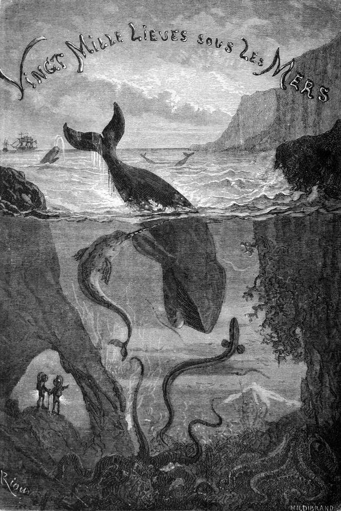
Translated from the French by Anthropic’s Claude Opus 5.5 under the direction of Marcelo Rovai, from the text of the 1871 Hetzel edition published by Project Gutenberg (no. 54873). Illustrations: the 111 drawings by Alphonse de Neuville and Édouard Riou, engraved by Hildibrand, from the same edition (public domain).
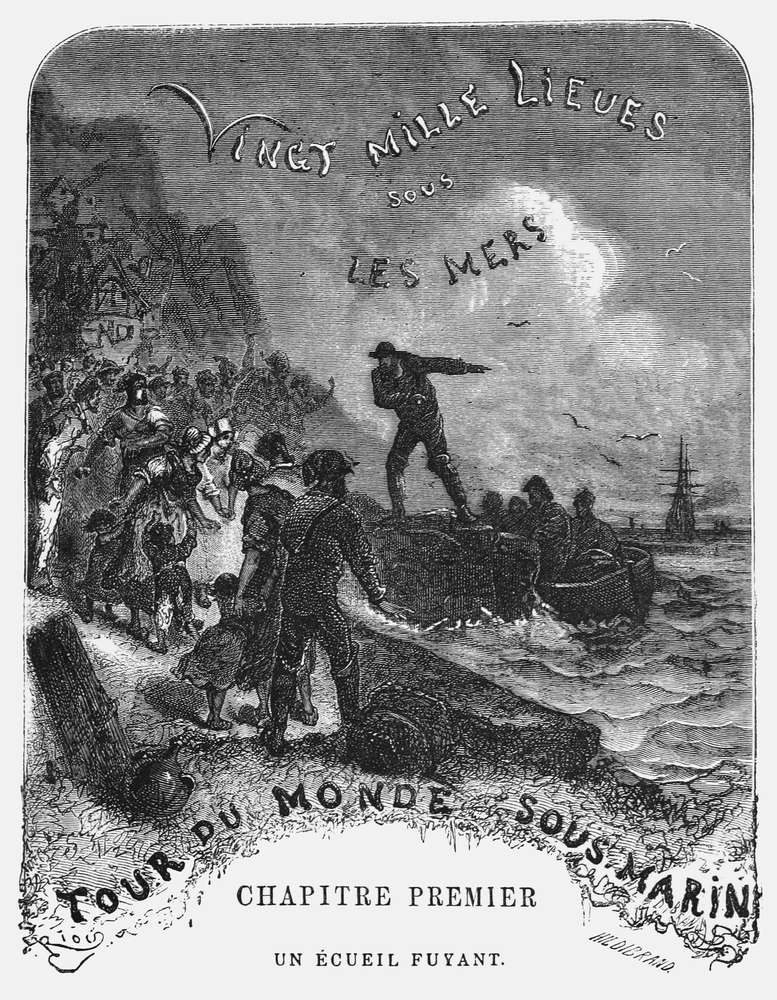
The year 1866 was marked by a strange event, an unexplained and inexplicable phenomenon that no one, surely, has forgotten. Not to mention the rumors that stirred up the populations of the ports and excited the public mind far inland, seafaring men were particularly shaken. Merchants, shipowners, ship captains, skippers, and masters of Europe and America, naval officers of every country, and, after them, the governments of the various States of the two continents were concerned with the matter in the highest degree.
For some time, in fact, several ships had met at sea with “an enormous thing,” a long, spindle-shaped object, sometimes phosphorescent, infinitely larger and faster than a whale.
The facts relating to this apparition, entered in various logbooks, agreed fairly closely on the structure of the object or creature in question, the unheard-of speed of its movements, the astonishing power of its locomotion, and the peculiar life with which it seemed endowed. If it was a cetacean, it surpassed in bulk all those that science had classified until then. Neither Cuvier, nor Lacépède, nor M. Duméril, nor M. de Quatrefages would have admitted the existence of such a monster—unless they had seen it, really seen it, with their own scientists’ eyes.
Taking the average of the observations made at different times—rejecting the timid estimates that gave the object a length of two hundred feet, and dismissing the exaggerated opinions that called it a mile wide and three long—one could nevertheless affirm that this phenomenal creature far exceeded all the dimensions accepted until then by ichthyologists—if, that is, it existed at all.
Now, it did exist; the fact itself could no longer be denied, and, given the leaning toward the marvelous that drives the human brain, one can understand the excitement this supernatural apparition caused throughout the world. As for relegating it to the realm of fable, that had to be given up.
On July 20, 1866, in fact, the steamer Governor-Higginson, of the Calcutta and Burnach steam navigation Company, had met this moving mass five miles off the east coast of Australia. Captain Baker thought at first that he was in the presence of an unknown reef; he was even preparing to determine its exact position when two columns of water, shot out by the inexplicable object, rose hissing a hundred and fifty feet into the air. So, unless the reef was subject to the intermittent eruptions of a geyser, the Governor-Higginson was dealing in all earnest with some aquatic mammal, unknown until then, that spouted columns of water mixed with air and vapor through its blowholes.
The same thing was observed on July 23 of the same year, in the waters of the Pacific, by the Cristobal-Colon, of the West India and Pacific steam navigation Company. So this extraordinary cetacean could move from one place to another with astonishing speed, since, three days apart, the Governor-Higginson and the Cristobal-Colon had observed it at two points on the chart separated by a distance of more than seven hundred nautical leagues.
Two weeks later, two thousand leagues from there, the Helvetia, of the Compagnie Nationale, and the Shannon, of the Royal-Mail, sailing on opposite courses in that part of the Atlantic between the United States and Europe, signaled the monster to each other at 42° 15′ north latitude and 60° 35′ longitude west of the Greenwich meridian. From this simultaneous observation, it was thought possible to estimate the mammal’s minimum length at more than three hundred and fifty English feet1, since the Shannon and the Helvetia were smaller than it, though they measured a hundred meters from stem to sternpost. Now, the largest whales, those that frequent the waters around the Aleutian Islands, the Kulammak and the Umgullick, have never exceeded a length of fifty-six meters—if they even reach it.
These reports, arriving one after another, new observations made aboard the transatlantic liner Pereire, a collision between the monster and the Etna of the Inman line, an official report drawn up by the officers of the French frigate Normandie, and a very serious bearing taken by the staff of Commodore Fitz-James aboard the Lord-Clyde deeply stirred public opinion. In countries of a lighthearted temper, people joked about the phenomenon, but the serious and practical countries, England, America, and Germany, were keenly concerned with it.
Everywhere in the great cities the monster became the fashion; it was sung about in the cafés, ridiculed in the newspapers, and acted out in the theaters. The hoaxers had a fine opportunity to lay eggs of every color. In the newspapers—short of copy—there reappeared every imaginary and gigantic creature, from the white whale, the terrible “Moby Dick” of the hyperborean regions, to the immeasurable Kraken, whose tentacles can entwine a ship of five hundred tons and drag it into the depths of the Ocean. They even reprinted the accounts of ancient times, the opinions of Aristotle and Pliny, who admitted the existence of these monsters, then the Norwegian tales of Bishop Pontoppidan, the narratives of Paul Heggede, and finally the reports of Mr. Harrington, whose good faith cannot be suspected when he states that, being aboard the Castillan in 1857, he saw that enormous serpent which until then had frequented no seas but those of the old Constitutionnel.
Then broke out the endless controversy between the believers and the unbelievers in the learned societies and the scientific journals. The “monster question” inflamed people’s minds. The journalists who profess science, at war with those who profess wit, spilled floods of ink during that memorable campaign; some even spilled two or three drops of blood, for from the sea serpent they came down to the most offensive personal attacks.
For six months the war went on with varying fortunes. To the leading articles of the Geographical Institute of Brazil, the Royal Academy of Sciences of Berlin, the British Association, and the Smithsonian Institution of Washington, to the discussions in The Indian Archipelago, in Abbé Moigno’s Cosmos, and in Petermann’s Mittheilungen, and to the science columns of the great newspapers of France and abroad, the popular press replied with inexhaustible verve. Its witty writers, parodying a saying of Linnaeus quoted by the monster’s opponents, maintained in effect that “nature does not make fools,” and they implored their contemporaries not to give nature the lie by admitting the existence of Krakens, sea serpents, “Moby Dicks,” and other ravings of delirious sailors. Finally, in an article in a much-feared satirical paper, the most popular of its writers, outdoing all the rest, charged at the monster like Hippolytus, dealt it a last blow, and finished it off amid a universal burst of laughter. Wit had defeated science.
During the first months of 1867, the question seemed to be buried, and it did not seem likely to come back to life, when new facts were brought to the public’s attention. It was then no longer a scientific problem to be solved, but a real and serious danger to be avoided. The question took on an entirely different aspect. The monster became an islet, a rock, a reef once more, but a runaway reef, unfixable and elusive.
On March 5, 1867, the Moravian, of the Montreal Ocean Company, finding herself during the night at 27° 30′ latitude and 72° 15′ longitude, struck with her starboard quarter a rock that no chart showed in those waters. Under the combined push of the wind and her four hundred horsepower, she was making thirteen knots. There is no doubt that, but for the superior quality of her hull, the Moravian, torn open by the shock, would have gone down with the two hundred and thirty-seven passengers she was bringing back from Canada.
The accident had happened at about five in the morning, as day was beginning to break. The officers of the watch rushed to the stern of the ship. They examined the Ocean with the most scrupulous attention. They saw nothing except a strong eddy breaking three cable lengths away, as if the sheets of water had been violently churned. The position was precisely recorded, and the Moravian continued on her way with no apparent damage. Had she struck an underwater rock, or some enormous piece of wreckage? No one could tell; but when her hull was examined in dry dock, it was found that part of her keel had been broken.
This fact, extremely serious in itself, might perhaps have been forgotten like so many others if, three weeks later, it had not happened again under identical conditions. Only, thanks to the nationality of the ship that fell victim to this new collision, and thanks to the reputation of the Company to which that ship belonged, the event caused an immense stir.
No one is unaware of the name of the famous English shipowner Cunard. In 1840 this intelligent industrialist founded a mail service between Liverpool and Halifax with three wooden paddle steamers of four hundred horsepower and eleven hundred and sixty-two tons. Eight years later, the Company’s fleet grew by four ships of six hundred and fifty horsepower and eighteen hundred and twenty tons, and, two years after that, by two more vessels of greater power and tonnage. In 1853, the Cunard company, whose mail contract had just been renewed, added to its fleet one after another the Arabia, the Persia, the China, the Scotia, the Java, and the Russia, all first-rate ships, and the largest, after the Great-Eastern, ever to plow the seas. So, in 1867, the Company owned twelve ships, eight of them paddle steamers and four driven by screws.
If I give these very brief details, it is so that everyone may fully understand the importance of this shipping company, known the world over for its intelligent management. No transoceanic shipping venture has been run with more skill; no business has been crowned with more success. In twenty-six years, Cunard ships have crossed the Atlantic two thousand times, and never has a voyage been missed, never has a delay occurred, never has a letter, a man, or a ship been lost. And so passengers still choose the Cunard line over any other, despite the powerful competition France gives it, as appears from a survey of the official records of recent years. That said, no one will be surprised at the stir caused by the accident that befell one of its finest steamers.
On April 13, 1867, with a fair sea and a manageable breeze, the Scotia was at 15° 12′ longitude and 45° 37′ latitude. She was making thirteen and forty-three hundredths knots under the push of her thousand horsepower. Her paddle wheels were beating the sea with perfect regularity. Her draft was then six meters and seventy centimeters, and her displacement six thousand six hundred and twenty-four cubic meters.
At seventeen minutes past four in the afternoon, while the passengers were gathered at lunch in the main saloon, a shock, not very noticeable on the whole, was felt on the hull of the Scotia, on her quarter and a little behind the port paddle wheel.
The Scotia had not struck; she had been struck, and by a cutting or piercing instrument rather than a blunt one. The collision had seemed so slight that no one aboard would have worried about it but for the shouts of the hold crew, who came running up on deck crying:
“We’re sinking! We’re sinking!”
At first the passengers were very frightened, but Captain Anderson hastened to reassure them. And in fact the danger could not be imminent. The Scotia, divided into seven compartments by watertight bulkheads, could brave a leak with impunity.
Captain Anderson went down into the hold at once. He found that the fifth compartment had been flooded by the sea, and the speed of the flooding proved that the leak was a large one. Very fortunately, this compartment did not contain the boilers, for the fires would have been put out at once.
Captain Anderson stopped the engines immediately, and one of the sailors dived to examine the damage. A few moments later it was confirmed that there was a hole two meters wide in the steamer’s hull. Such a leak could not be stopped, and the Scotia, her paddle wheels half under water, had to continue her voyage in that state. She was then three hundred miles from Cape Clear, and after a three-day delay that greatly worried Liverpool, she entered the Company’s docks.
The engineers then proceeded to inspect the Scotia, which was put into dry dock. They could not believe their eyes. Two and a half meters below the waterline there was a regular gash in the shape of an isosceles triangle. The break in the iron plate was perfectly clean, and it could not have been cut more neatly with a punch. The piercing tool that had made it must therefore have been of uncommon temper—and after being driven with prodigious force, and having thus pierced a plate four centimeters thick, it must have withdrawn by itself with a backward motion that was truly inexplicable.
Such was this last fact, which had the effect of stirring public opinion all over again. From that moment on, in fact, every maritime disaster that had no definite cause was put down to the monster. This fantastic animal took the blame for all those shipwrecks, whose number is unfortunately considerable; for of the three thousand ships whose loss is recorded each year at the Bureau-Veritas, the number of steamships or sailing ships presumed lost with all hands, for lack of news, comes to no fewer than two hundred!
Now, it was the “monster” that, rightly or wrongly, was accused of their disappearance, and, as communications between the various continents became more and more dangerous because of it, the public spoke out and demanded categorically that the seas be rid, at last and at any cost, of this formidable cetacean.
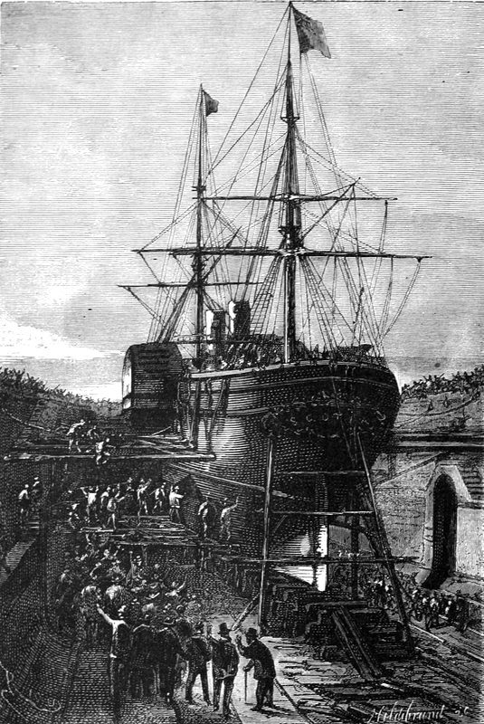
At the time these events took place, I was returning from a scientific expedition into the Badlands of Nebraska, in the United States. In my capacity as assistant professor at the Museum of Natural History in Paris, I had been attached to that expedition by the French government. After six months spent in Nebraska, laden with precious collections, I arrived in New York toward the end of March. My departure for France was set for the first days of May. Meanwhile, then, I was busy classifying my mineralogical, botanical, and zoological riches when the Scotia incident occurred.
I was perfectly well informed on the question of the day, and how could I not have been? I had read and reread all the American and European newspapers without being any the wiser. The mystery intrigued me. Unable to form an opinion, I wavered from one extreme to the other. That there was something could not be doubted, and the unbelievers were invited to put their finger on the Scotia’s wound.
When I arrived in New York, the question was burning. The hypothesis of the floating islet, of the elusive reef, upheld by a few minds of little competence, had been completely abandoned. And indeed, unless the reef had an engine in its belly, how could it move about with such prodigious speed?
The existence of a floating hull, of an enormous wreck, was likewise rejected, again because of the speed of its movements.
Two possible solutions to the question remained, then, and they created two very distinct camps of supporters: on one side, those who held for a monster of colossal strength; on the other, those who held for a “submarine” boat of extreme motive power.
Now, this last hypothesis, admissible after all, could not withstand the inquiries pursued in the Old World and the New. That a private individual should have such a mechanical device at his disposal was hardly likely. Where and when would he have had it built, and how could he have kept its construction secret?
Only a government could possess such a destructive machine, and in these disastrous times, when man strives to multiply the power of the weapons of war, it was possible that some State was trying out this formidable device without the knowledge of the others. After chassepot rifles, torpedoes; after torpedoes, underwater rams; then—the reaction. At least, I hope so.
But the hypothesis of a war machine also fell before the declarations of the governments. Since this was a matter of public interest, as transoceanic communications were suffering, the governments’ sincerity could not be called into question. Besides, how could one admit that the construction of this submarine boat had escaped the public eye? Keeping such a secret under these circumstances is very difficult for a private individual, and certainly impossible for a State whose every act is stubbornly watched by rival powers.
So, after inquiries made in England, France, Russia, Prussia, Spain, Italy, and America, and even in Turkey, the hypothesis of an underwater Monitor was definitively rejected.
The monster therefore came back afloat, in spite of the endless jokes with which the popular press larded it, and on that road imaginations soon gave themselves up to the most absurd fancies of a fantastic ichthyology.
On my arrival in New York, several people had done me the honor of consulting me about the phenomenon in question. I had published in France a work in quarto, in two volumes, entitled The Mysteries of the Great Ocean Depths. This book, particularly well received by the learned world, made me a specialist in that rather obscure branch of natural history. My opinion was asked. As long as I could deny the reality of the fact, I confined myself to absolute denial. But soon, with my back to the wall, I had to explain myself categorically. And indeed, “the honorable Pierre Aronnax, professor at the Paris Museum,” was summoned by the New York Herald to state some opinion or other.
I complied. I spoke because I could not keep silent. I discussed the question from every angle, politically and scientifically, and I give here an extract from a very substantial article that I published in the issue of April 30.
“And so,” I said, “having examined the various hypotheses one by one, and every other supposition being rejected, we must necessarily admit the existence of a marine animal of extraordinary power.
“The great depths of the Ocean are entirely unknown to us. The sounding line has not been able to reach them. What goes on in those remote abysses? What creatures live, or can live, twelve or fifteen miles below the surface of the waters? What is the constitution of these animals? We can hardly conjecture.
“However, the solution to the problem put before me may take the form of a dilemma.
“Either we know all the varieties of creatures that people our planet, or we do not.
“If we do not know them all, if nature still has secrets for us in ichthyology, nothing is more acceptable than to admit the existence of fishes or cetaceans of new species, or even new genera, of an essentially ‘deep-dwelling’ constitution, which inhabit the layers out of reach of the sounding line, and which some event, a fancy, a whim if you will, brings back at long intervals to the upper level of the Ocean.
“If, on the contrary, we know all the living species, we must necessarily look for the animal in question among the marine creatures already catalogued, and in that case I would be inclined to admit the existence of a giant narwhal.
“The common narwhal, or sea unicorn, often reaches a length of sixty feet. Multiply that size by five, even by ten, give this cetacean a strength in proportion to its size, increase its offensive weapons, and you have the animal required. It will have the proportions determined by the officers of the Shannon, the instrument demanded by the perforation of the Scotia, and the power needed to cut into the hull of a steamer.
“The narwhal, in fact, is armed with a sort of ivory sword, a halberd, as certain naturalists put it. It is a main tooth that has the hardness of steel. Some of these teeth have been found embedded in the bodies of whales, which the narwhal always attacks with success. Others have been pulled, not without difficulty, from the hulls of ships that they had pierced right through, as an auger pierces a barrel. The museum of the Faculty of Medicine in Paris owns one of these tusks, two meters and twenty-five centimeters long and forty-eight centimeters wide at its base!
“Well, then! Suppose the weapon ten times stronger and the animal ten times more powerful, launch it at a speed of twenty miles an hour, multiply its mass by its velocity, and you obtain a shock capable of producing the catastrophe in question.
“Therefore, until further information, I would vote for a sea unicorn of colossal dimensions, armed no longer with a halberd but with a true spur, like the armored frigates or the war ‘rams,’ whose mass and motive power it would have at the same time.
“Thus would this inexplicable phenomenon be explained—unless there is nothing at all, in spite of what has been glimpsed, seen, felt, and suffered—which is still possible!”
These last words were cowardice on my part; but I wanted, up to a point, to protect my dignity as a professor, and not give too much cause for laughter to the Americans, who laugh heartily when they laugh. I was keeping a way out for myself. At bottom, I admitted the existence of the “monster.”
My article was hotly debated, which gave it wide notice. It won over a certain number of supporters. The solution it proposed, moreover, left free rein to the imagination. The human mind delights in these grand conceptions of supernatural beings. And the sea is precisely their best vehicle, the only medium in which such giants—beside whom land animals, elephants or rhinoceroses, are mere dwarfs—could be produced and develop. The liquid masses carry the largest known species of mammals, and perhaps they conceal mollusks of incomparable size, crustaceans fearful to behold, such as lobsters a hundred meters long or crabs weighing two hundred tons! Why not? In former times, the land animals of the geological ages, the quadrupeds, the quadrumanes, the reptiles, the birds, were built on gigantic patterns. The Creator had cast them in a colossal mold that time has gradually reduced. Why should the sea, in its unknown depths, not have kept these vast specimens of the life of another age, the sea that never changes, while the earth’s core changes almost without cease? Why should it not hide in its bosom the last varieties of those titanic species, whose years are centuries and whose centuries are millennia?
But I am letting myself be carried away by fancies that are no longer mine to entertain! Enough of these chimeras, which time has turned for me into terrible realities. I repeat: opinion then took shape on the nature of the phenomenon, and the public accepted without dispute the existence of a prodigious creature that had nothing in common with the fabled sea serpents.
But if some saw in it only a purely scientific problem to be solved, others, more practical, especially in America and England, were of the opinion that the Ocean should be purged of this fearsome monster in order to make transoceanic communications safe again. The industrial and commercial newspapers treated the question mainly from that point of view. The Shipping and Mercantile Gazette, Lloyd’s, the Paquebot, the Revue maritime et coloniale, all the papers devoted to the insurance companies, which were threatening to raise their premiums, were unanimous on this point.
Public opinion having declared itself, the States of the Union were the first to act. In New York, preparations were made for an expedition to hunt down the narwhal. A fast frigate, the Abraham Lincoln, was made ready to put to sea as soon as possible. The arsenals were thrown open to Commander Farragut, who actively hurried the fitting out of his frigate.
Exactly as always happens, from the moment it was decided to pursue the monster, the monster did not appear again. For two months no one heard anything of it. No ship met it. It was as if this Unicorn knew of the plots being hatched against it. There had been so much talk about it, even over the transatlantic cable! And so the jokers claimed that the crafty creature had intercepted some telegram in passing and was now turning it to account.
So, with the frigate fitted out for a distant campaign and supplied with formidable fishing gear, no one knew where to send her any longer. And impatience was growing when, on July 2, word came that a steamer on the line from San Francisco, California, to Shanghai had seen the animal again three weeks earlier, in the northern waters of the Pacific.
The excitement caused by this news was extreme. Commander Farragut was not granted twenty-four hours’ respite. His provisions were aboard. His bunkers were overflowing with coal. Not one man was missing from his crew list. He had only to light his furnaces, get up steam, and cast off! Half a day’s delay would not have been forgiven him! Besides, Commander Farragut asked for nothing better than to leave.
Three hours before the Abraham Lincoln left the Brooklyn pier, I received a letter worded as follows:
“Monsieur Aronnax, Professor at the Paris Museum, “Fifth Avenue Hotel,
“New York.
“Sir,
“If you wish to join the expedition of the Abraham Lincoln, the government of the Union will be pleased to have France represented by you in this undertaking. Commander Farragut holds a cabin at your disposal.
“Very cordially yours,
“J.-B. HOBSON,
“Secretary of the Navy.”
Three seconds before J.-B. Hobson’s letter arrived, I had no more thought of pursuing the Unicorn than of attempting the Northwest Passage. Three seconds after reading the honorable Secretary of the Navy’s letter, I understood at last that my true vocation, the sole aim of my life, was to hunt down this disturbing monster and rid the world of it.
And yet I was just back from an arduous journey, tired and longing for rest. All I wanted was to see my country again, my friends, my little lodging in the Jardin des Plantes, my dear and precious collections! But nothing could hold me back. I forgot everything, weariness, friends, and collections, and accepted the American government’s offer without further reflection.
“Besides,” I thought, “every road leads back to Europe, and the Unicorn will be kind enough to draw me toward the coasts of France! That worthy animal will let itself be caught in European waters—for my personal convenience—and I intend to bring back no less than half a meter of its ivory halberd to the Museum of Natural History.”
But in the meantime I had to look for this narwhal in the northern Pacific Ocean, which, for a man going home to France, meant taking the road to the antipodes.
“Conseil!” I called out impatiently.
Conseil was my manservant. A devoted lad who went with me on all my travels; a good Fleming whom I was fond of and who returned the feeling; phlegmatic by nature, orderly on principle, zealous by habit, little surprised by life’s surprises, very skillful with his hands, fit for any service, and, despite his name, never giving counsel—even when it was not asked for.
From rubbing shoulders with the scientists of our little world at the Jardin des Plantes, Conseil had come to know a thing or two. In him I had a specialist, well versed in the classification of natural history, running with an acrobat’s agility up and down the whole ladder of branches, groups, classes, subclasses, orders, families, genera, subgenera, species, and varieties. But his science stopped there. Classifying was his life, and he knew nothing more. Well versed in the theory of classification but not in its practice, he could not, I believe, have told a sperm whale from a baleen whale! And yet what a fine and worthy lad!
For ten years, up to then, Conseil had followed me wherever science led me. Never a remark from him on the length or the hardship of a journey. No objection to packing his bag for any country at all, China or the Congo, however far away. He went there as he went here, without asking for more. He enjoyed, moreover, a robust health that defied every illness; solid muscles, but no nerves, not the least sign of nerves—in the moral sense, of course.
The lad was thirty years old, and his age was to his master’s as fifteen is to twenty. May I be forgiven for saying in this way that I was forty.
Only, Conseil had one fault. A fanatical stickler for form, he never spoke to me except in the third person—to the point of being irritating.
“Conseil!” I repeated, beginning my preparations for departure with a feverish hand.
Certainly I was sure of this devoted lad. Usually I never asked him whether or not it suited him to follow me on my travels; but this time it was an expedition that might drag on indefinitely, a hazardous undertaking, in pursuit of an animal capable of sinking a frigate like a nutshell! There was matter for reflection in it, even for the most impassive man in the world! What would Conseil say?
“Conseil!” I called a third time.
Conseil appeared.
“Did master call?” he said as he came in.
“Yes, my lad. Get me ready, get yourself ready. We leave in two hours.”
“As master pleases,” Conseil answered calmly.
“Not a moment to lose. Pack all my traveling gear in my trunk, coats, shirts, socks, without counting, but as many as you can, and hurry!”
“And master’s collections?” Conseil pointed out.
“We’ll see to them later.”
“What! Master’s archaeotheriums, hyracotheriums, oreodonts, cheropotamuses, and other carcasses?”
“We’ll leave them at the hotel.”
“And master’s live babirusa?”
“It will be fed while we are away. Besides, I’ll give orders for our menagerie to be shipped to France.”
“So we are not going back to Paris?” asked Conseil.
“Yes… certainly…” I answered evasively, “but by way of a detour.”
“Whatever detour master pleases.”
“Oh, it will be a small matter! A slightly less direct route, that’s all. We are taking passage on the Abraham Lincoln.”
“As master sees fit,” Conseil answered peacefully.
“You know, my friend, it’s about the monster… the famous narwhal… We are going to rid the seas of it!… The author of a work in quarto, in two volumes, on The Mysteries of the Great Ocean Depths cannot excuse himself from sailing with Commander Farragut. A glorious mission, but… a dangerous one too! There’s no knowing where we’re going! Those beasts can be very capricious! But we’ll go all the same! We have a commander who doesn’t scare easily!…”
“Whatever master does, I shall do,” answered Conseil.
“And think it over carefully! For I don’t want to hide anything from you. This is one of those voyages people don’t always come back from!”
“As master pleases.”
A quarter of an hour later, our trunks were ready. Conseil had done it in no time, and I was sure nothing was missing, for the lad classified shirts and coats as well as birds or mammals.
The hotel elevator set us down in the great lobby of the mezzanine. I went down the few steps leading to the ground floor. I settled my bill at that vast counter, always besieged by a considerable crowd. I gave orders to ship my bales of stuffed animals and dried plants to Paris (France). I opened a sufficient credit for the babirusa, and, with Conseil following me, I jumped into a carriage.
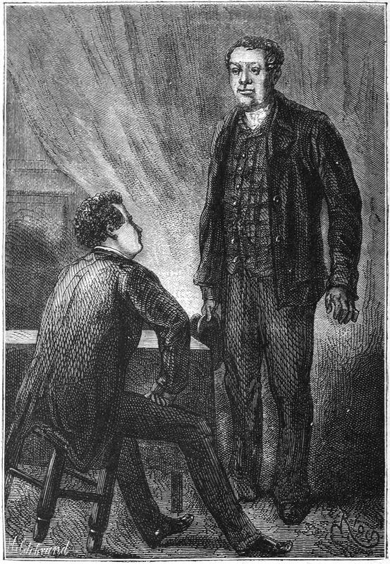
The carriage, at twenty francs a ride, went down Broadway to Union Square, followed Fourth Avenue to its junction with Bowery Street, took Katrin Street, and stopped at the thirty-fourth pier2. There the Katrin ferryboat carried us, men, horses, and carriage, over to Brooklyn, New York’s great annex, on the left bank of the East River, and in a few minutes we arrived at the wharf where the Abraham Lincoln was belching torrents of black smoke from her two funnels.
Our baggage was immediately transferred to the frigate’s deck. I hurried aboard. I asked for Commander Farragut. One of the sailors led me to the poop deck, where I found myself in the presence of a fine-looking officer who held out his hand to me.
“Monsieur Pierre Aronnax?” he said.
“Himself,” I answered. “Commander Farragut?”
“In person. Welcome aboard, Professor. Your cabin is waiting for you.”
I bowed and, leaving the commander to see to his getting under way, I had myself taken to the cabin intended for me.
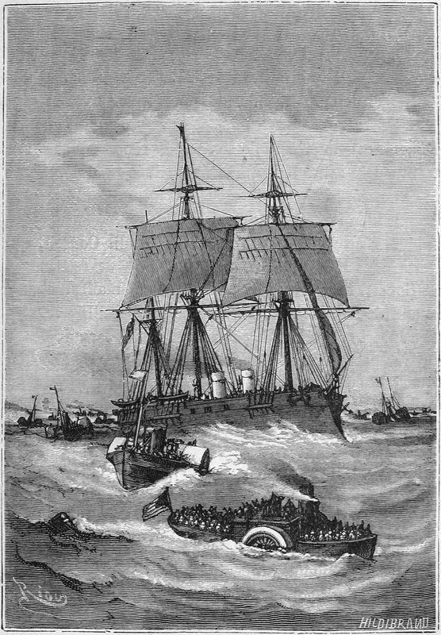
The Abraham Lincoln had been perfectly chosen and fitted out for her new purpose. She was a fast frigate, equipped with superheating apparatus that allowed the pressure of her steam to be raised to seven atmospheres. Under that pressure, the Abraham Lincoln reached an average speed of eighteen and three-tenths miles an hour, a considerable speed, but still not enough to contend with the gigantic cetacean.
The frigate’s interior arrangements matched her nautical qualities. I was very pleased with my cabin, located aft, which opened onto the officers’ wardroom.
“We shall be comfortable here,” I said to Conseil.
“As comfortable, if master will allow me,” answered Conseil, “as a hermit crab in a whelk’s shell.”
I left Conseil to stow our trunks properly and went back up on deck to follow the preparations for getting under way.
At that moment Commander Farragut was having the last moorings cast off that held the Abraham Lincoln to the Brooklyn pier. So a quarter of an hour’s delay, or even less, and the frigate would have left without me, and I would have missed this extraordinary, supernatural, improbable expedition, whose truthful account may well find some unbelievers all the same.
But Commander Farragut did not want to lose a day, or even an hour, in reaching the waters where the animal had just been reported. He sent for his engineer.
“Do we have steam up?” he asked him.
“Yes, sir,” the engineer answered.
“Go ahead!” cried Commander Farragut.
At this order, which was passed to the engine by means of compressed-air devices, the mechanics turned the starting wheel. The steam whistled as it rushed into the half-opened valves. The long horizontal pistons groaned and pushed the connecting rods of the shaft. The blades of the propeller beat the waves with increasing speed, and the Abraham Lincoln moved forward majestically amid a hundred or so ferryboats and tenders3 loaded with spectators, who formed an escort for her.
The wharves of Brooklyn and all the part of New York that borders the East River were covered with onlookers. Three hurrahs, bursting from five hundred thousand chests, rang out one after another. Thousands of handkerchiefs waved above the dense crowd and saluted the Abraham Lincoln until she reached the waters of the Hudson, at the tip of the long peninsula that forms the city of New York.
Then the frigate, following on the New Jersey side the admirable right bank of the river, lined with villas, passed between the forts, which saluted her with their largest guns. The Abraham Lincoln replied by lowering and raising three times the American flag, whose thirty-nine stars shone on her mizzen gaff; then, changing course to take the buoyed channel that curves through the inner bay formed by the point of Sandy Hook, she skirted that sandy tongue of land, where a few thousand spectators cheered her once more.
The procession of boats and tenders still followed the frigate, and it left her only abreast of the lightship whose two lights mark the entrance to the New York channels.
It was then striking three. The pilot went down into his boat and rejoined the little schooner waiting for him to leeward. The fires were stoked; the propeller beat the waves faster; the frigate ran along the low yellow coast of Long Island, and at eight in the evening, having lost sight of the Fire Island lights to the northwest, she ran at full steam over the dark waters of the Atlantic.
Commander Farragut was a good seaman, worthy of the frigate he commanded. He and his ship were one. He was her soul. On the question of the cetacean, no doubt arose in his mind, and he did not allow the animal’s existence to be debated aboard his ship. He believed in it as certain good women believe in Leviathan—by faith, not by reason. The monster existed, he would rid the seas of it, he had sworn to. He was a sort of Knight of Rhodes, a Dieudonné de Gozon, setting out to meet the serpent that was ravaging his island. Either Commander Farragut would kill the narwhal, or the narwhal would kill Commander Farragut. There was no middle ground.
The ship’s officers shared their chief’s opinion. You should have heard them talk, discuss, argue, calculate the various chances of an encounter, and watch the vast expanse of the Ocean. More than one of them took a voluntary watch on the topgallant crosstrees who would have cursed such a chore under any other circumstances. As long as the sun traced its daily arc, the rigging was crowded with sailors whose feet the deck planks were burning, and who could not keep still there! And yet the Abraham Lincoln was not yet cutting through the suspect waters of the Pacific with her stem.
As for the crew, they asked nothing better than to meet the unicorn, harpoon it, hoist it aboard, and cut it up. They watched the sea with scrupulous attention. Besides, Commander Farragut spoke of a certain sum of two thousand dollars reserved for whoever, cabin boy or sailor, petty officer or officer, first sighted the animal. I leave you to imagine how eyes were exercised aboard the Abraham Lincoln.
For my own part, I did not lag behind the others, and I left no one my share of daily observation. The frigate would have had a hundred reasons to be called the Argus. Alone among us all, Conseil protested by his indifference to the question that so excited us, and struck a jarring note amid the general enthusiasm on board.
I have said that Commander Farragut had carefully provided his ship with gear suited to catching the gigantic cetacean. A whaler could not have been better armed. We had every known device, from the hand-thrown harpoon to the barbed arrows of blunderbusses and the explosive bullets of duck guns. On the forecastle lay a perfected breech-loading cannon, very thick in the walls and very narrow in the bore, a model of which is to be shown at the Universal Exposition of 1867. This precious instrument, of American origin, could easily send a conical projectile of four kilograms over an average distance of sixteen kilometers.
So the Abraham Lincoln lacked no means of destruction. But she had something better still. She had Ned Land, the king of harpooners.
Ned Land was a Canadian, of uncommon manual skill, who had no equal in his perilous trade. Skill and coolness, daring and cunning, he possessed these qualities to a superior degree, and it would take a very crafty whale or a singularly clever sperm whale to escape his harpoon.
Ned Land was about forty years old. He was a tall man—over six English feet—powerfully built, with a serious air, not very communicative, sometimes violent, and very quick to anger when crossed. His person drew attention, especially the power of his gaze, which gave his face a singular emphasis.
I believe Commander Farragut had done wisely to take this man aboard. For eye and arm, he was worth the whole crew by himself. I can best compare him to a powerful telescope that was at the same time a cannon always ready to fire.
To say Canadian is to say French, and, uncommunicative as Ned Land was, I must admit that he took a certain liking to me. My nationality attracted him, no doubt. It was an opportunity for him to speak, and for me to hear, that old language of Rabelais that is still in use in some Canadian provinces. The harpooner’s family came from Quebec, and was already a tribe of bold fishermen at the time when that city belonged to France.
Little by little, Ned took a liking to conversation, and I loved to hear the tale of his adventures in the polar seas. He told of his fishing and his fights with great natural poetry. His story took on an epic form, and I seemed to be listening to some Canadian Homer singing the Iliad of the hyperborean regions.
I am describing this bold companion now as I know him today. For we have become old friends, joined by that unalterable friendship that is born and cemented in the most terrifying circumstances! Ah, brave Ned! I ask only to live a hundred years more, so as to remember you the longer!
And now, what was Ned Land’s opinion on the question of the sea monster? I must admit that he hardly believed in the unicorn, and that, alone aboard, he did not share the general conviction. He even avoided the subject, on which I felt I should take him up one day.
On a magnificent evening, July 30, that is, three weeks after our departure, the frigate was abreast of Cape Blanco, thirty miles to leeward of the Patagonian coast. We had crossed the Tropic of Capricorn, and the Strait of Magellan opened less than seven hundred miles to the south. Within a week, the Abraham Lincoln would be plowing the waves of the Pacific.
Seated on the poop deck, Ned Land and I were chatting about one thing and another, looking at that mysterious sea whose depths have remained until now out of reach of human eyes. Quite naturally, I brought the conversation around to the giant unicorn and went over the various chances of success or failure of our expedition. Then, seeing that Ned let me talk without saying much, I pressed him more directly.
“How, Ned,” I asked him, “how can you not be convinced of the existence of the cetacean we are pursuing? Do you have some particular reasons for being so incredulous?”
The harpooner looked at me for a few moments before answering, struck his broad forehead with his hand in a gesture habitual to him, closed his eyes as if to collect himself, and said at last:
“Maybe I do, Monsieur Aronnax.”
“And yet, Ned, you, a professional whaler, you who are familiar with the great marine mammals, you whose imagination ought easily to accept the hypothesis of enormous cetaceans, you should be the last to doubt under such circumstances!”
“That’s where you’re mistaken, Professor,” Ned answered. “That common folk should believe in extraordinary comets crossing space, or in antediluvian monsters living inside the globe, well and good, but neither the astronomer nor the geologist admits such chimeras. The same goes for the whaler. I’ve chased a lot of cetaceans, I’ve harpooned a great many, I’ve killed several, but however powerful and well armed they were, neither their tails nor their tusks could have cut into the iron plates of a steamer.”
“And yet, Ned, there are reports of ships that the narwhal’s tooth has run clean through.”
“Wooden ships, maybe,” the Canadian answered, “and even then, I’ve never seen any. So, until there’s proof to the contrary, I deny that whales, sperm whales, or unicorns can do anything of the kind.”
“Listen to me, Ned…”
“No, Professor, no. Anything you like but that. A gigantic octopus, maybe?…”
“Even less, Ned. The octopus is only a mollusk, and that very name shows how little firmness its flesh has. Even if it were five hundred feet long, the octopus, which does not belong to the branch of the vertebrates, is entirely harmless to ships like the Scotia or the Abraham Lincoln. The exploits of Krakens or other monsters of that sort must therefore be relegated to the realm of fable.”
“So, Mr. Naturalist,” Ned Land went on in a rather mocking tone, “you persist in admitting the existence of an enormous cetacean…?”
“Yes, Ned, I repeat it to you with a conviction based on the logic of the facts. I believe in the existence of a mammal, powerfully constructed, belonging to the branch of the vertebrates, like the whales, the sperm whales, or the dolphins, and equipped with a horny tusk whose power of penetration is extreme.”
“Hm!” said the harpooner, shaking his head like a man who will not let himself be convinced.
“Note, my worthy Canadian,” I went on, “that if such an animal exists, if it lives in the depths of the Ocean, if it frequents the liquid layers several miles below the surface of the waters, it necessarily has a constitution whose solidity defies all comparison.”
“And why such a powerful constitution?” asked Ned.
“Because it takes incalculable strength to stay in the deep layers and withstand their pressure.”
“Really?” said Ned, looking at me and winking.
“Really, and a few figures will easily prove it to you.”
“Oh, figures!” Ned replied. “You can do what you like with figures!”
“In business, Ned, but not in mathematics. Listen to me. Let us grant that the pressure of one atmosphere is represented by the pressure of a column of water thirty-two feet high. In reality the column of water would be less high, since we are dealing with seawater, whose density is greater than that of fresh water. Well, when you dive, Ned, for every thirty-two feet of water above you, your body bears an additional pressure equal to that of the atmosphere, that is, so many kilograms for each square centimeter of its surface. It follows that at three hundred and twenty feet this pressure is ten atmospheres, a hundred atmospheres at three thousand two hundred feet, and a thousand atmospheres at thirty-two thousand feet, or about two and a half leagues. Which is to say that if you could reach that depth in the Ocean, every square centimeter of the surface of your body would undergo a pressure of a thousand kilograms. Now, my good Ned, do you know how many square centimeters of surface you have?”
“I haven’t the faintest idea, Monsieur Aronnax.”
“About seventeen thousand.”
“As many as that?”
“And since atmospheric pressure is in reality a little more than the weight of one kilogram per square centimeter, your seventeen thousand square centimeters are bearing at this moment a pressure of seventeen thousand five hundred and sixty-eight kilograms.”
“Without my noticing?”
“Without your noticing. And if you are not crushed by such a pressure, it is because the air enters the inside of your body at an equal pressure. Hence a perfect balance between the inner push and the outer push, which neutralize each other, so that you bear them without difficulty. But in the water it is another matter.”
“Yes, I see,” answered Ned, now more attentive, “because the water surrounds me and doesn’t get inside me.”
“Exactly, Ned. So at thirty-two feet below the surface of the sea, you would undergo a pressure of seventeen thousand five hundred and sixty-eight kilograms; at three hundred and twenty feet, ten times that pressure, or one hundred and seventy-five thousand six hundred and eighty kilograms; at three thousand two hundred feet, a hundred times that pressure, or one million seven hundred and fifty-six thousand eight hundred kilograms; and at thirty-two thousand feet, finally, a thousand times that pressure, or seventeen million five hundred and sixty-eight thousand kilograms; that is to say, you would be flattened as if you had just been pulled from between the plates of a hydraulic press!”
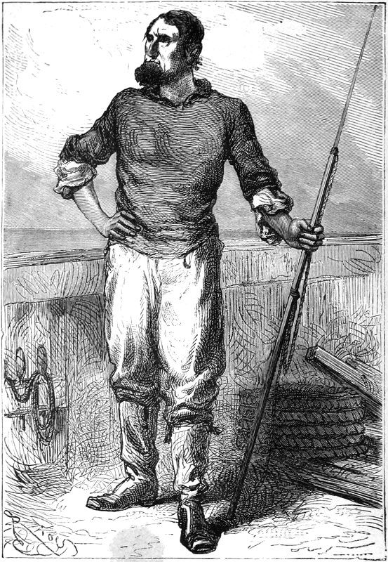
“The devil!” said Ned.
“Well, then, my worthy harpooner, if vertebrates several hundred meters long and proportionally large stay at such depths, creatures whose surface is measured in millions of square centimeters, the push they undergo must be reckoned in billions of kilograms. Calculate, then, what the resistance of their bony framework and the strength of their constitution must be to withstand such pressures!”
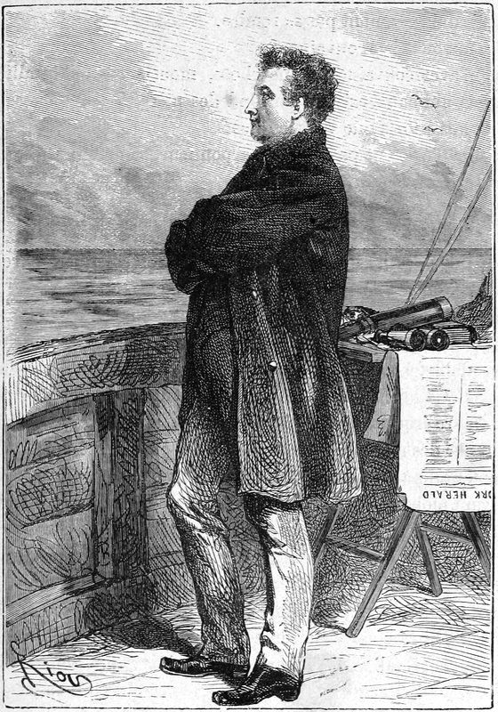
“They’d have to be made,” answered Ned Land, “of iron plates eight inches thick, like the armored frigates.”
“As you say, Ned, and think then of the havoc such a mass could cause, launched at the speed of an express train against the hull of a ship.”
“Yes… indeed… maybe,” answered the Canadian, shaken by these figures but unwilling to give in.
“Well, have I convinced you?”
“You’ve convinced me of one thing, Mr. Naturalist, which is that if such animals exist at the bottom of the seas, they must necessarily be as strong as you say.”
“But if they don’t exist, you stubborn harpooner, how do you explain the accident to the Scotia?”
“Maybe it’s…,” said Ned, hesitating.
“Go on!”
“Because… it isn’t true!” answered the Canadian, unknowingly repeating a famous reply of Arago’s.
But that reply proved the harpooner’s obstinacy and nothing else. That day I did not press him further. The Scotia accident could not be denied. The hole existed so surely that it had had to be plugged, and I do not think the existence of a hole can be demonstrated more categorically. Now, this hole had not made itself, and since it had not been produced by underwater rocks or underwater machines, it was necessarily due to the piercing tool of an animal.
In my opinion, then, and for all the reasons deduced above, this animal belonged to the branch of the vertebrates, the class of the mammals, the group of the pisciforms, and finally the order of the cetaceans. As for the family in which it ranked, whale, sperm whale, or dolphin, as for the genus it belonged to, as for the species in which it should be placed, that was a question to be cleared up later. To solve it, the unknown monster had to be dissected; to dissect it, it had to be caught; to catch it, it had to be harpooned—which was Ned Land’s business; to harpoon it, it had to be seen—which was the crew’s business; and to see it, it had to be met—which was the business of chance.
For some time the voyage of the Abraham Lincoln was marked by no incident. One circumstance did arise, however, that showed off Ned Land’s marvelous skill and proved how much confidence could be placed in him.
Off the Falklands, on June 30, the frigate exchanged signals with some American whalers, and we learned that they had had no news of the narwhal. But one of them, the captain of the Monroe, knowing that Ned Land had shipped aboard the Abraham Lincoln, asked for his help in hunting a whale that was in sight. Commander Farragut, eager to see Ned Land at work, allowed him to go aboard the Monroe. And chance served our Canadian so well that instead of one whale he harpooned two with a double strike, hitting one right in the heart and taking the other after a chase of a few minutes!
Decidedly, if the monster ever has to deal with Ned Land’s harpoon, I would not bet on the monster.
The frigate ran down the southeast coast of America with prodigious speed. On July 3 we were at the mouth of the Strait of Magellan, abreast of Cape Virgins. But Commander Farragut did not want to take that winding passage, and maneuvered so as to double Cape Horn.
The crew agreed with him unanimously. And indeed, was it likely that the narwhal could be met in that narrow strait? A good many sailors declared that the monster could not get through it, “that it was too big for that!”
On July 6, at about three in the afternoon, the Abraham Lincoln, fifteen miles to the south, doubled that solitary islet, that lost rock at the tip of the American continent to which some Dutch sailors gave the name of their hometown, Cape Horn. The course was set to the northwest, and the next day the frigate’s propeller was at last beating the waters of the Pacific.
“Keep your eyes open! Keep your eyes open!” the sailors of the Abraham Lincoln kept repeating.
And they opened them inordinately wide. Eyes and spyglasses, a little dazzled, it is true, by the prospect of two thousand dollars, did not rest for an instant. Day and night the surface of the Ocean was watched, and those with good night vision, whose ability to see in the dark increased their chances by fifty percent, had every opportunity to win the prize.
I, who was hardly attracted by the lure of money, was nonetheless not the least attentive person aboard. Giving only a few minutes to meals and a few hours to sleep, indifferent to sun or rain, I no longer left the ship’s deck. Now leaning over the bulwarks of the forecastle, now resting against the stern rail, I devoured with a greedy eye the cottony wake that whitened the sea as far as the eye could reach! And how many times I shared the excitement of the officers and the crew when some capricious whale raised its blackish back above the waves. The frigate’s deck would fill in an instant. The hatchways poured out a torrent of sailors and officers. Each of them, chest heaving and eyes blurred, watched the movements of the cetacean. I looked and looked until my retinas were worn out, until I was nearly blind, while Conseil, phlegmatic as ever, kept telling me in a calm voice:
“If master would be kind enough to open his eyes less wide, master would see a good deal more!”
But it was wasted excitement! The Abraham Lincoln would change course and run down the reported animal, a simple whale or a common sperm whale, which soon disappeared amid a chorus of curses!
Meanwhile the weather stayed favorable. The voyage went forward under the best conditions. It was then the bad season in the southern hemisphere, for July in that zone corresponds to our European January; but the sea stayed fair and could easily be watched over a wide radius.
Ned Land still showed the most stubborn disbelief; he even made a point of not looking at the surface of the waves outside his watch—at least when no whale was in sight. And yet his marvelous power of sight would have been of great service. But eight hours out of twelve, this stubborn Canadian was reading or sleeping in his cabin. A hundred times I reproached him for his indifference.
“Bah!” he would answer. “There’s nothing there, Monsieur Aronnax, and even if there were some animal, what chance do we have of spotting it? Aren’t we running about at random? They say this unfindable beast has been seen again on the high seas of the Pacific, and I’m willing to grant it; but two months have already gone by since that encounter, and judging by your narwhal’s temperament, it doesn’t like to linger long in the same waters! It’s gifted with a prodigious ease of movement. Now, you know better than I do, Professor, that nature does nothing contrary to sense, and it wouldn’t give an animal that’s slow by nature the power to move fast if it didn’t need to use it. So, if the beast exists, it’s already far away!”
To that I did not know what to answer. Clearly we were going along blindly. But how else could we proceed? And so our chances were very limited. Still, no one yet doubted our success, and not a sailor aboard would have bet against the narwhal and its next appearance.
On July 20, the Tropic of Capricorn was crossed at 105° longitude, and on the 27th of the same month we crossed the equator on the hundred-and-tenth meridian. Once this position was taken, the frigate headed more decidedly west and entered the central waters of the Pacific. Commander Farragut thought, rightly, that it was better to keep to deep waters and stay away from the continents or islands, whose approach the animal had always seemed to avoid, “no doubt because there wasn’t enough water there for it!” said the boatswain. The frigate therefore passed well off the Tuamotus, the Marquesas, and the Sandwich Islands, crossed the Tropic of Cancer at 132° longitude, and headed for the China seas.
We were at last on the scene of the monster’s latest frolics! And, to tell the truth, life aboard was hardly life at all. Hearts beat fearfully and were preparing incurable aneurysms for the future. The whole crew was in a state of nervous overexcitement of which I cannot give an idea. No one ate, no one slept any longer. Twenty times a day, a misjudgment or an optical illusion on the part of some sailor perched on the crosstrees caused unbearable frights, and these emotions, repeated twenty times over, kept us in a state of irritation too violent not to bring on a reaction before long.
And indeed the reaction was not long in coming. For three months, three months each day of which lasted a century, the Abraham Lincoln plowed all the northern waters of the Pacific, running down reported whales, making sharp swerves in her course, suddenly tacking from one side to the other, stopping short, forcing or reversing her steam, time after time, at the risk of throwing her engine out of true, and she left no point unexplored from the shores of Japan to the American coast. And nothing! Nothing but the immensity of the empty waves! Nothing resembling a gigantic narwhal, or an underwater islet, or a piece of wreckage, or a runaway reef, or anything supernatural at all!
So the reaction set in. Discouragement first took hold of people’s minds and opened a breach for disbelief. A new feeling arose aboard, made up of three-tenths shame and seven-tenths fury. People felt “quite foolish” at having let themselves be taken in by a chimera, but even more furious! The mountains of arguments piled up over a year collapsed all at once, and everyone thought only of making up, at mealtimes or in sleep, for the time he had so foolishly sacrificed.
With the fickleness natural to the human mind, people went from one excess to the other. The warmest supporters of the undertaking inevitably became its most ardent critics. The reaction rose from the depths of the ship, from the coal trimmers’ quarters up to the officers’ wardroom, and certainly, but for a very particular stubbornness on Commander Farragut’s part, the frigate would have turned her bow definitively back to the south.
Still, this useless search could not go on much longer. The Abraham Lincoln had nothing to reproach herself for, having done everything to succeed. Never did the crew of a ship of the American navy show more patience and more zeal; its failure could not be laid at its door; there was nothing left but to go home.
A representation to that effect was made to the commander. The commander held firm. The sailors did not hide their discontent, and the service suffered from it. I do not mean that there was a mutiny aboard, but after a reasonable period of obstinacy, Commander Farragut, like Columbus long ago, asked for three days’ patience. If, within three days, the monster had not appeared, the helmsman would give the wheel three turns and the Abraham Lincoln would set her course for European waters.
This promise was made on November 2. Its first effect was to revive the crew’s flagging spirits. The Ocean was watched with new attention. Everyone wanted to give it that last look in which all memory is summed up. The spyglasses were at work with feverish activity. It was a supreme challenge thrown down to the giant narwhal, and the narwhal could not reasonably excuse itself from answering this summons “to appear!”
Two days went by. The Abraham Lincoln kept to low steam. A thousand means were used to rouse the animal’s attention or stir its apathy, in case it happened to be in those waters. Enormous slabs of bacon were trailed astern—to the great satisfaction of the sharks, I must say. The boats fanned out in every direction around the Abraham Lincoln while she lay to, and left not a stretch of sea unexplored. But the evening of November 4 came without this underwater mystery revealing itself.
The next day, November 5, at noon, the deadline would expire. After taking the noon position, Commander Farragut, true to his promise, was to set the course to the southeast and abandon the northern regions of the Pacific for good.
The frigate was then at 31° 15′ north latitude and 136° 42′ east longitude. The lands of Japan lay less than two hundred miles to leeward of us. Night was falling. Eight bells had just been struck. Thick clouds veiled the disk of the moon, then in its first quarter. The sea rolled peacefully under the frigate’s stem.
At that moment I was leaning forward on the starboard bulwark. Conseil, standing beside me, was looking straight ahead. The crew, perched in the shrouds, were examining the horizon, which was gradually narrowing and darkening. The officers, armed with their night glasses, were searching the deepening darkness. At times the dark Ocean sparkled under a ray that the moon shot between the edges of two clouds. Then every trace of light vanished into the shadows.
Watching Conseil, I noticed that the good lad was feeling the general influence just a little. At least, so I believed. Perhaps, for the first time, his nerves were vibrating under the effect of a feeling of curiosity.
“Come now, Conseil,” I said to him, “here’s a last chance to pocket two thousand dollars.”
“If master will allow me to say so,” Conseil answered, “I never counted on that prize, and the government of the Union could have promised a hundred thousand dollars without being any the poorer for it.”
“You’re right, Conseil. It’s a foolish business, after all, and one we threw ourselves into too lightly. What a waste of time, what useless emotion! We could have been back in France six months ago…”
“In master’s little apartment,” Conseil replied, “in master’s Museum! And I would already have classified master’s fossils! And master’s babirusa would be settled in its cage at the Jardin des Plantes, drawing all the curious of the capital!”
“As you say, Conseil, not to mention, I imagine, that we shall be laughed at!”
“Indeed,” answered Conseil calmly, “I think people will laugh at master. And, must I say it…?”
“You must say it, Conseil.”
“Well, master will only get what he deserves!”
“Really!”
“When one has the honor of being a scientist like master, one does not expose oneself…”
Conseil could not finish his compliment. In the midst of the general silence, a voice had just been heard. It was the voice of Ned Land, and Ned Land was shouting:
“Ahoy! The thing in question, to leeward, abeam of us!”
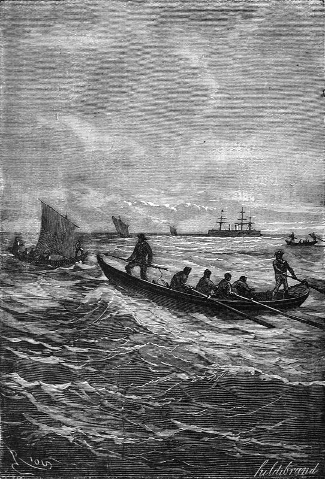
At this cry the whole crew rushed toward the harpooner, commander, officers, petty officers, sailors, cabin boys, even the engineers, who left their engine, and the stokers, who abandoned their furnaces. The order to stop had been given, and the frigate was now moving only under her own momentum.

The darkness was deep by then, and however good the Canadian’s eyes were, I wondered how he had seen, and what he could have seen. My heart was pounding fit to burst.
But Ned Land had not been mistaken, and we all caught sight of the object he was pointing at.
Two cable lengths from the Abraham Lincoln, off her starboard quarter, the sea seemed to be lit up from below. It was not a simple phenomenon of phosphorescence; there could be no mistake about that. The monster, submerged a few fathoms below the surface of the water, was giving off that very intense but inexplicable glow mentioned in the reports of several captains. This magnificent radiance must have been produced by an agent of great illuminating power. The luminous part traced on the sea an immense, very elongated oval, at the center of which was concentrated a blazing core whose unbearable brilliance faded off by successive degrees.
“It’s only a cluster of phosphorescent particles,” cried one of the officers.
“No, sir,” I replied with conviction. “Never have pholads or salps produced so powerful a light. This glow is essentially electrical in nature… Besides, look, look! It’s moving! It’s going forward, backward! It’s rushing at us!”
A general cry rose from the frigate.
“Silence!” said Commander Farragut. “Helm hard to windward! Engine astern!”
The sailors rushed to the helm, the engineers to their engine. The steam was immediately reversed, and the Abraham Lincoln, falling off to port, described a half circle.
“Helm amidships! Engine ahead!” cried Commander Farragut.
These orders were carried out, and the frigate moved rapidly away from the luminous core.
I am wrong. She tried to move away, but the supernatural animal came closer at twice her speed.
We were breathless. Stupefaction, much more than fear, kept us silent and motionless. The animal was gaining on us playfully. It circled the frigate, which was then making fourteen knots, and wrapped her in its electric sheets as in a luminous dust. Then it moved off two or three miles, leaving a phosphorescent trail comparable to the swirls of steam an express locomotive throws behind it. All of a sudden, from the dark limits of the horizon, where it had gone to gather momentum, the monster rushed straight at the Abraham Lincoln with frightening speed, stopped short twenty feet from her wales, and went out—not by sinking beneath the waters, since its glow did not fade by degrees, but suddenly, as if the source of that brilliant emanation had abruptly dried up! Then it reappeared on the other side of the ship, either because it had gone around her or because it had slipped under her hull. At any moment a collision could have occurred that would have been fatal to us.
Meanwhile I was surprised by the frigate’s maneuvers. She was fleeing, not attacking. She was being pursued, she who should have been the pursuer, and I remarked on it to Commander Farragut. His face, usually so impassive, bore the mark of an indefinable astonishment.
“Monsieur Aronnax,” he answered, “I don’t know what formidable creature I’m dealing with, and I don’t want to risk my frigate recklessly in this darkness. Besides, how do you attack the unknown, how do you defend yourself against it? Let’s wait for daylight, and the roles will be reversed.”
“You no longer have any doubt, Commander, about the nature of the animal?”
“No, sir, it’s obviously a gigantic narwhal, but an electric narwhal as well.”
“Perhaps,” I added, “it can no more be approached than an electric eel or an electric ray!”
“Indeed,” answered the commander, “and if it has a thunderbolt’s power in it, it’s certainly the most terrible animal ever to come from the hand of the Creator. That is why, sir, I shall stay on my guard.”
The whole crew stayed on their feet all night. No one thought of sleeping. The Abraham Lincoln, unable to compete in speed, had slowed down and kept to low steam. For its part the narwhal, imitating the frigate, let itself be rocked by the waves and seemed determined not to abandon the field of battle.
Toward midnight, however, it disappeared, or, to use a more accurate expression, it “went out” like a big glowworm. Had it fled? That was to be feared, not hoped for. But at seven minutes to one in the morning, a deafening hiss was heard, like the one made by a column of water driven out with extreme violence.
Commander Farragut, Ned Land, and I were then on the poop deck, casting eager looks into the deep darkness.
“Ned Land,” asked the commander, “you’ve often heard whales roar?”
“Often, sir, but never whales like this one, whose sighting has earned me two thousand dollars.”
“Indeed, you are entitled to the prize. But tell me, isn’t that noise the one cetaceans make when they blow water out of their blowholes?”
“The same noise, sir, but this one is incomparably louder. So there’s no mistaking it. It’s a cetacean all right that’s lying there in our waters. With your permission, sir,” the harpooner added, “we’ll have a word or two with it at daybreak tomorrow.”
“If it’s in the mood to listen to you, Master Land,” I answered in an unconvinced tone.
“Let me get within four harpoon lengths of it,” the Canadian retorted, “and it’ll have to listen to me!”
“But to get close to it,” the commander went on, “I shall have to put a whaleboat at your disposal?”
“Of course, sir.”
“That means gambling with the lives of my men?”
“And with mine!” the harpooner answered simply.
At about two in the morning, the luminous core reappeared, no less intense, five miles to windward of the Abraham Lincoln. In spite of the distance, in spite of the noise of the wind and the sea, the animal’s formidable tail strokes could be heard distinctly, and even its panting breath. It seemed that at the moment the enormous narwhal came up to breathe at the surface of the ocean, the air rushed into its lungs as steam does into the vast cylinders of a two-thousand-horsepower engine.
“Hm!” I thought. “A whale with the strength of a cavalry regiment would be quite a whale!”
We stayed on the alert until daylight and prepared for battle. The fishing gear was laid out along the bulwarks. The first officer had the blunderbusses loaded that throw a harpoon a mile, and long duck guns with explosive bullets whose wound is fatal even to the most powerful animals. Ned Land had been content to sharpen his harpoon, a terrible weapon in his hand.
At six o’clock dawn began to break, and with the first glimmers of daybreak the narwhal’s electric glow disappeared. At seven it was fully light, but a very thick morning mist narrowed the horizon, and the best spyglasses could not pierce it. Hence disappointment and anger.
I hoisted myself up to the mizzen crosstrees. A few officers had already perched at the mastheads.
At eight o’clock the mist rolled heavily over the waves, and its thick coils rose little by little. The horizon grew wider and clearer at the same time.
Suddenly, just as the evening before, Ned Land’s voice was heard.
“The thing in question, astern to port!” cried the harpooner.
Every eye turned toward the point indicated.
There, a mile and a half from the frigate, a long blackish body rose a meter above the waves. Its tail, violently lashing, was producing a considerable eddy. Never did a caudal fin beat the sea with such power. An immense wake of dazzling whiteness marked the animal’s passage and traced a long curve.
The frigate approached the cetacean. I examined it with complete freedom of mind. The reports of the Shannon and the Helvetia had somewhat exaggerated its dimensions, and I estimated its length at only two hundred and fifty feet. As for its girth, I could judge it only with difficulty; but on the whole the animal seemed to me admirably proportioned in all three dimensions.
While I was observing this phenomenal creature, two jets of vapor and water shot from its blowholes and rose to a height of forty meters, which settled the question of its mode of breathing for me. I concluded definitively that it belonged to the branch of the vertebrates, class of mammals, subclass of the monodelphians, group of the pisciforms, order of the cetaceans, family… Here I could not yet decide. The order of cetaceans includes three families: the baleen whales, the sperm whales, and the dolphins, and it is in this last that the narwhals are placed. Each of these families is divided into several genera, each genus into species, each species into varieties. Variety, species, genus, and family were still lacking, but I had no doubt of completing my classification with the help of heaven and Commander Farragut.
The crew was waiting impatiently for their chief’s orders. He, after carefully observing the animal, sent for the engineer. The engineer came running.
“Sir,” said the commander, “do you have pressure?”
“Yes, sir,” the engineer answered.
“Good. Stoke your fires, and full steam ahead!”
Three hurrahs greeted this order. The hour of battle had struck. A few moments later, the frigate’s two funnels were belching torrents of black smoke, and the deck was quivering with the shaking of the boilers.
The Abraham Lincoln, driven forward by her powerful propeller, headed straight for the animal. The animal indifferently let her come within half a cable length; then, disdaining to dive, it moved off at a leisurely pace and was content to keep its distance.
This pursuit went on for about three-quarters of an hour without the frigate gaining two fathoms on the cetacean. It was obvious, then, that going at this rate we would never catch it.
Commander Farragut was furiously twisting the thick tuft of hair that sprouted under his chin.
“Ned Land!” he called.
The Canadian answered the summons.
“Well, Master Land,” the commander asked, “do you still advise me to lower my boats?”
“No, sir,” answered Ned Land, “because that beast won’t let itself be caught unless it wants to.”
“What should we do, then?”
“Crowd on steam if you can, sir. As for me, with your permission, of course, I’ll take up a position on the bobstays under the bowsprit, and if we come within a harpoon’s length, I’ll strike.”
“Go ahead, Ned,” answered Commander Farragut. “Engineer,” he called, “raise the pressure.”
Ned Land went to his post. The fires were stoked more vigorously; the propeller made forty-three turns a minute, and the steam spurted from the safety valves. When the log was thrown, it was found that the Abraham Lincoln was making eighteen and five-tenths miles an hour.
But the cursed animal was also making eighteen and five-tenths miles an hour.
For another hour the frigate kept up this pace without gaining a fathom! It was humiliating for one of the fastest ships in the American navy. A dull anger ran through the crew. The sailors hurled insults at the monster, which, moreover, did not deign to answer them. Commander Farragut was no longer content to twist his goatee; he was chewing it.
The engineer was called once more.
“Have you reached your maximum pressure?” the commander asked him.
“Yes, sir,” answered the engineer.
“And your safety valves are loaded?…”
“To six and a half atmospheres.”
“Load them to ten atmospheres.”
That was an American order if ever there was one. They could not have done better on the Mississippi to outdistance “a competitor”!
“Conseil,” I said to my good servant, who was near me, “do you realize that we are probably going to blow up?”
“As master pleases!” answered Conseil.
Well, I will confess it: I was not unwilling to run that risk.
The valves were loaded. Coal was shoveled into the furnaces. The fans sent torrents of air over the blazing fires. The Abraham Lincoln’s speed increased. Her masts trembled down to their steps, and the swirls of smoke could hardly find their way out through the too-narrow funnels.
The log was thrown a second time.
“Well, helmsman?” asked Commander Farragut.
“Nineteen and three-tenths miles, sir.”
“Stoke the fires.”
The engineer obeyed. The pressure gauge showed ten atmospheres. But the cetacean, no doubt, “got up steam” as well, for it easily made its nineteen and three-tenths miles.
What a chase! No, I cannot describe the excitement that made my whole being vibrate. Ned Land stood at his post, harpoon in hand. Several times the animal let itself be approached.
“We’re gaining on it! We’re gaining on it!” the Canadian cried.
Then, just as he was getting ready to strike, the cetacean slipped away with a speed I cannot estimate at less than thirty miles an hour. And even at our top speed, did it not allow itself to taunt the frigate by circling her! A cry of fury burst from every chest!
At noon we were no further along than at eight in the morning.
Commander Farragut then decided to use more direct means.
“Ah!” he said. “That animal goes faster than the Abraham Lincoln! Well, then, we shall see whether it outruns her conical shells. Boatswain, men to the bow gun.”
The forecastle cannon was immediately loaded and aimed. The shot went off, but the shell passed a few feet above the cetacean, which was half a mile away.
“Someone with a better aim!” cried the commander. “And five hundred dollars to whoever pierces that infernal beast!”
An old gray-bearded gunner—I can still see him—with a calm eye and a cool face, went up to his gun, set it in position, and took long aim. A loud detonation rang out, mingled with the hurrahs of the crew.
The shell reached its target; it struck the animal, but not squarely, and, glancing off its rounded surface, it was lost two miles out to sea.
“Well, I’ll be!” said the old gunner in a rage. “That rascal must be armored with six-inch plates!”
“Curse it!” cried Commander Farragut.
The hunt began again, and Commander Farragut, leaning toward me, said:
“I shall chase the animal until my frigate bursts!”
“Yes,” I answered, “and you will be right!”
One could hope that the animal would tire itself out, and that it would not be indifferent to fatigue like a steam engine. But nothing of the kind happened. The hours went by without its showing any sign of exhaustion.
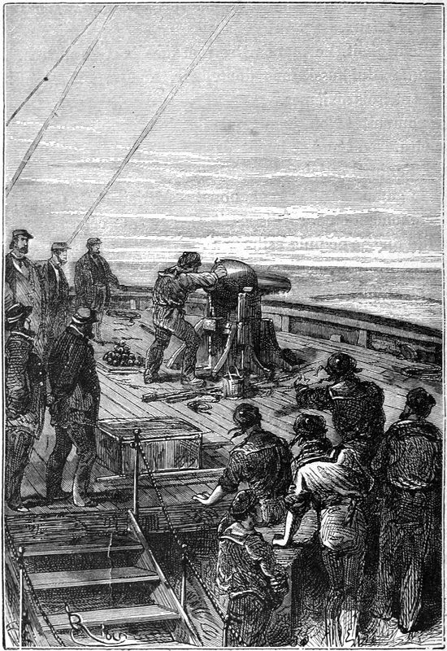
Still, it must be said to the credit of the Abraham Lincoln that she fought with tireless tenacity. I estimate at no less than five hundred kilometers the distance she covered during that ill-fated day of November 6! But night came and wrapped the heaving ocean in its shadows.
At that moment I believed our expedition was over and that we would never see the fantastic animal again. I was wrong.
At ten minutes to eleven in the evening, the electric light reappeared, three miles to windward of the frigate, as pure and as intense as the night before.

The narwhal seemed motionless. Perhaps, tired from its day, it was sleeping, letting itself drift with the swell? Here was a chance that Commander Farragut resolved to take advantage of.
He gave his orders. The Abraham Lincoln was kept at low steam and moved forward cautiously so as not to wake her adversary. It is not rare to come across whales sound asleep on the open ocean, which are then attacked with success, and Ned Land had harpooned more than one in its sleep. The Canadian went back to his post on the bobstays of the bowsprit.
The frigate approached noiselessly, stopped two cable lengths from the animal, and ran on under her momentum. No one aboard was breathing. A deep silence reigned on deck. We were not a hundred feet from the blazing core, whose glow grew larger and dazzled our eyes.
At that moment, leaning over the forecastle rail, I could see Ned Land below me, hanging on to the martingale with one hand and brandishing his terrible harpoon with the other. Barely twenty feet separated him from the motionless animal.
All at once his arm shot out violently, and the harpoon was thrown. I heard the ringing impact of the weapon, which seemed to have struck a hard body.
The electric light went out suddenly, and two enormous waterspouts crashed down onto the frigate’s deck, running like a torrent from bow to stern, knocking men over, and breaking the lashings of the spare spars.
A frightful shock followed, and, thrown over the rail without having time to catch hold of anything, I was hurled into the sea.
Although I had been taken by surprise by this unexpected fall, I nonetheless kept a very clear impression of my sensations.
At first I was dragged down to a depth of about twenty feet. I am a good swimmer, without claiming to equal Byron and Edgar Poe, who are masters, and this plunge did not make me lose my head. Two vigorous kicks brought me back to the surface of the sea.
My first concern was to look for the frigate. Had the crew noticed my disappearance? Had the Abraham Lincoln come about? Was Commander Farragut lowering a boat? Could I hope to be saved?
The darkness was deep. I glimpsed a black mass disappearing toward the east, whose running lights faded into the distance. It was the frigate. I felt that I was lost.
“Help! Help!” I cried, swimming toward the Abraham Lincoln with desperate strokes.
My clothes hampered me. The water glued them to my body; they paralyzed my movements. I was sinking! I was suffocating!…
“Help!”
That was the last cry I gave. My mouth filled with water. I struggled, dragged down into the abyss…
Suddenly my clothes were seized by a vigorous hand, I felt myself pulled violently back to the surface of the sea, and I heard, yes, I heard these words spoken in my ear:
“If master would be so extremely kind as to lean on my shoulder, master would swim much more comfortably.”
I seized the arm of my faithful Conseil with one hand.
“You!” I said. “You!”
“Myself,” answered Conseil, “and at master’s orders.”
“And that shock threw you into the sea at the same time as me?”
“Not at all. But being in master’s service, I followed master!”
The worthy lad found that perfectly natural!
“And the frigate?” I asked.
“The frigate!” answered Conseil, turning over onto his back. “I think master would do well not to count on her too much!”
“What are you saying?”
“I’m saying that at the moment I jumped into the sea, I heard the men at the helm shouting: ‘The propeller and the rudder are smashed…’”
“Smashed?”
“Yes! Smashed by the monster’s tooth. That is the only damage, I believe, that the Abraham Lincoln has suffered. But, an unfortunate circumstance for us, she can no longer steer.”
“Then we’re lost!”
“Perhaps,” Conseil answered calmly. “However, we still have a few hours before us, and in a few hours one can do a great many things!”
Conseil’s imperturbable coolness lifted my spirits. I swam more vigorously; but, hampered by my clothes, which clung to me like a cloak of lead, I was having extreme difficulty staying afloat. Conseil noticed it.
“If master will allow me to make an incision,” he said.
And slipping an open knife under my clothes, he slit them from top to bottom with one quick stroke. Then he nimbly freed me of them while I swam for both of us.
In my turn I did the same service for Conseil, and we went on “sailing” side by side.
The situation was no less terrible for all that. Perhaps our disappearance had not been noticed, and even if it had, the frigate could not come back to leeward for us, having lost her rudder. We could count only on her boats.
Conseil reasoned coolly on this hypothesis and made his plan accordingly. What an astonishing nature! This phlegmatic lad was as much at home here as in his own house!
It was decided, then, that since our only chance of rescue was to be picked up by the boats of the Abraham Lincoln, we must organize ourselves so as to wait for them as long as possible. I resolved to divide our strength so as not to exhaust it all at once, and this is what we agreed: while one of us, stretched out on his back, lay motionless, arms folded and legs straight, the other would swim and push him forward. This role of tugboat was not to last more than ten minutes, and by taking turns in this way we could stay afloat for some hours, perhaps until daybreak.
A slim chance! But hope is so deeply rooted in the heart of man! And then, there were two of us. Finally, I declare—though it may seem unlikely—that even if I had tried to destroy every illusion in myself, even if I had wanted to “despair,” I could not have done it!
The collision between the frigate and the cetacean had occurred at about eleven in the evening. I therefore reckoned on eight hours of swimming until sunrise. A strictly feasible operation, if we took turns. The sea, fairly calm, did not tire us much. At times I tried to pierce with my eyes that thick darkness, broken only by the phosphorescence our movements stirred up. I watched the luminous waves breaking over my hand, their shimmering sheet spotted with livid patches. One would have said we were plunged in a bath of mercury.
Toward one in the morning I was seized by extreme fatigue. My limbs stiffened in the grip of violent cramps. Conseil had to hold me up, and the care of our survival rested on him alone. Soon I heard the poor lad panting; his breathing grew short and rapid. I understood that he could not hold out long.
“Leave me! Leave me!” I said to him.
“Abandon master? Never!” he answered. “I fully intend to drown before he does!”
At that moment the moon appeared through the edges of a large cloud that the wind was driving east. The surface of the sea sparkled under its rays. That kindly light revived our strength. I raised my head. My eyes swept every point of the horizon. I caught sight of the frigate. She was five miles from us, no more than a dark, barely perceptible mass. But of boats, not one!
I tried to shout. What good was it at such a distance! My swollen lips let no sound pass. Conseil managed to articulate a few words, and I heard him repeat several times:
“Help! Help!”
Stopping our movements for a moment, we listened. And, though it may have been one of those buzzings with which oppressed blood fills the ear, it seemed to me that a cry answered Conseil’s cry.
“Did you hear that?” I murmured.
“Yes! Yes!”
And Conseil hurled another desperate call into space.
This time there could be no mistake! A human voice was answering ours! Was it the voice of some unfortunate abandoned in the middle of the Ocean, some other victim of the shock the ship had suffered? Or rather, was it not a boat from the frigate hailing us in the darkness?
Conseil made a supreme effort and, leaning on my shoulder while I held out in a last convulsion, he raised himself halfway out of the water and fell back exhausted.
“What did you see?”
“I saw…” he murmured, “I saw… but let’s not talk… let’s save all our strength!…”
What had he seen? Then, I do not know why, the thought of the monster came to my mind for the first time!… But that voice?… The days are gone when Jonahs took refuge in the bellies of whales!
Meanwhile Conseil was still towing me. Now and then he raised his head, looked ahead, and gave a cry of recognition, which was answered by a voice that came closer and closer. I could barely hear it. My strength was at an end; my fingers spread apart; my hand no longer gave me any support; my mouth, convulsively open, filled with salt water; the cold was taking hold of me. I raised my head one last time, then I went under…
At that instant a hard body struck me. I clung to it. Then I felt myself being pulled out, brought back to the surface of the water, my chest emptying, and I fainted…
I certainly came to quickly, thanks to vigorous rubbing that went all over my body. I half opened my eyes…
“Conseil!” I murmured.
“Did master ring for me?” answered Conseil.
At that moment, in the last light of the moon as it sank toward the horizon, I caught sight of a face that was not Conseil’s, and that I recognized at once.
“Ned!” I cried.
“In person, sir, and still chasing his prize!” answered the Canadian.
“You were thrown into the sea by the frigate’s collision?”
“Yes, Professor, but, luckier than you, I was able to get a footing almost at once on a floating islet.”
“An islet?”
“Or, to put it better, on our gigantic narwhal.”
“Explain yourself, Ned.”
“Only, I soon understood why my harpoon couldn’t cut into it and got blunted on its skin.”
“Why, Ned, why?”
“Because that beast, Professor, is made of sheet steel!”
Here I must collect my wits, revive my memories, and check my own assertions.
The Canadian’s last words had produced a sudden turnabout in my brain. I quickly hoisted myself to the top of the half-submerged creature or object that was serving as our refuge. I tested it with my foot. It was obviously a hard, impenetrable body, and not the soft substance that forms the bulk of the great marine mammals.
But this hard body could be a bony carapace, like those of antediluvian animals, and I would get off by classifying the monster among the amphibious reptiles, such as turtles or alligators.
Well, no! The blackish back that was holding me up was smooth and polished, not overlapping in scales. When struck, it gave off a metallic ring, and, incredible as it was, it seemed, I say, to be made of bolted plates.
Doubt was not possible! The animal, the monster, the natural phenomenon that had puzzled the entire learned world and upset and misled the imagination of seamen in both hemispheres was, it had to be admitted, an even more astonishing phenomenon: a phenomenon made by the hand of man.
The discovery of the existence of the most fabulous, the most mythological creature would not have surprised my reason to the same degree. That the prodigious should come from the Creator is simple enough. But to find suddenly, before one’s eyes, the impossible mysteriously and humanly accomplished was enough to confound the mind!
There was no room for hesitation, however. We were lying on the back of a sort of submarine boat which, as far as I could judge, had the shape of an immense steel fish. Ned Land’s mind was made up on this point. Conseil and I could only agree with him.
“But then,” I said, “this apparatus contains a means of locomotion and a crew to operate it?”
“Obviously,” answered the harpooner, “and yet in the three hours I’ve been living on this floating island, it hasn’t shown a sign of life.”
“This boat hasn’t moved?”
“No, Monsieur Aronnax. It lets itself be rocked by the waves, but it doesn’t budge.”
“We know beyond a doubt, however, that it is endowed with great speed. Now, since an engine is needed to produce that speed and an engineer to run that engine, I conclude… that we are saved.”
“Hm!” said Ned Land in a reserved tone.
At that moment, as if to prove my argument right, a churning arose at the stern of this strange apparatus, whose propeller was obviously a screw, and it began to move. We had just time to cling to its upper part, which rose about eighty centimeters out of the water. Very fortunately, its speed was not excessive.
“As long as it travels on the level,” murmured Ned Land, “I’ve nothing to say. But if it takes it into its head to dive, I wouldn’t give two dollars for my skin!”
Even less, the Canadian could have said. It was becoming urgent, then, to communicate with whatever beings were shut up in the sides of this machine. I looked on its surface for an opening, a hatch, a “manhole,” to use the technical term; but the lines of bolts, firmly hammered down over the joints of the plates, were clean and uniform.
Besides, the moon then disappeared and left us in deep darkness. We had to wait for daylight to think of ways of getting inside this submarine boat.
So our rescue depended solely on the whim of the mysterious helmsmen who steered this apparatus, and if they dived, we were lost! Except for that case, I did not doubt that it would be possible to get in touch with them. And indeed, unless they made their own air, they must necessarily come back to the surface of the Ocean from time to time to renew their supply of breathable molecules. Hence the necessity of an opening that put the inside of the boat in communication with the atmosphere.
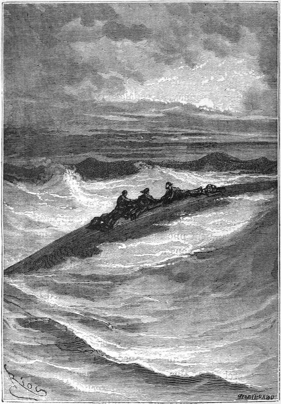
As for the hope of being rescued by Commander Farragut, it had to be given up entirely. We were being carried toward the west, and I estimated that our speed, relatively moderate, reached twelve miles an hour. The propeller beat the waves with mathematical regularity, sometimes breaking the surface and sending the phosphorescent water spurting to a great height.
Toward four in the morning the apparatus’s speed increased. We were holding out with difficulty against this dizzying rush when the waves struck us full on. Fortunately Ned’s hand came upon a large mooring ring fixed to the upper part of the iron back, and we managed to hang on to it firmly.
At last that long night came to an end. My incomplete memory does not allow me to retrace all its impressions. Only one detail comes back to me. During certain lulls of sea and wind, I thought several times that I heard vague sounds, a sort of fleeting harmony produced by distant chords. What, then, was the mystery of this underwater navigation, whose explanation the whole world was seeking in vain? What beings lived in this strange boat? What mechanical agent allowed it to move with such prodigious speed?

Day appeared. The morning mists surrounded us, but they soon tore apart. I was about to begin a careful examination of the hull, whose upper part formed a sort of horizontal platform, when I felt it gradually sinking.
“Hey! A thousand devils!” cried Ned Land, stamping his foot on the ringing plate. “Open up, you inhospitable sailors!”
But it was hard to make oneself heard amid the deafening beats of the propeller. Fortunately the sinking movement stopped.
Suddenly a noise of ironwork being violently pushed came from inside the boat. A plate lifted, a man appeared, gave a strange cry, and immediately disappeared.
A few moments later, eight sturdy fellows, their faces veiled, appeared silently and dragged us down into their formidable machine.
This abduction, so roughly carried out, had been accomplished with lightning speed. My companions and I had not had time to collect ourselves. I do not know what they felt on finding themselves brought into this floating prison; but for my own part, a quick shiver chilled my skin. Whom were we dealing with? No doubt with pirates of some new kind, who worked the sea in their own way.
No sooner had the narrow hatch closed over me than a deep darkness enveloped me. My eyes, still full of the outside light, could make out nothing. I felt my bare feet grip the rungs of an iron ladder. Ned Land and Conseil, firmly held, followed me. At the foot of the ladder a door opened and immediately closed behind us with a ringing clang.
We were alone. Where? I could not say, could hardly imagine. Everything was black, but so absolutely black that after several minutes my eyes had still not caught one of those vague glimmers that float in the deepest nights.
Meanwhile Ned Land, furious at these ways of proceeding, was giving free rein to his indignation.
“A thousand devils!” he cried. “Here are people who could teach the Caledonians a thing or two about hospitality! All they need now is to be cannibals! It wouldn’t surprise me, but I declare that nobody is going to eat me without my protesting!”
“Calm down, friend Ned, calm down,” Conseil answered quietly. “Don’t get worked up before it’s time. We’re not on the spit yet!”
“Not on the spit, no,” the Canadian retorted, “but in the oven, for sure! It’s dark enough in here. Fortunately my bowie knife4 hasn’t left me, and I can still see well enough to use it. The first of these bandits who lays a hand on me…”
“Don’t get angry, Ned,” I then said to the harpooner, “and don’t compromise us with useless violence. Who knows whether they’re listening to us! Let’s try instead to find out where we are!”
I groped my way forward. After five steps I came up against an iron wall made of bolted plates. Then, turning around, I bumped into a wooden table, beside which several stools were set out. The floor of this prison was hidden under a thick mat of phormium that muffled the sound of footsteps. The bare walls showed no trace of a door or a window. Conseil, going around the other way, rejoined me, and we came back to the middle of this cabin, which must have been twenty feet long by ten wide. As for its height, Ned Land, tall as he was, could not measure it.
Half an hour had already passed with no change in the situation when, from extreme darkness, our eyes suddenly passed to the most violent light. Our prison was suddenly lit up; that is, it filled with a luminous matter so bright that at first I could not bear its glare. From its whiteness and intensity, I recognized the electric lighting that had produced around the submarine boat what looked like a magnificent phenomenon of phosphorescence. Having involuntarily shut my eyes, I opened them again, and I saw that the luminous agent was coming from a frosted half-globe curving down from the upper part of the cabin.
“At last! We can see!” cried Ned Land, who stood on the defensive, knife in hand.
“Yes,” I answered, venturing the antithesis, “but the situation is still just as dark.”
“Let master be patient,” said the impassive Conseil.
The sudden lighting of the cabin had allowed me to examine its smallest details. It contained only the table and the five stools. The invisible door must have been hermetically sealed. No noise reached our ears. Everything seemed dead inside this boat. Was it moving, was it keeping to the surface of the Ocean, was it sinking into its depths? I could not guess.
Still, the luminous globe had not been lit for no reason. I hoped, therefore, that the men of the crew would soon show themselves. When you want to forget people, you don’t light up their dungeons.
I was not mistaken. A noise of bolts was heard, the door opened, and two men appeared.
One was short, powerfully muscled, broad-shouldered, and sturdy of limb, with a strong head, thick black hair, a heavy mustache, a lively, penetrating gaze, and his whole person stamped with that southern vivacity that marks the people of Provence in France. Diderot very justly maintained that man’s gestures are metaphorical, and this little man was certainly the living proof of it. One felt that in his everyday speech he must lavish personifications, metonymies, and hypallages. Which, however, I was never in a position to verify, for in my presence he always used a peculiar and utterly incomprehensible idiom.
The second stranger deserves a more detailed description. A disciple of Gratiolet or Engel would have read his face like an open book. I recognized his dominant qualities without hesitation—self-confidence, for his head rose nobly above the arc formed by the line of his shoulders, and his black eyes looked out with cool assurance; calm, for his skin, pale rather than ruddy, bespoke the tranquility of his blood; energy, shown by the quick contraction of his brow muscles; and finally courage, for his deep breathing revealed a great vital expansiveness.
I will add that this man was proud, that his firm, calm gaze seemed to reflect lofty thoughts, and that from the whole of it, from the consistency of expression in the movements of his body and face, as physiognomists observe, there resulted an unquestionable frankness.
I felt “involuntarily” reassured in his presence, and I augured well of our interview.
Whether this person was thirty-five or fifty years old, I could not have said precisely. He was tall, with a broad forehead, a straight nose, a clearly drawn mouth, magnificent teeth, and fine, long hands, eminently “psychic,” to use a word from chirognomy, that is, worthy of serving a lofty and passionate soul. This man was certainly the most admirable type I had ever met. A peculiar detail: his eyes, set a little far apart, could take in nearly a quarter of the horizon at once. This faculty—I verified it later—was combined with a power of sight still greater than Ned Land’s. When this stranger fixed his eyes on an object, the line of his eyebrows contracted and his large eyelids drew together so as to circumscribe the pupils of his eyes and thus narrow the extent of the field of vision, and he looked! What a look! How it magnified objects made small by distance! How it pierced you to the soul! How it penetrated those liquid sheets so opaque to our eyes, and how it read the deepest depths of the seas!…
The two strangers, wearing caps made of sea-otter fur and sea boots of sealskin, were dressed in clothes of a peculiar fabric that left the waist free and allowed great freedom of movement.
The taller of the two—obviously the captain of the ship—examined us with extreme attention without saying a word. Then, turning to his companion, he talked with him in a language I could not recognize. It was a sonorous, harmonious, flexible idiom, whose vowels seemed subject to a very varied accentuation.
The other answered with a nod and added two or three perfectly incomprehensible words. Then, with his eyes, he seemed to question me directly.
I answered in good French that I did not understand his language; but he did not seem to understand me, and the situation became rather awkward.
“Let master tell our story anyway,” Conseil said to me. “These gentlemen may catch a few words of it!”
I began the account of our adventures again, articulating all my syllables clearly and without omitting a single detail. I gave our names and positions; then I formally introduced Professor Aronnax, his servant Conseil, and Master Ned Land, the harpooner.
The man with the gentle, calm eyes listened to me quietly, even politely, and with remarkable attention. But nothing in his face indicated that he had understood my story. When I had finished, he did not say a single word.
There remained the resource of speaking English. Perhaps we could make ourselves understood in that almost universal language. I knew it, as I knew German, well enough to read it fluently, but not to speak it correctly. And here, above all, we had to make ourselves understood.
“Come, your turn,” I said to the harpooner. “Over to you, Master Land. Pull out of your bag the best English ever spoken by an Anglo-Saxon, and try to be luckier than I was.”
Ned did not need to be asked twice and began my story again, which I understood more or less. The substance was the same, but the form differed. The Canadian, carried away by his character, put a great deal of animation into it. He complained violently of being imprisoned in contempt of the law of nations, asked by virtue of what law he was being held like this, invoked habeas corpus, threatened to prosecute those who were unlawfully confining him, thrashed about, gesticulated, shouted, and finally made it understood by an expressive gesture that we were dying of hunger.
Which was perfectly true, though we had nearly forgotten it.
To his great amazement, the harpooner did not seem to have been any more intelligible than I. Our visitors did not bat an eye. It was obvious that they understood neither the language of Arago nor that of Faraday.
Greatly embarrassed, having exhausted our philological resources in vain, I no longer knew what course to take when Conseil said to me:
“If master will authorize me, I shall tell the story in German.”
“What! You know German?” I cried.
“Like a Fleming, if master doesn’t mind.”
“On the contrary, I’m delighted. Go ahead, my lad.”
And Conseil, in his quiet voice, told the various episodes of our story for the third time. But despite the narrator’s elegant turns of phrase and fine accent, the German language had no success.
At last, driven to the limit, I gathered together all that remained of my early studies and undertook to narrate our adventures in Latin. Cicero would have stopped up his ears and sent me back to the kitchen, but I managed to get through it nonetheless. The same negative result.
With this last attempt definitively aborted, the two strangers exchanged a few words in their incomprehensible language and withdrew, without even giving us one of those reassuring gestures that are current in every country in the world. The door closed again.
“It’s outrageous!” cried Ned Land, exploding for the twentieth time. “What! We speak French, English, German, and Latin to those rascals, and not one of them has the civility to answer!”
“Calm down, Ned,” I said to the hotheaded harpooner. “Anger won’t get us anywhere.”
“But do you know, Professor,” our irascible companion went on, “that a man could die of hunger perfectly well in this iron cage?”
“Bah!” said Conseil. “With a little philosophy, we can still hold out a long time!”
“My friends,” I said, “we mustn’t despair. We’ve been in worse fixes. Do me the favor of waiting before you form an opinion of the commander and crew of this boat.”
“My opinion is made,” Ned Land retorted. “They’re rascals…”
“Fine! And from what country?”
“From the country of rascals!”
“My good Ned, that country is not yet sufficiently marked on the map of the world, and I admit that the nationality of these two strangers is hard to determine! Neither English, nor French, nor German, that is all we can say. However, I would be inclined to think that this commander and his first officer were born in low latitudes. There is something southern about them. But whether they are Spaniards, Turks, Arabs, or Indians, their physical type does not allow me to decide. As for their language, it is absolutely incomprehensible.”
“That’s the trouble with not knowing every language,” answered Conseil, “or the disadvantage of not having one single language!”
“Which wouldn’t do any good!” answered Ned Land. “Don’t you see that these people have a language of their own, a language invented to drive to despair honest folk who are asking for dinner! But in every country on earth, opening your mouth, moving your jaws, snapping your teeth and lips, isn’t that understood well enough? Doesn’t it mean, in Quebec as in the Tuamotus, in Paris as at the antipodes: I’m hungry! Give me something to eat!…”
“Oh,” said Conseil, “there are some very unintelligent natures!…”
As he said these words, the door opened. A steward5 came in. He brought us clothes, sea jackets and breeches, made of a fabric whose nature I did not recognize. I hastened to put them on, and my companions followed my example.
Meanwhile the steward—mute, perhaps deaf—had set the table and laid three places.
“Now here’s something serious,” said Conseil, “and it looks promising.”
“Bah!” answered the rancorous harpooner. “What the devil do you expect to eat here? Turtle liver, fillet of shark, dogfish steak!”
“We shall see!” said Conseil.
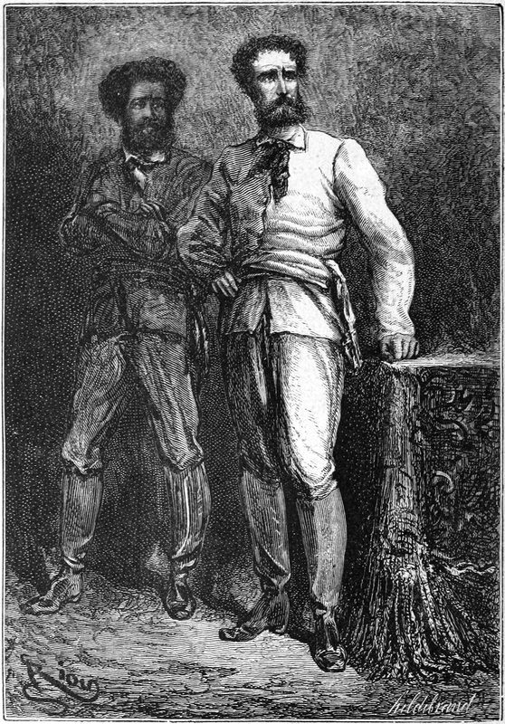
The dishes, covered with their silver lids, were set symmetrically on the tablecloth, and we took our places at the table. Decidedly, we were dealing with civilized people, and but for the electric light flooding over us, I would have thought myself in the dining room of the Adelphi Hotel in Liverpool or the Grand Hôtel in Paris. I must say, however, that bread and wine were entirely lacking. The water was fresh and clear, but it was water—which was not to Ned Land’s taste. Among the dishes served to us, I recognized various fishes delicately prepared; but about certain dishes, excellent as they were, I could not decide, and I could not even have said to which kingdom, vegetable or animal, their contents belonged. As for the table service, it was elegant and in perfect taste. Each utensil, spoon, fork, knife, and plate bore a letter surrounded by a motto around its edge, of which here is an exact facsimile:
MOBILIS IN MOBILI
N
Moving within the moving element! The motto applied precisely to this underwater apparatus, provided the preposition in is translated as within and not as upon. The letter N was doubtless the initial of the name of the enigmatic person who held command at the bottom of the seas!
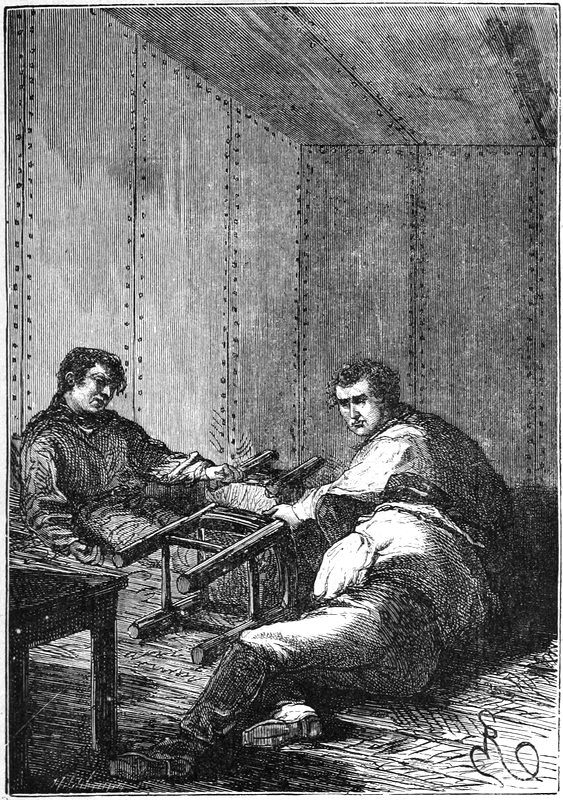
Ned and Conseil were not reflecting so much. They were devouring, and I soon followed their example. I was reassured about our fate, besides, and it seemed obvious to me that our hosts did not intend to let us die of starvation.
But everything comes to an end here below, everything passes, even the hunger of people who have not eaten for fifteen hours. Our appetite satisfied, the need for sleep made itself imperiously felt. A very natural reaction, after the endless night during which we had struggled against death.
“My word, I could do with some sleep,” said Conseil.
“And I’m asleep already!” answered Ned Land.
My two companions stretched out on the cabin carpet and were soon plunged into a deep sleep.
For my own part, I gave in less easily to this violent need for sleep. Too many thoughts were piling up in my mind, too many unsolvable questions were crowding into it, too many images were keeping my eyelids half open! Where were we? What strange power was carrying us away? I felt—or rather I thought I felt—the apparatus sinking toward the most remote layers of the sea. Violent nightmares beset me. In those mysterious retreats I glimpsed a whole world of unknown animals, of which this submarine boat seemed to be a kindred creature, living, moving, formidable like them!… Then my brain grew calm, my imagination melted into a vague drowsiness, and I soon fell into a dull sleep.
How long this sleep lasted, I do not know; but it must have been long, for it rested us completely from our fatigues. I was the first to wake. My companions had not yet stirred and still lay stretched out in their corner like inert masses.
Hardly had I risen from that rather hard bed when I felt my brain clear and my mind sharp. I then began a careful examination of our cell again.
Nothing had changed in its interior arrangements. The prison had remained a prison, and the prisoners, prisoners. However, the steward, taking advantage of our sleep, had cleared the table. Nothing indicated, therefore, any coming change in our situation, and I seriously wondered whether we were destined to live indefinitely in this cage.
This prospect seemed all the more painful to me because, although my brain was free of the previous day’s obsessions, I felt a strange tightness in my chest. I was breathing with difficulty. The heavy air was no longer enough for the work of my lungs. Although the cell was large, it was evident that we had used up most of the oxygen it contained. Indeed, each man consumes in one hour the oxygen contained in a hundred liters of air, and that air, then charged with an almost equal quantity of carbonic acid, becomes unbreathable.
It was urgent, then, to renew the atmosphere of our prison, and no doubt also the atmosphere of the submarine boat.
Here a question arose in my mind. How did the commander of this floating dwelling go about it? Did he obtain air by chemical means, releasing by heat the oxygen contained in potassium chlorate and absorbing the carbonic acid with caustic potash? In that case, he must have kept up some contact with the continents in order to obtain the materials needed for the operation. Did he merely store air under high pressure in tanks, then release it as his crew needed it? Perhaps. Or, a more convenient, more economical, and therefore more probable method, was he content to come back up to the surface of the waters to breathe, like a cetacean, and renew his supply of atmosphere for twenty-four hours? Whatever the case, and whatever the method, it seemed prudent to me to use it without delay.
Indeed, I was already reduced to quickening my breathing to extract from this cell the little oxygen it held when suddenly I was refreshed by a current of pure air, all perfumed with salty smells. It was indeed the sea breeze, invigorating and charged with iodine! I opened my mouth wide, and my lungs filled with fresh molecules. At the same time I felt a swaying, a rolling of modest amplitude but perfectly perceptible. The boat, the sheet-iron monster, had evidently just risen to the surface of the Ocean to breathe there in the manner of whales. The ship’s mode of ventilation was thus perfectly established.
When I had taken in this pure air to the full, I looked for the duct, the “air-bearer,” if you will, that let this beneficial current reach us, and I soon found it. Above the door opened a ventilation hole that let in a fresh column of air, thus renewing the depleted atmosphere of the cell.
I had got this far in my observations when Ned and Conseil woke almost at the same time under the influence of this reviving ventilation. They rubbed their eyes, stretched their arms, and were on their feet in an instant.
“Did master sleep well?” Conseil asked me with his everyday politeness.
“Very well, my good lad,” I answered. “And you, Master Ned Land?”
“Soundly, Professor. But, unless I’m mistaken, it seems to me I’m breathing something like a sea breeze?”
A seaman could not be mistaken about that, and I told the Canadian what had happened while he slept.
“Good!” he said. “That explains perfectly those bellowings we used to hear when the so-called narwhal was in sight of the Abraham Lincoln.”
“Perfectly, Master Land; that was its breathing!”
“Only, Monsieur Aronnax, I have no idea what time it is, unless it’s dinnertime?”
“Dinnertime, my worthy harpooner? Say breakfast time, at least, for we are certainly at the day after yesterday.”
“Which proves,” answered Conseil, “that we’ve had twenty-four hours of sleep.”
“That’s my opinion,” I answered.
“I won’t contradict you,” Ned Land replied. “But dinner or breakfast, the steward will be welcome, whichever one he brings.”
“Both,” said Conseil.
“Right,” answered the Canadian. “We’re entitled to two meals, and for my part, I’ll do justice to both of them.”
“Well, Ned, let’s wait,” I answered. “It’s evident that these strangers don’t intend to let us die of hunger, for in that case last night’s dinner would make no sense.”
“Unless they’re fattening us up!” Ned retorted.
“I protest,” I answered. “We haven’t fallen into the hands of cannibals!”
“Once doesn’t make a habit,” the Canadian answered seriously. “Who knows whether these people haven’t gone without fresh meat for a long time, and in that case three healthy, well-built individuals like the professor, his servant, and me…”
“Drive away those ideas, Master Land,” I answered the harpooner, “and above all don’t start from there to lose your temper with our hosts, which could only make the situation worse.”
“In any case,” said the harpooner, “I’m as hungry as the devil, and dinner or breakfast, the meal is hardly arriving!”
“Master Land,” I replied, “we must conform to the rules of the ship, and I suppose our stomachs are running ahead of the head cook’s bell.”
“Well! We’ll set them right,” Conseil answered calmly.
“That’s just like you, friend Conseil,” retorted the impatient Canadian. “You don’t wear out your bile or your nerves much! Always calm! You’d be capable of saying grace after the meal before the grace before it, and of starving to death rather than complain!”
“What good would it do?” asked Conseil.
“Why, it would be complaining! That’s something already. And if these pirates—I say pirates out of respect, and so as not to annoy the professor, who forbids us to call them cannibals—if these pirates imagine they’re going to keep me in this cage where I’m suffocating without learning what oaths I season my outbursts with, they’re mistaken! Come now, Monsieur Aronnax, speak frankly. Do you think they’ll keep us long in this iron box?”
“To tell the truth, I know no more about it than you do, friend Land.”
“But what do you suppose, after all?”
“I suppose that chance has made us masters of an important secret. Now, if the crew of this submarine boat has an interest in keeping it, and if that interest weighs more than the lives of three men, I believe our existence is in great danger. In the opposite case, at the first opportunity, the monster that swallowed us will return us to the world inhabited by our fellow men.”
“Unless it enrolls us among its crew,” said Conseil, “and keeps us that way…”
“Until the moment,” Ned Land replied, “when some frigate, faster or more skillful than the Abraham Lincoln, captures this nest of buccaneers and sends its crew and us to breathe our last at the end of its main yard.”
“Well reasoned, Master Land,” I replied. “But no proposal of that kind has been made to us yet, as far as I know. So it’s useless to discuss what course we should take if the case arises. I repeat: let’s wait, let’s take counsel from circumstances, and let’s do nothing, since there is nothing to be done.”
“On the contrary, Professor!” answered the harpooner, who would not give up. “We must do something.”
“Why, what, Master Land?”
“Escape.”
“Escaping from a prison on ‘land’ is often difficult, but from an underwater prison it seems to me absolutely impracticable.”
“Come, friend Ned,” asked Conseil, “what do you say to master’s objection? I can’t believe an American is ever at the end of his resources!”
The harpooner, visibly embarrassed, said nothing. An escape, in the conditions into which chance had thrown us, was absolutely impossible. But a Canadian is half French, and Master Ned Land showed it clearly by his answer.
“So, Monsieur Aronnax,” he went on after a few moments’ thought, “you can’t guess what people ought to do who can’t escape from their prison?”
“No, my friend.”
“It’s very simple: they have to arrange things so as to stay in it.”
“Of course!” said Conseil. “It’s still better to be inside than on top or underneath!”
“But after throwing out the jailers, turnkeys, and guards,” added Ned Land.
“What, Ned? You’re seriously thinking of seizing this vessel?”
“Very seriously,” answered the Canadian.
“It’s impossible.”
“Why so, sir? Some lucky chance may turn up, and I don’t see what could stop us from taking advantage of it. If there are only a score of men aboard this machine, they won’t make two Frenchmen and a Canadian back down, I suppose!”
It was better to accept the harpooner’s proposal than to argue about it. So I contented myself with answering:
“Let circumstances come, Master Land, and we shall see. But until then, I beg you, contain your impatience. We can act only by cunning, and it is not by losing your temper that you will bring about lucky chances. So promise me that you will accept the situation without too much anger.”
“I promise you, Professor,” answered Ned Land in a not very reassuring tone. “Not one violent word will come out of my mouth, not one brutal gesture will betray me, even if the table service isn’t carried out with all the regularity one could wish.”
“I have your word, Ned,” I answered the Canadian.
Then the conversation was suspended, and each of us began to reflect on his own. I will admit that, for my part, and despite the harpooner’s assurance, I kept no illusions. I did not believe in the lucky chances Ned Land had spoken of. To be handled so surely, the submarine boat required a large crew, and consequently, in the event of a fight, we would be up against too strong an opponent. Besides, we first had to be free, and we were not. I could not even see any way of escaping from this sheet-iron cell so hermetically closed. And if the strange commander of this boat had a secret to keep—which seemed at least probable—he would not let us act freely aboard. Now, would he get rid of us by violence, or would he one day put us ashore on some corner of land? That was the unknown. All these hypotheses seemed extremely plausible to me, and one had to be a harpooner to hope to win back one’s freedom.
I realized, moreover, that Ned Land’s ideas were growing more bitter with the reflections that took hold of his brain. Little by little I heard oaths rumbling deep in his throat, and I saw his gestures becoming threatening again. He would get up, pace like a wild beast in a cage, strike the walls with foot and fist. Besides, time was passing, hunger was making itself cruelly felt, and this time the steward did not appear. And that was forgetting our position as castaways for too long, if they really had good intentions toward us.
Ned Land, tormented by the cramps of his robust stomach, was getting more and more worked up, and despite his word, I truly feared an explosion when he found himself in the presence of one of the men aboard.
For two more hours Ned Land’s anger mounted. The Canadian called out, he shouted, but in vain. The sheet-iron walls were deaf. I did not even hear any noise inside this boat, which seemed dead. It was not moving, for I would evidently have felt the hull quiver under the push of the propeller. Sunk no doubt in the abyss of the waters, it no longer belonged to the earth. All this gloomy silence was frightening.
As for our abandonment, our isolation at the bottom of this cell, I did not dare estimate how long it might last. The hopes I had formed after our interview with the commander were fading little by little. The gentleness of that man’s gaze, the generous expression of his face, the nobility of his bearing, all disappeared from my memory. I saw that enigmatic person again as he must be, necessarily pitiless, cruel. I felt him to be outside humanity, inaccessible to any feeling of pity, the implacable enemy of his fellow men, to whom he must have sworn an undying hatred!

But was this man going to let us perish of starvation, shut up in this narrow prison, given over to those horrible temptations to which savage hunger drives men? This dreadful thought took on a terrible intensity in my mind, and, with imagination helping, I felt myself invaded by a senseless terror. Conseil stayed calm; Ned Land was roaring.
At that moment a noise was heard outside. Footsteps rang on the metal floor. The locks were turned, the door opened, the steward appeared.
Before I could make a move to stop him, the Canadian had hurled himself at the poor man; he had thrown him down; he had him by the throat. The steward was choking under his powerful hand.

Conseil was already trying to pull the half-suffocated victim out of the harpooner’s hands, and I was about to join my efforts to his, when suddenly I was nailed to the spot by these words spoken in French:
“Calm yourself, Master Land, and you, Professor, kindly listen to me!”
It was the commander of the ship who had spoken.
At these words Ned Land suddenly got up. The steward, nearly strangled, staggered out at a sign from his master; but such was the commander’s authority aboard that not one gesture betrayed the resentment this man must have felt toward the Canadian. Conseil, interested in spite of himself, and I, stupefied, waited in silence for the outcome of this scene.
The commander, leaning against the corner of the table with his arms folded, observed us with deep attention. Was he hesitating to speak? Did he regret the words he had just spoken in French? One might think so.
After a few moments of a silence that none of us thought of breaking:
“Gentlemen,” he said in a calm, penetrating voice, “I speak French, English, German, and Latin equally well. I could therefore have answered you at our first interview, but I wanted to get to know you first, and then to reflect. Your fourfold account, absolutely the same in substance, assured me of your identity. I now know that chance has brought before me Monsieur Pierre Aronnax, professor of natural history at the Museum of Paris, entrusted with a scientific mission abroad; Conseil, his servant; and Ned Land, of Canadian origin, harpooner aboard the frigate Abraham Lincoln of the navy of the United States of America.”
I bowed in assent. The commander had not asked me a question. So there was no answer to give. This man expressed himself with perfect ease, without any accent. His sentences were clear, his words exact, his fluency remarkable. And yet I did not “feel” in him a fellow countryman.
He went on with the conversation in these terms:
“You no doubt found, sir, that I was a long time in paying you this second visit. That is because, once your identity was established, I wanted to weigh carefully what course to take with you. I hesitated a great deal. The most unfortunate circumstances have brought you into the presence of a man who has broken with humanity. You have come to disturb my existence…”
“Unintentionally,” I said.
“Unintentionally?” answered the stranger, raising his voice a little. “Is it unintentionally that the Abraham Lincoln hunts me across every sea? Is it unintentionally that you took passage aboard that frigate? Is it unintentionally that your cannonballs bounced off the hull of my ship? Is it unintentionally that Master Ned Land struck me with his harpoon?”
I detected a restrained irritation in these words. But to these recriminations I had a perfectly natural answer to give, and I gave it.
“Sir,” I said, “you are no doubt unaware of the discussions that have taken place about you in America and Europe. You do not know that various accidents, caused by collisions with your submarine apparatus, have stirred public opinion on both continents. I will spare you the countless hypotheses by which people tried to explain the inexplicable phenomenon of which you alone held the secret. But you should know that in pursuing you as far as the high seas of the Pacific, the Abraham Lincoln believed she was hunting some powerful sea monster from which the Ocean had to be delivered at any cost.”
A half smile relaxed the commander’s lips; then, in a calmer tone:
“Monsieur Aronnax,” he answered, “would you dare to assert that your frigate would not have pursued and shelled a submarine boat just as readily as a monster?”
This question embarrassed me, for Commander Farragut certainly would not have hesitated. He would have thought it his duty to destroy an apparatus of that kind just as much as a gigantic narwhal.
“So you understand, sir,” the stranger went on, “that I have the right to treat you as enemies.”
I made no answer, and with good reason. What good is it to argue such a proposition when force can destroy the best arguments?
“I hesitated a long time,” the commander went on. “Nothing obliged me to give you hospitality. If I had to part from you, I had no interest in seeing you again. I would put you back on the platform of this ship, which had served you as a refuge. I would sink beneath the seas, and I would forget that you had ever existed. Was that not my right?”
“It was perhaps the right of a savage,” I answered, “not that of a civilized man.”
“Professor,” the commander replied sharply, “I am not what you call a civilized man! I have broken with society as a whole for reasons that I alone have the right to judge. I do not obey its rules, therefore, and I urge you never to invoke them before me!”
This was said plainly. A flash of anger and disdain had lit up the stranger’s eyes, and in this man’s life I glimpsed a formidable past. Not only had he placed himself outside human laws, but he had made himself independent, free in the strictest sense of the word, beyond all reach! Who, then, would dare to pursue him to the bottom of the seas, since on their surface he foiled every effort made against him? What ship could withstand the shock of his underwater monitor? What armor, however thick, could bear the blows of his ram? No one among men could call him to account for his works. God, if he believed in Him, and his conscience, if he had one, were the only judges to whom he could be answerable.
These reflections passed rapidly through my mind while the strange person remained silent, absorbed and as if withdrawn into himself. I considered him with a dread mingled with interest, no doubt as Oedipus considered the Sphinx.
After a rather long silence, the commander spoke again.
“So I hesitated,” he said, “but I thought that my interest could be reconciled with that natural pity to which every human being has a right. You will remain aboard my ship, since fate has cast you here. You will be free here, and in exchange for this freedom, which is quite relative after all, I shall impose only one condition on you. Your word that you will submit to it will be enough for me.”
“Speak, sir,” I answered. “I take it this condition is one that an honest man can accept?”
“Yes, sir, and here it is. It is possible that certain unforeseen events may oblige me to confine you to your cabins for a few hours or a few days, as the case may be. Wishing never to use violence, I expect from you in that case, even more than in all others, passive obedience. By acting in this way, I cover your responsibility; I release you entirely, for it is up to me to make it impossible for you to see what must not be seen. Do you accept this condition?”
So things went on aboard that were at the very least singular, and that were not to be seen by people who had not placed themselves outside the laws of society! Among the surprises the future held in store for me, this one would not be the least.
“We accept,” I answered. “Only, I will ask your permission, sir, to put one question to you, just one.”
“Speak, sir.”
“You said that we would be free aboard your ship?”
“Entirely.”
“Then I will ask you what you mean by this freedom.”
“Why, the freedom to come and go, to see, even to observe everything that happens here—except in a few rare circumstances—in short, the freedom that we ourselves enjoy, my companions and I.”
It was evident that we did not understand each other.
“Forgive me, sir,” I went on, “but that freedom is only the freedom every prisoner has to walk about his prison! It cannot be enough for us.”
“It will have to be enough for you, however!”
“What! We must give up forever seeing our country, our friends, our families again!”
“Yes, sir. But to give up taking on again that unbearable yoke of the land, which men believe to be freedom, is perhaps not as painful as you think!”
“Well, I’ll tell you this,” cried Ned Land, “I’ll never give my word not to try to escape!”
“I am not asking for your word, Master Land,” the commander answered coldly.
“Sir,” I answered, carried away in spite of myself, “you are abusing your position toward us! This is cruelty!”
“No, sir, it is clemency! You are my prisoners of war! I am keeping you, when with one word I could plunge you back into the depths of the Ocean! You attacked me! You came to discover a secret that no man in the world must penetrate, the secret of my whole existence! And you think I am going to send you back to that land which must know me no more! Never! In keeping you, it is not you I am guarding, it is myself!”
These words showed on the commander’s part a resolve against which no argument would prevail.
“So, sir,” I went on, “you are simply giving us the choice between life and death?”
“Simply that.”
“My friends,” I said, “to a question put that way, there is no answer to give. But no promise binds us to the master of this ship.”
“None, sir,” answered the stranger.
Then, in a gentler voice, he went on:
“Now allow me to finish what I have to say to you. I know you, Monsieur Aronnax. You, if not your companions, will perhaps not have so much reason to complain of the chance that binds you to my fate. Among the books that serve my favorite studies you will find the work you published on the great depths of the sea. I have often read it. You carried your work as far as land-based science allowed you. But you do not know everything; you have not seen everything. So let me tell you, Professor, that you will not regret the time spent aboard my ship. You are going to travel in the land of marvels. Astonishment and amazement will probably be the usual state of your mind. You will not easily grow weary of the spectacle constantly offered to your eyes. In a new underwater voyage around the world—who knows? perhaps the last—I am going to see again everything I have been able to study at the bottom of these seas I have traveled so often, and you will be my companion in study. From this day on, you enter a new element; you will see what no man has yet seen—for I and my people no longer count—and our planet, thanks to me, is going to yield its last secrets to you.”
I cannot deny it: these words of the commander had a great effect on me. I had been caught by my weak spot, and I forgot for a moment that the contemplation of these sublime things could not be worth the freedom we had lost. Besides, I was counting on the future to settle that grave question. So I contented myself with answering:
“Sir, if you have broken with humanity, I want to believe that you have not renounced all human feeling. We are castaways charitably taken aboard your ship; we shall not forget it. As for me, I do not fail to recognize that, if the interests of science could absorb even the need for freedom, what our meeting promises me would offer me great compensations.”
I thought the commander was going to hold out his hand to seal our treaty. He did nothing of the kind. I was sorry for his sake.
“One last question,” I said, just as this inexplicable being seemed about to withdraw.
“Speak, Professor.”
“By what name should I call you?”
“Sir,” answered the commander, “to you I am only Captain Nemo, and you and your companions are to me only the passengers of the Nautilus.”
Captain Nemo called. A steward appeared. The captain gave him his orders in that foreign language I could not recognize. Then, turning to the Canadian and Conseil:
“A meal awaits you in your cabin,” he told them. “Please follow this man.”
“I won’t say no to that!” answered the harpooner.
He and Conseil at last left this cell where they had been shut up for more than thirty hours.
“And now, Monsieur Aronnax, our breakfast is ready. Allow me to lead the way.”
“At your orders, Captain.”
I followed Captain Nemo, and as soon as I had passed through the door, I went along a sort of electrically lit corridor, like the gangways of a ship. After about ten meters, a second door opened before me.
I then entered a dining room, decorated and furnished in austere taste. Tall oak sideboards, inlaid with ebony ornaments, stood at both ends of this room, and on their shelves with undulating edges sparkled earthenware, porcelain, and glassware of inestimable value. The silver plate gleamed there under the rays poured down by a luminous ceiling, whose glare was softened and filtered by delicate paintings.
In the center of the room was a richly laid table. Captain Nemo showed me the place I was to take.
“Sit down,” he said to me, “and eat like a man who must be dying of hunger.”
The breakfast consisted of a number of dishes whose contents the sea alone had supplied, and of a few foods whose nature and origin I did not know. I will admit that it was good, but with a peculiar taste that I easily got used to. These various foods seemed to me rich in phosphorus, and I thought they must be of marine origin.
Captain Nemo was watching me. I asked him nothing, but he guessed my thoughts and answered of his own accord the questions I was burning to put to him.
“Most of these dishes are unknown to you,” he said to me. “Nevertheless, you can eat them without fear. They are wholesome and nourishing. I gave up the foods of the land long ago, and I am none the worse for it. My crew, who are vigorous, eat nothing different from what I eat.”
“So,” I said, “all these foods are products of the sea?”
“Yes, Professor, the sea supplies all my needs. Sometimes I cast my nets in tow, and I haul them in ready to burst. Sometimes I go hunting in the midst of this element that seems inaccessible to man, and I run down the game that dwells in my underwater forests. My flocks, like those of Neptune’s old shepherd, graze without fear on the immense prairies of the Ocean. I have there a vast estate that I work myself and that is always sown by the hand of the Creator of all things.”
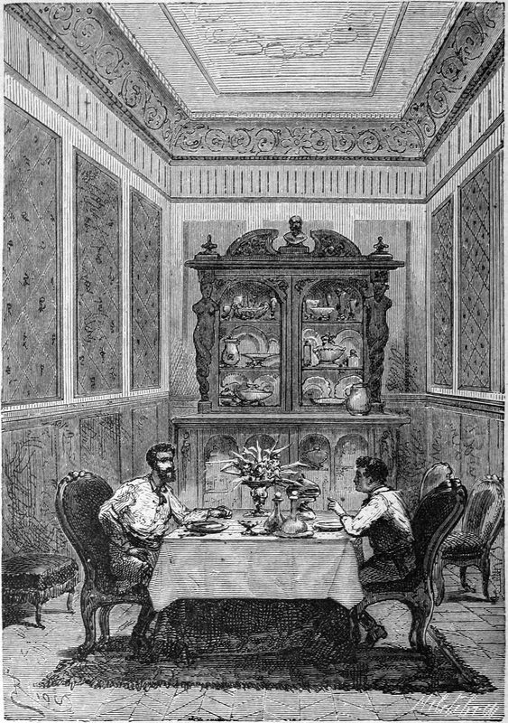
I looked at Captain Nemo with some astonishment, and I answered him:
“I understand perfectly, sir, that your nets supply excellent fish for your table; I understand less well that you hunt aquatic game in your underwater forests; but I do not understand at all how a scrap of meat, however small, can appear on your menu.”
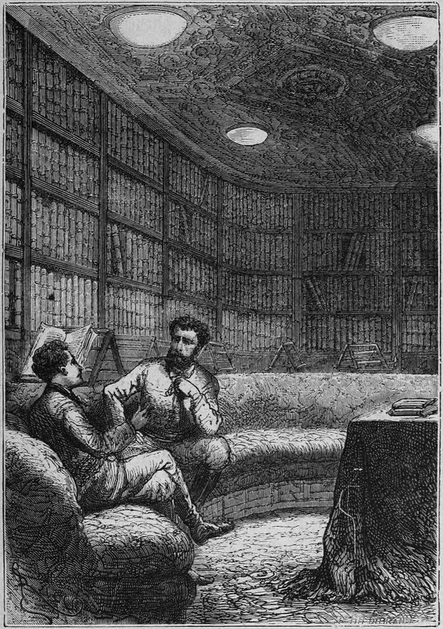
“Nor do I ever make use of the flesh of land animals, sir,” Captain Nemo answered me.
“This, however,” I went on, pointing to a dish where a few slices of fillet still remained.
“What you take for meat, Professor, is nothing other than fillet of sea turtle. Here, likewise, are some dolphin livers that you would take for a pork stew. My cook is a skillful preparer who excels at preserving these varied products of the Ocean. Taste all these dishes. Here is a preserve of sea cucumbers that a Malay would declare unrivaled in the world; there is a cream whose milk was supplied by the udders of cetaceans, and its sugar by the great fucus seaweeds of the North Sea; and finally, allow me to offer you sea anemone jam, which is as good as that of the most delicious fruits.”
And I tasted, more out of curiosity than as a gourmet, while Captain Nemo enchanted me with his incredible stories.
“But this sea, Monsieur Aronnax,” he said to me, “this prodigious, inexhaustible nurse, does not only feed me; it clothes me as well. The fabrics you are wearing are woven from the byssus of certain shellfish; they are dyed with the purple of the ancients and shaded with violet colors that I extract from the sea hares of the Mediterranean. The perfumes you will find on the dressing table in your cabin are the product of distilling marine plants. Your bed is made of the softest eelgrass of the Ocean. Your pen will be a whale’s baleen, your ink the liquid secreted by the cuttlefish or the squid. Everything comes to me now from the sea, as everything will return to it one day!”
“You love the sea, Captain.”
“Yes! I love it! The sea is everything! It covers seven-tenths of the terrestrial globe. Its breath is pure and healthy. It is the immense desert where man is never alone, for he feels life quivering beside him. The sea is only the vehicle of a supernatural and prodigious existence; it is nothing but movement and love; it is the living infinite, as one of your poets has said. And indeed, Professor, nature manifests itself there in its three kingdoms, mineral, vegetable, and animal. The last is widely represented there by the four groups of zoophytes, by three classes of articulates, by five classes of mollusks, and by three classes of vertebrates: the mammals, the reptiles, and those countless legions of fishes, an infinite order of animals that numbers more than thirteen thousand species, only one-tenth of which belong to fresh water. The sea is the vast reservoir of nature. It is through the sea that the globe began, so to speak, and who knows whether it will not end through it! There lies supreme tranquility. The sea does not belong to despots. On its surface they can still exercise their iniquitous rights, fight there, devour one another there, and carry all the horrors of the land there. But thirty feet below its level their power ceases, their influence dies out, their might disappears! Ah, sir, live, live in the bosom of the seas! There alone is independence! There I recognize no masters! There I am free!”
Captain Nemo suddenly fell silent in the midst of this enthusiasm that was overflowing from him. Had he let himself be carried beyond his usual reserve? Had he said too much? For a few moments he paced up and down, very agitated. Then his nerves calmed down, his face resumed its customary coldness, and, turning to me:
“Now, Professor,” he said, “if you wish to visit the Nautilus, I am at your service.”
Captain Nemo got up. I followed him. A double door at the back of the room opened, and I entered a room of the same size as the one I had just left.
It was a library. Tall cases of black rosewood, inlaid with brass, held on their wide shelves a great number of uniformly bound books. They followed the outline of the room and ended at their lower part in vast divans, upholstered in brown leather, which offered the most comfortable curves. Light movable reading desks, which could be pushed apart or drawn together at will, allowed the book being read to rest on them. In the center stood a vast table covered with pamphlets, among which a few newspapers, already old, could be seen. Electric light flooded this whole harmonious ensemble, falling from four frosted globes half set into the scrolls of the ceiling. I looked with real admiration at this room so ingeniously arranged, and I could not believe my eyes.
“Captain Nemo,” I said to my host, who had just stretched out on a divan, “here is a library that would do honor to more than one palace on the continents, and I am truly amazed when I think that it can follow you to the greatest depths of the seas.”
“Where could one find more solitude, more silence, Professor?” answered Captain Nemo. “Does your study at the Museum offer you such complete repose?”
“No, sir, and I must add that it is very poor beside yours. You have six or seven thousand volumes here…”
“Twelve thousand, Monsieur Aronnax. They are the only ties that bind me to the land. But the world came to an end for me the day my Nautilus plunged beneath the waters for the first time. On that day I bought my last volumes, my last pamphlets, my last newspapers, and since then I choose to believe that humanity has neither thought nor written anything more. These books, Professor, are at your disposal, moreover, and you may use them freely.”
I thanked Captain Nemo and went up to the shelves of the library. Books of science, ethics, and literature, written in every language, abounded there, but I did not see a single work of political economy; they seemed to be strictly banned from the ship. A curious detail: all these books were shelved without distinction, in whatever language they were written, and this mixture proved that the captain of the Nautilus must read fluently the volumes his hand took at random.
Among these works I noticed the masterpieces of the ancient and modern masters, that is to say, all the finest things humanity has produced in history, poetry, fiction, and science, from Homer to Victor Hugo, from Xenophon to Michelet, from Rabelais to Madame Sand. But science, more particularly, made up the bulk of this library; books on mechanics, ballistics, hydrography, meteorology, geography, geology, and so on, held a place no less important than the works on natural history, and I understood that they formed the captain’s principal study. I saw there the complete Humboldt, the complete Arago, the works of Foucault, Henri Sainte-Claire Deville, Chasles, Milne-Edwards, Quatrefages, Tyndall, Faraday, Berthelot, Father Secchi, Petermann, Commander Maury, Agassiz, and others, the proceedings of the Academy of Sciences, the bulletins of the various geographical societies, and so on, and, in a prominent place, the two volumes that had perhaps earned me Captain Nemo’s relatively charitable welcome. Among the works of Joseph Bertrand, his book entitled The Founders of Astronomy even gave me a definite date; and since I knew it had appeared in the course of 1865, I could conclude that the fitting out of the Nautilus went back no later than that. So Captain Nemo had begun his underwater existence three years ago at most. I hoped, moreover, that still more recent works would allow me to fix the date exactly; but I had time to make that search, and I did not want to delay our walk through the wonders of the Nautilus any longer.
“Sir,” I said to the captain, “I thank you for putting this library at my disposal. There are treasures of science here, and I shall take advantage of them.”
“This room is not only a library,” said Captain Nemo. “It is also a smoking room.”
“A smoking room?” I cried. “So people smoke aboard?”
“Certainly.”
“Then, sir, I am forced to believe that you have kept up relations with Havana.”
“None,” answered the captain. “Accept this cigar, Monsieur Aronnax, and though it does not come from Havana, you will be pleased with it if you are a connoisseur.”
I took the cigar I was offered, whose shape recalled that of a londrès; but it seemed to be made of gold leaves. I lit it at a small brazier set on an elegant bronze stand, and I drew in its first puffs with the delight of a smoker who has not smoked for two days.
“It’s excellent,” I said, “but it isn’t tobacco.”
“No,” answered the captain. “This tobacco comes neither from Havana nor from the East. It is a sort of seaweed, rich in nicotine, which the sea supplies me, though rather sparingly. Do you miss your londrès, sir?”
“Captain, I scorn them from this day on.”
“Then smoke as you please, without discussing the origin of these cigars. No state monopoly has inspected them, but they are no worse for that, I imagine.”
“On the contrary.”
At that moment Captain Nemo opened a door facing the one by which I had entered the library, and I passed into an immense, splendidly lit drawing room.
It was a vast quadrilateral with cut-off corners, ten meters long, six wide, and five high. A luminous ceiling, decorated with delicate arabesques, spread a clear, soft daylight over all the marvels heaped up in this museum. For it was truly a museum in which an intelligent and lavish hand had gathered all the treasures of nature and art, with that artistic jumble that marks a painter’s studio.

Some thirty pictures by masters, in uniform frames and separated by gleaming trophies of arms, adorned the walls, which were hung with tapestries of austere design. I saw canvases of the highest value there, most of which I had admired in the private collections of Europe and at art exhibitions. The various schools of the old masters were represented by a Madonna by Raphael, a Virgin by Leonardo da Vinci, a nymph by Correggio, a woman by Titian, an Adoration by Veronese, an Assumption by Murillo, a portrait by Holbein, a monk by Velázquez, a martyr by Ribera, a village fair by Rubens, two Flemish landscapes by Teniers, three small genre pictures by Gerard Dou, Metsu, and Paulus Potter, two canvases by Géricault and Prud’hon, and some seascapes by Backhuysen and Vernet. Among the works of modern painting appeared pictures signed Delacroix, Ingres, Decamps, Troyon, Meissonier, Daubigny, and others, and some admirable reductions of marble or bronze statues, after the finest models of antiquity, stood on their pedestals in the corners of this magnificent museum. The state of amazement that the commander of the Nautilus had predicted for me was already beginning to take hold of my mind.
“Professor,” this strange man then said, “you will excuse the informality with which I receive you, and the disorder that reigns in this drawing room.”
“Sir,” I answered, “without trying to find out who you are, may I recognize in you an artist?”
“An amateur at most, sir. I used to love collecting these fine works created by the hand of man. I was an eager seeker, a tireless hunter, and I managed to gather a few objects of great value. They are my last souvenirs of that land which is dead for me. In my eyes your modern artists are already nothing but ancients; they have existed for two or three thousand years, and I confuse them in my mind. The masters have no age.”
“And these musicians?” I said, pointing to scores by Weber, Rossini, Mozart, Beethoven, Haydn, Meyerbeer, Hérold, Wagner, Auber, Gounod, and many others, scattered over a large piano-organ that took up one of the panels of the drawing room.
“These musicians,” Captain Nemo answered me, “are contemporaries of Orpheus, for chronological differences fade in the memory of the dead—and I am dead, Professor, as dead as those of your friends who rest six feet under the ground!”
Captain Nemo fell silent and seemed lost in a deep reverie. I considered him with keen emotion, silently analyzing the strange features of his face. Leaning on his elbow at the corner of a precious mosaic table, he no longer saw me; he had forgotten my presence.
I respected this meditation, and I went on reviewing the curiosities that enriched this drawing room.
Alongside the works of art, natural rarities held a very important place. They consisted mainly of plants, shells, and other productions of the Ocean, which must have been Captain Nemo’s own finds. In the middle of the drawing room, a jet of water, electrically lit, fell back into a basin made of a single giant clam. This shell, supplied by the largest of the acephalous mollusks, measured about six meters in circumference around its delicately scalloped edges; it was thus larger than those fine giant clams given to Francis I by the Republic of Venice, of which the church of Saint-Sulpice in Paris has made two gigantic holy-water fonts.
Around this basin, in elegant glass cases fastened with brass fittings, were classified and labeled the most precious productions of the sea ever offered to the eyes of a naturalist. My joy as a professor may be imagined.
The branch of the zoophytes offered very curious specimens of its two groups, the polyps and the echinoderms. In the first group were organ-pipe corals, gorgonians spread out like fans, soft sponges from Syria, isis from the Moluccas, sea pens, an admirable virgularia from the Norwegian seas, various umbellularia, alcyonarians, and a whole series of those madrepores that my teacher Milne-Edwards has so wisely classified into sections, among which I noticed delightful flabellinae, oculinae from Réunion, the “Neptune’s chariot” of the Antilles, superb varieties of corals, and finally every species of those curious polyparies whose assemblage forms whole islands that will one day become continents. Among the echinoderms, notable for their spiny covering, the asterias, starfish, pentacrinites, feather stars, brittle stars, sea urchins, sea cucumbers, and so on, represented the complete collection of individuals of that group.
A somewhat excitable conchologist would surely have fainted before other, more numerous cases in which the specimens of the branch of the mollusks were classified. I saw there a collection of inestimable value, which I would not have time to describe in full. Among these productions I will mention, merely for the record: the elegant royal hammer oyster of the Indian Ocean, whose regular white spots stood out vividly against a red and brown background; an imperial spondylus, brightly colored and bristling all over with spines, a rare specimen in European museums, whose value I estimated at twenty thousand francs; a common hammer oyster from the seas of New Holland, which is hard to obtain; exotic cockles from Senegal, fragile white bivalve shells that a breath would have scattered like a soap bubble; several varieties of watering-pot shells from Java, a kind of limestone tube edged with leafy folds and much sought after by collectors; a whole series of top shells, some greenish yellow, fished in American seas, others reddish brown, at home in the waters of New Holland, some from the Gulf of Mexico and notable for their overlapping shells, others star shells found in the southern seas, and finally the rarest of all, the magnificent spur shell of New Zealand; then admirable sulfur-tinted tellins, precious species of cythereas and Venus clams, the latticed sundial shell from the coast of Tranquebar, the marbled turban with its resplendent mother-of-pearl, the green parrot shells of the China seas, the almost unknown cone of the genus Coenodulli, every variety of the cowries that serve as money in India and Africa, the “Glory of the Sea,” the most precious shell of the East Indies; and finally periwinkles, delphinulae, turret shells, violet snails, egg cowries, volutes, olives, miters, helmets, purples, whelks, harps, rock shells, tritons, ceriths, spindles, conchs, spider conchs, limpets, hyalaeas, cleodoras—delicate and fragile shells that science has christened with its most charming names.
Apart, in special compartments, lay strings of pearls of the greatest beauty, which the electric light picked out with points of fire: pink pearls torn from the pen shells of the Red Sea, green pearls from the rainbow abalone, yellow, blue, and black pearls, curious products of various mollusks from every ocean and of certain mussels from the rivers of the North, and finally several specimens of priceless value that had been secreted by the rarest pearl oysters. Some of these pearls were bigger than a pigeon’s egg; they were worth as much as, and more than, the one the traveler Tavernier sold for three million to the Shah of Persia, and they surpassed that other pearl of the Imam of Muscat, which I had believed unrivaled in the world.
So it was, so to speak, impossible to put a figure on the value of this collection. Captain Nemo must have spent millions to acquire these various specimens, and I was wondering from what source he drew to satisfy his collector’s whims in this way, when I was interrupted by these words:
“You are examining my shells, Professor. Indeed, they may interest a naturalist; but for me they have an added charm, for I gathered them all with my own hand, and there is not a sea on the globe that has escaped my searches.”
“I understand, Captain, I understand the joy of walking among such riches. You are one of those who have made their own treasure. No museum in Europe possesses such a collection of the productions of the Ocean. But if I use up all my admiration on it, what will I have left for the ship that carries them! I do not wish to pry into secrets that are yours! Nevertheless, I confess that this Nautilus, the motive power it holds within it, the apparatus that allows it to be maneuvered, the so powerful agent that drives it—all this excites my curiosity to the highest degree. I see hanging on the walls of this drawing room instruments whose purpose is unknown to me. May I know…?”
“Monsieur Aronnax,” Captain Nemo answered me, “I told you that you would be free aboard my ship, and consequently no part of the Nautilus is forbidden to you. So you may visit it in detail, and I shall be pleased to be your guide.”
“I don’t know how to thank you, sir, but I shall not abuse your kindness. I will only ask you what these physical instruments are used for…”
“Professor, these same instruments are in my room, and it is there that I shall have the pleasure of explaining their use to you. But first, come and see the cabin reserved for you. You must know how you will be lodged aboard the Nautilus.”
I followed Captain Nemo, who, through one of the doors cut into each corner of the drawing room, led me back into the ship’s gangways. He took me toward the bow, and there I found not a cabin but an elegant room, with a bed, a dressing table, and various other pieces of furniture.
I could only thank my host.

“Your room adjoins mine,” he said to me, opening a door, “and mine opens onto the drawing room we have just left.”
I entered the captain’s room. It had a severe, almost monastic look. An iron bunk, a worktable, a few pieces of washstand furniture. The whole lit by a half-light. Nothing comfortable. Only the bare necessities.
Captain Nemo showed me a seat.
“Please sit down,” he said to me.
I sat down, and he began to speak in these terms:
“Sir,” said Captain Nemo, showing me the instruments hanging on the walls of his room, “here are the devices required for navigating the Nautilus. Here, as in the drawing room, I always have them before my eyes, and they tell me my exact position and heading in the middle of the Ocean. Some are known to you, such as the thermometer, which gives the temperature inside the Nautilus; the barometer, which weighs the air and foretells changes in the weather; the hygrometer, which shows how dry the atmosphere is; the storm glass, whose mixture, as it decomposes, announces the coming of storms; the compass, which guides my course; the sextant, which tells me my latitude from the height of the sun; the chronometers, which allow me to calculate my longitude; and finally day and night glasses, which I use to scan every point of the horizon when the Nautilus has risen to the surface of the waves.”
“These are the navigator’s usual instruments,” I answered, “and I know how they are used. But here are others that no doubt meet the particular needs of the Nautilus. That dial I see, with a moving needle running around it—isn’t it a pressure gauge?”
“It is a pressure gauge, indeed. Placed in communication with the water, whose outside pressure it shows, it thereby gives me the depth at which my apparatus is keeping.”
“And these sounding lines of a new kind?”
“They are thermometric sounding lines that report the temperature of the various layers of water.”
“And these other instruments, whose use I cannot guess?”
“Here, Professor, I must give you some explanations,” said Captain Nemo. “So please listen to me.”
He was silent for a few moments; then he said:
“There is a powerful agent, obedient, swift, and easy, which lends itself to every use and reigns supreme aboard my ship. Everything is done by it. It lights me, it heats me, it is the soul of my mechanical apparatus. That agent is electricity.”
“Electricity!” I cried, rather surprised.
“Yes, sir.”
“And yet, Captain, you have an extreme speed of movement that fits poorly with the power of electricity. Until now its dynamic power has remained very limited and has been able to produce only small forces!”
“Professor,” answered Captain Nemo, “my electricity is not everyone’s, and that is all you will allow me to tell you about it.”
“I won’t insist, sir, and I shall content myself with being very astonished at such a result. One question only, however, which you will not answer if it is indiscreet. The elements you use to produce this marvelous agent must wear out quickly. Zinc, for example—how do you replace it, since you no longer have any communication with the land?”
“Your question shall have its answer,” replied Captain Nemo. “I will tell you, first, that at the bottom of the seas there are mines of zinc, iron, silver, and gold whose working would very certainly be practicable. But I have borrowed nothing from these metals of the land, and I wanted to ask the sea alone for the means of producing my electricity.”
“The sea?”
“Yes, Professor, and I did not lack the means. I could, in fact, have obtained electricity by setting up a circuit between wires sunk at different depths, through the difference in temperatures they experienced; but I preferred to use a more practical system.”
“And what is that?”
“You know the composition of seawater. In a thousand grams one finds ninety-six and a half percent water and about two and two-thirds percent sodium chloride; then, in small quantities, chlorides of magnesium and potassium, magnesium bromide, sulfate of magnesia, and sulfate and carbonate of lime. So you see that sodium chloride is found in it in a notable proportion. Now, it is this sodium that I extract from seawater and from which I make up my cells.”
“Sodium?”
“Yes, sir. Mixed with mercury, it forms an amalgam that takes the place of zinc in Bunsen cells. The mercury never wears out. Only the sodium is consumed, and the sea itself supplies it to me. I will tell you, moreover, that sodium batteries must be considered the most powerful, and that their electromotive force is twice that of zinc batteries.”
“I quite understand, Captain, the excellence of sodium in the conditions in which you find yourself. The sea contains it. Good. But it still has to be manufactured—extracted, in a word. And how do you do that? Your batteries could obviously serve for this extraction; but, unless I am mistaken, the sodium used up by the electrical apparatus would exceed the quantity extracted. So you would end up consuming more of it to produce it than you would produce!”
“That is why, Professor, I do not extract it with the battery; I simply use the heat of coal from the earth.”
“From the earth?” I said, insisting.
“Let us say coal from the sea, if you like,” answered Captain Nemo.
“And you can work underwater coal mines?”
“Monsieur Aronnax, you will see me at work. I ask only a little patience of you, since you have time to be patient. Just remember this: I owe everything to the Ocean; it produces electricity, and electricity gives the Nautilus heat, light, motion—life, in a word.”
“But not the air you breathe?”
“Oh, I could manufacture the air needed for my consumption, but it is useless, since I rise to the surface of the sea whenever I please. However, if electricity does not supply me with breathable air, it does at least work powerful pumps that store it in special tanks, which allows me, if need be, to prolong my stay in the deep layers for as long as I wish.”
“Captain,” I answered, “I can only admire. You have evidently found what men will no doubt find one day: the true dynamic power of electricity.”
“I do not know whether they will find it,” Captain Nemo answered coldly. “Be that as it may, you already know the first use I have made of this precious agent. It lights us with an evenness and a continuity that sunlight does not have. Now look at this clock; it is electric and runs with a regularity that rivals that of the best chronometers. I have divided it into twenty-four hours, like Italian clocks, for to me there is neither night nor day, neither sun nor moon, but only this artificial light that I carry with me to the bottom of the seas! See, at this moment it is ten o’clock in the morning.”
“Exactly.”
“Another use of electricity. This dial hanging before our eyes shows the speed of the Nautilus. An electric wire connects it to the propeller of the log, and its needle shows me the actual progress of the apparatus. And look, at this moment we are running at a moderate speed of fifteen miles an hour.”
“It’s marvelous,” I answered, “and I see clearly, Captain, that you were right to use this agent, which is destined to replace wind, water, and steam.”
“We are not finished, Monsieur Aronnax,” said Captain Nemo, getting up, “and if you will follow me, we shall visit the stern of the Nautilus.”
In fact, I already knew the whole forward part of this submarine boat, of which this is the exact division, going from the center to the ram: the dining room, five meters long, separated from the library by a watertight bulkhead, that is, one that water cannot penetrate; the library, five meters; the large drawing room, ten meters, separated from the captain’s room by a second watertight bulkhead; the said captain’s room, five meters; mine, two and a half meters; and finally an air tank seven and a half meters long, which extended to the stem. In all, thirty-five meters in length. The watertight bulkheads were pierced by doors that closed hermetically by means of rubber seals, and they ensured complete safety aboard the Nautilus in case a leak should spring.
I followed Captain Nemo through the gangways running along the sides and arrived at the center of the ship. There was a sort of well opening between two watertight bulkheads. An iron ladder, clamped to the wall, led to its upper end. I asked the captain what this ladder was used for.
“It leads to the skiff,” he answered.
“What! You have a skiff?” I replied, rather astonished.
“Certainly. An excellent boat, light and unsinkable, which serves for outings and for fishing.”
“But then, when you want to embark, you are forced to come back to the surface of the sea?”
“Not at all. The skiff is fitted to the upper part of the hull of the Nautilus and occupies a cavity designed to receive it. It is fully decked, absolutely watertight, and held by solid bolts. This ladder leads to a manhole cut in the hull of the Nautilus, which matches a similar hole cut in the side of the skiff. It is through this double opening that I get into the boat. One is closed behind me, the one in the Nautilus; I close the other, the one in the skiff, by means of pressure screws; I release the bolts, and the boat rises with prodigious speed to the surface of the sea. Then I open the deck hatch, carefully closed until then, I step the mast, I hoist my sail or take up my oars, and off I go.”
“But how do you come back aboard?”
“I do not come back, Monsieur Aronnax; it is the Nautilus that comes back.”
“At your orders!”
“At my orders. An electric wire connects me to it. I send a telegram, and that is enough.”
“Indeed,” I said, intoxicated by these marvels, “nothing could be simpler!”
After passing the stairwell that led up to the platform, I saw a cabin two meters long in which Conseil and Ned Land, delighted with their meal, were busy devouring it with gusto. Then a door opened onto the galley, three meters long, located between the ship’s vast storerooms.
There electricity, more powerful and more obedient than gas itself, did all the cooking. The wires, arriving under the stoves, conveyed to platinum sponges a heat that was distributed and maintained evenly. It also heated distilling apparatus that, by vaporization, supplied excellent drinking water. Next to this galley opened a comfortably fitted bathroom, whose faucets supplied cold or hot water at will.
After the galley came the crew’s quarters, five meters long. But the door was closed, and I could not see how it was arranged, which might perhaps have told me the number of men needed to operate the Nautilus.
At the far end rose a fourth watertight bulkhead that separated these quarters from the engine room. A door opened, and I found myself in the compartment where Captain Nemo—an engineer of the first rank, beyond a doubt—had installed his apparatus of locomotion.
This brightly lit engine room measured no less than twenty meters in length. It was naturally divided into two parts; the first held the cells that produced the electricity, and the second the mechanism that transmitted motion to the propeller.
I was surprised, first of all, by the sui generis smell that filled this compartment. Captain Nemo noticed my reaction.
“It comes from some releases of gas produced by the use of sodium,” he told me, “but it is only a slight inconvenience. Every morning, besides, we purify the ship by ventilating it thoroughly.”

Meanwhile I was examining the engine of the Nautilus with an interest that is easy to imagine.
“As you see,” Captain Nemo said to me, “I use Bunsen cells, not Ruhmkorff cells. The latter would have been powerless. The Bunsen cells are few in number, but strong and large, which, as experience shows, is better. The electricity produced goes to the stern, where it acts through large electromagnets on a special system of levers and gears that transmit motion to the propeller shaft. The propeller, which has a diameter of six meters and a pitch of seven and a half meters, can make up to a hundred and twenty revolutions per second.”

“And you then obtain?”
“A speed of fifty miles an hour.”
There was a mystery here, but I did not insist on knowing it. How could electricity act with such power? Where did this almost unlimited force come from? Was it in its excessive voltage, obtained with coils of a new kind? Was it in its transmission, which a system of unknown levers6 could increase infinitely? That was what I could not understand.
J. V.
“Captain Nemo,” I said, “I note the results and I do not try to explain them. I saw the Nautilus maneuver in front of the Abraham Lincoln, and I know what to think of its speed. But moving is not enough. One must see where one is going! One must be able to steer right, left, up, down! How do you reach the great depths, where you meet a growing resistance that is reckoned in hundreds of atmospheres? How do you rise back to the surface of the Ocean? And finally, how do you keep yourself in the layer that suits you? Am I being indiscreet in asking you?”
“Not at all, Professor,” the captain answered me after a slight hesitation, “since you are never to leave this submarine boat. Come into the drawing room. It is our real study, and there you will learn all you need to know about the Nautilus!”
A moment later we were seated on a divan in the drawing room, cigars in our mouths. The captain placed before my eyes a drawing that gave the plan, cross section, and elevation of the Nautilus. Then he began his description in these terms:
“Here, Monsieur Aronnax, are the various dimensions of the boat that carries you. It is a very elongated cylinder with conical ends. It clearly takes the shape of a cigar, a shape already adopted in London for several constructions of the same kind. The length of this cylinder from end to end is exactly seventy meters, and its beam at its greatest width is eight meters. So it is not built quite on the ten-to-one ratio of your fast steamers, but its lines are long enough and its run sufficiently drawn out that the displaced water slips away easily and offers no obstacle to its progress.
“These two dimensions allow you to obtain by a simple calculation the surface area and the volume of the Nautilus. Its surface area comes to 1,011.45 square meters; its volume, 1,500.2 cubic meters—which is to say that, when fully submerged, it displaces or weighs 1,500 cubic meters, or metric tons.
“When I drew up the plans for this ship intended for underwater navigation, I wanted it, when in equilibrium in the water, to be nine-tenths submerged and to emerge by one-tenth only. Consequently, under these conditions it was to displace only nine-tenths of its volume, or 1,356.48 cubic meters, that is, to weigh only that same number of tons. So I had to stay within that weight in building it to the dimensions given above.
“The Nautilus consists of two hulls, one inner and one outer, joined to each other by T-shaped irons that give it extreme rigidity. Indeed, thanks to this cellular arrangement, it resists like a block, as if it were solid. Its plating cannot give way; it holds by itself and not by the tightening of the rivets, and the uniformity of its construction, due to the perfect assembly of its materials, allows it to defy the most violent seas.
“These two hulls are made of steel plate whose density relative to water is 7.8. The first is no less than five centimeters thick and weighs 394.96 tons. The second casing; the keel, fifty centimeters high and twenty-five wide, which by itself weighs sixty-two tons; the engine, the ballast, the various fittings and furnishings, and the bulkheads and interior braces have a weight of 961.62 tons, which, added to the 394.96 tons, make up the required total of 1,356.48 tons. Is that understood?”
“It is understood,” I answered.
“So,” the captain went on, “when the Nautilus is afloat under these conditions, it emerges by one-tenth. Now, if I have installed tanks with a capacity equal to that tenth, that is, holding 150.72 tons, and if I fill them with water, the boat, then displacing or weighing 1,507 tons, will be completely submerged. That is what happens, Professor. These tanks are located along the sides in the lower parts of the Nautilus. I open the valves, they fill, and the boat sinks until it is just level with the surface of the water.”
“Good, Captain, but now we come to the real difficulty. That you can bring yourself level with the surface of the Ocean, I understand. But lower down, diving beneath that surface, won’t your submarine apparatus meet a pressure and consequently undergo an upward thrust that must be reckoned at one atmosphere per thirty feet of water, or about one kilogram per square centimeter?”
“Exactly, sir.”
“Then, unless you fill the Nautilus entirely, I don’t see how you can draw it down into the heart of the liquid masses.”
“Professor,” answered Captain Nemo, “one must not confuse statics with dynamics, or one is exposed to serious errors. Very little work has to be spent to reach the lower regions of the Ocean, for bodies have a tendency to become ‘sinkers.’ Follow my reasoning.”
“I am listening, Captain.”
“When I wanted to determine the increase in weight that must be given to the Nautilus to submerge it, I had only to concern myself with the reduction in volume that seawater undergoes as its layers grow deeper and deeper.”
“That’s evident,” I answered.
“Now, if water is not absolutely incompressible, it is at least very slightly compressible. Indeed, according to the most recent calculations, this reduction is only 436 ten-millionths per atmosphere, that is, for every thirty feet of depth. If I want to go down a thousand meters, I then take into account the reduction in volume under a pressure equivalent to that of a column of water a thousand meters high, that is, under a pressure of a hundred atmospheres. This reduction will then be 436 hundred-thousandths. So I will have to increase the weight so as to weigh 1,513.77 tons instead of 1,507.2 tons. The increase will consequently be only 6.57 tons.”
“Only that?”
“Only that, Monsieur Aronnax, and the calculation is easy to check. Now, I have additional tanks capable of taking on a hundred tons. So I can go down to considerable depths. When I want to rise back to the surface and come level with it, I need only expel this water and empty all the tanks completely if I want the Nautilus to emerge by a tenth of its total capacity.”
To this reasoning, backed by figures, I had nothing to object.
“I accept your calculations, Captain,” I answered, “and it would be ungracious of me to dispute them, since experience proves them right every day. But I now foresee a real difficulty.”
“What is that, sir?”
“When you are at a depth of a thousand meters, the walls of the Nautilus bear a pressure of a hundred atmospheres. If, at that moment, you want to empty the additional tanks to lighten your boat and rise to the surface, the pumps must overcome this pressure of a hundred atmospheres, which is a hundred kilograms per square centimeter. Hence a power…”
“That electricity alone could give me,” Captain Nemo hastened to say. “I repeat, sir, that the dynamic power of my engines is almost infinite. The pumps of the Nautilus have prodigious strength, as you must have seen when their columns of water rushed like a torrent onto the Abraham Lincoln. Besides, I use the additional tanks only to reach moderate depths of fifteen hundred to two thousand meters, and that in order to spare my apparatus. So when the fancy takes me to visit the depths of the Ocean two or three leagues beneath its surface, I use maneuvers that take longer but are no less infallible.”
“What are they, Captain?” I asked.
“That brings me naturally to telling you how the Nautilus is maneuvered.”
“I am impatient to learn it.”
“To steer this boat to starboard or to port—to maneuver it, in a word, in a horizontal plane—I use an ordinary rudder with a wide blade, fixed to the back of the sternpost and worked by a wheel and tackle. But I can also move the Nautilus upward and downward, in a vertical plane, by means of two inclined planes attached to its sides at its center of flotation—movable planes, able to take any position, and worked from inside by powerful levers. If these planes are kept parallel to the boat, it moves horizontally. If they are tilted, the Nautilus, depending on the angle of the tilt and under the push of its propeller, either sinks along a diagonal as drawn out as I please or rises along that diagonal. And if I want to return to the surface more quickly, I disengage the propeller, and the pressure of the water makes the Nautilus rise vertically, like a balloon filled with hydrogen rising swiftly into the air.”
“Bravo, Captain!” I cried. “But how can the helmsman follow the course you give him in the midst of the waters?”
“The helmsman is placed in a glassed-in cage that projects from the upper part of the hull of the Nautilus and is fitted with lenticular glass.”
“Glass able to withstand such pressures?”
“Perfectly. Crystal, though fragile under a blow, nevertheless offers considerable resistance. In experiments in fishing by electric light carried out in 1864 in the northern seas, plates of this material only seven millimeters thick were seen to withstand a pressure of sixteen atmospheres, while letting through powerful heat rays that distributed the heat unevenly through them. Now, the glass I use is no less than twenty-one centimeters thick at its center, that is, thirty times that thickness.”
“Granted, Captain Nemo; but after all, to see, light must drive away the darkness, and I wonder how, in the midst of the obscurity of the waters…”
“Behind the helmsman’s cage is placed a powerful electric reflector, whose rays light up the sea for half a mile.”
“Ah! Bravo, three times bravo, Captain! Now I can explain that phosphorescence of the so-called narwhal that so puzzled the scientists! On that subject, I will ask you whether the collision between the Nautilus and the Scotia, which made such a stir, was the result of a chance encounter?”
“Purely chance, sir. I was navigating two meters below the surface of the waters when the shock occurred. I saw, moreover, that it had no unfortunate result.”
“None, sir. But as for your encounter with the Abraham Lincoln…?”
“Professor, I am sorry for it, for the sake of one of the best ships of that brave American navy, but I was attacked and I had to defend myself! I contented myself, however, with putting the frigate in a state where she could do me no harm—she will have no trouble repairing her damage at the nearest port.”
“Ah, Commander,” I cried with conviction, “your Nautilus is truly a marvelous boat!”
“Yes, Professor,” answered Captain Nemo with real emotion, “and I love it as flesh of my flesh! If everything is danger on one of your ships, subject to the hazards of the Ocean; if on that sea the first impression is the feeling of the abyss, as the Dutchman Jansen so well put it, beneath it and aboard the Nautilus man’s heart has nothing more to fear. No distortion to fear, for the double hull of this boat has the rigidity of iron; no rigging for rolling or pitching to strain; no sails for the wind to carry off; no boilers for steam to burst; no fire to fear, since this apparatus is made of sheet iron and not of wood; no coal to run out, since electricity is its mechanical agent; no collision to fear, since it alone navigates the deep waters; no storm to brave, since a few meters beneath the waters it finds absolute tranquility! There, sir. There is the ship par excellence! And if it is true that the engineer has more confidence in the vessel than the builder, and the builder more than the captain himself, then understand with what abandon I trust my Nautilus, since I am at once its captain, its builder, and its engineer!”
Captain Nemo spoke with a captivating eloquence. The fire in his eyes and the passion of his gestures transfigured him. Yes! He loved his ship as a father loves his child!
But a question, an indiscreet one perhaps, arose naturally, and I could not keep from putting it to him.
“So you are an engineer, Captain Nemo?”
“Yes, Professor,” he answered me. “I studied in London, in Paris, and in New York, in the days when I was an inhabitant of the continents of the earth.”
“But how were you able to build this admirable Nautilus in secret?”
“Each of its pieces, Monsieur Aronnax, came to me from a different point on the globe, under a disguised destination. Its keel was forged at Le Creusot, its propeller shaft at Pen and Co. of London, the iron plates of its hull at Leard of Liverpool, its propeller at Scott of Glasgow. Its tanks were made by Cail and Co. of Paris, its engine by Krupp in Prussia, its ram in the Motala workshops in Sweden, its precision instruments at Hart Brothers of New York, and so on, and each of these suppliers received my plans under different names.”
“But,” I went on, “these pieces, made in this way, had to be assembled and fitted together?”
“Professor, I had set up my workshops on a deserted islet in the middle of the Ocean. There my workmen—that is, my brave companions, whom I taught and trained—and I completed our Nautilus. Then, once the work was finished, fire destroyed every trace of our stay on that islet, which I would have blown up if I could have.”

“Then I may suppose that the cost of this vessel was excessive?”
“Monsieur Aronnax, an iron ship costs 1,125 francs per ton. Now, the Nautilus has a tonnage of 1,500. So it comes to 1,687,000 francs, or two million including its fittings, or four or five million with the works of art and the collections it contains.”
“One last question, Captain Nemo.”
“Go ahead, Professor.”
“You are rich, then?”
“Infinitely rich, sir, and I could pay off France’s ten billion in debts without feeling it!”
I stared at the strange person who was speaking to me in this way. Was he taking advantage of my credulity? The future would tell me.
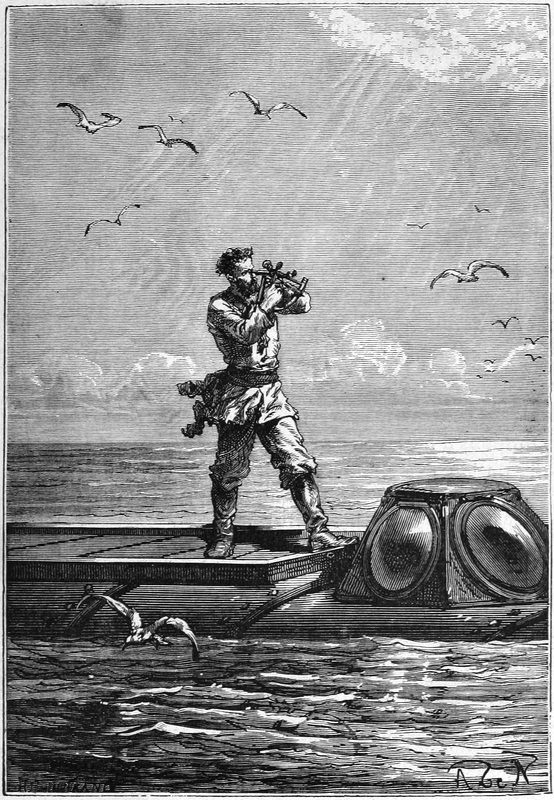
The portion of the terrestrial globe covered by water is estimated at 3,832,558 square myriameters, or more than 38 million hectares. This liquid mass amounts to 2,250 million cubic miles and would form a sphere sixty leagues in diameter, weighing three quintillion tons. And to grasp this number, one must tell oneself that a quintillion is to a billion what a billion is to one; that is, there are as many billions in a quintillion as there are units in a billion. Now, this liquid mass is about the quantity of water that all the rivers on earth would pour out in forty thousand years.
During the geological eras, the period of fire was followed by the period of water. At first the Ocean was universal. Then, little by little, in Silurian times, mountaintops appeared; islands emerged, vanished beneath partial floods, showed themselves again, joined together, formed continents; and finally the lands settled geographically as we see them. The solid had won from the liquid 37,657,000 square miles, or 12,916 million hectares.
The shape of the continents allows the waters to be divided into five great parts: the Arctic Ocean, the Antarctic Ocean, the Indian Ocean, the Atlantic Ocean, and the Pacific Ocean.
The Pacific Ocean stretches from north to south between the two polar circles, and from west to east between Asia and America over 145 degrees of longitude. It is the calmest of the seas; its currents are broad and slow, its tides moderate, its rains abundant. Such was the Ocean that my destiny called me first to travel under the strangest conditions.
“Professor,” Captain Nemo said to me, “if you don’t mind, we shall take our exact position and fix the starting point of this voyage. It is a quarter to twelve. I am going to rise to the surface of the waters.”
The captain pressed an electric bell three times. The pumps began to expel the water from the tanks; the needle of the pressure gauge marked the upward movement of the Nautilus by the changing pressures; then it stopped.
“We have arrived,” said the captain.
I went to the central staircase that led up to the platform. I climbed the metal steps and, through the open hatches, came out on the upper part of the Nautilus.
The platform rose only eighty centimeters above the water. The bow and stern of the Nautilus had that spindle shape that made it rightly compared to a long cigar. I noticed that its iron plates, slightly overlapping, resembled the scales that cover the bodies of the great land reptiles. So I quite naturally understood why, even with the best spyglasses, this boat had always been taken for a sea animal.
Toward the middle of the platform, the skiff, half set into the hull of the ship, formed a slight swelling. Fore and aft rose two cages of modest height, with sloping sides partly closed by thick lenticular glass: one meant for the helmsman who steered the Nautilus, the other holding the powerful electric beacon that lit its way.
The sea was magnificent, the sky clear. The long vessel barely felt the broad undulations of the Ocean. A light breeze from the east rippled the surface of the waters. The horizon, free of mist, lent itself to the best observations.
There was nothing in sight. Not a reef, not an islet. No more Abraham Lincoln. The empty immensity.
Captain Nemo, with his sextant, took the height of the sun, which was to give him his latitude. He waited a few minutes for the sun to touch the edge of the horizon. While he was observing, not one of his muscles twitched, and the instrument would not have been steadier in a hand of marble.
“Noon,” he said. “Professor, whenever you are ready…?”
I cast a last look at this slightly yellowish sea off the Japanese coasts, and I went back down to the large drawing room.
There the captain worked out his position and calculated his longitude by chronometer, which he checked against earlier observations of hour angles. Then he said to me:
“Monsieur Aronnax, we are in longitude 137° 15′ west…”
“Of what meridian?” I asked eagerly, hoping that the captain’s answer might tell me his nationality.
“Sir,” he answered me, “I have various chronometers set to the meridians of Paris, Greenwich, and Washington. But in your honor I shall use that of Paris.”
This answer told me nothing. I bowed, and the commander went on:
“137° 15′ longitude west of the meridian of Paris, and 30° 7′ north latitude, that is, about three hundred miles from the coasts of Japan. It is today, November 8, at noon, that our voyage of exploration beneath the waters begins.”
“God keep us!” I answered.
“And now, Professor,” added the captain, “I leave you to your studies. I have set the course east-northeast at a depth of fifty meters. Here are large-scale charts on which you can follow it. The drawing room is at your disposal, and I ask your leave to withdraw.”
Captain Nemo bowed to me. I remained alone, absorbed in my thoughts. They all turned on this commander of the Nautilus. Would I ever know to what nation this strange man belonged, who boasted of belonging to none? This hatred he had vowed against humanity, a hatred that was perhaps seeking terrible revenge—what had provoked it? Was he one of those unrecognized scientists, one of those geniuses “who have been made to suffer,” as Conseil put it, a modern Galileo, or else one of those men of science like the American Maury, whose career was broken by political revolutions? I could not yet say. Me, whom chance had just cast aboard his ship, me, whose life he held in his hands, he received coldly but hospitably. Only, he had never taken the hand I held out to him. He had never held out his own to me.
For a whole hour I remained plunged in these reflections, trying to pierce this mystery that interested me so much. Then my eyes settled on the large world map spread out on the table, and I put my finger on the very spot where the observed longitude and latitude crossed.
The sea has its rivers, like the continents. These are special currents, recognizable by their temperature and their color, the most remarkable of which is known as the Gulf Stream. Science has determined the direction of five principal currents on the globe: one in the North Atlantic, a second in the South Atlantic, a third in the North Pacific, a fourth in the South Pacific, and a fifth in the southern Indian Ocean. It is even probable that a sixth current once existed in the northern Indian Ocean, when the Caspian and Aral Seas, joined to the great lakes of Asia, formed one single expanse of water.
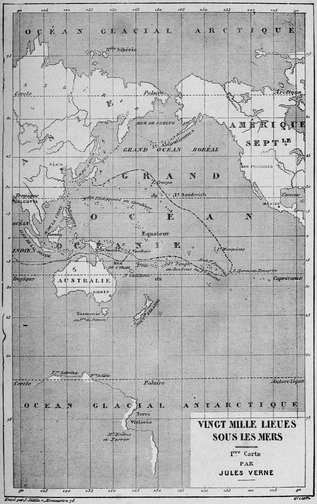
Now, at the point marked on the world map, one of these currents was flowing: the Kuroshio of the Japanese, the Black River, which, leaving the Bay of Bengal, where the vertical rays of the tropical sun warm it, crosses the Strait of Malacca, runs along the coast of Asia, and curves into the North Pacific as far as the Aleutian Islands, carrying trunks of camphor trees and other native products and standing out against the waves of the Ocean by the pure indigo of its warm waters. It was this current that the Nautilus was about to follow. I traced it with my eyes, I saw it lose itself in the immensity of the Pacific, and I felt myself carried along with it, when Ned Land and Conseil appeared at the door of the drawing room.
My two brave companions stood petrified at the sight of the marvels heaped up before their eyes.
“Where are we? Where are we?” cried the Canadian. “In the museum in Quebec?”
“If master will allow me,” Conseil replied, “it would rather be the Hôtel du Sommerard!”
“My friends,” I answered, signaling them to come in, “you are neither in Canada nor in France, but aboard the Nautilus, fifty meters below the level of the sea.”
“Master must be believed, since master says so,” Conseil replied, “but frankly, this drawing room is enough to astonish even a Fleming like me.”
“Be astonished, my friend, and look, for a classifier of your caliber there is plenty of work here.”
I had no need to encourage Conseil. The good lad, bending over the glass cases, was already murmuring words from the language of the naturalists: class Gastropoda, family Buccinoidea, genus Cowries, species Cypraea madagascariensis, and so on.
Meanwhile Ned Land, who was hardly a conchologist, was questioning me about my interview with Captain Nemo. Had I found out who he was, where he came from, where he was going, to what depths he was taking us? In short, a thousand questions I had no time to answer.
I told him all I knew—or rather, all I did not know—and asked him what he had heard or seen on his side.
“Seen nothing, heard nothing!” answered the Canadian. “I haven’t even caught sight of the crew of this boat. Could it be that they’re electric too, by any chance?”
“Electric!”
“My word! You’d be tempted to think so. But you, Monsieur Aronnax,” asked Ned Land, who still had his idea in mind, “can’t you tell me how many men there are aboard? Ten, twenty, fifty, a hundred?”
“I couldn’t answer you, Master Land. Besides, believe me, give up for the moment this idea of seizing the Nautilus or escaping from it. This boat is one of the masterpieces of modern industry, and I would be sorry not to have seen it! Many people would accept the situation we have been put in, if only to wander among these marvels. So keep quiet, and let’s try to see what is happening around us.”
“See!” cried the harpooner. “But you can’t see anything, you’ll never see anything from this iron prison! We’re moving, we’re sailing blind…”
Ned Land was saying these last words when darkness suddenly fell, an absolute darkness. The luminous ceiling went out, and so quickly that my eyes felt a painful sensation, like the one produced by the opposite passage from deep darkness to the most dazzling light.
We had remained speechless, not moving, not knowing what surprise, pleasant or unpleasant, awaited us. But a sliding noise was heard. One would have said that panels were being worked on the sides of the Nautilus.
“It’s the end of the end!” said Ned Land.
“Order Hydromedusae!” murmured Conseil.
Suddenly daylight appeared on each side of the drawing room through two oblong openings. The liquid masses appeared, brightly lit by the electric radiance. Two panes of crystal separated us from the sea. At first I shuddered at the thought that this fragile wall might break; but strong brass frames held it and gave it an almost infinite resistance.
The sea was distinctly visible for a radius of a mile around the Nautilus. What a spectacle! What pen could describe it! Who could paint the effects of the light through those transparent sheets, and the softness of its successive gradations toward the lower and upper layers of the Ocean!
The transparency of the sea is well known. It is known that its clearness surpasses that of spring water. The mineral and organic substances it holds in suspension even increase its transparency. In certain parts of the Ocean, in the Antilles, the sandy bottom can be seen through 145 meters of water with surprising sharpness, and the penetrating power of the sun’s rays seems to stop only at a depth of three hundred meters. But in this fluid medium through which the Nautilus was traveling, the electric brilliance was produced in the very heart of the waves. It was no longer luminous water, but liquid light.
If one accepts the hypothesis of Ehrenberg, who believes in a phosphorescent illumination of the sea bottom, nature has certainly reserved for the inhabitants of the sea one of its most prodigious spectacles, and I could judge of it here by the thousand plays of this light. On each side I had a window opening onto these unexplored abysses. The darkness of the drawing room set off the brightness outside, and we looked as if this pure crystal had been the pane of an immense aquarium.
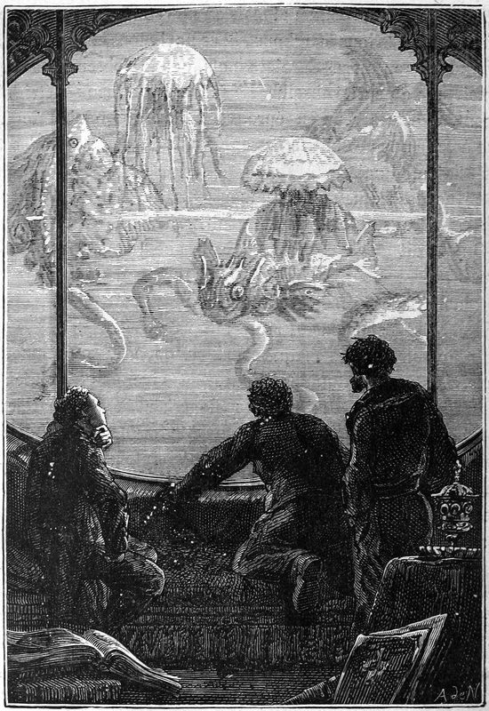
The Nautilus did not seem to be moving. That was because there were no landmarks. Sometimes, however, the lines of water, parted by its ram, streamed past our eyes with excessive speed.
Amazed, we were leaning on our elbows before these windows, and none of us had yet broken this silence of stupefaction, when Conseil said:
“You wanted to see, friend Ned. Well, now you see!”
“Curious! Curious!” said the Canadian, who, forgetting his tempers and his plans of escape, was yielding to an irresistible attraction. “People would come from a long way off to admire this sight!”
“Ah!” I cried. “I understand this man’s life! He has made himself a world apart that keeps its most astonishing marvels for him!”

“But the fish?” the Canadian pointed out. “I don’t see any fish!”
“What does it matter to you, friend Ned,” answered Conseil, “since you don’t know them?”
“Me! A fisherman!” cried Ned Land.
And on this subject a discussion arose between the two friends, for they both knew fish, but each in a very different way.
Everyone knows that fishes form the fourth and last class of the branch of the vertebrates. They have been very aptly defined as “vertebrates with double circulation and cold blood, breathing through gills and destined to live in water.” They make up two distinct series: the series of the bony fishes, that is, those whose spine is made of bony vertebrae, and the cartilaginous fishes, that is, those whose spine is made of cartilaginous vertebrae.
The Canadian perhaps knew this distinction, but Conseil knew a good deal more, and now that he had become friends with Ned, he could not admit to being less learned than he. So he said to him:
“Friend Ned, you are a killer of fish, a very skillful fisherman. You have caught a great number of these interesting animals. But I’ll wager you don’t know how they are classified.”
“Yes, I do,” the harpooner answered seriously. “They’re classified into fish you can eat and fish you can’t!”
“There’s a glutton’s distinction,” answered Conseil. “But tell me whether you know the difference between the bony fishes and the cartilaginous fishes?”
“Maybe I do, Conseil.”
“And the subdivision of these two great classes?”
“I haven’t the faintest idea,” answered the Canadian.
“Well, friend Ned, listen and remember! The bony fishes are subdivided into six orders. Primo, the acanthopterygians, whose upper jaw is complete and movable, and whose gills take the form of a comb. This order includes fifteen families, that is, three-quarters of known fishes. Type: the common perch.”
“Pretty good eating,” answered Ned Land.
“Secundo,” Conseil went on, “the abdominals, whose ventral fins hang beneath the abdomen and behind the pectorals, without being attached to the shoulder bones—an order divided into five families and including most freshwater fishes. Type: the carp, the pike.”
“Pooh!” said the Canadian with some contempt. “Freshwater fish!”
“Tertio,” said Conseil, “the subbrachians, whose ventrals are attached beneath the pectorals and hang directly from the shoulder bones. This order contains four families. Type: plaice, dab, turbot, brill, sole, and so on.”
“Excellent! Excellent!” cried the harpooner, who would consider fish only from the point of view of the table.
“Quarto,” Conseil went on, unruffled, “the apodes, with long bodies, lacking ventral fins, and covered with a thick and often slimy skin—an order that includes only one family. Type: the eel, the electric eel.”
“So-so! So-so!” answered Ned Land.
“Quinto,” said Conseil, “the lophobranchs, which have complete and free jaws, but whose gills are formed of small tufts arranged in pairs along the gill arches. This order has only one family. Type: the sea horses, the dragonfishes.”
“Bad! Bad!” replied the harpooner.
“Sexto, finally,” said Conseil, “the plectognaths, whose maxillary bone is firmly attached to the side of the intermaxillary that forms the jaw, and whose palatine arch is joined to the skull by a suture, which makes it immovable—an order lacking true ventrals and consisting of two families. Types: the puffers, the sunfishes.”
“Fit to disgrace a cooking pot!” cried the Canadian.
“Did you understand, friend Ned?” asked the learned Conseil.
“Not in the least, friend Conseil,” answered the harpooner. “But keep going, for you’re very interesting.”
“As for the cartilaginous fishes,” Conseil went on imperturbably, “they include only three orders.”
“So much the better,” said Ned.
“Primo, the cyclostomes, whose jaws are fused into a movable ring and whose gills open through numerous holes—an order including only one family. Type: the lamprey.”
“You’d have to like it,” answered Ned Land.
“Secundo, the selachians, with gills like those of the cyclostomes but with a movable lower jaw. This order, which is the most important in the class, includes two families. Types: the ray and the sharks.”
“What!” cried Ned. “Rays and sharks in the same order! Well, friend Conseil, in the interests of the rays, I don’t advise you to put them together in the same jar!”
“Tertio,” answered Conseil, “the sturionians, whose gills open, as usual, through a single slit covered by a gill cover—an order that includes four genera. Type: the sturgeon.”
“Ah, friend Conseil, you kept the best for last—in my opinion, at least. And is that all?”
“Yes, my good Ned,” answered Conseil, “and note that when you know that, you still know nothing, for the families are subdivided into genera, subgenera, species, and varieties…”
“Well, friend Conseil,” said the harpooner, leaning toward the pane of the panel, “here come some varieties now!”
“Yes! Fish!” cried Conseil. “You’d think we were in front of an aquarium!”
“No,” I answered, “for an aquarium is only a cage, and those fish are as free as a bird in the air.”
“Well, friend Conseil, name them, then, name them!” said Ned Land.
“Me?” answered Conseil. “I can’t! That’s my master’s business!”
And indeed the worthy lad, a fanatical classifier, was no naturalist, and I do not know whether he could have told a tuna from a bonito. In a word, the opposite of the Canadian, who named all these fish without hesitation.
“A triggerfish,” I had said.
“And a Chinese triggerfish!” answered Ned Land.
“Genus Balistes, family Sclerodermi, order Plectognathi,” murmured Conseil.
Decidedly, between the two of them, Ned and Conseil would have made a distinguished naturalist.
The Canadian had not been mistaken. A school of triggerfish, with compressed bodies and grainy skin, armed with a spine on their dorsal fin, were playing around the Nautilus and waving the four rows of prickles that bristle on each side of their tails. Nothing could be more admirable than their covering, gray above and white below, whose gold spots sparkled in the dark eddies of the waves. Among them rays rippled like a sheet abandoned to the winds, and among these, to my great joy, I caught sight of that Chinese ray, yellowish on its upper part, soft pink on its belly, and armed with three spines behind its eye—a rare species, and even a doubtful one in the time of Lacépède, who had only ever seen it in a collection of Japanese drawings.
For two hours a whole aquatic army escorted the Nautilus. In the midst of their games and their leaps, as they vied with one another in beauty, brilliance, and speed, I made out the green wrasse; the bearded mullet, marked with a double black stripe; the eleotris goby, with a rounded tail, white in color and spotted with violet on its back; the Japanese scomber, an admirable mackerel of these seas, with a blue body and a silvery head; brilliant azure fish whose very name says everything; striped sea bream with fins varied in blue and yellow; banded sea bream set off by a black band on their tails; zonephorous sea bream elegantly corseted in their six belts; aulostomes, true flute-mouths or sea snipes, some specimens of which reached a meter in length; Japanese salamanders; echidna morays, long six-foot serpents with small, lively eyes and huge mouths bristling with teeth; and so on.
Our admiration stayed at its highest pitch. Our exclamations never ran dry. Ned named the fish, Conseil classified them, and I went into raptures over the liveliness of their movements and the beauty of their forms. Never before had I been granted the chance to come upon these animals alive and free in their natural element.
I will not list all the varieties that passed before our dazzled eyes in this way, the whole collection of the seas of Japan and China. These fish came rushing up, more numerous than birds in the air, attracted no doubt by the brilliant focus of electric light.
Suddenly daylight returned to the drawing room. The iron panels closed again. The enchanting vision disappeared. But for a long time I went on dreaming, until my eyes settled on the instruments hanging on the walls. The compass still showed the heading as north-northeast, the pressure gauge indicated a pressure of five atmospheres, corresponding to a depth of fifty meters, and the electric log gave a speed of fifteen miles an hour.
I waited for Captain Nemo. But he did not appear. The clock said five o’clock.
Ned Land and Conseil went back to their cabin. As for me, I returned to my room. My dinner was ready there. It consisted of a turtle soup made from the most delicate hawksbills, a red mullet with white, slightly flaky flesh, whose liver, prepared separately, made a delicious dish, and fillets of the emperor holacanthus, whose flavor seemed to me superior to that of salmon.
I spent the evening reading, writing, and thinking. Then, as sleep overtook me, I stretched out on my bed of eelgrass and fell sound asleep, while the Nautilus glided through the swift current of the Black River.
The next day, November 9, I did not wake until after a long sleep of twelve hours. Conseil came, as was his habit, to find out “how master had spent the night” and to offer his services. He had left his friend the Canadian sleeping like a man who had done nothing else all his life.
I let the good lad chatter as he pleased, without answering him much. I was preoccupied by Captain Nemo’s absence during our session of the day before, and I hoped to see him again today.
I was soon dressed in my byssus clothes. Their nature more than once provoked Conseil’s reflections. I told him they were made from the glossy, silky filaments that attach to the rocks the “fan mussels,” a kind of shell very abundant on the shores of the Mediterranean. In the past, fine fabrics, stockings, and gloves were made from them, for they were both very soft and very warm. The crew of the Nautilus could therefore clothe themselves cheaply, without asking anything of the cotton plants, the sheep, or the silkworms of the land.
When I was dressed, I went to the large drawing room. It was empty.
I plunged into the study of the conchological treasures heaped up in the glass cases. I also went through vast herbariums filled with the rarest marine plants, which, though dried, kept their admirable colors. Among these precious hydrophytes I noticed whorled cladostephae, peacock padinae, vine-leaved caulerpae, grain-bearing callithamnia, delicate ceramia of scarlet hues, agars arranged like fans, acetabulariae like very flattened mushroom caps, which were long classified among the zoophytes, and finally a whole series of kelps.
The whole day went by without my being honored by a visit from Captain Nemo. The panels of the drawing room did not open. Perhaps they did not want us to grow weary of these beautiful things.
The heading of the Nautilus stayed east-northeast, its speed twelve miles an hour, its depth between fifty and sixty meters.
The next day, November 10, the same neglect, the same solitude. I saw no one from the crew. Ned and Conseil spent most of the day with me. They were astonished at the captain’s inexplicable absence. Was this singular man ill? Did he want to change his plans regarding us?
After all, as Conseil remarked, we enjoyed complete freedom, and we were fed delicately and abundantly. Our host was keeping to the terms of his treaty. We could not complain, and besides, the very singularity of our fate held such fine compensations in store for us that we had no right yet to find fault with it.
That day I began the journal of these adventures, which has allowed me to tell them with the most scrupulous accuracy, and—a curious detail—I wrote it on paper made from marine eelgrass.
On November 11, early in the morning, the fresh air spreading through the inside of the Nautilus told me that we had come back to the surface of the Ocean to renew our supply of oxygen. I headed for the central staircase and went up onto the platform.
It was six o’clock. I found the weather overcast and the sea gray but calm. Hardly any swell. Would Captain Nemo, whom I hoped to meet there, come? I saw only the helmsman, imprisoned in his glass cage. Seated on the projection formed by the hull of the skiff, I breathed in the salty air with delight.
Little by little the mist dissolved under the action of the sun’s rays. The radiant orb was rising over the eastern horizon. The sea caught fire under its gaze like a trail of gunpowder. The clouds, scattered high up, took on bright, admirably shaded colors, and numerous “cat’s tongues”7 announced wind for the whole day.
But what did wind matter to this Nautilus, which storms could not frighten!
So I was admiring this joyful sunrise, so cheerful, so invigorating, when I heard someone coming up toward the platform.
I was preparing to greet Captain Nemo, but it was his first officer—whom I had already seen during the captain’s first visit—who appeared. He came forward onto the platform and did not seem to notice my presence. With his powerful spyglass to his eye, he scanned every point of the horizon with extreme attention. Then, this examination done, he went to the hatch and spoke a sentence of which these are the exact words. I remember it because it was repeated every morning under identical circumstances. It went like this:

“Nautron respoc lorni virch.”
What it meant, I could not say.
These words spoken, the first officer went back down. I thought the Nautilus was about to resume its underwater navigation. So I went back to the hatch and returned to my room by the gangways.
Five days went by like this without any change in the situation. Every morning I went up onto the platform. The same sentence was spoken by the same individual. Captain Nemo did not appear.
I had resigned myself to not seeing him anymore when, on November 16, returning to my room with Ned and Conseil, I found on the table a note addressed to me.
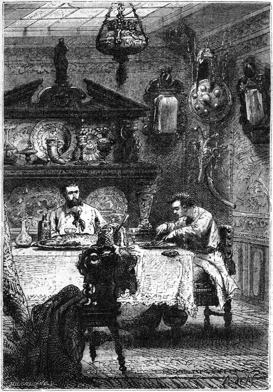
I opened it impatiently. It was written in a bold, clear hand, but a little Gothic, recalling German lettering.
The note was worded in these terms:
“Professor Aronnax, aboard the Nautilus.
“November 16, 1867.
“Captain Nemo invites Professor Aronnax to a hunting party that will take place tomorrow morning in his forests on Crespo Island. He hopes that nothing will prevent the professor from attending, and he will be pleased if the professor’s companions join him.
“The commander of the Nautilus, CAPTAIN NEMO.”
“A hunt!” cried Ned.
“And in his forests on Crespo Island!” added Conseil.
“So that fellow goes ashore, then?” Ned Land went on.
“That seems clearly indicated,” I said, rereading the letter.
“Well, we must accept,” replied the Canadian. “Once on dry land, we’ll see about making a decision. Besides, I won’t be sorry to eat a few pieces of fresh venison.”
Without trying to reconcile the contradiction between Captain Nemo’s evident horror of continents and islands and his invitation to hunt in a forest, I contented myself with answering:
“Let’s first see what Crespo Island is.”
I consulted the world map, and at 32° 40′ north latitude and 167° 50′ west longitude I found an islet that was sighted in 1801 by Captain Crespo and that the old Spanish charts called Roca de la Plata, that is, “Silver Rock.” So we were about eighteen hundred miles from our starting point, and the slightly altered heading of the Nautilus was bringing it back toward the southeast.
I showed my companions this little rock lost in the middle of the North Pacific.
“If Captain Nemo sometimes goes ashore,” I said to them, “at least he chooses absolutely deserted islands!”
Ned Land shook his head without answering; then he and Conseil left me. After a supper served to me by the mute, impassive steward, I fell asleep, not without some anxiety.
The next day, November 17, when I woke, I felt that the Nautilus was absolutely motionless. I dressed quickly and went into the large drawing room.
Captain Nemo was there. He was waiting for me; he rose, bowed, and asked me whether it suited me to accompany him.
Since he made no allusion to his absence during the past eight days, I refrained from mentioning it, and simply answered that my companions and I were ready to follow him.
“Only, sir,” I added, “I will take the liberty of asking you one question.”
“Ask it, Monsieur Aronnax, and if I can answer it, I will.”
“Well, Captain, how is it that you, who have broken off all relations with the land, own forests on Crespo Island?”
“Professor,” the captain answered me, “the forests I own ask the sun for neither its light nor its heat. Neither lions, nor tigers, nor panthers, nor any quadruped frequent them. They are known to me alone. They grow for me alone. They are not land forests at all, but underwater forests.”
“Underwater forests!” I cried.
“Yes, Professor.”
“And you are offering to take me there?”
“Precisely.”
“On foot?”
“And without even getting our feet wet.”
“Hunting?”
“Hunting.”
“Gun in hand?”
“Gun in hand.”
I looked at the commander of the Nautilus with an expression that was anything but flattering to him.
“Decidedly, his brain is sick,” I thought. “He has had a fit that lasted eight days and is still going on. What a pity! I liked him better strange than mad!”
This thought could be read plainly on my face, but Captain Nemo merely invited me to follow him, and I followed him like a man resigned to anything.
We arrived in the dining room, where breakfast was served.
“Monsieur Aronnax,” the captain said to me, “I will ask you to share my breakfast without ceremony. We shall talk while we eat. But though I promised you a walk in the forest, I did not undertake to have you find a restaurant there. So eat your breakfast like a man who will probably not dine until very late.”
I did justice to the meal. It consisted of various fishes and slices of sea cucumber, excellent zoophytes, seasoned with very appetizing seaweeds such as Porphyria laciniata and Laurentia primafetida. The drink was clear water to which, following the captain’s example, I added a few drops of a fermented liquor extracted, in the Kamchatka manner, from the seaweed known as “palmate Rhodymenia.”
At first Captain Nemo ate without saying a single word. Then he said to me:
“Professor, when I suggested that you come hunting in my Crespo forests, you thought I was contradicting myself. When I told you they were underwater forests, you thought I was mad. Professor, one must never judge men lightly.”
“But, Captain, believe me…”
“Please listen to me, and you will see whether you should accuse me of madness or contradiction.”
“I am listening.”
“Professor, you know as well as I do that man can live underwater provided he carries his supply of breathable air with him. In underwater work, the workman, dressed in waterproof clothing and with his head enclosed in a metal capsule, receives air from outside by means of force pumps and flow regulators.”
“That is the diving apparatus,” I said.
“Indeed, but under those conditions man is not free. He is tied to the pump that sends him air through a rubber hose, a veritable chain that binds him to the land, and if we had to be held to the Nautilus in that way, we could not go far.”
“And the means of being free?” I asked.
“It is to use the Rouquayrol-Denayrouze apparatus, devised by two of your countrymen, but which I have perfected for my own use, and which will allow you to venture into these new physiological conditions without your organs suffering in the least. It consists of a tank of thick sheet iron in which I store air under a pressure of fifty atmospheres. This tank is fastened on the back by means of straps, like a soldier’s knapsack. Its upper part forms a box from which the air, held back by a bellows mechanism, can escape only at its normal pressure. In the Rouquayrol apparatus as it is used, two rubber hoses leading from this box end in a sort of bell that encloses the operator’s nose and mouth; one serves to bring in the inhaled air, the other to let out the exhaled air, and the tongue closes one or the other as breathing requires. But I, who face considerable pressures at the bottom of the seas, had to enclose my head, like a diver’s, in a copper sphere, and it is into this sphere that the two inhaling and exhaling hoses lead.”
“Perfectly, Captain Nemo, but the air you carry must be used up quickly, and as soon as it contains no more than fifteen percent oxygen, it becomes unbreathable.”
“No doubt, but as I told you, Monsieur Aronnax, the pumps of the Nautilus allow me to store it under considerable pressure, and under those conditions the tank of the apparatus can supply breathable air for nine or ten hours.”
“I have no more objections to make,” I answered. “I will only ask you, Captain, how you can light your way at the bottom of the Ocean?”
“With the Ruhmkorff apparatus, Monsieur Aronnax. If the first is carried on the back, the second is attached to the belt. It consists of a Bunsen battery, which I activate not with potassium bichromate but with sodium. An induction coil collects the electricity produced and directs it to a lantern of special design. In this lantern there is a glass coil containing only a residue of carbonic gas. When the apparatus is working, this gas becomes luminous, giving off a steady, whitish light. Thus equipped, I breathe and I see.”
“Captain Nemo, you give such crushing answers to all my objections that I no longer dare to doubt. However, while I am obliged to accept the Rouquayrol and Ruhmkorff apparatus, I must make some reservations about the gun with which you want to arm me.”
“But it is not a gunpowder gun at all,” answered the captain.
“So it’s an air gun?”
“Certainly. How do you expect me to make gunpowder aboard my ship, having neither saltpeter, nor sulfur, nor charcoal?”
“Besides,” I said, “to fire underwater, in a medium 855 times denser than air, you would have to overcome considerable resistance.”
“That would be no reason. There are certain cannons, improved after Fulton by the Englishmen Philip Coles and Burley, the Frenchman Furcy, and the Italian Landi, which are fitted with a special breech system and can fire under those conditions. But I repeat, having no gunpowder, I have replaced it with high-pressure air, which the pumps of the Nautilus supply me in abundance.”
“But this air must be used up quickly.”
“Well, don’t I have my Rouquayrol tank, which can supply me with it if need be? All that is needed is a valve ad hoc. Besides, Monsieur Aronnax, you will see for yourself that in these underwater hunts one does not use much air or many bullets.”
“Still, it seems to me that in this half-darkness, and in the midst of this liquid so dense compared with the atmosphere, shots cannot carry far and are seldom fatal?”
“Sir, with this gun every shot is fatal, on the contrary, and as soon as an animal is hit, however lightly, it falls as if struck by lightning.”
“Why?”
“Because what this gun fires is not ordinary bullets, but little glass capsules—invented by the Austrian chemist Leniebroek—of which I have a considerable supply. These glass capsules, covered with a steel casing and weighted with a lead base, are veritable little Leyden jars, in which electricity is forced to a very high voltage. At the slightest impact they discharge, and the animal, however powerful, falls dead. I will add that these capsules are no bigger than number four shot, and that the charge of an ordinary gun could hold ten of them.”
“I won’t argue anymore,” I answered, getting up from the table, “and all I have left to do is take my gun. Besides, where you go, I shall go.”
Captain Nemo led me toward the stern of the Nautilus, and as we passed Ned and Conseil’s cabin, I called my two companions, who followed us at once.
Then we arrived at a cell located along the side, near the engine room, in which we were to put on our walking clothes.
This cell was, strictly speaking, the arsenal and the dressing room of the Nautilus. A dozen diving suits, hanging on the wall, were waiting for the walkers.
On seeing them, Ned Land showed an obvious reluctance to put one on.
“But, my good Ned,” I said to him, “the forests of Crespo Island are only underwater forests!”
“Fine!” said the disappointed harpooner, who saw his dreams of fresh meat vanishing. “And you, Monsieur Aronnax, you’re going to get into those outfits?”
“I have to, Master Ned.”
“As you like, sir,” answered the harpooner, shrugging his shoulders, “but as for me, unless I’m forced to, I’ll never get inside one of those.”
“No one will force you, Master Ned,” said Captain Nemo.
“And Conseil is going to risk it?” asked Ned.
“I follow master wherever master goes,” answered Conseil.
At the captain’s call, two men of the crew came to help us put on these heavy waterproof garments, made of seamless rubber and prepared so as to withstand considerable pressures. One would have called them armor that was at once supple and resistant. These garments formed trousers and a jacket. The trousers ended in thick boots fitted with heavy lead soles. The fabric of the jacket was held by copper strips that armored the chest, protected it against the push of the water, and let the lungs work freely; its sleeves ended in supple gloves that did not hinder the movements of the hand in the least.
There was a long way, as one can see, from these perfected diving suits to the shapeless garments—cork breastplates, sleeveless jackets, sea suits, barrels, and so on—that were invented and extolled in the eighteenth century.
Captain Nemo, one of his companions—a sort of Hercules, who must have been prodigiously strong—Conseil, and I soon had these diving suits on. All that remained was to fit our heads into their metal spheres. But before going ahead with this operation, I asked the captain’s permission to examine the guns intended for us.
One of the men of the Nautilus handed me a simple gun whose butt, made of sheet steel and hollow inside, was rather large. It served as a tank for compressed air, which a valve worked by a trigger let escape into the metal barrel. A projectile box, hollowed out in the thickness of the butt, held about twenty electric bullets, which, by means of a spring, placed themselves automatically in the barrel of the gun. As soon as one shot was fired, the next was ready to go.
“Captain Nemo,” I said, “this weapon is perfect and easy to handle. I ask only to try it. But how are we going to reach the bottom of the sea?”
“At this moment, Professor, the Nautilus is resting on the bottom in ten meters of water, and we have only to set out.”
“But how shall we get out?”
“You are about to see.”
Captain Nemo put his head into the spherical helmet. Conseil and I did the same, not without hearing the Canadian throw us an ironic “Good hunting.” The top of our garment ended in a threaded copper collar onto which this metal helmet was screwed. Three holes, protected by thick glass, allowed us to see in every direction just by turning our heads inside this sphere. As soon as it was in place, the Rouquayrol apparatus on our backs began to work, and, for my part, I breathed easily.
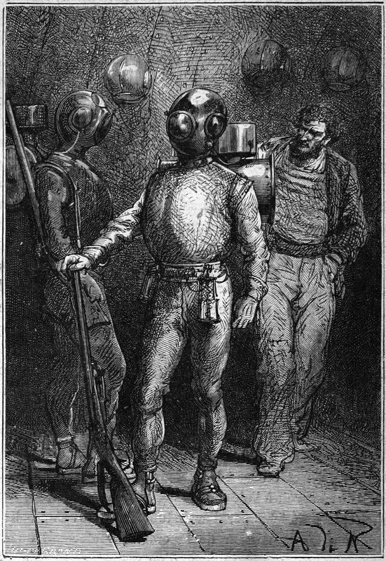
With the Ruhmkorff lamp hanging from my belt and the gun in my hand, I was ready to set out. But, to be frank, imprisoned in these heavy clothes and nailed to the deck by my lead soles, I could not have taken a step.
But this case had been foreseen, for I felt myself being pushed into a small room next to the dressing room. My companions, likewise towed along, followed me. I heard a door fitted with seals close behind us, and a deep darkness enveloped us.
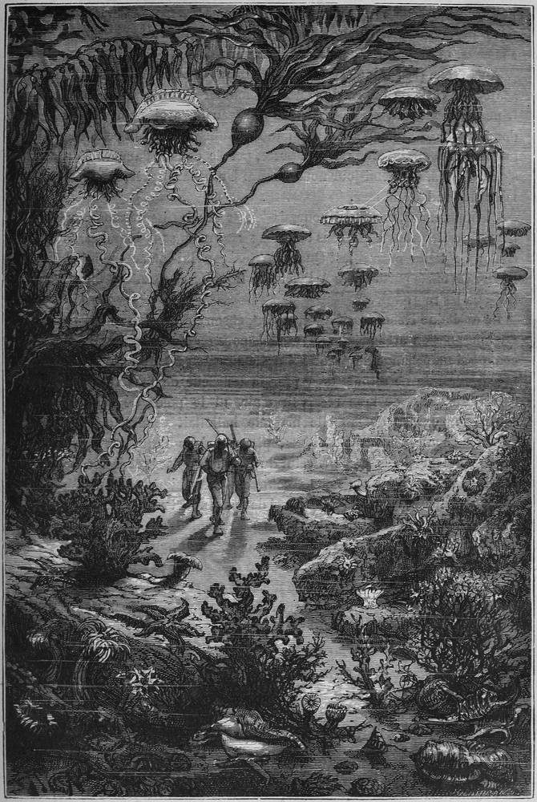
After a few minutes, a sharp hissing reached my ear. I felt a certain sensation of cold rising from my feet to my chest. Evidently someone inside the boat had opened a valve to let in the outside water, which was flooding over us and soon filled the room. A second door, cut into the side of the Nautilus, then opened. A half-light lit us. A moment later our feet were treading the bottom of the sea.
And now, how could I retrace the impressions this walk beneath the waters left on me? Words are powerless to tell of such marvels! When even the brush is unable to render the effects peculiar to the liquid element, how could the pen reproduce them?
Captain Nemo walked ahead, and his companion followed a few steps behind us. Conseil and I stayed close to each other, as if an exchange of words had been possible through our metal shells. I no longer felt the heaviness of my clothes, my boots, and my air tank, nor the weight of that thick sphere inside which my head rattled like an almond in its shell. All these objects, immersed in water, lost a part of their weight equal to that of the liquid displaced, and I was very well served by this physical law discovered by Archimedes. I was no longer an inert mass, and I had a relatively great freedom of movement.
The light, which lit up the ground thirty feet below the surface of the Ocean, astonished me with its power. The sun’s rays passed easily through this watery mass and dissolved its color. I could clearly make out objects a hundred meters away. Beyond that, the bottom was tinged with the fine gradations of ultramarine, then turned blue in the distance and faded into a vague darkness. Truly, this water around me was only a kind of air, denser than the earth’s atmosphere but almost as transparent. Above me I could see the calm surface of the sea.
We were walking on fine, even sand, not rippled like that of beaches, which keeps the imprint of the swell. This dazzling carpet, a true reflector, threw back the sun’s rays with surprising intensity. Hence the immense reverberation that penetrated every liquid molecule. Will I be believed if I declare that at this depth of thirty feet I could see as in broad daylight?
For a quarter of an hour I trod this glowing sand, sprinkled with an impalpable dust of shells. The hull of the Nautilus, outlined like a long reef, gradually disappeared, but its beacon, when night had fallen in the midst of the waters, was to make our return aboard easier by projecting its rays with perfect sharpness. An effect hard to understand for anyone who has seen these whitish sheets of light so sharply marked only on land. There, the dust with which the air is saturated gives them the look of a luminous fog; but on the sea, as under the sea, these electric beams are transmitted with incomparable purity.
Meanwhile we kept going, and the vast plain of sand seemed boundless. I parted with my hand the liquid curtains that closed again behind me, and the trace of my footsteps was suddenly erased by the pressure of the water.
Soon the shapes of a few objects, barely sketched in the distance, took form before my eyes. I recognized magnificent foregrounds of rocks carpeted with zoophytes of the finest kind, and I was first of all struck by an effect peculiar to this medium.
It was then ten o’clock in the morning. The sun’s rays struck the surface of the waves at a rather oblique angle, and at the touch of their light, broken up by refraction as if through a prism, flowers, rocks, seedlings, shells, and polyps were tinged at their edges with the seven colors of the solar spectrum. It was a marvel, a feast for the eyes, this tangle of colored tones, a true kaleidoscope of green, yellow, orange, violet, indigo, and blue—in a word, the whole palette of a passionate colorist! If only I could have shared with Conseil the vivid sensations rising to my brain, and vied with him in exclamations of admiration! If only I had known how, like Captain Nemo and his companion, to exchange thoughts by means of agreed signs! So, for lack of anything better, I talked to myself, I shouted inside the copper box that covered my head, perhaps spending more air on idle words than was advisable.
Before this splendid spectacle, Conseil had stopped as I had. Evidently the worthy lad, in the presence of these specimens of zoophytes and mollusks, was classifying, classifying still. Polyps and echinoderms abounded on the ground. The varied isis, the cornularia that live alone, tufts of virgin oculinae, formerly known as “white coral,” the bristling fungia shaped like mushrooms, and the anemones clinging by their muscular disks made up a flower bed, enameled with porpitae adorned with their collars of azure tentacles, with starfish that studded the sand, and with warty basket stars, fine lace embroidered by the hands of the naiads, whose festoons swayed in the faint ripples set up by our walking. It was a real grief to me to crush underfoot the brilliant specimens of mollusks that strewed the ground by the thousands: concentric scallops, hammer oysters, donaxes—true leaping shells—top shells, red helmets, angel-wing conchs, sea hares, and so many other products of this inexhaustible Ocean. But we had to keep walking, and we went on while above our heads drifted schools of Portuguese men-of-war, letting their ultramarine tentacles trail behind them; jellyfish whose opal or soft pink umbrellas, scalloped with a band of azure, sheltered us from the sun’s rays; and fiery pelagiae, which in the darkness would have strewn our path with phosphorescent gleams!
All these marvels I glimpsed within the space of a quarter of a mile, barely stopping, and following Captain Nemo, who called me on with a gesture. Soon the nature of the ground changed. The plain of sand was followed by a layer of sticky mud that the Americans call “ooze,” composed solely of siliceous or calcareous shells. Then we crossed a meadow of algae, open-sea plants that the waters had not yet torn up, and whose growth was luxuriant. These close-woven lawns, soft to the foot, would have rivaled the softest carpets woven by the hand of man. But while the greenery spread out beneath our feet, it did not abandon our heads. A light arbor of marine plants, classified in that exuberant family of algae of which more than two thousand species are known, crisscrossed at the surface of the waters. I saw long ribbons of fucus floating, some globular, others tubular, laurenciae, cladostephae with such slender foliage, and palmate rhodymeniae resembling cactus fans. I observed that the green plants kept closer to the surface of the sea, while the red ones occupied a middle depth, leaving the black or brown hydrophytes the task of forming the gardens and flower beds of the remote layers of the Ocean.
These algae are truly a prodigy of creation, one of the marvels of the world’s flora. This family produces at once the smallest and the largest plants on the globe. For just as forty thousand of these imperceptible seedlings have been counted within a space of five square millimeters, so fucus plants have been gathered whose length exceeded five hundred meters.
We had left the Nautilus about an hour and a half before. It was nearly noon. I noticed it by the vertical angle of the sun’s rays, which were no longer refracted. The magic of the colors gradually disappeared, and the shades of emerald and sapphire faded from our firmament. We walked with a regular step that rang on the ground with astonishing intensity. The slightest noises were transmitted with a speed the ear is not used to on land. Indeed, water is a better carrier of sound than air, and sound travels through it four times as fast.
At this point the ground sloped down sharply. The light took on a uniform tint. We reached a depth of a hundred meters, then undergoing a pressure of ten atmospheres. But my diving suit was made in such a way that I did not suffer from this pressure in the least. I only felt a certain discomfort in the joints of my fingers, and even this uneasiness soon disappeared. As for the fatigue that this two-hour walk in a harness I was so little used to should have brought on, there was none. My movements, helped by the water, came with surprising ease.
Having reached this depth of three hundred feet, I could still see the sun’s rays, but faintly. Their intense brilliance had given way to a reddish twilight, halfway between day and night. However, we could see well enough to find our way, and it was not yet necessary to turn on the Ruhmkorff apparatus.
At that moment Captain Nemo stopped. He waited until I had caught up with him, and with his finger he pointed out to me some dark masses standing out in the shadows a short distance away.
“That is the forest of Crespo Island,” I thought, and I was not mistaken.
We had at last reached the edge of this forest, no doubt one of the finest in Captain Nemo’s immense domain. He considered it his own and claimed over it the same rights the first men had in the first days of the world. Besides, who would have disputed his possession of this underwater property? What other, bolder pioneer would have come, ax in hand, to clear its dark thickets?
This forest was made up of large treelike plants, and as soon as we had entered beneath its vast arches, my eyes were struck first of all by a singular arrangement of their branches—an arrangement I had not observed until then.
None of the grasses carpeting the ground, none of the branches bristling on the shrubs, crept, bent, or spread out in a horizontal plane. All rose toward the surface of the Ocean. There were no filaments, no ribbons, however thin, that did not stand straight as iron rods. The fucus and the creepers grew in a rigid, perpendicular line, dictated by the density of the element that had produced them. Motionless, moreover, when I parted them with my hand, these plants at once returned to their first position. Here was the realm of the vertical.
I soon got used to this odd arrangement, as well as to the relative darkness that surrounded us. The floor of the forest was strewn with sharp blocks that were hard to avoid. The underwater flora seemed to me fairly complete there, even richer than it would have been in the arctic or tropical zones, where its products are less numerous. But for a few minutes I involuntarily confused the kingdoms with one another, taking zoophytes for hydrophytes, animals for plants. And who would not have been mistaken? Fauna and flora touch so closely in this underwater world!
I observed that all these productions of the vegetable kingdom were attached to the ground only by a superficial base. Without roots, indifferent to the solid body—sand, shell, carapace, or pebble—that supports them, they ask of it only a point of support, not vitality. These plants proceed only from themselves, and the principle of their existence lies in the water that holds them up and feeds them. Most of them, instead of leaves, put out blades of whimsical shapes, confined to a narrow range of colors that included only pink, carmine, green, olive, tawny, and brown. I saw again there, no longer dried like the specimens in the Nautilus, peacock padinae spread out like fans that seemed to be asking for a breeze, scarlet ceramia, laminariae stretching out their young edible shoots, threadlike, wavy nereocysts that blossomed at a height of fifteen meters, bouquets of acetabulariae, whose stems grow from the top, and many other open-sea plants, all without flowers. “Curious anomaly, strange element,” a witty naturalist has said, “where the animal kingdom flowers and the vegetable kingdom does not!”
Among these various shrubs, as tall as the trees of the temperate zones, and in their damp shade, were massed true bushes of living flowers, hedges of zoophytes, on which blossomed meandrines striped with winding furrows, yellowish caryophylliae with transparent tentacles, and grassy tufts of zoantharians—and to complete the illusion, fly fish flew from branch to branch like a swarm of hummingbirds, while yellow lepisacanthi, with bristling jaws and sharp scales, flying gurnards, and monocentrids rose under our feet like a flock of snipe.
Toward one o’clock Captain Nemo gave the signal to halt. For my part I was rather glad of it, and we stretched out under an arbor of alariae, whose long, tapering straps stood up like arrows.
This moment of rest seemed delightful to me. All we lacked was the charm of conversation. But it was impossible to speak, impossible to answer. I merely brought my big copper head close to Conseil’s. I saw the good lad’s eyes shining with contentment, and as a sign of satisfaction he wriggled in his shell in the most comical way in the world.
After four hours of this walk, I was very surprised not to feel a violent need to eat. What this state of the stomach was due to, I could not say. But on the other hand I felt an irresistible desire to sleep, as happens to all divers. So my eyes soon closed behind their thick glass, and I fell into an invincible drowsiness that only the movement of walking had been able to fight off until then. Captain Nemo and his sturdy companion, stretched out in this clear crystal, set us the example of sleep.
How long I remained plunged in this torpor I could not estimate; but when I woke, it seemed to me that the sun was sinking toward the horizon. Captain Nemo was already up, and I was beginning to stretch my limbs when an unexpected apparition brought me abruptly to my feet.
A few steps away, a monstrous sea spider, a meter tall, was watching me with its squinting eyes, ready to spring at me. Although my diving suit was thick enough to protect me against this animal’s bites, I could not hold back a movement of horror. Conseil and the sailor from the Nautilus woke at that moment. Captain Nemo pointed out the hideous crustacean to his companion, who knocked it down at once with a blow of his gun butt, and I saw the monster’s horrible legs writhing in terrible convulsions.
This encounter made me think that other, more formidable animals must haunt these dark depths, and that my diving suit would not protect me against their attacks. I had not thought of this until then, and I resolved to keep on my guard. I supposed, moreover, that this halt marked the end of our walk; but I was mistaken, and instead of returning to the Nautilus, Captain Nemo continued his daring excursion.
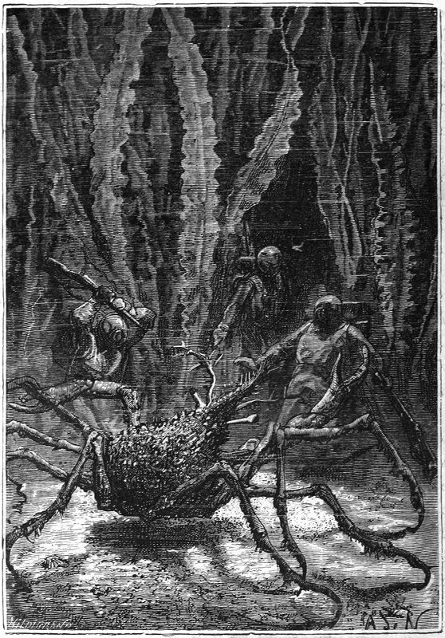
The ground kept sinking, and its slope, growing steeper, led us to greater depths. It must have been about three o’clock when we reached a narrow valley, hollowed out between high, sheer walls, at a depth of a hundred and fifty meters. Thanks to the perfection of our apparatus, we were thus going ninety meters beyond the limit that nature had seemed to impose until now on man’s underwater excursions.
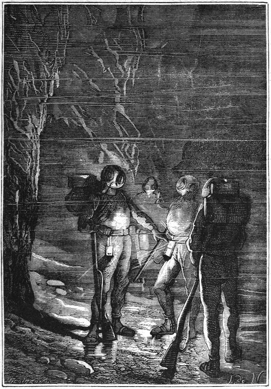
I say a hundred and fifty meters, although no instrument allowed me to estimate the distance. But I knew that even in the clearest seas the sun’s rays could not penetrate any farther. And precisely, the darkness became deep. No object was visible at ten paces. So I was groping my way forward when I suddenly saw a rather bright white light shining. Captain Nemo had just turned on his electric apparatus. His companion did the same. Conseil and I followed their example. By turning a screw, I connected the coil to the glass spiral, and the sea, lit by our four lanterns, was illuminated for a radius of twenty-five meters.
Captain Nemo continued to plunge into the dark depths of the forest, whose shrubs were growing more and more sparse. I observed that plant life disappeared faster than animal life. The open-sea plants were already abandoning the ground, which had become barren, while a prodigious number of animals—zoophytes, articulates, mollusks, and fishes—were still swarming there.
As I walked, I thought that the light of our Ruhmkorff apparatus must necessarily attract some of the inhabitants of these dark layers. But if they approached us, they at least kept at a distance regrettable for hunters. Several times I saw Captain Nemo stop and raise his gun to his shoulder; then, after a few moments of observation, he would lower it and go on walking.
At last, at about four o’clock, this marvelous excursion came to an end. A wall of superb rocks of imposing mass rose before us, a heap of gigantic blocks, an enormous granite cliff, hollowed out with dark caves but offering no practicable slope. It was the steep shore of Crespo Island. It was land.
Captain Nemo stopped suddenly. A gesture from him made us halt, and however eager I was to get over this wall, I had to stop. Here Captain Nemo’s domains came to an end. He did not want to go beyond them. Past that lay the portion of the globe that he was never again to set foot on.
The return began. Captain Nemo had again taken the lead of his little troop, still steering without hesitation. I thought I could see that we were not taking the same path back to the Nautilus. This new route, very steep and consequently very tiring, quickly brought us closer to the surface of the sea. However, this return to the upper layers was not so sudden that decompression happened too quickly, which could have caused serious disorders in our bodies and brought on those internal injuries so fatal to divers. Very soon the light reappeared and grew, and since the sun was already low on the horizon, refraction once again edged the various objects with a spectral ring.
At a depth of ten meters we were walking in the midst of a swarm of little fish of every kind, more numerous than birds in the air and more agile too, but no aquatic game worthy of a shot had yet presented itself to our eyes.
At that moment I saw the captain’s weapon, quickly shouldered, follow a moving object among the bushes. The shot went off, I heard a faint hiss, and an animal fell, struck dead, a few steps away.
It was a magnificent sea otter, an enhydra, the only quadruped that is exclusively marine. This otter, a meter and a half long, must have been very valuable. Its skin, chestnut brown above and silvery below, made one of those admirable furs so sought after on the Russian and Chinese markets; the fineness and luster of its coat guaranteed it a value of at least two thousand francs. I greatly admired this curious mammal, with its rounded head adorned with short ears, its round eyes, its white whiskers like a cat’s, its webbed and clawed feet, and its bushy tail. This precious carnivore, hunted and tracked by fishermen, is becoming extremely rare, and it has taken refuge mainly in the northern parts of the Pacific, where its species will probably soon die out.
Captain Nemo’s companion came to pick up the animal, loaded it on his shoulder, and we set off again.
For an hour a plain of sand unrolled before our steps. It often rose to less than two meters from the surface of the waters. I could then see our image, sharply reflected, drawn upside down, and above us appeared an identical troop, reproducing our movements and gestures, alike in every point—in a word, except that it walked head down and feet in the air.
Another effect worth noting was the passing of thick clouds that formed and vanished rapidly; but on reflection, I understood that these so-called clouds were due only to the varying thickness of the long ground swells, and I could even make out the foaming “whitecaps” that their broken crests scattered over the waters. Even the shadows of the large birds passing over our heads did not escape me as they skimmed swiftly across the surface of the sea.
On this occasion I witnessed one of the finest shots that ever thrilled a hunter’s nerves. A large bird with a broad wingspan, very clearly visible, came gliding closer. Captain Nemo’s companion took aim and fired when it was only a few meters above the waves. The animal fell, struck dead, and its fall brought it within reach of the skillful hunter, who seized it. It was an albatross of the finest kind, an admirable specimen of the open-sea birds.
Our march had not been interrupted by this incident. For two hours we followed now sandy plains, now meadows of kelp that were very hard to cross. Frankly, I was at the end of my strength when I caught sight of a vague glow breaking the darkness of the waters half a mile away. It was the beacon of the Nautilus. Within twenty minutes we should be aboard, and there I would breathe easily, for it seemed to me that my tank was now supplying only air very poor in oxygen. But I had not reckoned on an encounter that delayed our arrival somewhat.
I had fallen some twenty steps behind when I saw Captain Nemo turn back abruptly toward me. With his vigorous hand he forced me to the ground, while his companion did the same to Conseil. At first I did not quite know what to think of this sudden attack, but I was reassured on seeing that the captain lay down beside me and stayed motionless.
So I was stretched out on the ground, just in the shelter of a clump of kelp, when, raising my head, I saw enormous masses pass noisily, giving off phosphorescent gleams.
My blood froze in my veins! I had recognized the formidable sharks that were threatening us. It was a pair of tintoreas, terrible sharks with enormous tails and dull, glassy eyes, which give off a phosphorescent matter through holes pierced around their snouts. Monstrous fireflies, which crush a whole man in their iron jaws! I do not know whether Conseil was busy classifying them, but for my part I was observing their silvery bellies and their formidable mouths, bristling with teeth, from a point of view that was hardly scientific—more as a victim than as a naturalist.
Very fortunately, these voracious animals see poorly. They passed without noticing us, brushing us with their brownish fins, and we escaped as if by a miracle from this danger, which was certainly greater than meeting a tiger in the depths of a forest.
Half an hour later, guided by the electric trail, we reached the Nautilus. The outer door had been left open, and Captain Nemo closed it as soon as we had come back into the first cell. Then he pressed a button. I heard the pumps working inside the ship, I felt the water dropping around me, and in a few moments the cell was completely emptied. The inner door then opened, and we passed into the dressing room.
There our diving suits were taken off, not without difficulty, and, utterly worn out, dropping with hunger and sleep, I went back to my room, still full of wonder at this astonishing excursion to the bottom of the seas.
The next morning, November 18, I had completely recovered from the previous day’s fatigue, and I went up onto the platform just as the first officer of the Nautilus was speaking his daily sentence. It then occurred to me that it referred to the state of the sea, or rather that it meant: “There is nothing in sight.”
And indeed the Ocean was deserted. Not a sail on the horizon. The heights of Crespo Island had disappeared during the night. The sea, absorbing the colors of the prism except for the blue rays, reflected these in every direction and took on an admirable indigo hue. A moiré with broad stripes was regularly traced on the undulating waves.
I was admiring this magnificent aspect of the Ocean when Captain Nemo appeared. He did not seem to notice my presence and began a series of astronomical observations. Then, his operation finished, he went and leaned on the beacon housing, and his gaze lost itself on the surface of the Ocean.
Meanwhile some twenty sailors of the Nautilus, all vigorous, well-built men, had come up onto the platform. They had come to haul in the nets that had been trailed during the night. These seamen obviously belonged to different nations, although the European type was evident in all of them. I recognized without any doubt Irishmen, Frenchmen, a few Slavs, and a Greek or a Cretan. Otherwise these men were sparing of words and used among themselves only that strange idiom whose origin I could not even guess. So I had to give up questioning them.
The nets were hauled aboard. They were a kind of trawl, like those of the Normandy coast, vast pockets held half open by a floating yard and a chain threaded through the lower meshes. These pockets, dragged along in this way on their iron frames, swept the bottom of the Ocean and gathered up all its productions in their path. That day they brought up curious specimens from these fish-rich waters: anglerfish, whose comical movements have earned them the name of clowns; black commersons with their antennae; undulated triggerfish, encircled with little red bands; crescent puffers, whose venom is extremely subtle; a few olive-colored lampreys; macrorhynchi covered with silvery scales; trichiuri, whose electric power equals that of the electric eel and the torpedo ray; scaly notopteri with brown transverse bands; greenish cod; several varieties of gobies, and so on; and finally a few fish of larger proportions: a jack with a prominent head, a meter long; several fine bonitos, bedecked with blue and silver colors; and three magnificent tuna that the speed of their swimming had not been able to save from the trawl.
I estimated that this haul brought in more than a thousand pounds of fish. It was a fine catch, but not a surprising one. Indeed, these nets stay in tow for several hours and enclose a whole aquatic world in their prison of thread. So we were not likely to lack provisions of excellent quality, which the speed of the Nautilus and the attraction of its electric light could renew constantly.
These various products of the sea were immediately lowered through the hatch to the storerooms, some to be eaten fresh, others to be preserved.
The fishing over and the supply of air renewed, I thought the Nautilus was about to resume its underwater excursion, and I was getting ready to go back to my room when Captain Nemo, turning toward me, said to me without further preamble:
“Look at this ocean, Professor. Isn’t it endowed with real life? Doesn’t it have its angers and its tendernesses? Yesterday it fell asleep as we did, and here it is waking up after a peaceful night!”
Neither good morning nor good evening! Wouldn’t one have said that this strange person was continuing a conversation with me that had already begun?
“Look,” he went on, “it is waking under the caresses of the sun! It is going to live its daytime existence again! It is an interesting study to follow the workings of its organism. It has a pulse and arteries, it has its spasms, and I agree with the learned Maury, who discovered in it a circulation as real as the circulation of the blood in animals.”
Captain Nemo was certainly not expecting any answer from me, and it seemed useless to lavish on him “Evidently,” “Certainly,” and “You are right.” He was talking rather to himself, pausing at length between each sentence. It was a meditation aloud.
“Yes,” he said, “the Ocean has a true circulation, and to set it going, the Creator of all things had only to multiply heat, salt, and animalcules within it. Heat, indeed, creates different densities, which bring about currents and countercurrents. Evaporation, nil in the hyperborean regions and very active in the equatorial zones, makes up a permanent exchange between tropical and polar waters. In addition, I have caught those currents from top to bottom and from bottom to top that form the true respiration of the Ocean. I have seen the molecule of seawater, warmed at the surface, go back down toward the depths, reach its maximum density at two degrees below zero, then, cooling further, become lighter and rise again. You will see the consequences of this phenomenon at the poles, and you will understand why, by this law of provident nature, freezing can only ever occur at the surface of the waters!”
While Captain Nemo was finishing his sentence, I said to myself: “The pole! Does this daring person mean to take us all the way there?”
Meanwhile the captain had fallen silent and was gazing at this element he had studied so completely and so constantly. Then, going on:
“Salts,” he said, “are present in considerable quantity in the sea, Professor, and if you removed all those it holds in solution, you would make a mass of four and a half million cubic leagues, which, spread over the globe, would form a layer more than ten meters high. And do not think that the presence of these salts is due only to a whim of nature. No. They make seawater less liable to evaporate, and they prevent the winds from carrying off too great a quantity of vapor, which, on condensing, would flood the temperate zones. An immense role, the role of a balancer in the general economy of the globe!”
Captain Nemo stopped, even got up, took a few steps on the platform, and came back toward me:
“As for the infusoria,” he went on, “as for those billions of animalcules that exist by the millions in a droplet, and of which it takes eight hundred thousand to weigh a milligram, their role is no less important. They absorb the sea salts, they assimilate the solid elements of the water, and, true makers of limestone continents, they manufacture corals and madrepores! And then the drop of water, deprived of its mineral food, grows lighter, rises back to the surface, absorbs there the salts left behind by evaporation, grows heavier, goes back down, and brings the animalcules new elements to absorb. Hence a double current, rising and falling, and always motion, always life! Life, more intense than on the continents, more exuberant, more infinite, blossoming in every part of this ocean—an element of death for man, it has been said, an element of life for myriads of animals—and for me!”
When Captain Nemo spoke like this, he was transfigured and stirred in me an extraordinary emotion.

“So,” he added, “there is true existence! And I could imagine the founding of nautical towns, clusters of underwater houses that, like the Nautilus, would come back to breathe every morning at the surface of the seas—free towns if ever there were any, independent cities! And yet, who knows whether some despot…”
Captain Nemo finished his sentence with a violent gesture. Then, addressing me directly, as if to drive away a gloomy thought:
“Monsieur Aronnax,” he asked me, “do you know the depth of the Ocean?”
“I know, at least, Captain, what the principal soundings have taught us.”

“Could you tell me what they are, so that I may check them if need be?”
“Here are a few,” I answered, “that come back to my memory. Unless I am mistaken, an average depth of 8,200 meters has been found in the North Atlantic, and of 2,500 meters in the Mediterranean. The most remarkable soundings have been made in the South Atlantic, near the thirty-fifth parallel, and they gave 12,000 meters, 14,091 meters, and 15,149 meters. In short, it is estimated that if the sea bottom were leveled, its average depth would be about seven kilometers.”
“Good, Professor,” answered Captain Nemo. “We shall show you better than that, I hope. As for the average depth of this part of the Pacific, I will tell you that it is only four thousand meters.”
This said, Captain Nemo headed for the hatch and disappeared down the ladder. I followed him and went back to the large drawing room. The propeller at once began to turn, and the log showed a speed of twenty miles an hour.
During the days and weeks that followed, Captain Nemo was very sparing with his visits. I saw him only at rare intervals. His first officer regularly took our position, which I found marked on the chart, so that I could plot the course of the Nautilus exactly.
Conseil and Land spent long hours with me. Conseil had told his friend about the marvels of our walk, and the Canadian regretted not having come with us. But I hoped the chance to visit the ocean forests would come again.
Almost every day, for a few hours, the panels of the drawing room opened, and our eyes never tired of penetrating the mysteries of the underwater world.
The general heading of the Nautilus was southeast, and it kept between a hundred and a hundred and fifty meters deep. One day, however, by I know not what whim, drawn diagonally by means of its inclined planes, it reached the layers of water two thousand meters down. The thermometer showed a temperature of 4.25 degrees centigrade, a temperature that at this depth seems to be common to all latitudes.
On November 26, at three in the morning, the Nautilus crossed the Tropic of Cancer at 172° longitude. On the 27th it passed in sight of the Sandwich Islands, where the illustrious Cook met his death on February 14, 1779. We had then traveled 4,860 leagues since our starting point. In the morning, when I came out on the platform, I saw, two miles to leeward, Hawaii, the largest of the seven islands that form this archipelago. I clearly made out its cultivated fringe, the various mountain chains running parallel to the coast, and its volcanoes, dominated by Mauna Loa, five thousand meters above sea level. Among other specimens from these waters, the nets brought up peacock flabellariae, compressed polyps of graceful shape, which are peculiar to this part of the Ocean.
The heading of the Nautilus stayed southeast. It crossed the equator on December 1 at 142° longitude, and on the 4th of the same month, after a swift crossing marked by no incident, we sighted the Marquesas group. At three miles, at 8° 57′ south latitude and 139° 32′ west longitude, I saw Point Martin on Nuku Hiva, the principal island of this group, which belongs to France. I saw only the wooded mountains outlined on the horizon, for Captain Nemo did not like to approach land. There the nets brought up fine specimens of fish: dolphinfish with azure fins and golden tails, whose flesh is unrivaled in the world; hologymnoses, almost without scales but of exquisite taste; ostorhynchi with bony jaws; yellowish thasards as good as bonito—all fish worthy of being classified in the ship’s pantry.
After leaving these charming islands protected by the French flag, from December 4 to 11 the Nautilus covered about two thousand miles. This passage was marked by an encounter with an immense school of squid, curious mollusks closely related to the cuttlefish. French fishermen call them encornets, and they belong to the class of cephalopods and the family of dibranchiates, which includes along with them the cuttlefish and the argonauts. These animals were particularly studied by the naturalists of antiquity, and they furnished many metaphors to the orators of the Agora, as well as an excellent dish at the tables of wealthy citizens, if we are to believe Athenaeus, a Greek physician who lived before Galen.
It was during the night of December 9 to 10 that the Nautilus encountered this army of mollusks, which are particularly nocturnal. They could be counted by the millions. They were migrating from the temperate zones toward warmer ones, following the route of the herring and sardines. We watched them through the thick crystal panes, swimming backward with extreme speed, moving by means of their locomotive tube, chasing fish and mollusks, eating the small ones, eaten by the big ones, and waving in indescribable confusion the ten feet that nature has planted on their heads like a head of hair made of pneumatic serpents. The Nautilus, despite its speed, sailed for several hours in the midst of this troop of animals, and its nets brought up countless numbers of them, among which I recognized the nine species that d’Orbigny classified for the Pacific Ocean.
As you see, during this crossing the sea lavished its most marvelous spectacles on us without ceasing. It varied them infinitely. It changed its scenery and its staging for the pleasure of our eyes, and we were called not only to contemplate the works of the Creator in the midst of the liquid element, but also to penetrate the most formidable mysteries of the Ocean.
During the day of December 11, I was busy reading in the large drawing room. Ned Land and Conseil were watching the luminous waters through the half-open panels. The Nautilus was motionless. Its tanks filled, it was keeping at a depth of a thousand meters, a sparsely inhabited region of the Oceans, where only large fish made rare appearances.
I was reading at that moment a charming book by Jean Macé, The Servants of the Stomach, and savoring its ingenious lessons, when Conseil interrupted my reading.
“Would master come here a moment?” he said to me in a strange voice.
“What is it, Conseil?”
“Let master look.”
I got up, went and leaned on my elbows before the pane, and looked.
In the full electric light, an enormous blackish mass, motionless, hung suspended in the midst of the waters. I observed it carefully, trying to make out the nature of this gigantic cetacean. But a thought suddenly crossed my mind.
“A ship!” I cried.
“Yes,” answered the Canadian, “a disabled vessel that went straight down!”
Ned Land was not mistaken. We were in the presence of a ship whose cut shrouds still hung from their chainplates. Its hull seemed to be in good condition, and its wreck dated back a few hours at most. Three stumps of masts, cut off two feet above the deck, showed that this ship, on her beam ends, had had to sacrifice her masts. But, lying on her side, she had filled, and she was still listing to port. A sad sight, this carcass lost beneath the waves, but sadder still the sight of her deck, where a few bodies, lashed with ropes, still lay! I counted four—four men, one of whom was standing at the helm—and then a woman, half out of the skylight of the poop, holding a child in her arms. This woman was young. Brightly lit by the lights of the Nautilus, I could make out her features, which the water had not yet decomposed. In a supreme effort she had raised her child above her head, a poor little creature whose arms were clasped around its mother’s neck! The attitude of the four sailors seemed frightful to me, twisted as they were in convulsive movements, making a last effort to tear themselves from the ropes that bound them to the ship. Alone, calmer, his face clear and grave, his graying hair stuck to his forehead, his hand clenched on the wheel, the helmsman still seemed to be steering his wrecked three-master through the depths of the Ocean!
What a scene! We were speechless, our hearts pounding, before this shipwreck caught in the act and, so to speak, photographed at its last minute! And already I saw enormous sharks approaching, their eyes on fire, drawn by this bait of human flesh!
Meanwhile the Nautilus, maneuvering, circled the submerged ship, and for a moment I could read on her stern:
Florida, Sunderland.
This terrible sight was the first in the series of maritime disasters the Nautilus was to come across on its way. Since it had been traveling more frequented seas, we often saw wrecked hulls rotting away between the surface and the bottom, and, deeper down, cannons, cannonballs, anchors, chains, and a thousand other iron objects being devoured by rust.
Meanwhile, still carried along by this Nautilus, where we lived as if in isolation, on December 11 we sighted the Tuamotu archipelago, Bougainville’s former “Dangerous Group,” which stretches over five hundred leagues from east-southeast to west-northwest, between 13° 30′ and 23° 50′ south latitude and 125° 30′ and 151° 30′ west longitude, from Ducie Island to Lazareff Island. This archipelago covers an area of 370 square leagues and is formed of some sixty groups of islands, among which is the Gambier group, over which France has imposed its protectorate. These islands are of coral origin. A slow but continuous uplift, brought about by the work of polyps, will one day join them together. Then this new island will later fuse with the neighboring archipelagos, and a fifth continent will stretch from New Zealand and New Caledonia to the Marquesas.
The day I set forth this theory to Captain Nemo, he answered me coldly:
“It is not new continents the earth needs, but new men!”
The chances of its navigation had brought the Nautilus precisely toward Clermont-Tonnerre Island, one of the most curious of the group, which was discovered in 1822 by Captain Bell of the Minerva. I was then able to study this madreporic system to which the islands of this Ocean are due.
Madrepores, which must not be confused with corals, have a tissue covered with a limestone crust, and the variations in its structure led M. Milne-Edwards, my illustrious teacher, to classify them in five sections. The tiny animalcules that secrete this polypary live by the billions at the bottom of their cells. It is their limestone deposits that become rocks, reefs, islets, and islands. Here they form a circular ring around a lagoon or small inner lake, which breaches connect with the sea. There they form barrier reefs like those found off the coasts of New Caledonia and various islands of the Tuamotus. In other places, as at Réunion and Mauritius, they raise fringing reefs, high straight walls beside which the depths of the Ocean are considerable.
Running along the steep shore of Clermont-Tonnerre Island at only a few cable lengths, I admired the gigantic work accomplished by these microscopic laborers. These walls were especially the work of the madreporarians known as millepores, porites, astraeas, and meandrines. These polyps develop particularly in the agitated layers at the surface of the sea, and consequently it is with their upper part that they begin these substructures, which gradually sink along with the debris of secretions that supports them. Such, at least, is the theory of Mr. Darwin, who explains the formation of atolls in this way—a theory superior, in my opinion, to the one that takes as the base of the madreporic works mountaintops or volcanoes submerged a few feet below sea level.
I was able to observe these curious walls very closely, for straight down from them the sounding line showed more than three hundred meters of depth, and our sheets of electric light made the brilliant limestone sparkle.
Answering a question Conseil put to me about how long these colossal barriers took to grow, I astonished him greatly by telling him that scientists put this growth at an eighth of an inch per century.
“So to build these walls,” he said to me, “it must have taken…?”
“A hundred and ninety-two thousand years, my good Conseil, which stretches the days of the Bible considerably. Besides, the formation of coal—that is, the mineralization of forests buried by floods—required a much longer time. But I will add that the days of the Bible are only epochs and not the interval between two sunrises, for, according to the Bible itself, the sun does not date from the first day of creation.”
When the Nautilus returned to the surface of the Ocean, I could take in the whole extent of Clermont-Tonnerre Island, low and wooded. Its madreporic rocks were evidently made fertile by waterspouts and storms. One day some seed, carried off by a hurricane from neighboring lands, fell on the limestone layers, mixed with the decomposed debris of fish and marine plants that formed the vegetable humus. A coconut, pushed by the waves, reached this new coast. The germ took root. The tree, growing, held back the water vapor. The stream was born. Vegetation gradually spread. A few animalcules, worms, and insects landed on trunks torn from the windward islands. Turtles came to lay their eggs. Birds nested in the young trees. In this way animal life developed, and, drawn by the greenery and fertility, man appeared. Thus were these islands formed, the immense works of microscopic animals.
Toward evening Clermont-Tonnerre melted into the distance, and the course of the Nautilus changed noticeably. After touching the Tropic of Capricorn at the 135th degree of longitude, it headed west-northwest, going back up through the whole intertropical zone. Although the summer sun was lavish with its rays, we did not suffer from the heat in the least, for thirty or forty meters below the water the temperature did not rise above ten to twelve degrees.
On December 15 we left to the east the alluring Society archipelago and graceful Tahiti, queen of the Pacific. In the morning, a few miles to leeward, I saw the high peaks of that island. Its waters supplied the ship’s tables with excellent fish: mackerel, bonito, albacore, and varieties of a sea serpent called munerophis.
The Nautilus had covered 8,100 miles. The log registered 9,720 miles when it passed between the Tonga Tabu archipelago, where the crews of the Argo, the Port-au-Prince, and the Duke of Portland perished, and the Navigators archipelago, where Captain de Langle, La Pérouse’s friend, was killed. Then it sighted the Viti archipelago, where savages massacred the sailors of the Union and Captain Bureau of Nantes, commander of the Aimable Joséphine.
This archipelago, which extends a hundred leagues from north to south and ninety leagues from east to west, lies between 6° and 2° south latitude and 174° and 179° west longitude. It is made up of a number of islands, islets, and reefs, among which are the islands of Viti Levu, Vanua Levu, and Kadavu.
It was Tasman who discovered this group in 1643, the very year Torricelli invented the barometer and Louis XIV ascended the throne. I leave the reader to judge which of these events was more useful to humanity. Then came Cook in 1714, d’Entrecasteaux in 1793, and finally Dumont d’Urville, who in 1827 untangled the whole geographical chaos of this archipelago. The Nautilus approached Wailea Bay, the scene of the terrible adventures of Captain Dillon, who was the first to shed light on the mystery of La Pérouse’s shipwreck.

This bay, dredged several times, supplied excellent oysters in abundance. We ate them immoderately, after opening them right at our table, following Seneca’s precept. These mollusks belonged to the species known as Ostrea lamellosa, which is very common in Corsica. This Wailea bank must have been considerable, and certainly, were it not for many causes of destruction, these clusters would end up filling the bays, since as many as two million eggs are counted in a single individual.

And if Master Ned Land had no reason to repent of his gluttony on this occasion, it is because the oyster is the only food that never causes indigestion. Indeed, it takes no fewer than sixteen dozen of these acephalous mollusks to supply the 315 grams of nitrogenous substance needed for one man’s daily food.
On December 25 the Nautilus was sailing through the New Hebrides archipelago, which Quirós discovered in 1606, Bougainville explored in 1768, and Cook gave its present name in 1773. This group consists mainly of nine large islands and forms a band 120 leagues long from north-northwest to south-southeast, between 15° and 2° south latitude and between 164° and 168° longitude. We passed rather close to the island of Aurou, which, at the time of the noon observations, appeared to me as a mass of green woods dominated by a very high peak.
That day was Christmas, and Ned Land seemed to me to miss keenly the celebration of “Christmas,” the true family holiday, of which Protestants are so fond.
I had not seen Captain Nemo for about a week when, on the morning of the 27th, he came into the large drawing room, looking as always like a man who had left you five minutes before. I was busy tracing the course of the Nautilus on the world map. The captain came over, put a finger on a point on the map, and spoke this single word:
“Vanikoro.”
The name was magic. It was the name of the islets on which La Pérouse’s ships were lost. I got up at once.
“The Nautilus is taking us to Vanikoro?” I asked.
“Yes, Professor,” answered the captain.
“And I shall be able to visit those famous islands where the Boussole and the Astrolabe were wrecked?”
“If you please, Professor.”
“When shall we be at Vanikoro?”
“We are there, Professor.”
Followed by Captain Nemo, I went up onto the platform, and from there my eyes eagerly swept the horizon.
To the northeast rose two volcanic islands of unequal size, surrounded by a coral reef forty miles around. We were in the presence of the island of Vanikoro proper, to which Dumont d’Urville gave the name Île de la Recherche, and precisely in front of the little harbor of Vanou, located at 16° 4′ south latitude and 164° 32′ east longitude. The land seemed covered with greenery from the beach to the summits of the interior, dominated by Mount Kapogo, 476 toises high.
The Nautilus, after passing the outer belt of rocks through a narrow channel, found itself inside the breakers, where the sea was thirty to forty fathoms deep. Under the green shade of the mangroves, I saw a few savages who showed extreme surprise at our approach. In this long blackish body advancing at the surface of the water, did they not see some formidable cetacean they should beware of?
At that moment Captain Nemo asked me what I knew about La Pérouse’s shipwreck.
“What everyone knows about it, Captain,” I answered him.
“And could you tell me what everyone knows about it?” he asked me in a somewhat ironic tone.
“Very easily.”
I told him what the latest work of Dumont d’Urville had brought to light, work of which this is a very brief summary.
La Pérouse and his second in command, Captain de Langle, were sent by Louis XVI in 1785 to make a voyage around the world. They sailed in the corvettes Boussole and Astrolabe, which were never seen again.
In 1791 the French government, rightly worried about the fate of the two corvettes, fitted out two large storeships, the Recherche and the Espérance, which left Brest on September 28 under the command of Bruni d’Entrecasteaux. Two months later it was learned, from the statement of a certain Bowen, commander of the Albemarle, that wreckage of shipwrecked vessels had been seen on the coasts of New Georgia. But d’Entrecasteaux, unaware of this report—which was rather uncertain, besides—headed for the Admiralty Islands, named in a report by Captain Hunter as the site of La Pérouse’s shipwreck.
His searches were in vain; the Espérance and the Recherche even passed by Vanikoro without stopping there, and on the whole this voyage was a very unfortunate one, for it cost the lives of d’Entrecasteaux, two of his officers, and several sailors of his crew.
It was an old Pacific hand, Captain Dillon, who first found indisputable traces of the castaways. On May 15, 1824, his ship, the Saint Patrick, passed near the island of Tikopia, one of the New Hebrides. There a lascar who came alongside him in a canoe sold him a silver sword hilt bearing the mark of characters engraved with a burin. This lascar claimed, moreover, that six years earlier, during a stay on Vanikoro, he had seen two Europeans who belonged to ships stranded many years before on the island’s reefs.
Dillon guessed that these were La Pérouse’s ships, whose disappearance had moved the whole world. He wanted to reach Vanikoro, where, according to the lascar, there was a great deal of wreckage; but winds and currents prevented him.
Dillon returned to Calcutta. There he managed to interest the Asiatic Society and the East India Company in his discovery. A ship, which was given the name Recherche, was placed at his disposal, and he set out on January 23, 1827, accompanied by a French agent.
The Recherche, after calling at several points in the Pacific, anchored off Vanikoro on July 7, 1827, in this same harbor of Vanou where the Nautilus was floating at this moment.
There he gathered many remains of the shipwreck: iron utensils, anchors, pulley straps, swivel guns, an eighteen-pound cannonball, fragments of astronomical instruments, a piece of taffrail, and a bronze bell bearing this inscription: “Bazin m’a fait” (“Bazin made me”), the mark of the foundry of the Brest Arsenal around 1785. Doubt was no longer possible.
Dillon, completing his information, stayed at the scene of the disaster until October. Then he left Vanikoro, headed for New Zealand, anchored at Calcutta on April 7, 1828, and returned to France, where he was very warmly received by Charles X.
But by then Dumont d’Urville, without having heard of Dillon’s work, had already left to look for the scene of the shipwreck elsewhere. And indeed it had been learned from the reports of a whaler that some medals and a Cross of Saint Louis were in the hands of the savages of the Louisiades and New Caledonia.
Dumont d’Urville, in command of the Astrolabe, had therefore put to sea, and two months after Dillon had left Vanikoro, he anchored off Hobart Town. There he learned of the results Dillon had obtained, and he learned, moreover, that a certain James Hobbs, first mate of the Union of Calcutta, having landed on an island located at 8° 18′ south latitude and 156° 30′ east longitude, had noticed iron bars and red cloth used by the natives of those parts.
Dumont d’Urville, rather perplexed and not knowing whether he should believe these stories reported by not very trustworthy newspapers, decided nevertheless to set off on Dillon’s track.
On February 10, 1828, the Astrolabe appeared off Tikopia, took as guide and interpreter a deserter who had settled on that island, set course for Vanikoro, sighted it on February 12, ran along its reefs until the 14th, and only on the 20th anchored inside the barrier, in the harbor of Vanou.
On the 23rd several of the officers went around the island and brought back a few unimportant fragments. The natives, adopting a system of denials and evasions, refused to take them to the scene of the disaster. This very suspicious conduct led them to believe that the natives had mistreated the castaways, and indeed they seemed to fear that Dumont d’Urville had come to avenge La Pérouse and his unfortunate companions.
However, on the 26th, won over by presents and understanding that they had no reprisals to fear, they took the second in command, M. Jacquinot, to the scene of the shipwreck.
There, in three or four fathoms of water, between the Pacou and Vanou reefs, lay anchors, cannons, and pigs of iron and lead, embedded in limestone concretions. The launch and the whaleboat of the Astrolabe were sent to this spot, and, not without long labor, their crews managed to raise an anchor weighing eighteen hundred pounds, a cast-iron eight-pounder cannon, a pig of lead, and two copper swivel guns.
Questioning the natives, Dumont d’Urville also learned that La Pérouse, after losing his two ships on the island’s reefs, had built a smaller vessel, only to be lost a second time… Where? No one knew.
The commander of the Astrolabe then had a cenotaph raised under a clump of mangroves to the memory of the famous navigator and his companions. It was a simple four-sided pyramid set on a coral base, with no iron fittings that might tempt the natives’ greed.
Then Dumont d’Urville wanted to leave; but his crews were undermined by the fevers of those unhealthy coasts, and, very ill himself, he was not able to sail until March 17.
Meanwhile the French government, fearing that Dumont d’Urville did not know about Dillon’s work, had sent to Vanikoro the corvette Bayonnaise, commanded by Legoarant de Tromelin, which was stationed on the west coast of America. The Bayonnaise anchored off Vanikoro a few months after the departure of the Astrolabe, found no new evidence, but observed that the savages had respected La Pérouse’s monument.
Such is the substance of the account I gave Captain Nemo.
“So,” he said to me, “no one yet knows where the third ship, built by the castaways on the island of Vanikoro, went to its end?”
“No one knows.”
Captain Nemo answered nothing and signaled me to follow him to the large drawing room. The Nautilus sank a few meters below the waves, and the panels opened.
I rushed to the window, and beneath the coral crusts, covered with fungia, syphonulae, alcyonarians, and caryophylliae, through myriads of charming fish—rainbow wrasses, glyphisodons, pempherids, diacopes, and squirrelfish—I recognized certain pieces of wreckage that the dredges had not been able to tear away: iron stirrups, anchors, cannons, cannonballs, capstan fittings, a stem—all objects from the wrecked ships and now carpeted with living flowers.
And while I was looking at this desolate wreckage, Captain Nemo said to me in a grave voice:
“Commander La Pérouse set out on December 7, 1785, with his ships the Boussole and the Astrolabe. He first anchored at Botany Bay, visited the Friendly Islands and New Caledonia, headed for Santa Cruz, and put in at Nomuka, one of the islands of the Ha’apai group. Then his ships came upon the unknown reefs of Vanikoro. The Boussole, which was in the lead, ran onto the southern coast. The Astrolabe came to her aid and ran aground as well. The first ship broke up almost immediately. The second, stranded to leeward, held out for a few days. The natives gave the castaways a fairly good welcome. They settled on the island and built a smaller vessel with the wreckage of the two large ones. A few sailors stayed on Vanikoro of their own will. The others, weakened and ill, left with La Pérouse. They headed for the Solomon Islands, and they perished with all hands on the western coast of the main island of the group, between Cape Deception and Cape Satisfaction!”
“And how do you know that?” I cried.
“Here is what I found at the very site of that last shipwreck!”
Captain Nemo showed me a tin box, stamped with the arms of France and all corroded by salt water. He opened it, and I saw a bundle of papers, yellowed but still legible.
They were the very instructions of the Minister of the Navy to Commander La Pérouse, annotated in the margin in the hand of Louis XVI!
“Ah, that is a fine death for a seaman!” Captain Nemo then said. “That coral grave is a peaceful grave, and may heaven grant that my companions and I never have any other!”
During the night of December 27 to 28, the Nautilus left the waters of Vanikoro at excessive speed. Its heading was southwest, and in three days it covered the 750 leagues that separate La Pérouse’s group from the southeastern tip of Papua.
On January 1, 1868, early in the morning, Conseil joined me on the platform.
“Master,” said the good lad, “will master allow me to wish him a happy New Year?”
“Why, of course, Conseil, exactly as if I were in Paris, in my study at the Jardin des Plantes. I accept your good wishes and thank you for them. Only, I will ask you what you mean by ‘a happy year’ in the circumstances in which we find ourselves. Is it the year that will bring our imprisonment to an end, or the year that will see this strange voyage go on?”
“My word,” answered Conseil, “I don’t quite know what to tell master. It’s certain that we’re seeing curious things, and that for two months we haven’t had time to be bored. The latest marvel is always the most astonishing, and if this progression keeps up, I don’t know how it will end. In my opinion, we’ll never find such an opportunity again.”
“Never, Conseil.”
“Besides, Mr. Nemo, who lives up to his Latin name, is no more bother than if he didn’t exist.”
“As you say, Conseil.”
“So I think, if master doesn’t mind, that a happy year would be a year that let us see everything…”
“See everything, Conseil? That might take a long time. But what does Ned Land think about it?”
“Ned Land thinks exactly the opposite of me,” answered Conseil. “He has a practical mind and a demanding stomach. Looking at fish and always eating them isn’t enough for him. The lack of wine, bread, and meat hardly suits a worthy Saxon who is used to beefsteaks and isn’t much frightened of brandy or gin taken in moderation!”
“For my part, Conseil, that is not what troubles me, and I get along very well with the diet aboard.”
“So do I,” answered Conseil. “And so I think as much about staying as Master Land does about running away. So if the year that’s beginning isn’t a good one for me, it will be for him, and vice versa. That way there will always be someone satisfied. And finally, to conclude, I wish master whatever will please master.”
“Thank you, Conseil. Only, I will ask you to put off the question of New Year’s gifts until later and to replace them for the time being with a good handshake. That’s all I have on me.”
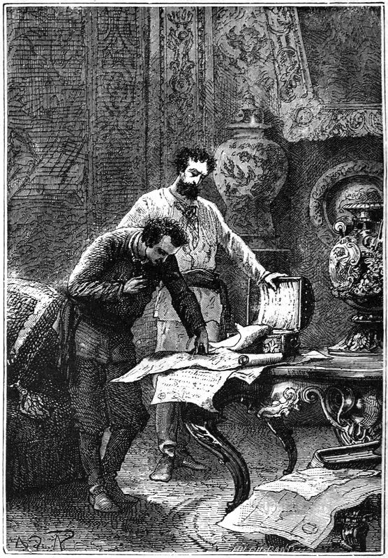
“Master has never been so generous,” answered Conseil.
And with that the good lad went away.
On January 2 we had covered 11,340 miles, or 5,250 leagues, since our starting point in the seas of Japan. Before the ram of the Nautilus stretched the dangerous waters of the Coral Sea, off the northeast coast of Australia. Our boat was running a few miles off that formidable bank on which Cook’s ships nearly came to grief on June 10, 1770. The vessel Cook was sailing struck a rock, and if she did not sink, it was thanks to the fact that the piece of coral broken off by the impact remained stuck in the gashed hull.

I would have dearly liked to visit this reef, 360 leagues long, against which the sea, always rough, broke with a formidable intensity comparable to the rolling of thunder. But at that moment the inclined planes of the Nautilus were taking us to a great depth, and I could see nothing of those high coral walls. I had to content myself with the various specimens of fish brought up by our nets. I noticed, among others, albacore, a kind of scombroid as big as tuna, with bluish sides striped with transverse bands that disappear when the animal dies. These fish accompanied us in schools and supplied our table with exceedingly delicate flesh. We also caught a great number of green sea bream, half a decimeter long, tasting like gilthead, and flying gurnards, true underwater swallows that on dark nights streak the air and water alternately with their phosphorescent gleams. Among the mollusks and zoophytes, I found in the meshes of the trawl various species of alcyonarians, sea urchins, hammer oysters, spur shells, sundial shells, ceriths, and hyalaeas. The flora was represented by fine floating algae, laminariae and macrocysts, soaked with the mucilage that oozed through their pores, among which I collected an admirable Nemastoma geliniaroides, which was classified among the natural curiosities of the museum.
Two days after crossing the Coral Sea, on January 4, we sighted the coasts of Papua. On this occasion Captain Nemo told me that he intended to reach the Indian Ocean by way of Torres Strait. His communication went no further. Ned was pleased to see that this route was bringing him closer to European seas.
Torres Strait is regarded as no less dangerous for the reefs that bristle in it than for the savage inhabitants who frequent its coasts. It separates from New Holland the great island of Papua, also called New Guinea.
Papua is four hundred leagues long and 130 leagues wide, with an area of forty thousand geographical leagues. It lies in latitude between 0° 19′ and 10° 2′ south, and in longitude between 128° 23′ and 146° 15′. At noon, while the first officer was taking the height of the sun, I saw the summits of the Arfak Mountains, rising in tiers and ending in sharp peaks.
This land, discovered in 1511 by the Portuguese Francisco Serrano, was visited successively by Don José de Meneses in 1526, by Grijalva in 1527, by the Spanish general Álvaro de Saavedra in 1528, by Juigo Ortez in 1545, by the Dutchman Schouten in 1616, by Nicolas Sruick in 1753, by Tasman, Dampier, Fumel, Carteret, Edwards, Bougainville, Cook, Forrest, and McCluer, by d’Entrecasteaux in 1792, by Duperrey in 1823, and by Dumont d’Urville in 1827. “It is the home of the Black peoples who occupy all of Malaysia,” M. de Rienzi has said, and I little suspected that the chances of this voyage were going to bring me face to face with the fearsome Andamans.
So the Nautilus appeared at the entrance of the most dangerous strait on the globe, one that the boldest navigators hardly dare to pass through, the strait that Luis Váez de Torres faced on his way back from the South Seas into Melanesia, and in which, in 1840, the stranded corvettes of Dumont d’Urville were on the point of being lost with all hands. The Nautilus itself, superior to all the dangers of the sea, was nevertheless about to make the acquaintance of the coral reefs.
Torres Strait is about thirty-four leagues wide, but it is obstructed by a countless number of islands, islets, breakers, and rocks that make navigating it almost impracticable. Consequently, Captain Nemo took every necessary precaution to cross it. The Nautilus, floating at the surface, advanced at a moderate pace. Its propeller, like a cetacean’s tail, beat the waves slowly.
Taking advantage of this situation, my two companions and I had taken our places on the platform, which was always deserted. Before us rose the helmsman’s cage, and unless I am very much mistaken, Captain Nemo must have been there, steering his Nautilus himself.
Before my eyes I had the excellent charts of Torres Strait surveyed and drawn up by the hydrographic engineer Vincendon-Dumoulin and Ensign Coupvent-Desbois—now an admiral—who were part of Dumont d’Urville’s staff during his last voyage around the world. These, along with those of Captain King, are the best charts for untangling the maze of this narrow passage, and I consulted them with scrupulous attention.
Around the Nautilus the sea was boiling furiously. The current of the flood tide, running from southeast to northwest at a speed of two and a half miles, broke on the corals whose heads emerged here and there.
“That’s a bad sea!” Ned Land said to me.
“Detestable, indeed,” I answered, “and hardly suited to a vessel like the Nautilus.”
“That damned captain,” the Canadian went on, “must be very sure of his course, for I see heads of coral there that would smash his hull to a thousand pieces if it so much as brushed them!”
Indeed, the situation was perilous, but the Nautilus seemed to glide as if by enchantment among these furious reefs. It did not exactly follow the course of the Astrolabe and the Zélée, which proved fatal to Dumont d’Urville. It bore farther north, skirted Murray Island, and came back to the southwest toward Cumberland Passage. I thought it was going to head straight into it when, going back up to the northwest, it made for Tound Island and the Mauvais Channel through a large number of little-known islands and islets.
I was already wondering whether Captain Nemo, reckless to the point of madness, meant to take his ship into the passage where Dumont d’Urville’s two corvettes ran aground, when, changing his heading a second time and cutting straight to the west, he made for Gueboroar Island.
It was then three in the afternoon. The flood was slackening, the tide being almost full. The Nautilus approached this island, which I can still see with its remarkable border of pandanus trees. We were skirting it at less than two miles.
Suddenly a shock threw me down. The Nautilus had just struck a reef, and it remained motionless, listing slightly to port.
When I got up, I saw Captain Nemo and his first officer on the platform. They were examining the ship’s situation, exchanging a few words in their incomprehensible idiom.
This was the situation. Two miles to starboard appeared Gueboroar Island, whose coast curved from north to west like an immense arm. To the south and east a few heads of coral were already showing, uncovered by the ebb. We had run aground at high tide, and in one of those seas where the tides are moderate, an unfortunate circumstance for refloating the Nautilus. However, the ship had not suffered in the least, so solidly was its hull built. But if it could neither sink nor split open, it ran a great risk of being fastened forever on these reefs, and then it would be all over with Captain Nemo’s submarine apparatus.
I was thinking this over when the captain, cool and calm, always master of himself, appearing neither moved nor annoyed, came over:
“An accident?” I said to him.
“No, an incident,” he answered me.
“But an incident,” I replied, “that will perhaps oblige you to become once more an inhabitant of those lands you are fleeing!”
Captain Nemo gave me a peculiar look and made a gesture of denial. It told me plainly enough that nothing would ever force him to set foot on a continent again. Then he said:
“Besides, Monsieur Aronnax, the Nautilus is not in distress. It will carry you yet among the marvels of the Ocean. Our voyage is only beginning, and I do not wish to deprive myself so soon of the honor of your company.”
“However, Captain Nemo,” I went on, without taking up the ironic turn of this sentence, “the Nautilus ran aground at high tide. Now, the tides are not strong in the Pacific, and if you cannot lighten the Nautilus—which seems impossible to me—I don’t see how it will be refloated.”
“The tides are not strong in the Pacific, you are right, Professor,” answered Captain Nemo, “but in Torres Strait there is still a difference of a meter and a half between the levels of high and low water. Today is January 4, and in five days the moon will be full. Now, I shall be very surprised if that obliging satellite does not raise these masses of water enough and render me a service that I wish to owe to it alone.”
This said, Captain Nemo, followed by his first officer, went back down inside the Nautilus. As for the vessel, it did not move anymore and stayed motionless, as if the coral polyps had already walled it in with their indestructible cement.
“Well, sir?” Ned Land said to me, coming up to me after the captain had left.
“Well, friend Ned, we shall quietly wait for the tide of the 9th, for it seems that the moon will be kind enough to float us off.”
“Just like that?”
“Just like that.”
“And this captain isn’t going to drop his anchors out to sea, put his engine on the chains, and do everything to haul himself off?”
“Since the tide will be enough!” Conseil answered simply.
The Canadian looked at Conseil, then shrugged his shoulders. It was the seaman in him speaking.
“Sir,” he replied, “you can believe me when I tell you that this piece of iron will never sail again either on or under the seas. It’s only good for selling by weight. So I think the time has come to give Captain Nemo the slip.”
“Friend Ned,” I answered, “I don’t despair of this valiant Nautilus as you do, and in four days we shall know where we stand with the tides of the Pacific. Besides, the advice to flee might be timely if we were in sight of the coasts of England or Provence, but in the waters of Papua it’s another matter, and there will always be time to come to that extremity if the Nautilus does not manage to get off, which I would consider a serious event.”
“But couldn’t we at least try out this ground?” Ned Land went on. “There’s an island. On that island there are trees. Under those trees, land animals, bearers of chops and roast beef, which I’d gladly take a few bites out of.”
“Here friend Ned is right,” said Conseil, “and I side with him. Couldn’t master get his friend Captain Nemo to take us ashore, if only so we don’t lose the habit of treading on the solid parts of our planet?”
“I can ask him,” I answered, “but he will refuse.”
“Let master take the chance,” said Conseil, “and we’ll know where we stand regarding the captain’s kindness.”
To my great surprise, Captain Nemo granted me the permission I asked for, and he did so with much grace and readiness, without even requiring me to promise to return aboard. But an escape across the lands of New Guinea would have been very perilous, and I would not have advised Ned Land to attempt it. It was better to be a prisoner aboard the Nautilus than to fall into the hands of the natives of Papua.
The skiff was put at our disposal for the next morning. I did not try to find out whether Captain Nemo would accompany us. I even thought that no man of the crew would be given to us, and that Ned Land alone would be in charge of steering the boat. Besides, the land was two miles away at most, and it was child’s play for the Canadian to steer this light skiff between the lines of reefs so fatal to large ships.
The next day, January 5, the skiff, its deck removed, was pulled from its socket and launched into the sea from the top of the platform. Two men were enough for this operation. The oars were in the boat, and we had only to take our places.
At eight o’clock, armed with guns and axes, we pushed off from the Nautilus. The sea was fairly calm. A light breeze was blowing from the land. Conseil and I, at the oars, rowed vigorously, and Ned steered through the narrow passages that the breakers left between them. The skiff handled well and moved along swiftly.
Ned Land could not contain his joy. He was a prisoner escaped from his prison, and he hardly thought that he would have to go back into it.
“Meat!” he kept repeating. “So we’re going to eat meat, and what meat! Real game! No bread, though! I’m not saying fish isn’t a good thing, but you mustn’t overdo it, and a piece of fresh venison, grilled over hot coals, will vary our usual fare nicely.”
“Glutton!” answered Conseil. “He’s making my mouth water.”
“It remains to be seen,” I said, “whether these forests are full of game, and whether the game isn’t of such a size that it could hunt the hunter itself.”
“Fine, Monsieur Aronnax,” answered the Canadian, whose teeth seemed to be sharpened like the edge of an ax, “but I’ll eat tiger, sirloin of tiger, if there’s no other quadruped on this island.”
“Friend Ned is getting worrying,” answered Conseil.
“Whatever it is,” Ned Land went on, “any animal with four legs and no feathers, or two legs with feathers, will be greeted by my first shot.”
“There!” I answered. “Master Land’s recklessness is going to start all over again!”
“Don’t be afraid, Monsieur Aronnax,” answered the Canadian, “and row hard! I don’t need twenty-five minutes to offer you a dish of my own making.”
At half past eight the skiff of the Nautilus ran gently aground on a sandy beach, after safely crossing the coral ring that surrounded Gueboroar Island.
I was rather deeply moved when I touched land. Ned Land tested the ground with his foot, as if to take possession of it. Yet it was only two months since we had become, in Captain Nemo’s phrase, the “passengers of the Nautilus,” that is, in reality, the prisoners of its commander.
In a few minutes we were a gunshot away from the coast. The ground was almost entirely madreporic, but certain dry stream beds, strewn with granite debris, showed that this island was due to a primordial formation. The whole horizon was hidden behind a curtain of admirable forests. Enormous trees, which sometimes reached two hundred feet in height, were joined to one another by garlands of creepers, true natural hammocks rocked by a light breeze. There were mimosas, ficus, casuarinas, teaks, hibiscus, pandanus, and palms, mixed in profusion, and in the shelter of their green vault, at the foot of their gigantic trunks, grew orchids, legumes, and ferns.
But without noticing all these fine specimens of the Papuan flora, the Canadian abandoned the pleasant for the useful. He spotted a coconut palm, knocked down a few of its fruits, broke them open, and we drank their milk and ate their meat with a satisfaction that was a protest against the usual fare of the Nautilus.
“Excellent!” said Ned Land.
“Exquisite!” answered Conseil.
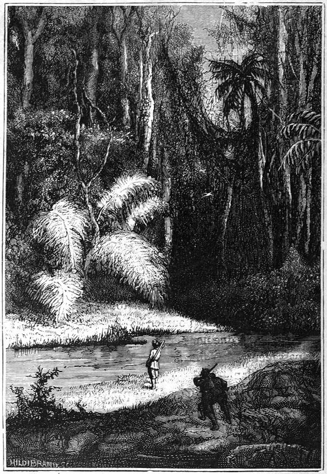
“And I don’t suppose,” said the Canadian, “that your Nemo will object to our bringing a cargo of coconuts aboard?”
“I don’t think so,” I answered, “but he won’t want to taste them!”
“So much the worse for him!” said Conseil.
“And so much the better for us!” retorted Ned Land. “There’ll be more left.”
“Just one word, Master Land,” I said to the harpooner, who was getting ready to ravage another coconut palm. “The coconut is a good thing, but before filling the skiff with them, it seems wise to me to find out whether the island produces some substance no less useful. Fresh vegetables would be welcome in the pantry of the Nautilus.”
“Master is right,” answered Conseil, “and I propose to reserve three places in our boat: one for fruit, another for vegetables, and the third for venison, of which I haven’t yet caught sight of the smallest sample.”
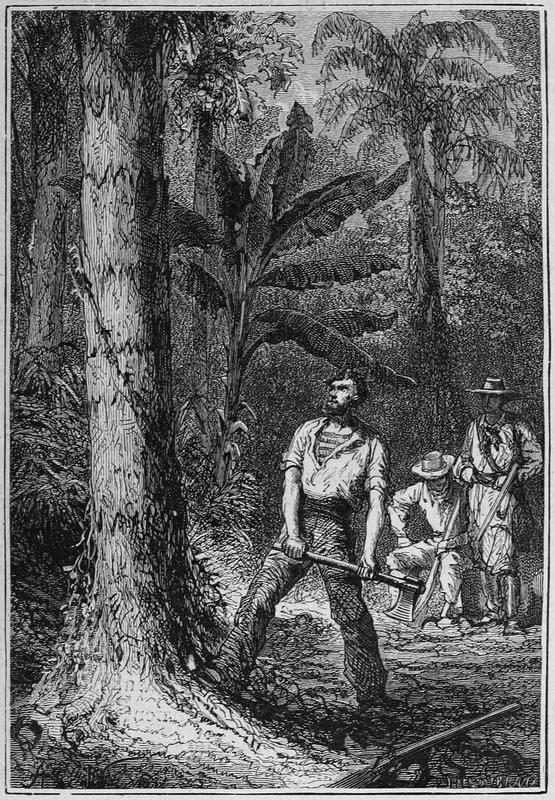
“Conseil, we mustn’t despair of anything,” answered the Canadian.
“Let’s go on with our excursion, then,” I went on, “but let’s keep our eyes open. Although the island seems uninhabited, it might nevertheless hold a few individuals who would be less particular than we are about the nature of the game!”
“Heh! Heh!” said Ned Land, with a very meaningful movement of his jaw.
“Why, Ned!” cried Conseil.
“My word,” retorted the Canadian, “I’m beginning to understand the charms of cannibalism!”
“Ned! Ned! What are you saying!” replied Conseil. “You, a cannibal! But I won’t be safe near you anymore, I who share your cabin! Am I to wake up one day half eaten?”
“Friend Conseil, I like you very much, but not enough to eat you without necessity.”
“I don’t trust it,” answered Conseil. “Let’s go hunting! We absolutely have to bring down some game to satisfy this cannibal, or else one of these mornings master will find nothing but pieces of servant to wait on him.”
While these various remarks were being exchanged, we were making our way under the dark vaults of the forest, and for two hours we went through it in every direction.
Chance served our search for edible plants as well as we could wish, and one of the most useful products of the tropical zones supplied us with a precious food that was lacking aboard.
I mean the breadfruit tree, very abundant on Gueboroar Island, and there I noticed mainly the seedless variety that bears the Malay name of “rima.”
This tree stood out from the other trees by its straight trunk, forty feet high. Its crown, gracefully rounded and formed of large, many-lobed leaves, was enough to point out to a naturalist’s eye this “artocarpus,” which has been very successfully naturalized in the Mascarene Islands. From its mass of greenery hung large globular fruits, a decimeter wide, covered on the outside with roughnesses arranged in a hexagonal pattern. A useful plant with which nature has favored the regions that lack wheat, and which, without requiring any cultivation, bears fruit for eight months of the year.
Ned Land knew these fruits well. He had already eaten them during his many voyages, and he knew how to prepare their edible substance. So the sight of them excited his appetite, and he could hold out no longer.
“Sir,” he said to me, “may I die if I don’t taste a little of this breadfruit dough!”
“Taste it, friend Ned, taste it as much as you like. We are here to make experiments; let’s make them.”
“It won’t take long,” answered the Canadian.
And with a lens he lit a fire of dead wood that crackled merrily. Meanwhile Conseil and I picked out the best fruits of the artocarpus. Some had not yet reached sufficient ripeness, and their thick skin covered a white but not very fibrous pulp. Others, in very great numbers, yellowish and gelatinous, were only waiting to be picked.
These fruits contained no pit. Conseil brought a dozen of them to Ned Land, who placed them on a fire of coals after cutting them into thick slices, and as he did so he kept repeating:
“You’ll see, sir, how good this bread is!”
“Especially when you’ve gone without it for a long time,” said Conseil.
“It isn’t even bread anymore,” added the Canadian. “It’s a delicate pastry. You’ve never eaten any, sir?”
“No, Ned.”
“Well, get ready to taste something delicious. If you don’t come back for more, I’m no longer the king of harpooners!”
After a few minutes, the part of the fruits exposed to the fire was completely charred. Inside appeared a white dough, a kind of soft crumb, whose flavor recalled that of the artichoke.
I must admit that this bread was excellent, and I ate it with great pleasure.
“Unfortunately,” I said, “such a dough can’t be kept fresh, and it seems useless to me to lay in a supply of it for the ship.”
“Not at all, sir!” cried Ned Land. “You’re talking like a naturalist, but I’m going to act like a baker. Conseil, gather a crop of these fruits, which we’ll pick up on our way back.”
“And how will you prepare them?” I asked the Canadian.
“By making a fermented dough from their pulp, which will keep indefinitely without spoiling. When I want to use it, I’ll bake it in the ship’s galley, and despite its slightly sour taste, you’ll find it excellent.”
“Then, Master Ned, I see that nothing is lacking to this bread.”
“Yes, there is, Professor,” answered the Canadian. “It lacks some fruit, or at least some vegetables!”
“Let’s look for fruit and vegetables.”
When our harvest was finished, we set off to complete this “land” dinner.
Our searches were not in vain, and toward noon we had laid in an ample supply of bananas. These delicious products of the torrid zone ripen all year round, and the Malays, who have given them the name of “pisang,” eat them without cooking them. Along with these bananas, we gathered enormous jackfruits with a very pronounced taste, tasty mangoes, and pineapples of an unbelievable size. But this harvest took up a great part of our time, which, besides, there was no reason to regret.
Conseil was still watching Ned. The harpooner walked ahead, and during his walk through the forest he gleaned with a sure hand excellent fruits that were to complete his supply.
“Well,” asked Conseil, “you don’t lack anything now, friend Ned?”
“Hm!” said the Canadian.
“What! You’re complaining?”
“All these plants can’t make a meal,” answered Ned. “It’s the end of a meal, it’s dessert. But the soup? But the roast?”
“Indeed,” I said, “Ned promised us chops, which seem very doubtful to me.”
“Sir,” answered the Canadian, “not only is the hunt not over, it hasn’t even begun. Patience! We’ll end up meeting some animal with feathers or fur, and if it isn’t in this place, it will be in another…”
“And if it isn’t today, it will be tomorrow,” added Conseil, “for we mustn’t go too far. I even propose that we go back to the skiff.”
“What! Already!” cried Ned.
“We must be back before nightfall,” I said.
“But what time is it, then?” asked the Canadian.
“Two o’clock at least,” answered Conseil.
“How time flies on solid ground!” cried Master Ned Land with a sigh of regret.
“Let’s go,” answered Conseil.
So we went back through the forest, and we completed our harvest with a raid on cabbage palms, which had to be picked from the tops of the trees, small beans that I recognized as the “abrou” of the Malays, and yams of superior quality.
We were overloaded when we reached the skiff. However, Ned Land did not yet find his supply sufficient. But fate favored him. Just as he was about to embark, he caught sight of several trees, twenty-five to thirty feet high, that belonged to the palm family. These trees, as precious as the artocarpus, are rightly counted among the most useful products of Malaysia.
They were sago palms, plants that grow without cultivation, reproducing, like mulberry trees, by their shoots and their seeds.
Ned Land knew how to deal with these trees. He took his ax and, wielding it with great vigor, soon laid on the ground two or three sago palms whose ripeness could be recognized by the white dust that powdered their fronds.
I watched him do it more with the eyes of a naturalist than with those of a hungry man. He began by removing from each trunk a strip of bark an inch thick, which covered a network of long fibers forming inextricable knots, bound together by a sort of gummy flour. This flour was sago, an edible substance that serves mainly as food for the Melanesian peoples.
For the moment Ned Land contented himself with cutting these trunks into pieces, as he would have done with firewood, intending to extract the flour later, pass it through a cloth to separate it from its fibrous strands, let its moisture evaporate in the sun, and leave it to harden in molds.
At last, at five in the evening, loaded with all our riches, we left the shore of the island, and half an hour later we came alongside the Nautilus. No one appeared at our arrival. The enormous iron cylinder seemed deserted. With the provisions taken aboard, I went down to my room. I found my supper ready there. I ate, then I fell asleep.
The next day, January 6, nothing new aboard. Not a sound inside, not a sign of life. The skiff had stayed alongside, in the very place where we had left it. We resolved to go back to Gueboroar Island. Ned Land hoped to be luckier than the day before from the hunter’s point of view and wanted to visit another part of the forest.
At sunrise we were on our way. The boat, carried by the flood tide running toward the shore, reached the island in a few moments.
We landed, and, thinking it better to rely on the Canadian’s instinct, we followed Ned Land, whose long legs threatened to leave us behind.
Ned Land went up the coast toward the west; then, fording a few stream beds, he reached the high plain bordered by admirable forests. A few kingfishers were prowling along the streams, but they would not let themselves be approached. Their wariness proved to me that these birds knew what to expect from bipeds of our species, and I concluded that if the island was not inhabited, human beings at least frequented it.
After crossing a fairly lush meadow, we came to the edge of a small wood enlivened by the song and flight of a great number of birds.
“They’re still only birds,” said Conseil.
“But some of them can be eaten!” answered the harpooner.
“Not at all, friend Ned,” replied Conseil, “for I see nothing there but ordinary parrots.”
“Friend Conseil,” Ned answered gravely, “the parrot is the pheasant of people who have nothing else to eat.”
“And I will add,” I said, “that this bird, properly prepared, is worth eating.”
Indeed, under the thick foliage of this wood, a whole world of parrots was fluttering from branch to branch, waiting only for a more careful education to speak human language. For the moment they were chattering in the company of parakeets of every color and grave cockatoos that seemed to be meditating some philosophical problem, while brilliant red lories passed like a piece of bunting carried off by the breeze, among hornbills with noisy flight, Papuan lorikeets painted in the finest shades of azure, and a whole variety of charming birds, but generally not very edible.
However, one bird peculiar to these lands, which has never gone beyond the limits of the Aru Islands and the Papuan islands, was missing from this collection. But fate had in store for me the chance to admire it before long.
After crossing a thicket of moderate density, we had come out again onto a plain cluttered with bushes. I then saw magnificent birds rise up, which the arrangement of their long feathers obliged to fly against the wind. Their undulating flight, the grace of their aerial curves, and the shimmer of their colors attracted and charmed the eye. I had no trouble recognizing them.
“Birds of paradise!” I cried.
“Order Passeriformes, section Clystomores,” answered Conseil.
“Partridge family?” asked Ned Land.
“I don’t think so, Master Land. Nevertheless, I’m counting on your skill to catch one of these charming products of tropical nature!”
“We’ll try, Professor, though I’m more used to handling a harpoon than a gun.”
The Malays, who carry on a large trade in these birds with the Chinese, have various means of catching them that we could not use. Sometimes they set snares at the tops of the tall trees that the birds of paradise prefer to inhabit. Sometimes they catch them with a tenacious birdlime that paralyzes their movements. They even go so far as to poison the springs where these birds usually drink. As for us, we were reduced to shooting them on the wing, which left us little chance of hitting them. And indeed we used up part of our ammunition in vain.
By about eleven in the morning, the first range of the mountains that form the center of the island had been crossed, and we had still killed nothing. Hunger was spurring us on. The hunters had counted on the proceeds of their hunt, and they had been wrong. Very fortunately, Conseil, to his great surprise, brought off a double shot and secured lunch. He brought down a white pigeon and a wood pigeon, which, quickly plucked and hung on a spit, roasted before a blazing fire of dead wood. While these interesting animals were cooking, Ned prepared some fruits of the artocarpus. Then the pigeon and the wood pigeon were devoured to the bone and declared excellent. The nutmeg they habitually gorge on perfumes their flesh and makes it delicious eating.
“It’s as if chickens fed on truffles,” said Conseil.
“And now, Ned, what do you lack?” I asked the Canadian.
“Four-legged game, Monsieur Aronnax,” answered Ned Land. “All these pigeons are only appetizers and snacks! So until I’ve killed an animal with chops, I won’t be content!”
“Nor I, Ned, if I don’t catch a bird of paradise.”
“Let’s go on with the hunt, then,” answered Conseil, “but heading back toward the sea. We’ve reached the first slopes of the mountains, and I think it’s better to get back to the region of the forests.”
It was sensible advice, and it was followed. After an hour’s walk we had reached a true forest of sago palms. A few harmless snakes fled from under our feet. The birds of paradise slipped away at our approach, and I truly despaired of reaching them when Conseil, who was walking ahead, suddenly bent down, gave a cry of triumph, and came back to me carrying a magnificent bird of paradise.
“Ah! Bravo, Conseil!” I cried.
“Master is very kind,” answered Conseil.
“Not at all, my boy. That was a masterstroke. To catch one of these birds alive, and to catch it by hand!”
“If master will examine it closely, he will see that I deserve little credit.”
“And why, Conseil?”
“Because this bird is as drunk as a lord.”
“Drunk?”
“Yes, master, drunk on the nutmegs it was devouring under the nutmeg tree where I caught it. Look, friend Ned, look at the monstrous effects of intemperance!”
“A thousand devils!” retorted the Canadian. “Considering how much gin I’ve drunk these two months, it’s hardly worth blaming me for it!”
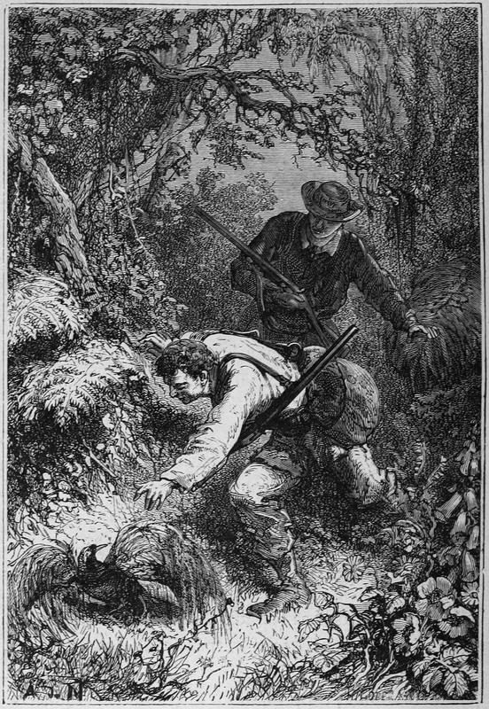
Meanwhile I was examining the curious bird. Conseil was not mistaken. The bird of paradise, intoxicated by the heady juice, had been rendered helpless. It could not fly. It could hardly walk. But this worried me little, and I let it sleep off its nutmegs.
This bird belonged to the most beautiful of the eight species found in Papua and the neighboring islands. It was the “great emerald” bird of paradise, one of the rarest. It measured three decimeters in length. Its head was relatively small, and its eyes, placed near the opening of the beak, were small as well. But it presented an admirable combination of shades, being yellow of beak, brown of feet and claws, hazel on the wings, which were purple at their tips, pale yellow on the head and the back of the neck, emerald at the throat, and chestnut brown on the belly and breast. Two horny, downy filaments rose above its tail, which was extended by long, very light feathers of admirable fineness, and they completed the whole of this marvelous bird, which the natives have poetically called “the bird of the sun.”
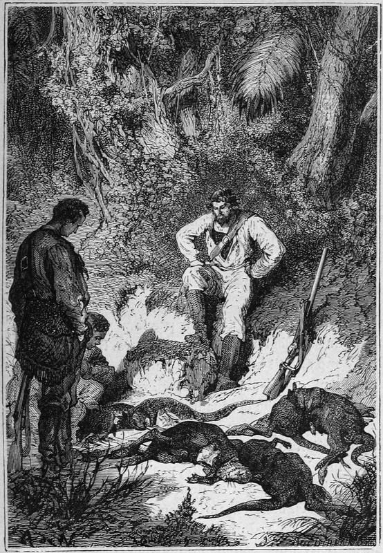
I very much wished I could bring this superb specimen of the birds of paradise back to Paris, to donate it to the Jardin des Plantes, which does not possess a single live one.
“So it’s very rare?” asked the Canadian, in the tone of a hunter who thinks very little of game from the point of view of art.
“Very rare, my good companion, and above all very hard to catch alive. And even dead, these birds are still the object of a large trade. So the natives have thought of manufacturing them, the way pearls or diamonds are manufactured.”
“What!” cried Conseil. “They make fake birds of paradise?”
“Yes, Conseil.”
“And does master know the natives’ method?”
“Perfectly. During the east monsoon, the birds of paradise lose the magnificent feathers around their tails, which naturalists have called subalar feathers. These are the feathers that the bird counterfeiters collect and skillfully attach to some poor parakeet that has first been mutilated. Then they dye the seam, varnish the bird, and ship these products of their peculiar industry to the museums and collectors of Europe.”
“Good!” said Ned Land. “If it isn’t the bird, it’s still its feathers, and as long as the thing isn’t meant to be eaten, I don’t see much harm in it!”
But if my wishes were satisfied by the possession of this bird of paradise, those of the Canadian hunter were not yet. Fortunately, toward two o’clock, Ned Land brought down a magnificent wild boar, of the kind the natives call “bari-outang.” The animal came just in time to provide us with real quadruped meat, and it was well received. Ned Land was very proud of his shot. The boar, hit by the electric bullet, had dropped stone dead.
The Canadian skinned it and gutted it neatly, after removing half a dozen chops meant to provide a grill for the evening meal. Then the hunt was resumed, and it was to be marked by further exploits on the part of Ned and Conseil.
Indeed, the two friends, beating the bushes, flushed a troop of kangaroos, which fled, bounding on their elastic legs. But these animals did not flee so fast that the electric capsule could not stop them in their tracks.
“Ah, Professor,” cried Ned Land, whom the hunter’s frenzy was going to his head, “what excellent game, stewed especially! What a supply for the Nautilus! Two! Three! Five down! And when I think that we’ll devour all this meat, and those fools aboard won’t get a crumb of it!”
I believe that in his excess of joy the Canadian, if he had not talked so much, would have massacred the whole band! But he contented himself with a dozen of these interesting marsupials, which form the first order of aplacental mammals—as Conseil told us.
These animals were small. They were a species of those “rabbit kangaroos” that usually lodge in hollow trees and are extremely swift; but if they are of modest size, they at least provide the most highly prized meat.
We were very satisfied with the results of our hunt. The cheerful Ned proposed to come back the next day to this enchanted island, which he wanted to clear of all its edible quadrupeds. But he did not reckon with events.
At six in the evening we had got back to the beach. Our skiff was aground in its usual place. The Nautilus, like a long reef, rose out of the waves two miles from the shore.
Ned Land, without further delay, took charge of the great business of dinner. He understood all this cooking admirably. The chops of “bari-outang,” grilled over the coals, soon gave off a delicious smell that perfumed the air!…
But I notice that I am following in the Canadian’s footsteps. Here I am in ecstasy over a grill of fresh pork! May I be forgiven, as I forgave Master Land, and for the same reasons!
In short, the dinner was excellent. Two wood pigeons completed this extraordinary menu. The sago paste, the bread of the artocarpus, a few mangoes, half a dozen pineapples, and the fermented liquor of certain coconuts put us in high spirits. I even believe that my worthy companions’ ideas were not quite as clear as one might wish.
“What if we didn’t go back to the Nautilus tonight?” said Conseil.
“What if we never went back?” added Ned Land.
At that moment a stone fell at our feet and cut short the harpooner’s proposal.
We had looked toward the forest without getting up, my hand stopping on its way to my mouth, Ned Land’s completing its task.
“A stone doesn’t fall from the sky,” said Conseil, “or else it deserves the name of meteorite.”
A second stone, carefully rounded, which knocked a tasty wood-pigeon leg out of Conseil’s hand, gave still more weight to his remark.
All three of us were up, guns at our shoulders, ready to answer any attack.
“Are they monkeys?” cried Ned Land.
“Nearly,” answered Conseil. “They’re savages.”
“To the skiff!” I said, heading for the sea.
Indeed, we had to beat a retreat, for some twenty natives, armed with bows and slings, were appearing at the edge of a thicket that hid the horizon on our right, barely a hundred paces away.
Our skiff was aground ten toises from us.
The savages were approaching, not running, but making the most hostile demonstrations. Stones and arrows were raining down.
Ned Land had not wanted to abandon his provisions, and despite the imminent danger, his pig on one side and his kangaroos on the other, he was scampering off with some speed.
In two minutes we were on the beach. Loading the skiff with the provisions and weapons, pushing it into the sea, and shipping the two oars was the work of an instant. We had not gone two cable lengths when a hundred savages, howling and gesticulating, waded into the water up to their waists. I looked to see whether their appearance would bring a few men of the Nautilus out onto the platform. But no. The enormous machine, lying offshore, remained absolutely deserted.
Twenty minutes later we were climbing aboard. The hatches were open. After making the skiff fast, we went back inside the Nautilus.
I went down to the drawing room, from which a few chords were coming. Captain Nemo was there, bent over his organ and plunged in a musical ecstasy.
“Captain!” I said to him.
He did not hear me.
“Captain!” I said again, touching him with my hand.
He shuddered, and turning around:
“Ah, it’s you, Professor?” he said to me. “Well! Did you have good hunting? Did you botanize successfully?”
“Yes, Captain,” I answered, “but unfortunately we have brought back a troop of bipeds whose proximity seems worrying to me.”
“What bipeds?”
“Savages.”
“Savages!” answered Captain Nemo in an ironic tone. “And you are surprised, Professor, that having set foot on one of the lands of this globe, you find savages there? Savages—where are there none? And besides, are they worse than the others, those you call savages?”
“But, Captain…”
“For my part, sir, I have met them everywhere.”
“Well,” I answered, “if you don’t want to receive any aboard the Nautilus, you would do well to take some precautions.”
“Set your mind at rest, Professor; there is nothing there to worry about.”
“But these natives are numerous.”
“How many did you count?”
“A hundred, at least.”
“Monsieur Aronnax,” answered Captain Nemo, whose fingers had returned to the keys of the organ, “if all the natives of Papua were gathered on that beach, the Nautilus would have nothing to fear from their attacks!”
The captain’s fingers were then running over the keyboard of the instrument, and I noticed that he struck only the black keys, which gave his melodies an essentially Scottish color. Soon he had forgotten my presence and was plunged in a reverie that I no longer tried to dispel.
I went back up onto the platform. Night had already fallen, for in this low latitude the sun sets quickly and without twilight. I could now see Gueboroar Island only dimly. But numerous fires lit on the beach showed that the natives had no intention of leaving it.
I remained alone like this for several hours, sometimes thinking of these natives—but without fearing them otherwise, for the captain’s imperturbable confidence was winning me over—sometimes forgetting them to admire the splendors of this tropical night. My thoughts flew toward France, following those zodiacal stars that would light it a few hours later. The moon was shining in the midst of the constellations at the zenith. I then thought that this faithful and obliging satellite would come back to this same place the day after tomorrow to raise these waters and tear the Nautilus from its bed of coral. Toward midnight, seeing that all was quiet on the darkened waves as well as under the trees on the shore, I went back to my cabin and fell peacefully asleep.
The night passed without mishap. The Papuans were no doubt frightened by the mere sight of the monster stranded in the bay, for the hatches, which had been left open, would have given them easy access to the inside of the Nautilus.
At six in the morning—January 8—I went back up onto the platform. The shadows of morning were lifting. Through the dissolving mists, the island soon showed its beaches first, then its summits.
The natives were still there, more numerous than the day before—five or six hundred, perhaps. Some, taking advantage of low tide, had come out onto the heads of coral, less than two cable lengths from the Nautilus. I could make them out easily. They were indeed true Papuans, of athletic build, men of a fine race, with broad, high foreheads, large but not flattened noses, and white teeth. Their woolly hair, dyed red, stood out against bodies as black and glossy as those of the Nubians. From the lobes of their ears, cut and stretched, hung strings of bone beads. These savages were generally naked. Among them I noticed a few women, dressed from hip to knee in a veritable crinoline of grass held up by a belt of plants. Some chiefs had adorned their necks with a crescent and necklaces of red and white glass beads. Almost all, armed with bows, arrows, and shields, carried on their shoulders a sort of net holding those rounded stones that their slings hurl so skillfully.
One of these chiefs, fairly close to the Nautilus, was examining it attentively. He must have been a “mado” of high rank, for he was draped in a mat of banana leaves, notched at the edges and set off with brilliant colors.
I could easily have shot this native, who was within short range; but I thought it better to wait for truly hostile demonstrations. Between Europeans and savages, it is fitting that the Europeans should return fire and not attack.
For the whole time of low tide, these natives prowled near the Nautilus, but they were not noisy. I heard them often repeat the word “assai,” and from their gestures I understood that they were inviting me to go ashore, an invitation I thought I ought to decline.
So that day the skiff did not leave the ship, to the great displeasure of Master Land, who could not complete his provisions. The skillful Canadian spent his time preparing the meat and flour he had brought back from Gueboroar Island. As for the savages, they went back to land toward eleven in the morning, as soon as the heads of coral began to disappear under the rising tide. But I saw their number increase considerably on the beach. They were probably coming from the neighboring islands or from Papua proper. However, I had not seen a single native canoe.
Having nothing better to do, I thought of dredging these fine clear waters, which revealed shells, zoophytes, and open-sea plants in profusion. It was, moreover, the last day the Nautilus was to spend in these waters, if, that is, it floated at high tide the next day, as Captain Nemo had promised.
So I called Conseil, who brought me a small, light dredge, much like the ones used for fishing oysters.
“What about those savages?” Conseil asked me. “If master doesn’t mind my saying so, they don’t seem very wicked to me!”
“They are cannibals all the same, my boy.”
“A man can be a cannibal and a decent fellow,” answered Conseil, “just as a man can be a glutton and honest. The one doesn’t exclude the other.”
“All right, Conseil, I grant you that they are honest cannibals and that they devour their prisoners honestly. However, since I have no wish to be devoured, even honestly, I shall stay on my guard, for the commander of the Nautilus does not seem to be taking any precautions. And now to work.”
For two hours our fishing was actively carried on, but without bringing up any rarities. The dredge filled with Midas ear shells, harp shells, melanias, and especially the finest hammer oysters I had seen until that day. We also caught a few sea cucumbers, pearl oysters, and a dozen small turtles, which were set aside for the ship’s pantry.
But just when I least expected it, I laid my hand on a marvel, I should say on a natural deformity, very rarely met with. Conseil had just made a cast with the dredge, and his apparatus was coming up loaded with various rather ordinary shells when, all of a sudden, he saw me plunge my arm quickly into the net, pull out a shell, and give a conchologist’s cry, that is, the most piercing cry a human throat can produce.
“Why, what’s the matter with master?” asked Conseil, very surprised. “Has master been bitten?”
“No, my boy, and yet I would gladly have paid a finger for my discovery!”
“What discovery?”
“This shell,” I said, showing the object of my triumph.
“But it’s just a porphyry olive, genus Oliva, order Pectinibranchia, class Gastropoda, branch Mollusca…”
“Yes, Conseil, but instead of coiling from right to left, this olive turns from left to right!”
“Is it possible!” cried Conseil.
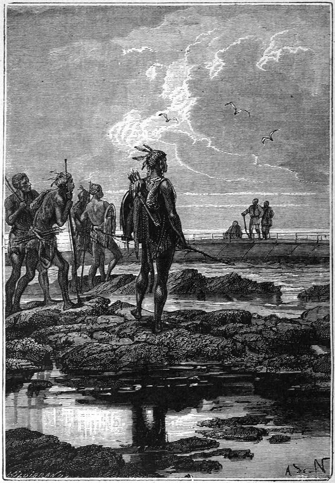
“Yes, my boy, it’s a left-handed shell!”
“A left-handed shell!” Conseil repeated, his heart pounding.
“Look at its spire!”
“Ah, master may believe me,” said Conseil, taking the precious shell in a trembling hand, “but I have never felt such emotion!”
And there was reason to be moved! It is well known, as naturalists have pointed out, that right-handedness is a law of nature. The stars and their satellites, in their motions of revolution and rotation, move from right to left. Man uses his right hand more often than his left, and consequently his instruments and devices—staircases, locks, watch springs, and so on—are designed to be used from right to left. Now, nature has generally followed this law in the coiling of its shells. They are all right-handed, with rare exceptions, and when by chance their spire is left-handed, collectors pay their weight in gold for them.

So Conseil and I were plunged in the contemplation of our treasure, and I was promising myself to enrich the Museum with it, when a stone, unluckily thrown by a native, shattered the precious object in Conseil’s hand.
I gave a cry of despair! Conseil seized my gun and aimed at a savage who was swinging his sling ten meters away from him. I tried to stop him, but his shot went off and broke the bracelet of amulets hanging from the native’s arm.
“Conseil!” I cried. “Conseil!”
“What! Doesn’t master see that this cannibal started the attack?”
“A shell is not worth a man’s life!” I said to him.
“Ah, the scoundrel!” cried Conseil. “I’d rather he had broken my shoulder!”
Conseil was sincere, but I did not share his opinion. However, the situation had changed in the last few moments, and we had not noticed it. Some twenty canoes now surrounded the Nautilus. These canoes, hollowed out of tree trunks, long, narrow, and well designed for speed, were balanced by means of a double bamboo outrigger that floated on the surface of the water. They were handled by skillful, half-naked paddlers, and I did not watch them advance without uneasiness.
It was evident that these Papuans had already had dealings with Europeans and knew their ships. But this long iron cylinder stretched out in the bay, without masts or funnel—what must they think of it? Nothing good, for at first they had kept at a respectful distance. However, seeing it motionless, they were gradually regaining confidence and trying to become familiar with it. Now, it was precisely this familiarity that had to be prevented. Our weapons, which made no report, could have only a modest effect on these natives, who respect only noisy devices. Lightning without the rolling of thunder would frighten men little, although the danger lies in the flash, not in the noise.
At that moment the canoes came closer to the Nautilus, and a cloud of arrows fell on it.
“The devil! It’s hailing!” said Conseil. “And maybe poisoned hail!”
“We must warn Captain Nemo,” I said, going back in through the hatch.
I went down to the drawing room. I found no one there. I ventured to knock at the door that opened onto the captain’s room.
A “Come in” answered me. I went in and found Captain Nemo plunged in a calculation in which x’s and other algebraic signs were not lacking.
“Am I disturbing you?” I said out of politeness.
“You are, Monsieur Aronnax,” the captain answered me, “but I imagine you have serious reasons for seeing me?”
“Very serious. The natives’ canoes are surrounding us, and in a few minutes we shall certainly be assailed by several hundred savages.”
“Ah!” said Captain Nemo calmly. “They have come with their canoes?”
“Yes, sir.”
“Well, sir, it is enough to close the hatches.”
“Precisely, and I came to tell you…”
“Nothing could be easier,” said Captain Nemo.
And, pressing an electric button, he transmitted an order to the crew’s quarters.
“It is done, sir,” he said to me after a few moments. “The skiff is in place and the hatches are closed. I don’t imagine you fear that these gentlemen will break through walls that the shells of your frigate could not even dent?”
“No, Captain, but there is still a danger.”
“What is that, sir?”
“It is that tomorrow, at this same hour, the hatches will have to be opened again to renew the air of the Nautilus…”
“Unquestionably, sir, since our vessel breathes in the manner of cetaceans.”
“Now, if at that moment the Papuans are occupying the platform, I don’t see how you will be able to keep them from coming in.”
“So, sir, you suppose they will come aboard?”
“I am certain of it.”
“Well, sir, let them come aboard. I see no reason to stop them. At bottom they are poor devils, these Papuans, and I do not want my visit to Gueboroar Island to cost the life of a single one of these unfortunates!”
This said, I was about to withdraw; but Captain Nemo held me back and invited me to sit down beside him. He questioned me with interest about our excursions ashore and our hunting, and did not seem to understand the need for meat that so obsessed the Canadian. Then the conversation touched on various subjects, and, without being more communicative, Captain Nemo showed himself more amiable.
Among other things, we came to speak of the situation of the Nautilus, stranded precisely in this strait where Dumont d’Urville nearly came to grief. Then, on that subject:
“He was one of your great seamen,” the captain said to me, “one of your most intelligent navigators, that d’Urville! He is your Captain Cook, for you French. Unfortunate scientist! To have braved the ice floes of the South Pole, the corals of Oceania, and the cannibals of the Pacific, only to perish miserably in a railway train! If that energetic man was able to think during the last seconds of his life, can you imagine what his final thoughts must have been!”
As he spoke, Captain Nemo seemed moved, and I count this emotion to his credit.
Then, chart in hand, we went over the work of the French navigator: his voyages around the world, his double attempt on the South Pole, which led to the discovery of Adélie Land and Louis Philippe Land, and finally his hydrographic surveys of the principal islands of Oceania.
“What your d’Urville did on the surface of the seas,” Captain Nemo said to me, “I have done inside the Ocean, and more easily and more completely than he. The Astrolabe and the Zélée, constantly tossed about by hurricanes, could not compare with the Nautilus, a quiet study, truly stationary in the midst of the waters!”
“However, Captain,” I said, “there is one point of resemblance between Dumont d’Urville’s corvettes and the Nautilus.”
“What is that, sir?”
“That the Nautilus has run aground as they did!”
“The Nautilus has not run aground, sir,” Captain Nemo answered me coldly. “The Nautilus is made to rest on the bed of the seas, and the laborious work and maneuvers that refloating his corvettes forced on d’Urville, I shall not undertake. The Astrolabe and the Zélée nearly perished, but my Nautilus runs no danger. Tomorrow, on the appointed day, at the appointed hour, the tide will lift it peacefully, and it will resume its navigation across the seas.”
“Captain,” I said, “I don’t doubt…”
“Tomorrow,” added Captain Nemo, getting up, “tomorrow, at 2:40 in the afternoon, the Nautilus will float and leave Torres Strait undamaged.”
Having spoken these words in a very curt tone, Captain Nemo bowed slightly. It was a dismissal, and I went back to my room.
There I found Conseil, who wanted to know the result of my interview with the captain.
“My boy,” I answered, “when I seemed to think his Nautilus was threatened by the natives of Papua, the captain answered me very ironically. So I have only one thing to tell you: have confidence in him and go to sleep in peace.”
“Master has no need of my services?”
“No, my friend. What is Ned Land doing?”
“If master will excuse me,” answered Conseil, “friend Ned is making a kangaroo pie that will be a marvel!”
I was left alone. I went to bed, but I slept rather badly. I heard the noise of the savages stamping on the platform and giving deafening cries. The night passed like this, without the crew stirring from its usual inertia. It was no more worried by the presence of these cannibals than the soldiers in an armored fort are troubled by the ants running over its armor.
At six in the morning I got up. The hatches had not been opened. So the air inside had not been renewed, but the tanks, kept filled for any emergency, came into play at the right time and released a few cubic meters of oxygen into the depleted atmosphere of the Nautilus.
I worked in my room until noon without seeing Captain Nemo even for a moment. No preparations for departure seemed to be under way aboard.
I waited a while longer, then went to the large drawing room. The clock said half past two. In ten minutes the tide would reach its maximum height, and if Captain Nemo had not made a rash promise, the Nautilus would be freed at once. If not, many months would pass before it could leave its bed of coral.
However, a few warning tremors were soon felt in the hull of the boat. I heard the limestone roughness of the coral bottom grinding against its plating.
At 2:35 Captain Nemo appeared in the drawing room.
“We are about to leave,” he said.
“Ah!” I said.
“I have given the order to open the hatches.”
“And the Papuans?”
“The Papuans?” answered Captain Nemo, with a slight shrug of his shoulders.
“Won’t they get inside the Nautilus?”
“And how?”
“By coming through the hatches you will have had opened.”
“Monsieur Aronnax,” Captain Nemo answered calmly, “one does not enter the Nautilus through its hatches like that, even when they are open.”
I looked at the captain.
“You don’t understand?” he said to me.
“Not at all.”
“Well, come and you will see.”
I headed for the central staircase. There Ned Land and Conseil, very intrigued, were watching a few men of the crew opening the hatches, while cries of rage and frightful shouting rang outside.
The hatch covers were folded back outward. Twenty horrible faces appeared. But the first of these natives who put his hand on the stair rail, thrown back by I know not what invisible force, fled, giving dreadful cries and leaping about wildly.
Ten of his companions followed him. Ten met the same fate.
Conseil was in ecstasy. Ned Land, carried away by his violent instincts, rushed up the stairs. But as soon as he had seized the rail with both hands, he was knocked down in his turn.
“A thousand devils!” he cried. “I’ve been struck by lightning!”
That word explained everything to me. It was no longer a rail, but a metal cable, fully charged with the ship’s electricity, that ran up to the platform. Whoever touched it felt a formidable shock—and that shock would have been fatal if Captain Nemo had sent the full current of his apparatus into the conductor! It can truly be said that between his assailants and himself he had stretched an electric net that no one could cross with impunity.
Meanwhile the terrified Papuans had beaten a retreat, mad with terror. As for us, half laughing, we were consoling and rubbing the unfortunate Ned Land, who was swearing like a man possessed.
But at that moment the Nautilus, lifted by the last swells of the tide, left its bed of coral at exactly the fortieth minute fixed by the captain. Its propeller beat the waters with majestic slowness. Its speed gradually increased, and, sailing on the surface of the Ocean, it left the dangerous passages of Torres Strait safe and sound.

The next day, January 10, the Nautilus resumed its course beneath the surface, but at a remarkable speed that I cannot estimate at less than thirty-five miles an hour. The propeller turned so fast that I could neither follow its revolutions nor count them.
When I thought that this marvelous electric agent, after giving the Nautilus motion, heat, and light, also protected it against attacks from outside and turned it into a holy ark that no profaner could touch without being struck down, my admiration knew no bounds, and from the apparatus it rose at once to the engineer who had created it.
We were heading due west, and on January 11 we rounded Cape Wessel, located at 135° longitude and 10° north latitude, which forms the eastern point of the Gulf of Carpentaria. The reefs were still numerous but more scattered, and they were marked on the chart with extreme precision. The Nautilus easily avoided the Money breakers to port and the Victoria reefs to starboard, located at 130° longitude, on the tenth parallel, which we were following strictly.
On January 13 Captain Nemo, having reached the Timor Sea, sighted the island of that name at 122° longitude. This island, whose area is 1,625 square leagues, is governed by rajahs. These princes call themselves sons of crocodiles, that is, descended from the highest origin to which a human being can lay claim. And so these scaly ancestors abound in the island’s rivers and are the object of special veneration. They are protected, pampered, flattered, and fed; young girls are offered to them as food, and woe to the stranger who lays a hand on these sacred lizards.
But the Nautilus had nothing to do with these nasty animals. Timor was visible only for a moment, at noon, while the first officer was taking our position. Likewise I only glimpsed the little island of Roti, which belongs to the group and whose women have a well-established reputation for beauty in the Malay markets.
From this point, the heading of the Nautilus bent toward the southwest. The bow was pointed at the Indian Ocean. Where would Captain Nemo’s fancy take us? Would he go up toward the coasts of Asia? Would he draw closer to the shores of Europe? Unlikely decisions on the part of a man who fled inhabited continents! Would he then go down toward the south? Would he round the Cape of Good Hope, then Cape Horn, and push on to the Antarctic pole? Would he finally return to his Pacific seas, where his Nautilus found easy and independent navigation? The future would tell us.
After running along the Cartier, Hibernia, Seringapatam, and Scott reefs, the last efforts of the solid element against the liquid element, on January 14 we were beyond all land. The speed of the Nautilus was considerably reduced, and, very capricious in its movements, it now swam beneath the waters, now floated on their surface.
During this period of the voyage, Captain Nemo made interesting experiments on the various temperatures of the sea in different layers. Under ordinary conditions these readings are obtained by means of rather complicated instruments whose reports are doubtful at best, whether thermometric sounding lines, whose glass often breaks under the pressure of the water, or devices based on the variation in the resistance of metals to electric currents. Results obtained in this way cannot be adequately checked. Captain Nemo, on the contrary, went himself to seek this temperature in the depths of the sea, and his thermometer, placed in contact with the various liquid layers, gave him the desired degree immediately and reliably.
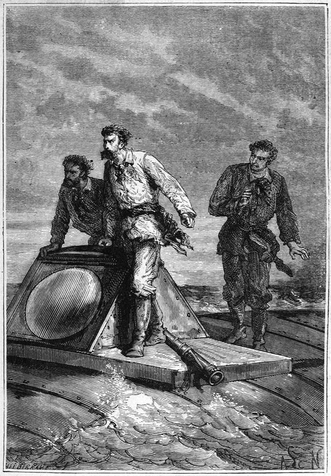
Thus, either by overloading its tanks or by descending obliquely by means of its inclined planes, the Nautilus successively reached depths of three, four, five, seven, nine, and ten thousand meters, and the final result of these experiments was that the sea had a permanent temperature of four and a half degrees at a depth of a thousand meters in all latitudes.
I followed these experiments with the keenest interest. Captain Nemo brought real passion to them. I often wondered for what purpose he was making these observations. Was it for the benefit of his fellow men? That was not likely, for sooner or later his work would perish with him in some unknown sea! Unless he meant the results of his experiments for me. But that was to assume that my strange voyage would have an end, and that end I could not yet see.
Be that as it may, Captain Nemo also told me various figures he had obtained that established the relative densities of the water in the principal seas of the globe. From this communication I drew a personal lesson that had nothing scientific about it.
It was during the morning of January 15. The captain, with whom I was walking on the platform, asked me whether I knew the different densities of seawater. I answered no, and added that science lacked rigorous observations on this subject.
“I have made those observations,” he said to me, “and I can vouch for their certainty.”
“Good,” I answered, “but the Nautilus is a world apart, and the secrets of its scientists do not reach the land.”
“You are right, Professor,” he said to me after a few moments of silence. “It is a world apart. It is as foreign to the earth as the planets that accompany this globe around the sun, and no one will ever know the work of the scientists of Saturn or Jupiter. However, since chance has linked our two existences, I can share the results of my observations with you.”
“I am listening, Captain.”
“You know, Professor, that seawater is denser than fresh water, but this density is not uniform. Indeed, if I represent the density of fresh water by one, I find one and twenty-eight thousandths for the waters of the Atlantic, one and twenty-six thousandths for the waters of the Pacific, one and thirty thousandths for the waters of the Mediterranean…”
“Ah!” I thought. “So he ventures into the Mediterranean?”
“One and eighteen thousandths for the waters of the Ionian Sea, and one and twenty-nine thousandths for the waters of the Adriatic.”
Decidedly, the Nautilus did not shun the busy seas of Europe, and I concluded that it would bring us back—perhaps before long—toward more civilized continents. I thought Ned Land would learn of this detail with a very natural satisfaction.
For several days our time was spent in experiments of every kind, on the degree of saltiness of the water at different depths, its electrification, its coloring, and its transparency, and in all these circumstances Captain Nemo displayed an ingenuity equaled only by his graciousness toward me. Then for a few days I did not see him again, and I remained once more as if isolated aboard his ship.
On January 16 the Nautilus seemed to fall asleep only a few meters below the surface of the waves. Its electric apparatus was not working, and its motionless propeller let it drift with the currents. I supposed the crew was busy with interior repairs required by the violence of the engine’s mechanical movements.
My companions and I then witnessed a curious spectacle. The panels of the drawing room were open, and since the beacon of the Nautilus was not on, a vague darkness reigned in the midst of the waters. The stormy sky, covered with thick clouds, gave the top layers of the Ocean only insufficient light.
I was observing the state of the sea under these conditions, and the largest fish appeared to me only as barely outlined shadows, when the Nautilus was suddenly carried into full light. At first I thought the beacon had been relit and was projecting its electric brilliance into the liquid mass. I was mistaken, and after a quick observation I recognized my error.
The Nautilus was floating in the midst of a phosphorescent layer that became dazzling in this darkness. It was produced by myriads of luminous animalcules, whose sparkling increased as they slid over the metal hull of the apparatus. I then caught flashes in the midst of these luminous sheets, like streams of molten lead in a blazing furnace, or metal masses heated to white heat; so that, by contrast, certain luminous portions cast shadows in this fiery medium, from which all shadow seemed bound to be banished. No! It was no longer the calm radiance of our usual lighting! There was an unusual vigor and movement there! You could feel that this light was alive!
Indeed, it was an infinite cluster of open-sea infusoria, of miliary noctilucae, true globules of transparent jelly fitted with a threadlike tentacle, of which as many as twenty-five thousand have been counted in thirty cubic centimeters of water. And their light was doubled again by the gleams peculiar to jellyfish, starfish, aureliae, date piddocks, and other phosphorescent zoophytes, soaked with the grease of organic matter decomposed by the sea, and perhaps with the mucus secreted by fish.
For several hours the Nautilus floated in these brilliant waves, and our admiration grew as we watched the large sea animals playing there like salamanders. There, in the midst of this fire that does not burn, I saw elegant, swift porpoises, the tireless clowns of the seas, and sailfish three meters long, intelligent forerunners of hurricanes, whose formidable swords sometimes struck the pane of the drawing room. Then smaller fish appeared: various triggerfish, leaping scomberoids, wolf unicornfish, and a hundred others that streaked the luminous atmosphere as they raced through it.
This dazzling spectacle was an enchantment! Perhaps some atmospheric condition was increasing the intensity of the phenomenon? Perhaps some storm was raging on the surface of the waves? But at this depth of a few meters the Nautilus did not feel its fury, and it rocked peacefully in the midst of the calm waters.
So we went on, ceaselessly charmed by some new marvel. Conseil observed and classified his zoophytes, his articulates, his mollusks, and his fishes. The days slipped by rapidly, and I no longer counted them. Ned, as was his habit, tried to vary the usual fare aboard. True snails, we had grown used to our shell, and I declare that it is easy to become a perfect snail.
So this existence seemed easy and natural to us, and we no longer imagined that a different life existed on the surface of the terrestrial globe, when an event came to remind us of the strangeness of our situation.
On January 18 the Nautilus was at 105° longitude and 15° south latitude. The weather was threatening, the sea rough and heavy. A strong wind was blowing from the east. The barometer, which had been falling for a few days, announced an approaching struggle of the elements.
I had gone up onto the platform just as the first officer was taking his measurements of hour angles. I was waiting, as usual, for the daily sentence to be spoken. But that day it was replaced by another sentence, no less incomprehensible. Almost at once I saw Captain Nemo appear, his eyes, armed with a spyglass, turned toward the horizon.
For a few minutes the captain remained motionless, never leaving the point enclosed in the field of his lens. Then he lowered his spyglass and exchanged a few words with his first officer. The latter seemed to be in the grip of an emotion he was trying in vain to contain. Captain Nemo, more master of himself, remained cool. He seemed, moreover, to be raising certain objections, to which the first officer replied with firm assurances. At least, that is how I understood it from the difference in their tone and their gestures.
For my part, I had looked carefully in the direction they were observing, without seeing anything. Sky and water merged along a perfectly sharp horizon line.
Meanwhile Captain Nemo was pacing from one end of the platform to the other without looking at me, perhaps without seeing me. His step was firm but less regular than usual. Sometimes he stopped and, arms folded on his chest, observed the sea. What could he be looking for in this immense space? The Nautilus was then a few hundred miles from the nearest coast!
The first officer had taken up his spyglass again and was stubbornly searching the horizon, coming and going and stamping his foot, his nervous agitation contrasting with his chief’s manner.
Besides, this mystery was bound to be cleared up, and before long, for at an order from Captain Nemo the engine, increasing its propulsive power, made the propeller turn faster.
At that moment the first officer again drew the captain’s attention. The captain stopped pacing and pointed his spyglass at the spot indicated. He observed it for a long time. For my part, very seriously intrigued, I went down to the drawing room and brought back an excellent telescope I generally used. Then, resting it on the beacon housing that projected from the forward part of the platform, I got ready to sweep the whole line of sky and sea.
But my eye had not yet touched the eyepiece when the instrument was snatched from my hands.
I turned around. Captain Nemo was in front of me, but I did not recognize him. His face was transfigured. His eyes, glowing with a dark fire, were hidden under his frowning brows. His teeth were half bared. His rigid body, his clenched fists, his head drawn in between his shoulders, all bore witness to the violent hatred that his whole person breathed. He did not move. My telescope, fallen from his hand, had rolled to his feet.
Had I, without meaning to, provoked this attitude of anger? Did this incomprehensible person imagine that I had discovered some secret forbidden to the guests of the Nautilus?
No! I was not the object of this hatred, for he was not looking at me, and his eye stayed stubbornly fixed on that impenetrable point of the horizon.
At last Captain Nemo regained his self-control. His face, so deeply altered, resumed its usual calm. He addressed a few words in the foreign language to his first officer, then turned back to me.
“Monsieur Aronnax,” he said to me in a rather imperious tone, “I require you to observe one of the commitments that bind you to me.”
“What is it, Captain?”
“You and your companions must let yourselves be shut up until such time as I judge it fitting to give you back your freedom.”
“You are the master,” I answered him, looking him straight in the eye. “But may I ask you a question?”
“None, sir.”
At that word I had nothing to discuss, only to obey, since any resistance would have been impossible.
I went down to the cabin occupied by Ned Land and Conseil and told them of the captain’s decision. I leave you to imagine how the Canadian received this communication. Besides, there was no time for any explanation. Four men of the crew were waiting at the door, and they led us to the cell where we had spent our first night aboard the Nautilus.
Ned Land tried to protest, but the door closed on him by way of answer.
“Will master tell me what this means?” Conseil asked me.
I told my companions what had happened. They were as astonished as I was, but no wiser.
Meanwhile I was plunged in an abyss of reflections, and the strange apprehension on Captain Nemo’s face never left my thoughts. I was incapable of putting two logical ideas together, and I was losing myself in the most absurd hypotheses, when I was pulled out of my concentration by these words of Ned Land’s:
“Look! Breakfast is served!”
Indeed, the table was laid. It was evident that Captain Nemo had given this order at the same time as he had the Nautilus speed up.
“Will master allow me to make a recommendation?” Conseil asked me.
“Yes, my boy,” I answered.
“Well, let master eat his breakfast. It’s prudent, for we don’t know what may happen.”
“You’re right, Conseil.”
“Unfortunately,” said Ned Land, “they’ve only given us the ship’s menu.”
“Friend Ned,” replied Conseil, “what would you say if there had been no breakfast at all!”
This argument cut short the harpooner’s recriminations.
We sat down at the table. The meal passed rather silently. I ate little. Conseil “forced himself,” still out of prudence, and Ned Land, whatever he felt, did not miss a bite. Then, breakfast over, each of us settled back in his corner.
At that moment the luminous globe that lit the cell went out and left us in deep darkness. Ned Land soon fell asleep, and, what surprised me, Conseil too gave way to a heavy drowsiness. I was wondering what could have caused this overpowering need for sleep in him when I felt my brain become soaked in a thick torpor. My eyes, which I wanted to keep open, closed in spite of me. I was in the grip of a painful hallucination. Evidently, sleeping drugs had been mixed into the food we had just eaten! So prison was not enough to hide Captain Nemo’s plans from us; sleep was needed as well!
I then heard the hatches close again. The undulations of the sea, which had caused a slight rolling motion, ceased. Had the Nautilus left the surface of the Ocean, then? Had it gone back into the motionless layer of the waters?
I tried to resist sleep. It was impossible. My breathing grew weaker. I felt a deathly cold freezing my heavy limbs, which seemed paralyzed. My eyelids, true caps of lead, fell over my eyes. I could not lift them. A morbid sleep, full of hallucinations, took hold of my whole being. Then the visions disappeared and left me in complete oblivion.
The next day I woke with my head remarkably clear. To my great surprise, I was in my room. My companions had no doubt been put back in their cabin without noticing it any more than I had. What had happened during that night they did not know, any more than I did, and to uncover this mystery I could count only on the chances of the future.
I then thought of leaving my room. Was I free once more, or a prisoner? Entirely free. I opened the door, went along the gangways, and climbed the central staircase. The hatches, closed the day before, were open. I came out on the platform.
Ned Land and Conseil were waiting for me there. I questioned them. They knew nothing. Asleep in a heavy slumber that had left them no memories, they had been very surprised to find themselves back in their cabin.

As for the Nautilus, it seemed as quiet and mysterious as ever. It was floating on the surface of the waves at a moderate speed. Nothing seemed to have changed aboard.
Ned Land observed the sea with his piercing eyes. It was deserted. The Canadian reported nothing new on the horizon, neither sail nor land. A west wind was blowing noisily, and long waves, tossed by the wind, gave the apparatus a very noticeable roll.
The Nautilus, after renewing its air, kept at an average depth of fifteen meters so as to be able to return quickly to the surface of the waves. This operation, contrary to habit, was carried out several times during that day of January 19. The first officer would then come up onto the platform, and the usual sentence would ring out inside the ship.

As for Captain Nemo, he did not appear. Of the people aboard, I saw only the impassive steward, who served me with his usual punctuality and silence.
Toward two o’clock I was in the drawing room, busy sorting my notes, when the captain opened the door and appeared. I bowed to him. He returned an almost imperceptible bow, without saying a word to me. I went back to my work, hoping he might give me some explanation of the events that had marked the previous night. He did nothing of the kind. I looked at him. His face seemed tired to me; his reddened eyes had not been refreshed by sleep; his expression showed deep sadness, real grief. He came and went, sat down and got up again, took a book at random and abandoned it at once, consulted his instruments without taking his usual notes, and seemed unable to stay still for a moment.
At last he came over to me and said:
“Are you a doctor, Monsieur Aronnax?”
I was so little expecting this question that I looked at him for some time without answering.
“Are you a doctor?” he repeated. “Several of your colleagues studied medicine: Gratiolet, Moquin-Tandon, and others.”
“Indeed,” I said, “I am a doctor and a former house physician of the hospitals. I practiced for several years before joining the Museum.”
“Good, sir.”
My answer had evidently satisfied Captain Nemo. But not knowing what he was getting at, I waited for further questions, intending to answer as circumstances required.
“Monsieur Aronnax,” the captain said to me, “would you agree to attend one of my men?”
“You have a sick man?”
“Yes.”
“I am ready to follow you.”
“Come.”
I admit that my heart was beating. I do not know why, but I saw a certain connection between this illness of a crewman and the events of the day before, and this mystery preoccupied me at least as much as the patient.
Captain Nemo led me to the stern of the Nautilus and showed me into a cabin located near the sailors’ quarters.
There, on a bed, lay a man of about forty, with an energetic face, a true Anglo-Saxon type.
I bent over him. He was not only ill; he was wounded. His head, swathed in bloodstained cloths, rested on a double pillow. I unfastened the cloths, and the wounded man, gazing with his large, fixed eyes, let me do it without uttering a single complaint.
The wound was horrible. The skull, smashed by a blunt instrument, laid the brain bare, and the brain matter had suffered deep bruising. Blood clots had formed in the softened mass, which had taken on a wine-dregs color. There had been both contusion and concussion of the brain. The patient’s breathing was slow, and a few spasmodic movements of the muscles twitched his face. The cerebral inflammation was complete and was bringing on paralysis of sensation and movement.
I took the wounded man’s pulse. It was intermittent. The extremities of the body were already growing cold, and I saw that death was approaching, without its seeming possible to me to check it. After dressing the poor man’s wound, I readjusted the cloths around his head and turned back to Captain Nemo.
“How did he come by this wound?” I asked him.
“What does it matter?” the captain answered evasively. “A shock to the Nautilus broke one of the engine levers, which struck this man. But what is your opinion of his condition?”
I hesitated to give it.
“You may speak,” the captain said to me. “This man does not understand French.”
I looked one last time at the wounded man; then I answered:
“This man will be dead in two hours.”
“Can nothing save him?”
“Nothing.”
Captain Nemo’s hand clenched, and a few tears slid from his eyes, which I had not thought were made for weeping.
For a few moments more I watched the dying man, whose life was ebbing little by little. His pallor grew still greater under the electric light that bathed his deathbed. I looked at his intelligent head, furrowed with premature wrinkles that misfortune, poverty perhaps, had long since dug into it. I was trying to catch the secret of his life in the last words that escaped his lips!
“You may withdraw, Monsieur Aronnax,” Captain Nemo said to me.
I left the captain in the dying man’s cabin and went back to my room, much moved by this scene. All day long I was troubled by sinister forebodings. At night I slept badly, and between my frequently interrupted dreams I thought I heard distant sighs and something like a funeral chant. Was it the prayer for the dead, murmured in that language I could not understand?
The next morning I went up on deck. Captain Nemo was there before me. As soon as he saw me, he came over.
“Professor,” he said to me, “would it suit you to make an underwater excursion today?”
“With my companions?” I asked.
“If they would like to.”
“We are at your orders, Captain.”
“Then please go and put on your diving suits.”
There was no question of the dying man, or of the dead one. I rejoined Ned Land and Conseil and told them of Captain Nemo’s proposal. Conseil hastened to accept, and this time the Canadian showed himself quite willing to follow us.
It was eight o’clock in the morning. At half past eight we were dressed for this new walk and equipped with the two devices for lighting and breathing. The double door was opened, and, accompanied by Captain Nemo, who was followed by a dozen men of the crew, we set foot, at a depth of ten meters, on the firm ground where the Nautilus was resting.
A gentle slope led to an uneven bottom at a depth of about fifteen fathoms. This bottom was completely different from the one I had visited during my first excursion beneath the waters of the Pacific Ocean. Here there was no fine sand, no underwater meadows, no open-sea forest. I immediately recognized the marvelous region to which Captain Nemo was doing us the honors that day. It was the coral kingdom.
In the branch of the zoophytes and the class of the alcyonarians is found the order Gorgonacea, which contains the three groups of the gorgonians, the isidians, and the corallians. To this last group belongs coral, a curious substance that has been classified in turn in the mineral, vegetable, and animal kingdoms. A remedy for the ancients, a jewel for the moderns, it was only in 1694 that Peysonnel of Marseilles placed it definitively in the animal kingdom.
Coral is a group of animalcules gathered on a polypary of brittle, stony nature. These polyps have a single parent that produced them by budding, and they have an existence of their own while sharing in the common life. It is thus a sort of natural socialism. I knew the latest work done on this strange zoophyte, which mineralizes as it branches out like a tree, as naturalists have very aptly observed, and nothing could be more interesting to me than to visit one of these petrified forests that nature has planted at the bottom of the seas.
The Ruhmkorff apparatus was turned on, and we followed a coral bank in the process of formation, which, with time, will one day close off this portion of the Indian Ocean. The way was bordered by inextricable bushes formed by a tangle of shrubs covered with little star-shaped flowers with white rays. Only, unlike the plants of the land, these treelike growths, fixed to the rocks of the floor, all pointed downward.
The light produced a thousand charming effects as it played among these brightly colored branches. I seemed to see those membranous, cylindrical tubes trembling under the undulation of the water. I was tempted to pick their fresh corollas adorned with delicate tentacles, some newly opened, others barely born, while light fish with swift fins brushed them as they passed, like flights of birds. But if my hand came near these living flowers, these animate sensitive plants, the alarm spread at once through the colony. The white corollas withdrew into their red sheaths, the flowers vanished before my eyes, and the bush turned into a block of stony knobs.
Chance had brought me face to face with the most precious specimens of this zoophyte. This coral was as good as that fished in the Mediterranean, off the coasts of France, Italy, and Barbary. Its bright tones justified those poetic names, blood flower and blood foam, that the trade gives to its finest products. Coral sells for as much as five hundred francs a kilogram, and in this place the liquid layers covered the fortune of a whole world of coral fishers. This precious material, often mixed with other polyparies, formed compact and inextricable masses called “macciota,” on which I noticed admirable specimens of pink coral.
But soon the bushes grew closer together and the treelike growths taller. Real petrified thickets and long bays of fanciful architecture opened before our steps. Captain Nemo entered a dark gallery whose gentle slope led us to a depth of a hundred meters. The light of our coils sometimes produced magical effects as it caught on the rough projections of these natural arches and on the pendants hanging like chandeliers, which it picked out with points of fire. Among the coral shrubs I observed other, no less curious polyps—melitae and isis with jointed branches—then a few tufts of corallines, some green, others red, true algae encrusted in their limestone salts, which naturalists, after long discussions, have definitively placed in the vegetable kingdom. But, as a thinker has remarked, “Here, perhaps, is the real point where life rises dimly from the sleep of stone, without yet breaking away from that rough starting point.”
At last, after two hours of walking, we had reached a depth of about three hundred meters, that is, the extreme limit at which coral begins to form. But there it was no longer the isolated bush or the modest copse of low timber. It was the immense forest, the great mineral growths, the enormous petrified trees joined by garlands of elegant plumarias, those creepers of the sea, all adorned with shades and reflections. We passed freely beneath their high branches, lost in the shadow of the waves, while at our feet tubipores, meandrines, astraeas, fungia, and caryophylliae formed a carpet of flowers strewn with dazzling gems.
What an indescribable spectacle! Ah, if only we could have shared our sensations! Why were we imprisoned under this mask of metal and glass! Why were words forbidden between us! If only we could live the life of the fish that people the liquid element, or better still that of the amphibians, which for long hours can roam as they please over the double domain of land and water!
Meanwhile Captain Nemo had stopped. My companions and I halted, and, turning around, I saw that his men were forming a semicircle around their chief. Looking more closely, I observed that four of them were carrying on their shoulders an object of oblong shape.
At this spot we were in the center of a vast clearing, surrounded by the tall treelike growths of the underwater forest. Our lamps cast over this space a sort of twilight brightness that stretched the shadows enormously across the ground. At the edge of the clearing the darkness became deep again and caught only little sparks held by the sharp edges of the coral.
Ned Land and Conseil were near me. We were watching, and it occurred to me that I was about to witness a strange scene. Observing the ground, I saw that it was swollen in certain places by slight mounds encrusted with limestone deposits and arranged with a regularity that betrayed the hand of man.
In the middle of the clearing, on a pedestal of roughly piled rocks, stood a cross of coral, stretching out its long arms, which looked as though they were made of petrified blood.
At a sign from Captain Nemo, one of his men stepped forward, and a few feet from the cross he began to dig a hole with a pick he unhooked from his belt.
I understood everything! This clearing was a cemetery, this hole a grave, this oblong object the body of the man who had died during the night! Captain Nemo and his men had come to bury their companion in this common resting place at the bottom of this inaccessible Ocean!
No! Never had my mind been so overwrought! Never had more overwhelming ideas invaded my brain! I did not want to see what my eyes were seeing!
Meanwhile the grave was slowly being dug. The fish fled here and there from their disturbed retreat. I heard the iron of the pick ringing on the limestone floor, sometimes sparking as it struck some flint lost at the bottom of the waters. The hole grew longer and wider, and soon it was deep enough to receive the body.
Then the bearers came forward. The body, wrapped in a cloth of white byssus, went down into its watery grave. Captain Nemo, his arms folded on his chest, and all the friends of the man who had loved them knelt in the attitude of prayer… My two companions and I had bowed reverently.
The grave was then covered over with the debris torn from the ground, which formed a slight mound.
When this was done, Captain Nemo and his men stood up; then, drawing near the grave, they all knelt again, and all stretched out their hands in a sign of last farewell…
Then the funeral party took the road back to the Nautilus, passing again beneath the arches of the forest, through the thickets, along the coral bushes, and always climbing.
At last the ship’s lights appeared. Their luminous trail guided us to the Nautilus. At one o’clock we were back.
As soon as I had changed my clothes, I went back up onto the platform, and, in the grip of a terrible obsession of ideas, I went and sat down near the beacon.
Captain Nemo joined me. I stood up and said to him:
“So, as I foresaw, that man died during the night?”
“Yes, Monsieur Aronnax,” answered Captain Nemo.
“And he now rests near his companions in that coral cemetery?”
“Yes, forgotten by all, but not by us! We dig the grave, and the polyps take it upon themselves to seal our dead in it for eternity!”
And hiding his face in his clenched hands with an abrupt gesture, the captain tried in vain to hold back a sob. Then he added:
“That is our peaceful cemetery, a few hundred feet below the surface of the waves!”

“Your dead sleep there in peace at least, Captain, out of reach of the sharks!”
“Yes, sir,” Captain Nemo answered gravely, “of the sharks and of men!”
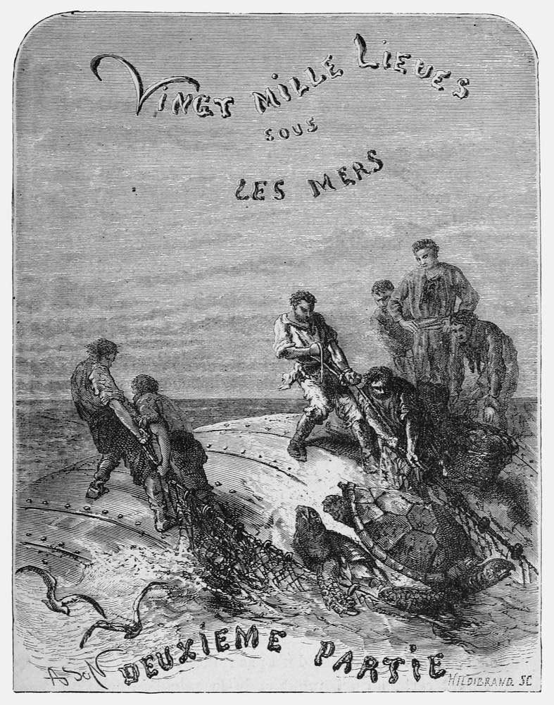
Here begins the second part of this voyage under the seas. The first ended with that moving scene in the coral cemetery, which left a deep impression on my mind. So it was in the bosom of this immense sea that Captain Nemo’s whole life unfolded, and he had even prepared his grave in the most impenetrable of its abysses. There, not one of the monsters of the Ocean would come to disturb the last sleep of these guests of the Nautilus, these friends, bound to one another in death as in life! “No man, either!” the captain had added.
Always that same fierce, implacable distrust of human societies!
For my part, I was no longer content with the hypotheses that satisfied Conseil. That worthy lad persisted in seeing in the commander of the Nautilus only one of those unrecognized scientists who repay humanity’s indifference with contempt. For him he was still a misunderstood genius who, weary of the disappointments of the earth, had been driven to take refuge in this inaccessible medium, where his instincts could have free play. But in my opinion this hypothesis explained only one side of Captain Nemo.
Indeed, the mystery of that last night, during which we had been chained in prison and in sleep; the captain’s precaution, taken so violently, of snatching from my eyes the spyglass that was about to sweep the horizon; the mortal wound of that man, caused by an inexplicable shock to the Nautilus—all this was pushing me along a new path. No! Captain Nemo was not content merely to flee men! His formidable apparatus served not only his instinct for freedom, but perhaps also the purposes of I know not what terrible reprisals.
At this moment nothing is clear to me; in this darkness I glimpse only gleams of light, and I must confine myself to writing, so to speak, at the dictation of events.
Besides, nothing binds us to Captain Nemo. He knows that escaping from the Nautilus is impossible. We are not even prisoners on parole. No pledge of honor binds us. We are only captives, prisoners disguised as guests under a semblance of courtesy. Nevertheless, Ned Land has not given up hope of regaining his freedom. He will certainly take advantage of the first opportunity chance offers him. No doubt I shall do as he does. And yet it will not be without a kind of regret that I carry away what the captain’s generosity has let us discover of the mysteries of the Nautilus! For, after all, should this man be hated or admired? Is he a victim or an executioner? And then, to be frank, before abandoning him forever, I would like to have completed this underwater voyage around the world whose beginnings have been so magnificent. I would like to have observed the complete series of marvels heaped up beneath the seas of the globe. I would like to have seen what no man has yet seen, even if I had to pay with my life for this insatiable need to learn! What have I discovered so far? Nothing, or almost nothing, since we have covered only six thousand leagues across the Pacific!
Yet I know very well that the Nautilus is drawing nearer to inhabited lands, and that if some chance of escape is offered us, it would be cruel to sacrifice my companions to my passion for the unknown. I shall have to follow them, perhaps even guide them. But will that opportunity ever come? The man deprived of his free will by force longs for it; the scientist, the curious man, dreads it.
That day, January 21, 1868, at noon, the first officer came to take the height of the sun. I went up onto the platform, lit a cigar, and watched the operation. It seemed evident to me that this man did not understand French, for several times I made remarks aloud that ought to have drawn from him some involuntary sign of attention if he had understood them, but he remained impassive and silent.
While he was observing with the sextant, one of the sailors of the Nautilus—the vigorous man who had accompanied us on our first underwater excursion at Crespo Island—came to clean the glass of the beacon. I then examined the setup of this apparatus, whose power was increased a hundredfold by lenticular rings arranged like those of lighthouses, which kept its light in the useful plane. The electric lamp was designed to give its full lighting power. Its light, indeed, was produced in a vacuum, which ensured both its steadiness and its intensity. The vacuum also saved wear on the graphite points between which the luminous arc forms—an important saving for Captain Nemo, who could not easily have replaced them. Under these conditions their wear was almost imperceptible.
When the Nautilus got ready to resume its underwater course, I went back down to the drawing room. The hatches closed again, and the course was set due west.
We were then plowing the waves of the Indian Ocean, a vast liquid plain with an area of 550 million hectares, whose waters are so transparent that they make anyone who leans over their surface dizzy. The Nautilus generally floated between a hundred and two hundred meters deep. It was like this for several days. To anyone but me, seized with an immense love of the sea, the hours would no doubt have seemed long and monotonous; but these daily walks on the platform, where I steeped myself again in the invigorating air of the Ocean, the sight of these rich waters through the windows of the drawing room, the reading of the books in the library, and the writing of my memoirs took up all my time and did not leave me a moment of weariness or boredom.
The health of all of us stayed in a very satisfactory state. The diet aboard suited us perfectly, and for my part I could easily have done without the variations that Ned Land, in a spirit of protest, contrived to introduce. Besides, in this constant temperature there was not even a cold to fear. Moreover, the madreporarian Dendrophyllia, known in Provence as “sea fennel,” of which there was a certain stock aboard, would have provided, with the melting flesh of its polyps, an excellent paste against coughs.
For several days we saw a great many aquatic birds, web-footed birds, gulls, and mews. A few were skillfully killed, and, prepared in a certain way, they supplied very acceptable waterfowl. Among the great long-distance flyers, carried far from any land, which rest on the waves from the fatigue of flight, I saw magnificent albatrosses, with a discordant cry like a donkey’s bray, birds belonging to the family of the long-winged birds. The totipalmate family was represented by swift frigate birds that nimbly caught the fish at the surface, and by numerous tropicbirds or bo’sun birds, among others the red-tailed tropicbird, as big as a pigeon, whose white plumage is tinged with pink tones that set off the black of its wings.
The nets of the Nautilus brought up several kinds of sea turtles of the hawksbill genus, with arched backs, whose shell is highly prized. These reptiles, which dive easily, can stay underwater for a long time by closing the fleshy valve located at the outer opening of their nasal passage. Some of these hawksbills, when they were caught, were still sleeping in their shells, sheltered from marine animals. The flesh of these turtles was generally mediocre, but their eggs made an excellent treat.
As for the fish, they still aroused our admiration whenever we caught the secrets of their aquatic life through the open panels. I noticed several species I had not had the chance to observe until then.
I will mention chiefly the boxfish peculiar to the Red Sea, the Indian Ocean, and the part of the Ocean that washes the coasts of equatorial America. These fish, like turtles, armadillos, sea urchins, and crustaceans, are protected by armor that is neither chalky nor stony, but truly bony. Sometimes it takes the shape of a triangular solid, sometimes of a four-sided solid. Among the triangular ones I noted some half a decimeter long, with wholesome flesh and an exquisite taste, brown at the tail and yellow at the fins, whose acclimatization I recommend even in fresh water, to which a number of sea fish easily become accustomed. I will also mention four-sided boxfish topped on the back by four large knobs; boxfish speckled with white dots on the underside of the body, which can be tamed like birds; trigons, with spines formed by an extension of their bony crust, whose strange grunting has earned them the nickname of “sea pigs”; and then dromedaries with large cone-shaped humps, whose flesh is hard and tough.
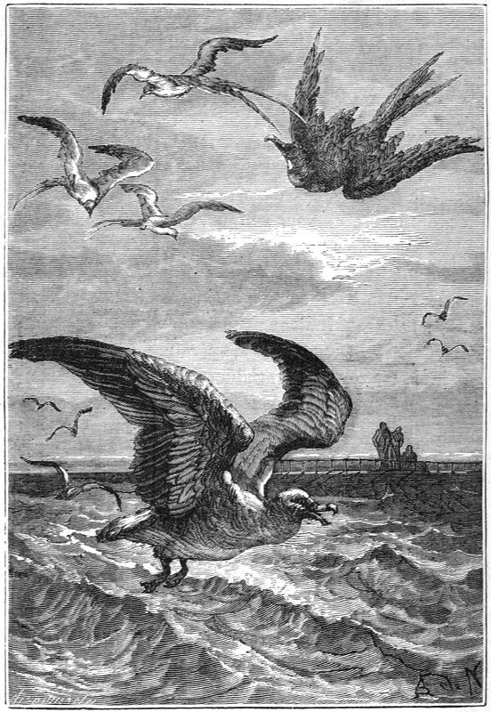
I also find in the daily notes kept by Master Conseil certain fish of the puffer genus, peculiar to these seas: spenglerians with red backs and white breasts, distinguished by three lengthwise rows of filaments, and electric puffers, seven inches long, adorned with the brightest colors. Then, as samples of other genera, there were ovoids like a blackish-brown egg, furrowed with little white bands and without tails; porcupinefish, true porcupines of the sea, armed with spines and able to puff themselves up into a ball bristling with darts; sea horses, common to all the oceans; flying pegasuses with long snouts, whose very wide pectoral fins, shaped like wings, allow them, if not to fly, at least to leap into the air; spatulate pigeonfish, whose tails are covered with numerous scaly rings; long-jawed macrognaths, excellent fish twenty-five centimeters long, shining with the most pleasing colors; livid calliomores with rough heads; myriads of leaping blennies, striped with black, with long pectoral fins, gliding over the surface of the water with prodigious speed; delightful velifers, which can hoist their fins like so many sails spread to favorable currents; splendid kurtes, on which nature has lavished yellow, sky blue, silver, and gold; trichopters, whose wings are made of filaments; bullheads, always smeared with mud, which make a certain rustling sound; gurnards, whose liver is considered poisonous; bodians, which have a movable blinker over their eyes; and finally bellows fish, with long, tubular snouts, true flycatchers of the Ocean, armed with a gun foreseen by neither Chassepot nor Remington, which kill insects by hitting them with a single drop of water.
In the eighty-ninth genus of fishes classified by Lacépède, belonging to the second subclass of bony fishes, characterized by a gill cover and a gill membrane, I noticed the scorpionfish, whose head is studded with spines and which has only one dorsal fin; these animals are covered with small scales or lack them, depending on the subgenus to which they belong. The second subgenus gave us specimens of didactyls three to four decimeters long, striped with yellow, but with heads of a fantastic appearance. As for the first subgenus, it supplied several specimens of that bizarre fish rightly nicknamed the “sea toad,” a fish with a large head, sometimes hollowed with deep sinuses, sometimes swollen with protuberances; bristling with spines and dotted with tubercles, it bears irregular and hideous horns; its body and tail are covered with calluses; its spines inflict dangerous wounds; it is repulsive and horrible.
From January 21 to 23 the Nautilus traveled at the rate of 250 leagues every twenty-four hours, or 540 miles, that is, twenty-two miles an hour. If we recognized the various varieties of fish in passing, it was because they, drawn by the electric brilliance, tried to keep up with us; most, outdistanced by this speed, soon fell behind; a few, however, managed to keep in the waters of the Nautilus for a while.
On the morning of the 24th, at 12° 5′ south latitude and 94° 33′ longitude, we sighted Keeling Island, a madreporic uplift planted with magnificent coconut palms, which was visited by Mr. Darwin and Captain FitzRoy. The Nautilus ran along the steep shores of this deserted island at a short distance. Its dredges brought up numerous specimens of polyps and echinoderms and curious shells from the branch of the mollusks. A few precious products of the delphinula species added to Captain Nemo’s treasures, to which I added a punctiferous astraea, a kind of parasitic polypary often attached to a shell.
Soon Keeling Island disappeared below the horizon, and the course was set to the northwest, toward the tip of the Indian peninsula.
“Civilized lands,” Ned Land said to me that day. “That will be better than those islands of Papua, where you meet more savages than deer! On this land of India, Professor, there are roads, railways, and English, French, and Hindu towns. You couldn’t go five miles without meeting a fellow countryman. Eh? Hasn’t the time come to take French leave of Captain Nemo?”
“No, Ned, no,” I answered in a very determined tone. “Let her run, as you seamen say. The Nautilus is drawing nearer to inhabited continents. It is going back toward Europe; let it take us there. Once we have arrived in our own seas, we shall see what prudence advises us to attempt. Besides, I don’t suppose Captain Nemo will let us go hunting on the coasts of Malabar or Coromandel as he did in the forests of New Guinea.”
“Well, sir, can’t we do without his permission?”
I did not answer the Canadian. I did not want to argue. At bottom, I was set on exhausting to the end the chances of the destiny that had cast me aboard the Nautilus.
After Keeling Island our pace generally slowed. It was also more capricious and often took us to great depths. Several times use was made of the inclined planes, which interior levers could set at an angle to the waterline. In this way we went down as far as two and three kilometers, but without ever verifying the great depths of this Indian sea, which soundings of thirteen thousand meters have not been able to reach. As for the temperature of the lower layers, the thermometer always showed, invariably, four degrees above zero. I only observed that in the upper layers the water was always colder over shallows than in the open sea.
On January 25, the Ocean being absolutely deserted, the Nautilus spent the day on its surface, beating the waves with its powerful propeller and making them spurt to a great height. Under these conditions, how could it not have been taken for a gigantic cetacean? I spent three-quarters of the day on the platform. I watched the sea. Nothing on the horizon, except, toward four in the afternoon, a long steamer running west on the opposite course. Its masts were visible for a moment, but it could not see the Nautilus, which was too low in the water. I thought this steamer belonged to the Peninsular and Oriental line, which runs from the island of Ceylon to Sydney, calling at King George Sound and Melbourne.
At five in the evening, before the swift twilight that links day to night in the tropical zones, Conseil and I were amazed by a curious spectacle.
There is a charming animal whose appearance, according to the ancients, foretold good fortune. Aristotle, Athenaeus, Pliny, and Oppian had studied its habits and exhausted on it all the poetics of the scholars of Greece and Italy. They called it Nautilus and Pompylius. But modern science has not ratified their name for it, and this mollusk is now known as the argonaut.
Anyone who had consulted Conseil would have learned from the good lad that the branch of the mollusks is divided into five classes; that the first class, the cephalopods, whose members are sometimes naked, sometimes shelled, includes two families, the dibranchiates and the tetrabranchiates, which are distinguished by the number of their gills; that the family of the dibranchiates contains three genera, the argonaut, the squid, and the cuttlefish, and that the family of the tetrabranchiates contains only one, the nautilus. If, after this nomenclature, some rebellious mind had confused the argonaut, which is acetabuliferous, that is, bearing suckers, with the nautilus, which is tentaculiferous, that is, bearing tentacles, he would have had no excuse.
Now, it was a school of these argonauts that was then traveling on the surface of the Ocean. We could count several hundred of them. They belonged to the species of tuberculate argonauts peculiar to the seas of India.
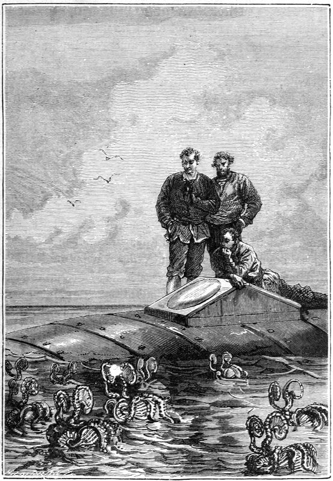
These graceful mollusks were moving backward by means of their locomotive tube, expelling through it the water they had drawn in. Of their eight tentacles, six, long and slender, floated on the water, while the other two, rounded into palms, were held up to the wind like a light sail. I could see perfectly their spiral, undulating shells, which Cuvier rightly compares to an elegant launch. A true boat, indeed. It carries the animal that secreted it without the animal being attached to it.
“The argonaut is free to leave its shell,” I said to Conseil, “but it never leaves it.”
“So does Captain Nemo,” Conseil answered judiciously. “That’s why he would have done better to call his ship the Argonaut.”
For about an hour the Nautilus floated in the midst of this troop of mollusks. Then some sudden fright seized them. As if at a signal, all the sails were suddenly lowered; the arms folded up, the bodies contracted, the shells, turning over, changed their center of gravity, and the whole flotilla disappeared beneath the waves. It was instantaneous, and never did the ships of a squadron maneuver more in unison.
At that moment night fell suddenly, and the waves, barely raised by the breeze, stretched out peacefully beneath the side strakes of the Nautilus.
The next day, January 26, we crossed the equator on the eighty-second meridian and returned to the northern hemisphere.
During that day a formidable troop of sharks escorted us. Terrible animals that swarm in these seas and make them very dangerous. There were Philipps sharks with brown backs and whitish bellies, armed with eleven rows of teeth; eyed sharks, whose necks are marked with a large black spot ringed with white that looks like an eye; and Isabella sharks with rounded snouts dotted with dark spots. Often these powerful animals hurled themselves against the pane of the drawing room with a violence that was hardly reassuring. Ned Land could no longer control himself. He wanted to go back up to the surface and harpoon these monsters, especially certain smooth hounds whose mouths are paved with teeth arranged like a mosaic, and large tiger sharks, five meters long, which provoked him with quite particular insistence. But soon the Nautilus, increasing its speed, easily left behind the swiftest of these sharks.
On January 27, at the entrance to the vast Bay of Bengal, we came upon several times—a sinister sight!—corpses floating on the surface of the waves. They were the dead of the Indian towns, carried out to the open sea by the Ganges, which the vultures, the only undertakers of that country, had not finished devouring. But there was no shortage of sharks to help them in their funeral work.
Toward seven in the evening the Nautilus, half submerged, sailed in the midst of a sea of milk. As far as the eye could see, the Ocean seemed to have turned to milk. Was it the effect of the moonlight? No, for the moon, barely two days old, was still lost below the horizon in the rays of the sun. The whole sky, though lit by the starlight, seemed black in contrast with the whiteness of the waters.
Conseil could not believe his eyes, and he questioned me about the causes of this singular phenomenon. Fortunately, I was in a position to answer him.
“It’s what is called a milk sea,” I said to him, “a vast expanse of white waves often seen off the coasts of Amboina and in these waters.”
“But,” asked Conseil, “can master tell me what causes such an effect? For this water hasn’t turned into milk, I suppose!”
“No, my boy, and this whiteness that surprises you is due only to the presence of myriads of tiny infusorian creatures, a kind of little luminous worm, gelatinous and colorless in appearance, as thick as a hair, and no more than a fifth of a millimeter long. Some of these creatures cling together over a space of several leagues.”
“Several leagues!” cried Conseil.
“Yes, my boy, and don’t try to calculate the number of these infusoria! You wouldn’t manage it, for, unless I am mistaken, certain navigators have sailed on these milk seas for more than forty miles.”
I do not know whether Conseil heeded my advice, but he seemed to plunge into deep reflections, no doubt trying to work out how many fifths of a millimeter forty square miles contain. For my part, I went on observing the phenomenon. For several hours the Nautilus cut through these whitish waves with its ram, and I noticed that it slid noiselessly over this soapy water, as if it were floating in those eddies of foam that the currents and countercurrents of bays sometimes leave between them.
Toward midnight the sea suddenly resumed its ordinary hue, but behind us, to the limits of the horizon, the sky, reflecting the whiteness of the waves, seemed for a long time imbued with the vague glow of an aurora borealis.
On January 28, when the Nautilus came back to the surface of the sea at noon, at 9° 4′ north latitude, it was in sight of land eight miles to the west. The first thing I noticed was a cluster of mountains about two thousand feet high, whose shapes were very whimsically modeled. Once our position had been worked out, I went back into the drawing room, and when the bearing had been marked on the chart, I recognized that we were off the island of Ceylon, the pearl that hangs from the lower lobe of the Indian peninsula.
I went to look in the library for some book about this island, one of the most fertile on the globe. As it happened, I found a volume by H. C. Sirr, Esq., entitled Ceylon and the Cingalese. Back in the drawing room, I first noted the bearings of Ceylon, on which antiquity had lavished so many different names. It lay between 5° 55′ and 9° 49′ north latitude, and between 79° 42′ and 82° 4′ longitude east of the meridian of Greenwich; its length was 275 miles; its greatest width, 150 miles; its circumference, 900 miles; its area, 24,448 square miles, that is, a little less than that of Ireland.
Captain Nemo and his first officer appeared at that moment.
The captain glanced at the chart. Then, turning toward me:
“The island of Ceylon,” he said, “a land famous for its pearl fisheries. Would you like, Monsieur Aronnax, to visit one of its fisheries?”
“Certainly, Captain.”
“Good. That will be easy. Only, if we see the fisheries, we shall not see the fishermen. The annual harvest has not begun yet. No matter. I shall give the order to head for the Gulf of Mannar, where we shall arrive during the night.”
The captain said a few words to his first officer, who went out at once. Soon the Nautilus returned to its liquid element, and the pressure gauge showed that it was keeping at a depth of thirty feet.
With the chart before me, I then looked for the Gulf of Mannar. I found it at the ninth parallel, on the northwest coast of Ceylon. It was formed by the long line of the little island of Mannar. To reach it, we had to go up the whole western shore of Ceylon.
“Professor,” Captain Nemo then said to me, “pearls are fished in the Bay of Bengal, in the Indian Ocean, in the seas of China and Japan, in the seas south of America, in the Gulf of Panama, and in the Gulf of California; but it is at Ceylon that this fishery obtains the finest results. We are arriving a little early, no doubt. The fishermen gather in the Gulf of Mannar only during the month of March, and there, for thirty days, their three hundred boats devote themselves to this lucrative harvest of the treasures of the sea. Each boat is manned by ten rowers and ten fishermen. The fishermen, divided into two groups, dive in turn and go down to a depth of twelve meters by means of a heavy stone, which they grip between their feet and which is tied to the boat by a rope.”
“So,” I said, “that primitive method is still in use?”
“Still,” Captain Nemo answered me, “although these fisheries belong to the most industrious people on the globe, the English, to whom the Treaty of Amiens ceded them in 1802.”
“It seems to me, however, that the diving suit as you use it would be of great service in such an operation.”
“Yes, for these poor fishermen cannot stay underwater for long. The Englishman Percival, in his voyage to Ceylon, does speak of a Kaffir who stayed down five minutes without coming back to the surface, but the fact seems hardly credible to me. I know that some divers manage as much as fifty-seven seconds, and very skillful ones as much as eighty-seven; but they are rare, and when they come back aboard, these unfortunate men discharge blood-tinged water from their noses and ears. I believe the average time the fishermen can endure is thirty seconds, during which they hurry to cram into a little net all the pearl oysters they can tear loose; but generally these fishermen do not live to be old; their sight weakens; ulcers break out on their eyes; sores form on their bodies, and often they are even struck by apoplexy at the bottom of the sea.”
“Yes,” I said, “it is a sad trade, and one that serves only to satisfy a few whims. But tell me, Captain, how many oysters can a boat fish in a day?”
“Forty to fifty thousand or so. It is even said that in 1814, when the English government had fishing done on its own account, its divers brought up seventy-six million oysters in twenty working days.”
“At least,” I asked, “are these fishermen paid enough?”
“Hardly, Professor. In Panama they earn only a dollar a week. Most often they get a sou for each oyster that contains a pearl, and how many do they bring up that contain none!”
“A sou to these poor people who make their masters rich! It’s odious.”
“So, Professor,” Captain Nemo said to me, “you and your companions will visit the Mannar bank, and if by chance some early fisherman is already there, well, we shall watch him at work.”
“Agreed, Captain.”
“By the way, Monsieur Aronnax, you aren’t afraid of sharks?”
“Sharks?” I cried.
This question seemed to me, to say the least, quite unnecessary.
“Well?” Captain Nemo went on.
“I will admit to you, Captain, that I am not yet very familiar with that kind of fish.”
“We are used to them,” replied Captain Nemo, “and in time you will get used to them. Besides, we shall be armed, and along the way we may perhaps hunt a shark or two. It is an interesting hunt. So, until tomorrow, Professor, and early in the morning.”
This said in an offhand tone, Captain Nemo left the drawing room.
If you were invited to hunt bears in the mountains of Switzerland, you would say: “Very well! Tomorrow we go bear hunting.” If you were invited to hunt lions on the plains of the Atlas or tigers in the jungles of India, you would say: “Aha! It seems we’re going to hunt tigers or lions!” But if you were invited to hunt sharks in their natural element, you might ask to think it over before accepting the invitation.
As for me, I passed my hand over my forehead, where a few drops of cold sweat were beading.
“Let’s think about this,” I said to myself, “and take our time. Hunting otters in the underwater forests, as we did in the forests of Crespo Island, is one thing. But roaming the bottom of the seas when you are almost certain to meet sharks there is quite another! I know very well that in certain countries, the Andaman Islands in particular, the Black inhabitants do not hesitate to attack the shark with a dagger in one hand and a noose in the other, but I also know that many of those who face these formidable animals do not come back alive! Besides, I am not one of those islanders, and even if I were, I think that in this case a slight hesitation on my part would not be out of place.”
And there I was, dreaming of sharks, thinking of those vast jaws armed with many rows of teeth and capable of cutting a man in two. I already felt a certain pain around my loins. And I could not get over the casual way in which the captain had made this deplorable invitation! One would have thought it was a matter of tracking some harmless fox through the woods!
“Good!” I thought. “Conseil will never want to come, and that will excuse me from accompanying the captain.”
As for Ned Land, I admit I did not feel so sure of his good sense. A danger, however great, always held an attraction for his combative nature.
I took up Sirr’s book again, but I leafed through it mechanically. Between the lines I saw jaws gaping formidably open.
At that moment Conseil and the Canadian came in, looking calm and even cheerful. They did not know what awaited them.
“My word, sir,” Ned Land said to me, “your Captain Nemo—the devil take him!—has just made us a very kind proposal.”
“Ah!” I said. “You know…”
“If master doesn’t mind,” answered Conseil, “the commander of the Nautilus has invited us to visit the magnificent fisheries of Ceylon tomorrow in master’s company. He did it in excellent terms and behaved like a true gentleman.”
“He told you nothing more?”
“Nothing, sir,” answered the Canadian, “except that he had spoken to you about this little outing.”
“Indeed,” I said. “And he gave you no details about…”
“None, Mr. Naturalist. You’ll come with us, won’t you?”
“I… of course! I see that you are taking a liking to it, Master Land.”
“Yes! It’s curious, very curious.”
“Dangerous, perhaps!” I added in an insinuating tone.
“Dangerous,” answered Ned Land, “a simple excursion on an oyster bank!”
Decidedly, Captain Nemo had thought it pointless to plant the idea of sharks in my companions’ minds. As for me, I was looking at them with troubled eyes, as if they were already missing some limb. Should I warn them? Yes, no doubt, but I did not quite know how to go about it.
“Will master give us some details about pearl fishing?” Conseil asked me.
“About the fishing itself,” I asked, “or about the incidents that…”
“About the fishing,” answered the Canadian. “Before going onto the ground, it’s good to know it.”
“Well, sit down, my friends, and I will teach you all that the Englishman Sirr has just taught me.”
Ned and Conseil took their places on a divan, and the first thing the Canadian said to me was:
“Sir, what is a pearl?”
“My good Ned,” I answered, “for the poet a pearl is a tear of the sea; for Orientals it is a drop of solidified dew; for ladies it is an oblong jewel of glassy luster and pearly substance that they wear on the finger, the neck, or the ear; for the chemist it is a mixture of phosphate and carbonate of lime with a little gelatin; and finally, for naturalists, it is simply a morbid secretion of the organ that produces mother-of-pearl in certain bivalves.”
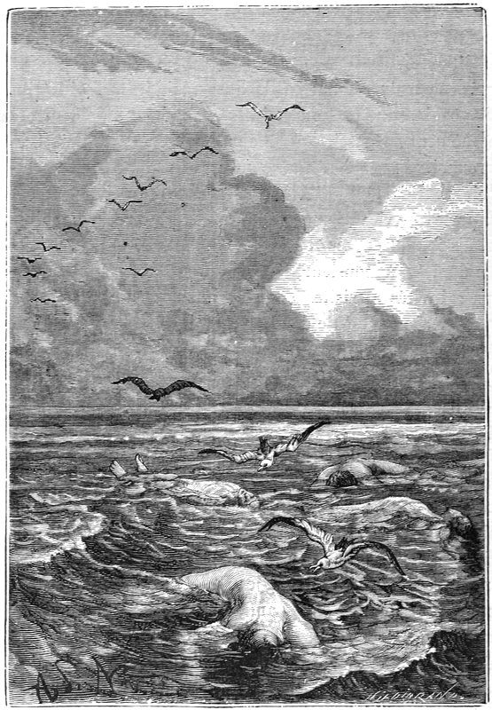
“Branch Mollusca,” said Conseil, “class Acephala, order Testacea.”
“Precisely, learned Conseil. Now, among these testaceans, the rainbow abalone, the turban shells, the giant clams, the pen shells—in a word, all those that secrete mother-of-pearl, that is, the blue, bluish, violet, or white substance that lines the inside of their valves—are capable of producing pearls.”
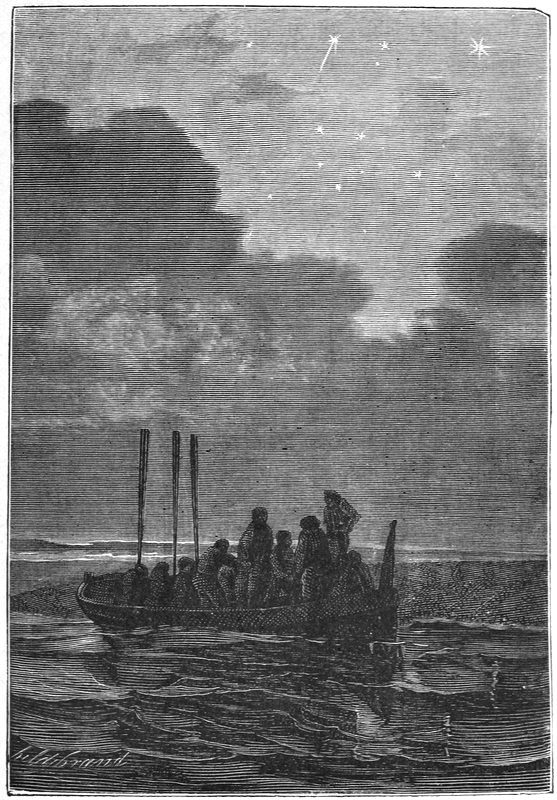
“Mussels too?” asked the Canadian.
“Yes! The mussels of certain rivers in Scotland, Wales, Ireland, Saxony, Bohemia, and France.”
“Good! We’ll pay attention to them from now on,” answered the Canadian.
“But,” I went on, “the mollusk par excellence that distills the pearl is the pearl oyster, Meleagrina margaritifera, the precious pintadine. The pearl is only a nacreous concretion that takes on a globular form. Either it adheres to the oyster’s shell, or it becomes embedded in the folds of the animal. On the valves the pearl is attached; in the flesh it is free. But it always has as its nucleus a small hard body, either a sterile egg or a grain of sand, around which the nacreous matter is deposited over several years, successively and in thin concentric layers.”
“Are several pearls found in the same oyster?” asked Conseil.
“Yes, my boy. Some pearl oysters form a veritable jewel box. An oyster has even been mentioned—though I take the liberty of doubting it—that contained no fewer than a hundred and fifty sharks.”
“A hundred and fifty sharks!” cried Ned Land.
“Did I say sharks?” I cried quickly. “I mean a hundred and fifty pearls. Sharks would make no sense.”
“Indeed,” said Conseil. “But will master now tell us by what means these pearls are extracted?”
“There are several ways of going about it, and often, when the pearls are attached to the valves, the fishermen pull them off with pliers. But most commonly the pearl oysters are spread out on esparto mats covering the shore. They die there in the open air, and at the end of ten days they are in a satisfactory state of putrefaction. They are then plunged into vast tanks of seawater, then opened and washed. It is at this point that the sorters’ double task begins. First they separate the plates of mother-of-pearl, known in the trade as franche argentée, bâtarde blanche, and bâtarde noire, which are delivered in cases of 125 to 150 kilograms. Then they remove the oyster’s soft tissue, boil it, and sift it to extract even the smallest pearls.”
“Does the price of these pearls vary with their size?” asked Conseil.
“Not only with their size,” I answered, “but also with their shape, their water, that is, their color, and their orient, that is, the shimmering, iridescent luster that makes them so charming to the eye. The finest pearls are called virgin pearls or paragons; they form singly in the tissue of the mollusk; they are white, often opaque, but sometimes of an opaline transparency, and most commonly spherical or pear-shaped. The spherical ones are made into bracelets, the pear-shaped ones into pendants, and, being the most precious, they are sold individually. The other pearls are attached to the oyster’s shell, and, being more irregular, they are sold by weight. Finally, in a lower rank are classed the small pearls, known as seed pearls; they are sold by measure and are used especially for embroidery on church vestments.”
“But this work of sorting the pearls by size must be long and difficult,” said the Canadian.
“No, my friend. This work is done by means of eleven sieves or screens pierced with a varying number of holes. The pearls that stay in the sieves with twenty to eighty holes are of the first rank. Those that do not slip through the screens pierced with a hundred to eight hundred holes are of the second rank. Finally, the pearls for which sieves pierced with nine hundred to a thousand holes are used make up the seed pearls.”
“It’s ingenious,” said Conseil, “and I see that the division and classification of the pearls is done mechanically. And can master tell us what the working of the pearl-oyster banks brings in?”
“According to Sirr’s book,” I answered, “the Ceylon fisheries are leased every year for the sum of three million sharks.”
“Francs!” Conseil put in.
“Yes, francs! Three million francs,” I went on. “But I believe these fisheries no longer bring in what they used to. The same is true of the American fisheries, which in the reign of Charles V produced four million francs, now reduced by a third. On the whole, the total yield of pearl fishing can be estimated at nine million francs.”
“But,” asked Conseil, “aren’t there some famous pearls that have been valued at a very high price?”
“Yes, my boy. It is said that Caesar gave Servilia a pearl valued at a hundred and twenty thousand francs in our money.”
“I’ve even heard tell,” said the Canadian, “that a certain lady of ancient times drank pearls in her vinegar.”
“Cleopatra,” retorted Conseil.
“It must have tasted bad,” added Ned Land.
“Detestable, friend Ned,” answered Conseil, “but a little glass of vinegar that costs fifteen hundred thousand francs comes at a pretty price.”
“I’m sorry I didn’t marry that lady,” said the Canadian, moving his arm in a not very reassuring way.
“Ned Land, Cleopatra’s husband!” cried Conseil.
“But I was going to get married, Conseil,” the Canadian answered seriously, “and it’s not my fault if the business didn’t work out. I’d even bought a pearl necklace for Kat Tender, my fiancée, who married someone else, as it happens. Well, that necklace cost me no more than a dollar and a half, and yet—the professor will kindly believe me—the pearls in it wouldn’t have passed through the sieve with twenty holes.”
“My good Ned,” I answered, laughing, “those were artificial pearls, simple glass globules coated on the inside with essence of Orient.”
“Well, that essence of Orient,” answered the Canadian, “it must cost a lot.”
“Next to nothing! It is nothing but the silvery substance of the scales of the bleak, collected in water and preserved in ammonia. It has no value at all.”
“Maybe that’s why Kat Tender married someone else,” Master Land answered philosophically.
“But,” I said, “to come back to pearls of great value, I don’t believe any sovereign ever possessed one finer than Captain Nemo’s.”
“That one,” said Conseil, pointing to the magnificent jewel enclosed in its glass case.
“Certainly I am not wrong in putting its value at two million…”
“Francs!” Conseil said quickly.
“Yes,” I said, “two million francs, and no doubt it cost the captain nothing but the trouble of picking it up.”
“Eh!” cried Ned Land. “Who says that tomorrow, during our walk, we won’t come across one like it!”
“Bah!” said Conseil.
“And why not?”
“What good would millions do us aboard the Nautilus?”
“Aboard, none,” said Ned Land, “but… elsewhere.”
“Oh! Elsewhere!” said Conseil, shaking his head.
“As a matter of fact,” I said, “Master Land is right. And if we ever bring back to Europe or America a pearl worth a few million, that at least would give great authenticity, and at the same time great value, to the account of our adventures.”
“I believe it,” said the Canadian.
“But,” said Conseil, who always came back to the instructive side of things, “is this pearl fishing dangerous?”
“No,” I answered quickly, “especially if one takes certain precautions.”
“What do you risk in this trade?” said Ned Land. “Swallowing a few mouthfuls of seawater!”
“As you say, Ned. By the way,” I said, trying to take on Captain Nemo’s offhand tone, “are you afraid of sharks, good Ned?”
“Me?” answered the Canadian. “A harpooner by profession! It’s my trade to make fun of them!”
“It is not a question,” I said, “of catching them with a swivel hook, hoisting them onto a ship’s deck, chopping off their tails with an ax, slitting their bellies open, tearing out their hearts, and throwing them into the sea!”
“Then it’s a question of…?”
“Yes, precisely.”
“In the water?”
“In the water.”
“My word, with a good harpoon! You know, sir, those sharks are rather badly made beasts. They have to turn over on their bellies to snap you up, and meanwhile…”
Ned Land had a way of pronouncing the words “snap you up” that sent a chill down one’s back.
“Well, and you, Conseil, what do you think of these sharks?”
“I,” said Conseil, “will be frank with master.”
“Good,” I thought.
“If master faces the sharks,” said Conseil, “I don’t see why his faithful servant shouldn’t face them with him!”
Night came. I went to bed. I slept rather badly. Sharks played an important part in my dreams, and I found both very apt and very unfair the etymology that derives the French word requin, shark, from the word “requiem.”
The next day, at four in the morning, I was awakened by the steward whom Captain Nemo had specially placed at my service. I got up quickly, dressed, and went into the drawing room.
Captain Nemo was waiting for me there.
“Monsieur Aronnax,” he said to me, “are you ready to leave?”
“I am ready.”
“Please follow me.”
“And my companions, Captain?”
“They have been told and are waiting for us.”
“Aren’t we going to put on our diving suits?” I asked.
“Not yet. I have not let the Nautilus come too close to this coast, and we are rather far out from the Mannar bank; but I have had the skiff made ready, and it will take us to the exact landing point and spare us a rather long walk. It is carrying our diving equipment, which we shall put on when this underwater exploration begins.”
Captain Nemo led me to the central staircase, whose steps led up to the platform. Ned and Conseil were there, delighted with the “pleasure party” that was being prepared. Five sailors from the Nautilus, oars ready, were waiting for us in the skiff, which had been made fast alongside.
The night was still dark. Patches of cloud covered the sky and let only a few stars be seen. I turned my eyes toward the land, but I saw only a blurred line closing off three quarters of the horizon from southwest to northwest. The Nautilus, having gone up the western coast of Ceylon during the night, lay to the west of the bay, or rather of the gulf formed by that land and the island of Mannar. There, under the dark waters, stretched the bank of pearl oysters, an inexhaustible field of pearls more than twenty miles long.
Captain Nemo, Conseil, Ned Land, and I took our places at the stern of the skiff. The coxswain took the tiller; his four companions leaned on their oars; the line was cast off and we pushed away.
The skiff headed south. Its oarsmen were in no hurry. I noticed that their strokes, vigorously driven under the water, came only every ten seconds, following the method generally used in navies. While the boat ran on with its momentum, the little drops crackled as they struck the black surface of the waves like spatters of molten lead. A slight swell from the open sea gave the skiff a gentle roll, and a few wave crests lapped at its bow.
We were silent. What was Captain Nemo thinking of? Perhaps of that land he was approaching, which he found too close to him, contrary to the opinion of the Canadian, to whom it still seemed too far away. As for Conseil, he was there simply as a curious onlooker.
Toward half past five, the first tints of the horizon showed the upper line of the coast more clearly. Rather flat in the east, it rose a little toward the south. Five miles still separated us from it, and its shore merged with the misty waters. Between it and us the sea was deserted. Not a boat, not a diver. Deep solitude over this meeting place of the pearl fishers. As Captain Nemo had pointed out to me, we were arriving in these waters a month too early.
At six o’clock, day broke suddenly, with that swiftness peculiar to tropical regions, which know neither dawn nor dusk. The sun’s rays pierced the curtain of clouds piled up on the eastern horizon, and the radiant orb rose rapidly.
I saw the land distinctly, with a few trees scattered here and there.
The skiff moved toward the island of Mannar, which curved round to the south. Captain Nemo had risen from his seat and was watching the sea.
At a sign from him the anchor was dropped, and the chain hardly ran out, for the bottom was no more than a meter down, and at this spot it formed one of the highest points of the pearl-oyster bank. The skiff at once swung round under the thrust of the ebb tide, which was setting out to sea.
“Here we are, Monsieur Aronnax,” Captain Nemo then said. “You see this narrow bay. It is right here that in a month the many fishing boats of the concession holders will gather, and these are the waters their divers will boldly search. This bay is well suited to this kind of fishing. It is sheltered from the strongest winds, and the sea is never very rough here, a circumstance very favorable to the divers’ work. We shall now put on our diving suits, and we shall begin our walk.”
I made no answer, and while gazing at these suspicious waters, helped by the boat’s sailors, I began to put on my heavy sea garment. Captain Nemo and my two companions were dressing too. None of the men of the Nautilus was to accompany us on this new excursion.
Soon we were imprisoned up to the neck in the rubber garment, and straps fastened the air tanks onto our backs. As for the Ruhmkorff lamps, there was no question of them. Before putting my head into its copper capsule, I mentioned this to the captain.
“That equipment would be useless to us,” the captain answered me. “We shall not go to great depths, and the sun’s rays will be enough to light our way. Besides, it is not prudent to carry an electric lantern under these waters. Its brightness might unexpectedly attract some dangerous inhabitant of these parts.”
While Captain Nemo was saying these words, I turned toward Conseil and Ned Land. But my two friends had already fitted their heads into the metal helmets, and they could neither hear nor answer.
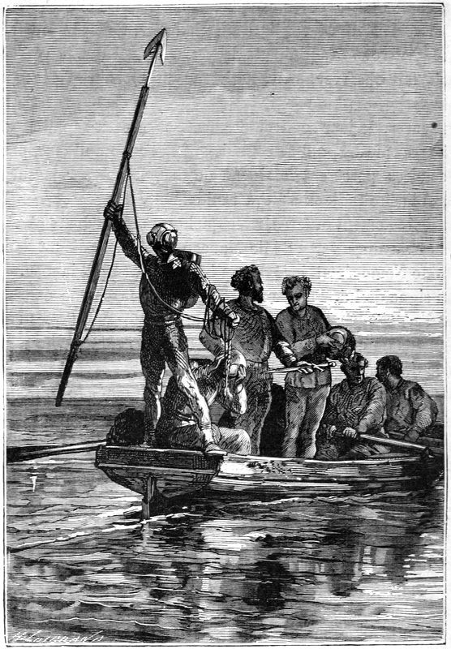
I had one last question to put to Captain Nemo:
“And our weapons,” I asked him, “our rifles?”
“Rifles! What for? Don’t your mountaineers attack the bear dagger in hand, and isn’t steel surer than lead? Here is a sturdy blade. Put it in your belt and let us go.”
I looked at my companions. They were armed as we were, and, besides, Ned Land was brandishing an enormous harpoon that he had put in the skiff before leaving the Nautilus.
Then, following the captain’s example, I let myself be capped with the heavy copper sphere, and our air tanks were immediately set working.
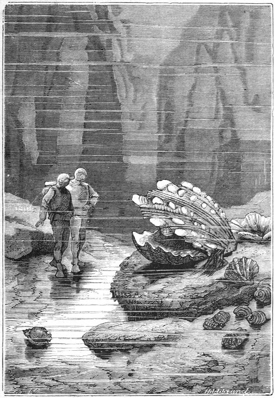
A moment later, the boat’s sailors set us down one after the other, and in a meter and a half of water we set foot on level sand. Captain Nemo gave us a sign with his hand. We followed him, and down a gentle slope we disappeared under the waves.
There, the ideas that had been obsessing my brain left me. I became astonishingly calm again. The ease of my movements increased my confidence, and the strangeness of the spectacle captivated my imagination.
The sun was already sending enough light under the waters. The smallest objects remained visible. After ten minutes of walking, we were in five meters of water, and the ground was becoming more or less flat.
At our footsteps, like coveys of snipe in a marsh, rose flights of curious fish of the genus Monopterus, whose members have no fin but the one on the tail. I recognized the Javanese eel, a veritable serpent eight decimeters long, with a livid belly, which one could easily confuse with the conger eel but for the gold lines on its flanks. In the genus Stromateus, whose bodies are very compressed and oval, I observed brightly colored butterfish carrying their dorsal fins like scythes, edible fish which, dried and pickled, make an excellent dish known as karawade; then tranquebars, belonging to the genus Apsiphoroides, whose bodies are covered with a scaly cuirass of eight lengthwise sections.
Meanwhile, the gradual rise of the sun was lighting the mass of the waters more and more. The ground was changing little by little. The fine sand gave way to a veritable causeway of rounded rocks, covered with a carpet of mollusks and zoophytes. Among the specimens of these two branches I noticed windowpane oysters with thin, unequal valves, a kind of oyster peculiar to the Red Sea and the Indian Ocean; orange lucina with orbicular shells; awl-shaped auger shells; a few of those Persian murex that supplied the Nautilus with an admirable dye; horned rock shells fifteen centimeters long, which rose under the waves like hands ready to seize you; horn-bearing turbinella, all bristling with spines; gaping lingulas; anatinas, edible shellfish that feed the markets of Hindustan; slightly luminous Pelagia panopyra; and finally admirable fan-shaped oculinas, magnificent fans that form one of the richest growths in these seas.
In the midst of these living plants and under the arbors of hydrophytes ran clumsy legions of articulates, particularly toothed frog crabs, whose carapaces form a slightly rounded triangle; robber crabs peculiar to these waters; and horrible parthenope crabs, whose appearance was repugnant to the eye. An animal no less hideous, which I met several times, was that enormous crab observed by Mr. Darwin, to which nature has given the instinct and the strength needed to feed on coconuts; it climbs the trees along the shore, it knocks down the nut, which splits in its fall, and it opens it with its powerful pincers. Here, under these clear waves, this crab ran about with unequaled agility, while green turtles, of the species that frequents the Malabar coast, moved slowly among the tumbled rocks.
Toward seven o’clock, we were at last pacing the pearl-oyster bank, on which the pearl oysters breed by the millions. These precious mollusks clung to the rocks and were firmly attached to them by that brown byssus that does not allow them to move about. In this, these oysters are inferior even to mussels, to which nature has not refused all power of locomotion.
The pearl oyster Meleagrina, the mother of pearl, whose valves are nearly equal, takes the form of a rounded shell with thick walls, very rough on the outside. Some of these shells were flaky and furrowed with greenish bands radiating from their tops. They belonged to the young oysters. The others, with rough, black surfaces, ten years old and more, measured up to fifteen centimeters across.
Captain Nemo pointed out to me this prodigious heap of pearl oysters, and I understood that this mine was truly inexhaustible, for nature’s creative power prevails over man’s destructive instinct. Ned Land, faithful to that instinct, hurried to fill a net he carried at his side with the finest mollusks.
But we could not stop. We had to follow the captain, who seemed to be guiding himself along paths known to him alone. The ground rose noticeably, and sometimes my arm, when I raised it, went above the surface of the sea. Then the level of the bank dropped again capriciously. Often we went around tall rocks tapering into little pyramids. In their dark crevices, big crustaceans, poised on their tall legs like engines of war, watched us with fixed eyes, and under our feet crept myrianas, glyceras, aricias, and annelids, which stretched out their antennae and tentacular cirri inordinately.
At that moment a vast grotto opened before us, hollowed out in a picturesque heap of rocks hung with all the high-warp tapestries of underwater flora. At first this grotto seemed deeply dark to me. The sun’s rays seemed to die away in it by successive gradations. Its vague transparency was now nothing but drowned light.
Captain Nemo went in. We went in after him. My eyes soon grew used to this relative darkness. I made out the springing of the vault, so capriciously curved, supported by natural pillars broadly set on their granite bases, like the heavy columns of Tuscan architecture. Why was our incomprehensible guide leading us to the back of this underwater crypt? I was soon to know.
After going down a rather steep slope, our feet trod the bottom of a kind of circular well. There Captain Nemo stopped, and with his hand he pointed out to us an object I had not yet noticed.
It was an oyster of extraordinary size, a gigantic tridacna, a holy-water font that could have held a lake of holy water, a basin more than two meters wide, and consequently larger than the one that adorned the drawing room of the Nautilus.
I went up to this phenomenal mollusk. By its byssus it clung to a slab of granite, and there it was growing on its own in the calm waters of the grotto. I estimated the weight of this tridacna at three hundred kilograms. Now, such an oyster contains fifteen kilos of flesh, and it would take the stomach of a Gargantua to swallow a few dozen of them.
Captain Nemo evidently knew of the existence of this bivalve. This was not the first time he had visited it, and I thought that by bringing us to this spot he only wanted to show us a natural curiosity. I was mistaken. Captain Nemo had a particular interest in checking the present state of this tridacna.
The mollusk’s two valves were partly open. The captain went up to it and slid his dagger between the shells to keep them from closing; then, with his hand, he lifted the membranous tunic, fringed at its edges, that formed the animal’s mantle.
There, between the leafy folds, I saw a loose pearl as big as a coconut. Its globular shape, its perfect clearness, and its admirable orient made it a jewel of inestimable price. Carried away by curiosity, I stretched out my hand to seize it, to weigh it, to feel it! But the captain stopped me, made a sign of refusal, and, withdrawing his dagger with a quick movement, let the two valves close suddenly.
I then understood Captain Nemo’s purpose. By leaving this pearl buried under the tridacna’s mantle, he was allowing it to grow imperceptibly. With each year the mollusk’s secretion added new concentric layers to it. The captain alone knew the grotto where this admirable fruit of nature was “ripening”; he alone was raising it, so to speak, in order to carry it one day to his precious museum. Perhaps he had even, following the example of the Chinese and the Indians, brought about the production of this pearl by introducing under the folds of the mollusk some piece of glass or metal, which had little by little been covered with the nacreous matter. In any case, comparing this pearl with those I already knew, and with those that shone in the captain’s collection, I estimated its value at ten million francs at least. A superb natural curiosity and not a luxury jewel, for I do not know what feminine ears could have borne it.
The visit to the opulent tridacna was over. Captain Nemo left the grotto, and we climbed back onto the pearl-oyster bank, in the midst of those clear waters not yet troubled by the divers’ work.
We walked separately, like true strollers, each stopping or moving off as he pleased. For my part, I no longer had any concern for the dangers my imagination had so ridiculously exaggerated. The shallows came noticeably closer to the surface of the sea, and soon, in a meter of water, my head rose above the ocean level. Conseil joined me, and, pressing his big capsule against mine, he gave me a friendly greeting with his eyes. But this raised plateau measured only a few fathoms, and soon we were back in our element. I believe I now have the right to call it that.
Ten minutes later, Captain Nemo stopped suddenly. I thought he was halting to turn back. No. With a gesture, he ordered us to crouch beside him at the bottom of a wide crevice. His hand pointed toward a spot in the liquid mass, and I looked carefully.
Five meters from me a shadow appeared and sank to the ground. The disturbing idea of sharks crossed my mind. But I was mistaken, and once again we did not have to deal with the monsters of the ocean.
It was a man, a living man, an Indian, a Black man, a fisherman, a poor devil, no doubt, who had come to glean before the harvest. I could see the bottom of his canoe, anchored a few feet above his head. He dove and came back up in turn. A stone shaped like a sugarloaf, which he gripped with his foot while a rope tied it to his boat, helped him go down more quickly to the bottom of the sea. That was all his equipment. Reaching the ground, at a depth of about five meters, he threw himself to his knees and filled his bag with pearl oysters picked up at random. Then he went back up, emptied his bag, pulled up his stone, and began his operation again, which lasted only thirty seconds.
This diver did not see us. The shadow of the rock hid us from his sight. And besides, how could this poor Indian ever have supposed that men, beings like himself, were there under the water, spying on his movements and not missing a single detail of his fishing!
Several times he went up in this way and dove again. He brought back no more than ten or so pearl oysters on each dive, for he had to tear them from the bank, to which they clung by their sturdy byssus. And how many of those oysters lacked the pearls for which he was risking his life!
I watched him with deep attention. His routine went on regularly, and for half an hour no danger seemed to threaten him. I was thus growing used to the spectacle of this interesting fishery when, all of a sudden, at a moment when the Indian was kneeling on the ground, I saw him make a gesture of terror, stand up, and push off to rise to the surface of the waves.
I understood his fright. A gigantic shadow was appearing above the unfortunate diver. It was a shark of great size, advancing diagonally, eyes ablaze, jaws open!
I was dumb with horror, unable to make a movement.
The voracious animal, with a vigorous stroke of its fin, lunged at the Indian, who threw himself aside and avoided the shark’s bite, but not the lash of its tail, for that tail, striking him on the chest, stretched him out on the ground.
This scene had lasted barely a few seconds. The shark came back and, turning over on its back, was getting ready to cut the Indian in two when I felt Captain Nemo, posted beside me, rise suddenly. Then, dagger in hand, he walked straight at the monster, ready to fight it hand to hand.
The shark, just as it was about to snap up the unfortunate fisherman, caught sight of its new adversary, and, turning back onto its belly, headed swiftly toward him.
I can still see Captain Nemo’s stance. Crouched, he awaited the formidable shark with admirable coolness, and when it rushed at him, the captain, throwing himself aside with prodigious quickness, avoided the impact and drove his dagger into its belly. But that was not the end of it. A terrible fight began.
The shark had roared, so to speak. Blood was pouring from its wounds. The sea was dyed red, and through this opaque liquid I could see nothing more.
Nothing more, until the moment when, through a clearing, I caught sight of the daring captain, clinging to one of the animal’s fins, fighting hand to hand with the monster, slashing his enemy’s belly with dagger blows, yet without being able to deal the decisive one, that is, to reach it full in the heart. The shark, struggling, stirred the mass of the waters furiously, and their eddies threatened to knock me over.
I would have liked to run to the captain’s aid. But, nailed in place by horror, I could not move.
I watched, wild-eyed. I saw the phases of the struggle change. The captain fell to the ground, knocked over by the enormous mass bearing down on him. Then the shark’s jaws opened inordinately, like a factory shear, and it would have been all over with the captain if, quick as thought, harpoon in hand, Ned Land had not rushed at the shark and struck it with his terrible point.
The waves were soaked with a mass of blood. They heaved under the movements of the shark, which beat them with indescribable fury. Ned Land had not missed his target. This was the monster’s death rattle. Struck in the heart, it was thrashing in dreadful spasms, whose backlash knocked Conseil over.
Meanwhile, Ned Land had freed the captain. The latter, getting up unhurt, went straight to the Indian, quickly cut the rope that bound him to his stone, took him in his arms, and with a vigorous kick of his heel rose to the surface of the sea.
All three of us followed him, and in a few moments, miraculously saved, we reached the fisherman’s boat.
Captain Nemo’s first concern was to bring the unfortunate man back to life. I did not know whether he would succeed. I hoped so, for the poor devil’s immersion had not been long. But the blow of the shark’s tail might have struck him a mortal blow.
Fortunately, under the vigorous rubbing of Conseil and the captain, I saw the half-drowned man gradually regain consciousness. He opened his eyes. What must have been his surprise, even his terror, at seeing the four big copper heads bending over him!
And above all, what must he have thought when Captain Nemo, drawing a little bag of pearls from a pocket of his garment, put it in his hand? This magnificent alms from the man of the waters to the poor Indian of Ceylon was accepted by him with a trembling hand. His bewildered eyes showed, moreover, that he did not know to what superhuman beings he owed both his fortune and his life.
At a sign from the captain, we went back to the pearl-oyster bank, and, following the route we had already taken, after half an hour’s walk we came upon the anchor that held the skiff of the Nautilus to the bottom.
Once aboard, each of us, with the help of the sailors, got rid of his heavy copper shell.
Captain Nemo’s first words were for the Canadian.
“Thank you, Master Land,” he said to him.
“It’s a return match, Captain,” answered Ned Land. “I owed you that.”
A pale smile slid over the captain’s lips, and that was all.
“To the Nautilus,” he said.
The boat flew over the waves. A few minutes later we came upon the shark’s corpse, floating.

By the black color marking the tips of its fins, I recognized the terrible blacktip of the Indian seas, of the species of true sharks. Its length was more than twenty-five feet; its enormous mouth took up a third of its body. It was an adult, as could be seen from the six rows of teeth, arranged in isosceles triangles on the upper jaw.
Conseil was looking at it with a wholly scientific interest, and I am sure he was classing it, not without reason, in the class of cartilaginous fish, order Chondropterygii with fixed gills, family Selachii, genus Squalus.
While I was examining this inert mass, a dozen of those voracious blacktips suddenly appeared around the boat; but, paying no attention to us, they threw themselves on the corpse and fought over its shreds.
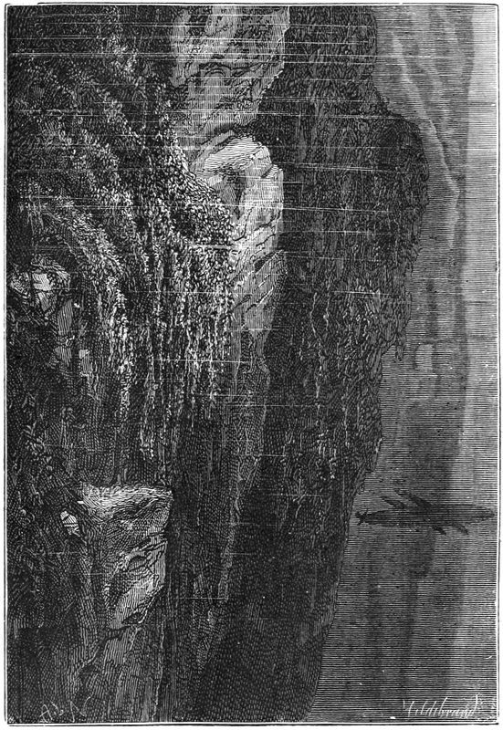
At half past eight we were back aboard the Nautilus.
There I began to reflect on the incidents of our excursion to the Mannar bank. Two observations inevitably emerged from it. One bore on Captain Nemo’s unequaled daring, the other on his devotion to a human being, one of the representatives of that race he was fleeing beneath the seas. Whatever he might say, this strange man had not yet succeeded in killing his heart entirely.
When I made this observation to him, he answered me in a slightly moved tone:
“That Indian, Professor, is an inhabitant of the land of the oppressed, and I am still, and until my last breath I shall be, of that land!”
During the day of January 29, the island of Ceylon disappeared below the horizon, and the Nautilus, at a speed of twenty miles an hour, slipped into the labyrinth of channels that separate the Maldives from the Laccadives. It even skirted Kiltan Island, a land of madreporic origin, discovered by Vasco da Gama in 1499 and one of the nineteen main islands of the Laccadive archipelago, which lies between 10° and 14° 30′ north latitude and between 69° 50′ and 72° east longitude.
We had by then covered sixteen thousand two hundred twenty miles, or seven thousand five hundred leagues, since our starting point in the seas of Japan.
The next day, January 30, when the Nautilus came back to the surface of the ocean, there was no land in sight at all. It was heading north-northwest, toward the Sea of Oman, which lies hollowed out between Arabia and the Indian peninsula and serves as the outlet of the Persian Gulf.
That was clearly a dead end, with no possible way out. Where, then, was Captain Nemo taking us? I could not have said. This did not satisfy the Canadian, who that day asked me where we were going.
“We are going, Master Ned, wherever the captain’s fancy takes us.”
“That fancy,” answered the Canadian, “can’t take us far. The Persian Gulf has no way out, and if we go in, we won’t be long in turning back.”
“Well, we’ll turn back, Master Land, and if after the Persian Gulf the Nautilus wants to visit the Red Sea, the Strait of Bab el Mandeb is always there to let it through.”
“I don’t need to tell you, sir,” answered Ned Land, “that the Red Sea is no less closed than the gulf, since the Isthmus of Suez hasn’t been cut through yet, and even if it were, a mysterious boat like ours wouldn’t risk itself in canals broken up by locks. So the Red Sea isn’t yet the road that will take us back to Europe.”
“And I didn’t say we would go back to Europe.”
“What do you suppose, then?”
“I suppose that after visiting these curious regions of Arabia and Egypt, the Nautilus will go back down the Indian Ocean, perhaps through the Mozambique Channel, perhaps off the Mascarenes, so as to reach the Cape of Good Hope.”
“And once at the Cape of Good Hope?” asked the Canadian with quite particular insistence.
“Well, we shall enter that Atlantic we don’t yet know. Come now, friend Ned, are you getting tired of this voyage under the seas? Have you grown weary of the endlessly varied spectacle of underwater wonders? For my part, I shall be extremely sorry to see the end of this voyage that so few men will have been granted.”
“But do you know, Monsieur Aronnax,” answered the Canadian, “that we’ve been imprisoned aboard this Nautilus for nearly three months now?”
“No, Ned, I don’t know it, I don’t want to know it, and I count neither the days nor the hours.”
“But how will it end?”
“The end will come in its own time. Besides, there’s nothing we can do about it, and we are arguing to no purpose. If you came and said to me, my good Ned, ‘A chance of escape is open to us,’ I would discuss it with you. But that is not the case, and, to speak frankly, I don’t believe Captain Nemo will ever venture into European seas.”
From this short dialogue it will be seen that, a fanatic of the Nautilus, I had become one with its commander.
As for Ned Land, he ended the conversation with these words, in the form of a monologue: “That’s all well and good, but in my opinion, where there’s constraint, there’s no more pleasure.”
For four days, until February 3, the Nautilus visited the Sea of Oman, at various speeds and various depths. It seemed to move at random, as if it were hesitating over which route to follow, but it never went beyond the Tropic of Cancer.
As we left that sea, we sighted Muscat for a moment, the most important town in the country of Oman. I admired its strange appearance in the midst of the black rocks that surround it, against which its houses and forts stand out in white. I caught sight of the rounded domes of its mosques, the elegant points of its minarets, and its cool, green terraces. But it was only a vision, and the Nautilus soon sank beneath the dark waves of these waters.
Then it ran along the Arabian coasts of Mahra and Hadhramaut, at a distance of six miles, with their undulating line of mountains relieved by a few ancient ruins. On February 5 we finally entered the Gulf of Aden, a true funnel set into the neck of Bab el Mandeb, which pours the Indian waters into the Red Sea.
On February 6 the Nautilus was floating in sight of Aden, perched on a promontory joined to the continent by a narrow isthmus, a kind of inaccessible Gibraltar whose fortifications the English rebuilt after seizing it in 1839. I glimpsed the octagonal minarets of this town, which was once the richest and busiest trading post on the coast, according to the historian Idrisi.
I firmly believed that Captain Nemo, having reached this point, was going to turn back; but I was mistaken, and, to my great surprise, he did nothing of the kind.
The next day, February 7, we entered the Strait of Bab el Mandeb, whose name means in Arabic “the Gate of Tears.” Twenty miles wide, it is only fifty-two kilometers long, and for the Nautilus, launched at full speed, getting through it was a matter of barely an hour. But I saw nothing, not even the island of Perim, by which the British government has fortified the position of Aden. Too many English or French steamers of the lines from Suez to Bombay, Calcutta, Melbourne, Réunion, and Mauritius plowed through this narrow passage for the Nautilus to try to show itself there. So it prudently kept underwater.
At last, at noon, we were plowing the waves of the Red Sea.
The Red Sea, a lake famous in biblical tradition, scarcely refreshed by rain, watered by no important river, ceaselessly drained by excessive evaporation, and losing every year a layer of water a meter and a half deep! A singular gulf, which, if it were closed off and in the condition of a lake, might perhaps dry up entirely; in this it is inferior to its neighbors the Caspian or the Dead Sea, whose level has dropped only to the point where their evaporation exactly equals the amount of water they receive.
This Red Sea is two thousand six hundred kilometers long, with an average width of two hundred forty. In the time of the Ptolemies and the Roman emperors it was the great commercial artery of the world, and the cutting of the isthmus will restore to it that ancient importance which the Suez railways have already partly brought back.
I did not even try to understand the whim that could have led Captain Nemo to take us into this gulf. But I approved wholeheartedly of the Nautilus for having entered it. It went at a moderate pace, sometimes staying on the surface, sometimes diving to avoid some ship, and in this way I was able to observe both the inside and the surface of this very curious sea.
On February 8, in the first hours of the day, Mocha appeared before us, a town now in ruins, whose walls fall down at the mere sound of a cannon, sheltered here and there by a few green date palms. Once an important city, it held six public markets and twenty-six mosques, and its walls, defended by fourteen forts, formed a belt three kilometers around it.
Then the Nautilus drew closer to the African shores, where the sea is deeper. There, underwater, in waters as clear as crystal, through the open panels, it allowed us to gaze at admirable bushes of brilliant corals and vast stretches of rock clad in a splendid green fur of algae and fucus. What an indescribable spectacle, and what a variety of sites and landscapes at the level of the reefs and volcanic islets that border the Libyan coast! But where these growths appeared in all their beauty was toward the eastern shores, which the Nautilus soon rejoined. It was along the coasts of Tihama, for there these displays of zoophytes not only flourished below sea level but also formed picturesque interlacings that unrolled ten fathoms above it; the latter more whimsical but less colorful than the former, whose freshness was kept up by the moist vitality of the waters.
How many charming hours I spent thus at the drawing-room window! How many new specimens of underwater flora and fauna I admired under the glow of our electric beacon! Mushroom-shaped fungia, slate-colored sea anemones, among them the Thalassianthus aster, organ-pipe corals arranged like flutes and only waiting for the breath of the god Pan, shells peculiar to this sea, which settle in madreporic hollows and whose bases are coiled in a short spiral, and finally a thousand specimens of a polypary I had not yet observed, the common sponge.
The class of sponges, the first of the group of polyps, was created precisely for this curious product, whose usefulness is beyond dispute. The sponge is not a plant at all, as some naturalists still allow, but an animal of the lowest order, a polypary inferior to coral. Its animal nature is not in doubt, and one cannot even adopt the opinion of the ancients, who regarded it as a being halfway between plant and animal. I must say, however, that naturalists do not agree on the sponge’s mode of organization. For some it is a polypary, and for others, such as Mr. Milne-Edwards, it is a single, isolated individual.
The class of sponges contains about three hundred species, found in a great many seas, and even in certain streams, where they have been given the name “fluviatile.” But their favorite waters are those of the Mediterranean, the Greek archipelago, the coast of Syria, and the Red Sea. There breed and grow the fine soft sponges whose value rises as high as a hundred fifty francs, the blond sponge of Syria, the hard sponge of Barbary, and so on. But since I could not hope to study these zoophytes in the ports of the Levant, from which we were separated by the impassable Isthmus of Suez, I contented myself with observing them in the waters of the Red Sea.
So I called Conseil to my side, while the Nautilus, at an average depth of eight to nine meters, slowly skimmed all those beautiful rocks of the eastern coast.
There grew sponges of every shape: stalked, leaflike, globular, and fingerlike sponges. They quite accurately justified the names of baskets, chalices, distaffs, elk horns, lion’s paws, peacock’s tails, and Neptune’s gloves that the fishermen, more poetic than the scientists, have given them. From their fibrous tissue, coated with a half-fluid gelatinous substance, little streams of water constantly escaped, which, after carrying life into each cell, were expelled from it by a contractile movement. This substance disappears after the polyp’s death and putrefies, giving off ammonia. Nothing then remains but the horny or gelatinous fibers that make up the household sponge, which takes on a reddish tint and is put to various uses according to its degree of elasticity, permeability, or resistance to maceration.
These polyparies clung to the rocks, to the shells of mollusks, and even to the stems of hydrophytes. They filled the smallest crevices, some spreading out, others standing up or hanging down like coral growths. I taught Conseil that these sponges are fished in two ways, either by dredge or by hand. The latter method, which requires divers, is preferable, for by sparing the tissue of the polypary it leaves it with a much higher value.
The other zoophytes that swarmed near the sponges consisted mainly of jellyfish of a very elegant species; the mollusks were represented by varieties of squid which, according to d’Orbigny, are peculiar to the Red Sea; and the reptiles by virgata turtles, belonging to the genus Chelonia, which supplied our table with a wholesome and delicate dish.
As for the fish, they were numerous and often remarkable. Here are those the nets of the Nautilus brought aboard most often: rays, among them oval, brick-colored limma rays, with bodies sprinkled with uneven blue spots and recognizable by their double serrated sting; silver-backed arnacks; stingrays with dotted tails; and bockats, vast cloaks two meters long that undulated in midwater; aodons, completely toothless, a kind of cartilaginous fish close to the shark; dromedary trunkfish, whose humps end in a curved spine a foot and a half long; ophidia, veritable morays with silver tails, bluish backs, and brown pectoral fins edged with a gray border; fiatola, a species of butterfish, striped with narrow gold bands and wearing the three colors of France; garamit blennies four decimeters long; superb jacks, decorated with seven crosswise bands of a beautiful black, with blue and yellow fins and scales of gold and silver; centropods; golden-headed oriflamme goatfish; parrotfish, wrasses, triggerfish, gobies, and so on, and a thousand other fish common to the oceans we had already crossed.
On February 9 the Nautilus was floating in the widest part of the Red Sea, which lies between Suakin on the west coast and Al Qunfudhah on the east coast, across a span of one hundred ninety miles.
That day at noon, after our position had been taken, Captain Nemo came up onto the platform where I was. I promised myself not to let him go back down without at least sounding him out about his further plans. He came over to me as soon as he saw me, graciously offered me a cigar, and said:
“Well, Professor, do you like this Red Sea? Have you observed enough of the wonders it covers, its fish and its zoophytes, its beds of sponges and its forests of coral? Have you glimpsed the towns scattered along its shores?”
“Yes, Captain Nemo,” I answered, “and the Nautilus has lent itself marvelously to this whole study. Ah, it is an intelligent boat!”
“Yes, sir, intelligent, bold, and invulnerable! It fears neither the terrible storms of the Red Sea, nor its currents, nor its reefs.”
“Indeed,” I said, “this sea is counted among the worst, and, if I am not mistaken, in ancient times its reputation was detestable.”
“Detestable, Monsieur Aronnax. The Greek and Latin historians do not speak well of it, and Strabo says it is particularly harsh at the time of the Etesian winds and in the rainy season. The Arab Idrisi, who describes it under the name of the Gulf of Colzoum, relates that ships were lost in great numbers on its sandbanks and that no one ventured to sail it at night. It is, he claims, a sea subject to frightful hurricanes, strewn with inhospitable islands, and ‘offering nothing good’ either in its depths or on its surface. And indeed, that is the opinion found in Arrian, Agatharchides, and Artemidorus.”

“It’s plain,” I replied, “that those historians never sailed aboard the Nautilus.”
“Indeed,” answered the captain with a smile, “and in that respect the moderns are no further along than the ancients. It took many centuries to find the mechanical power of steam! Who knows whether in a hundred years a second Nautilus will be seen! Progress is slow, Monsieur Aronnax.”
“That is true,” I answered. “Your ship is a century ahead of its time, perhaps several. What a pity that such a secret must die with its inventor!”
Captain Nemo did not answer me. After a few minutes of silence:

“You were telling me,” he said, “about the ancient historians’ opinion of the dangers of sailing the Red Sea?”
“That’s true,” I answered, “but weren’t their fears exaggerated?”
“Yes and no, Monsieur Aronnax,” answered Captain Nemo, who seemed to me to know “his Red Sea” thoroughly. “What is no longer dangerous for a modern ship, well rigged, solidly built, and master of its course thanks to obedient steam, offered all kinds of perils to the vessels of the ancients. One must picture those first navigators venturing out in boats made of planks sewn together with palm-fiber cords, caulked with pounded resin, and coated with dogfish grease. They did not even have instruments for taking their bearings, and they proceeded by dead reckoning in the midst of currents they scarcely knew. Under those conditions shipwrecks were, and had to be, numerous. But in our day, the steamers that run between Suez and the southern seas have nothing more to fear from this gulf’s fits of anger, in spite of contrary monsoons. Their captains and passengers do not prepare for departure with propitiatory sacrifices, and, on their return, they no longer go, adorned with garlands and gilded ribbons, to thank the gods in the nearby temple.”
“I grant that,” I said, “and steam seems to me to have killed gratitude in sailors’ hearts. But, Captain, since you seem to have made a special study of this sea, can you tell me the origin of its name?”
“There are many explanations on that subject, Monsieur Aronnax. Would you like to know the opinion of a fourteenth-century chronicler?”
“Gladly.”
“This fanciful fellow claims that it was given its name after the passage of the Israelites, when Pharaoh had perished in the waves that closed again at the voice of Moses:
“In token of this wondrous deed, The sea turned red and crimson indeed. Thenceforth they knew not how to name it Other than the Red Sea, and so they claim it.”
“A poet’s explanation, Captain Nemo,” I answered, “but I could not be satisfied with it. So I will ask you for your own opinion.”
“Here it is. In my view, Monsieur Aronnax, this name of Red Sea should be seen as a translation of the Hebrew word ‘Edrom,’ and if the ancients gave it that name, it was because of the particular coloring of its waters.”
“So far, however, I have seen only clear waves without any particular tint.”
“No doubt, but as we move toward the head of the gulf, you will notice this singular appearance. I remember seeing the bay of Tor entirely red, like a lake of blood.”
“And you attribute this color to the presence of a microscopic alga?”
“Yes. It is a purple mucilaginous matter produced by those puny little plants known as Trichodesmium, forty thousand of which are needed to fill the space of one square millimeter. Perhaps you will come across some when we are at Tor.”
“So, Captain Nemo, this is not the first time you have crossed the Red Sea aboard the Nautilus?”
“No, sir.”
“Then, since you spoke just now of the passage of the Israelites and the catastrophe of the Egyptians, I will ask whether you have found under the waters any traces of that great historical event.”
“No, Professor, and for an excellent reason.”
“What is that?”
“The very spot where Moses crossed with all his people is now so silted up that camels can barely wet their legs there. You understand that my Nautilus would not have enough water.”
“And that spot?…” I asked.
“That spot lies a little above Suez, in the arm that once formed a deep estuary, when the Red Sea stretched as far as the Bitter Lakes. Now, whether that crossing was miraculous or not, the Israelites did cross there to reach the Promised Land, and Pharaoh’s army perished precisely at that spot. I therefore think that excavations carried out in those sands would bring to light a great quantity of weapons and instruments of Egyptian origin.”
“That is obvious,” I answered, “and one must hope, for the archaeologists’ sake, that those excavations will be made sooner or later, when new towns are established on this isthmus after the cutting of the Suez Canal. A canal quite useless for a ship such as the Nautilus!”
“No doubt, but useful to the whole world,” said Captain Nemo. “The ancients well understood how useful it would be for their commercial affairs to establish a link between the Red Sea and the Mediterranean; but they never thought of digging a direct canal, and they used the Nile as the intermediary. Very probably, the canal that joined the Nile to the Red Sea was begun under Sesostris, if tradition is to be believed. What is certain is that, 615 years before Christ, Necho undertook the works for a canal fed by the waters of the Nile, across the plain of Egypt that faces Arabia. This canal took four days to go up, and its width was such that two triremes could pass through it abreast. It was continued by Darius, son of Hystaspes, and probably completed by Ptolemy II. Strabo saw it used for navigation; but the slightness of its slope between its starting point, near Bubastis, and the Red Sea made it navigable only a few months a year. This canal served trade until the century of the Antonines; abandoned, silted up, then restored by order of the caliph Omar, it was finally filled in, in 761 or 762, by the caliph Al-Mansur, who wanted to stop provisions from reaching Mohammed ibn Abdallah, who had revolted against him. During the Egyptian expedition, your General Bonaparte found the traces of these works in the desert of Suez, and, caught by the tide, he nearly perished a few hours before reaching Hadjaroth, at the very place where Moses had camped three thousand three hundred years before him.”
“Well, Captain, what the ancients did not dare undertake, this junction between the two seas, which will shorten the route from Cádiz to the Indies by nine thousand kilometers, Mr. de Lesseps has done, and before long he will have turned Africa into an immense island.”
“Yes, Monsieur Aronnax, and you have the right to be proud of your countryman. He is a man who does a nation more honor than the greatest captains! He began, like so many others, with troubles and rebuffs, but he has triumphed, for he has the genius of will. And it is sad to think that this work, which should have been an international work, which would have been enough to make a reign illustrious, will have succeeded only through the energy of a single man. So, all honor to Mr. de Lesseps!”
“Yes, all honor to that great citizen,” I answered, quite surprised at the tone in which Captain Nemo had just spoken.
“Unfortunately,” he went on, “I cannot take you through the Suez Canal, but you will be able to see the long jetties of Port Said the day after tomorrow, when we are in the Mediterranean.”
“In the Mediterranean!” I cried.
“Yes, Professor. Does that surprise you?”
“What surprises me is to think that we shall be there the day after tomorrow.”
“Really?”
“Yes, Captain, although I ought to be used to being surprised by nothing since I have been aboard your ship!”
“But what is the reason for this surprise?”
“The frightful speed you will be forced to give the Nautilus if it is to be in the open Mediterranean the day after tomorrow, having gone around Africa and rounded the Cape of Good Hope!”
“And who told you that it will go around Africa, Professor? Who said anything about rounding the Cape of Good Hope?”
“And yet, unless the Nautilus sails on dry land and passes over the isthmus…”
“Or under it, Monsieur Aronnax.”
“Under it?”
“Certainly,” Captain Nemo answered calmly. “Long ago nature made under this tongue of land what men are making today on its surface.”
“What! There is a passage?”
“Yes, an underground passage that I have named the Arabian Tunnel. It begins below Suez and comes out in the Gulf of Pelusium.”
“But isn’t this isthmus made up only of shifting sands?”
“Down to a certain depth. But at only fifty meters there is an unshakable bed of rock.”
“And was it by chance that you discovered this passage?” I asked, more and more surprised.
“Chance and reasoning, Professor, and even more reasoning than chance.”
“Captain, I am listening to you, but my ear resists what it hears.”
“Ah, sir! Aures habent et non audient holds true in every age. Not only does this passage exist, but I have used it several times. Otherwise I would not have ventured into this dead end of the Red Sea today.”
“Is it indiscreet to ask you how you discovered this tunnel?”
“Sir,” the captain answered me, “there can be nothing secret between people who are never to part again.”
I let the insinuation pass and waited for Captain Nemo’s account.
“Professor,” he said to me, “it was a simple naturalist’s reasoning that led me to discover this passage, which I alone know. I had noticed that in the Red Sea and in the Mediterranean there were a certain number of fish of absolutely identical species: ophidia, fiatola, rainbow wrasses, perches, sand smelts, flying fish. Certain of this fact, I asked myself whether there was not some communication between the two seas. If there was, the underground current had to flow from the Red Sea to the Mediterranean, simply from the difference in levels. So I caught a great number of fish in the neighborhood of Suez. I slipped a copper ring onto their tails and threw them back into the sea. A few months later, on the coasts of Syria, I caught again a few specimens of my fish adorned with their telltale rings. The communication between the two was thus proved to me. I searched for it with my Nautilus, I discovered it, I ventured into it, and before long, Professor, you too will have passed through my Arabian tunnel!”
That same day, I reported to Conseil and Ned Land the part of this conversation that concerned them directly. When I told them that in two days we would be in the midst of the waters of the Mediterranean, Conseil clapped his hands, but the Canadian shrugged his shoulders.
“An underwater tunnel!” he cried. “A link between the two seas! Who ever heard of such a thing?”
“Friend Ned,” answered Conseil, “had you ever heard of the Nautilus? No! And yet it exists. So don’t shrug your shoulders so lightly, and don’t reject things on the pretext that you’ve never heard of them.”
“We’ll see!” retorted Ned Land, shaking his head. “After all, I ask nothing better than to believe in this captain’s passage, and heaven grant that he does take us into the Mediterranean.”
That same evening, at 21° 30′ north latitude, the Nautilus, floating on the surface of the sea, drew near the Arabian coast. I caught sight of Jeddah, an important trading post for Egypt, Syria, Turkey, and the Indies. I made out fairly clearly the whole of its buildings, the ships moored along the quays, and those whose draft obliged them to anchor in the roadstead. The sun, quite low on the horizon, struck the houses of the town full on and brought out their whiteness. Outside the town, a few huts of wood or reeds marked the quarter inhabited by the Bedouins.
Soon Jeddah faded into the shadows of evening, and the Nautilus went back under the slightly phosphorescent waters.
The next day, February 10, several ships appeared, running on the opposite tack to ours. The Nautilus resumed its underwater navigation; but at noon, when our position was taken, the sea being deserted, it rose again to its waterline.
Accompanied by Ned and Conseil, I came and sat down on the platform. The coast to the east showed as a mass barely sketched in a damp fog.
Leaning against the sides of the skiff, we were chatting about one thing and another when Ned Land, stretching his hand toward a point on the sea, said to me:
“Do you see something there, Professor?”
“No, Ned,” I answered, “but I don’t have your eyes, as you know.”
“Look carefully,” Ned went on, “there, off the starboard bow, about level with the beacon! Don’t you see a mass that seems to be moving?”
“Indeed,” I said, after observing attentively, “I can make out something like a long blackish body on the surface of the water.”
“Another Nautilus?” said Conseil.
“No,” answered the Canadian, “but unless I’m very much mistaken, that’s some sea animal.”
“Are there whales in the Red Sea?” asked Conseil.
“Yes, my boy,” I answered, “they are met with sometimes.”
“That’s no whale,” Ned Land went on, never taking his eyes off the object he had pointed out. “Whales and I are old acquaintances, and I wouldn’t mistake the way they move.”
“Let’s wait,” said Conseil. “The Nautilus is heading that way, and before long we’ll know what to make of it.”
Indeed, the blackish object was soon only a mile from us. It looked like a big reef stranded in the open sea. What was it? I could not yet say.
“Ah! It’s moving! It’s diving!” cried Ned Land. “A thousand devils! What can that animal be? It doesn’t have a forked tail like whales or sperm whales, and its flippers look like stumps of limbs.”
“But then…” I said.
“Good,” the Canadian went on, “there it is on its back, and it’s raising its breasts in the air!”
“It’s a siren,” cried Conseil, “a real siren, if master doesn’t mind.”
That word siren put me on the right track, and I understood that this animal belonged to the order of sea creatures from which legend has made the sirens, half women and half fish.
“No,” I said to Conseil, “it is not a siren, but a curious creature of which only a few specimens are left in the Red Sea. It is a dugong.”
“Order Sirenia, group Pisciformes, subclass Monodelphia, class Mammalia, branch Vertebrata,” answered Conseil.
And when Conseil had spoken thus, there was nothing more to say.
Meanwhile Ned Land was still looking. His eyes shone with greed at the sight of this animal. His hand seemed ready to harpoon it. One would have said he was waiting for the moment to throw himself into the sea and attack it in its own element.

“Oh, sir,” he said to me in a voice trembling with emotion, “I’ve never killed one of ‘those.’”
The whole harpooner was in that word.
At that moment Captain Nemo appeared on the platform. He saw the dugong. He understood the Canadian’s attitude, and, addressing him directly:
“If you were holding a harpoon, Master Land, wouldn’t it burn your hand?”
“Just as you say, sir.”
“And you wouldn’t mind taking up your fisherman’s trade again for a day, and adding this cetacean to the list of those you have already struck?”

“I wouldn’t mind at all.”
“Well, you may try.”
“Thank you, sir,” answered Ned Land, whose eyes blazed.
“Only,” the captain went on, “I urge you not to miss this animal, and that in your own interest.”
“Is this dugong dangerous to attack?” I asked, in spite of the Canadian’s shrug.
“Yes, sometimes,” answered the captain. “The animal turns on its attackers and capsizes their boat. But for Master Land this danger is not to be feared. His eye is quick, his arm is sure. If I urge him not to miss this dugong, it is because it is rightly regarded as fine game, and I know that Master Land does not dislike a good morsel.”
“Ah!” said the Canadian. “So that beast also allows itself the luxury of being good to eat?”
“Yes, Master Land. Its flesh, a real meat, is extremely prized, and throughout Malaysia it is reserved for the tables of princes. So this excellent animal is hunted so relentlessly that, like the manatee, its relative, it is becoming rarer and rarer.”
“Then, Captain,” Conseil said seriously, “if by chance this one were the last of its race, wouldn’t it be proper to spare it, in the interest of science?”
“Maybe,” replied the Canadian, “but in the interest of the kitchen, it’s better to hunt it.”
“Go ahead, then, Master Land,” answered Captain Nemo.
At that moment seven men of the crew, mute and impassive as always, came up onto the platform. One carried a harpoon and a line like those used by whalers. The skiff was unbolted, pulled out of its socket, and launched into the sea. Six oarsmen took their places on their benches, and the coxswain took the tiller. Ned, Conseil, and I sat down at the stern.
“Aren’t you coming, Captain?” I asked.
“No, sir, but I wish you good hunting.”
The skiff pushed off and, driven by its six oars, headed swiftly toward the dugong, which was then floating two miles from the Nautilus.
When it had come within a few cable lengths of the cetacean, it slowed down, and the oars dipped noiselessly into the calm waters. Ned Land, harpoon in hand, went and stood in the bow of the skiff. The harpoon used to strike the whale is usually attached to a very long rope that pays out rapidly when the wounded animal drags it along. But here the rope measured no more than ten fathoms or so, and its end was simply made fast to a small barrel which, by floating, was to show the dugong’s course under the water.
I had stood up and was observing the Canadian’s adversary distinctly. This dugong, which also goes by the name of halicore, looked very much like the manatee. Its oblong body ended in a very elongated tail, and its lateral fins in veritable fingers. It differed from the manatee in that its upper jaw was armed with two long, pointed teeth, which formed diverging tusks on each side.
This dugong that Ned Land was preparing to attack was of colossal size, and its length exceeded seven meters at least. It did not stir and seemed to be sleeping on the surface of the waves, a circumstance that made its capture easier.
The skiff cautiously approached to within three fathoms of the animal. The oars stayed poised in their rowlocks. I half rose. Ned Land, his body thrown back a little, was brandishing his harpoon with a practiced hand.
Suddenly a hissing was heard, and the dugong disappeared. The harpoon, thrown with force, had no doubt struck only water.
“A thousand devils!” cried the furious Canadian. “I missed it!”
“No,” I said, “the animal is wounded, here’s its blood, but your weapon didn’t stay in its body.”
“My harpoon! My harpoon!” cried Ned Land.
The sailors started rowing again, and the coxswain steered the boat toward the floating barrel. Once the harpoon had been fished out, the skiff set off in pursuit of the animal.
The latter came back to the surface of the sea from time to time to breathe. Its wound had not weakened it, for it was racing away with extreme speed. The boat, driven by vigorous arms, flew on its track. Several times it came within a few fathoms of it, and the Canadian stood ready to strike; but the dugong slipped away with a sudden dive, and it was impossible to reach it.
One can imagine the anger that overexcited the impatient Ned Land. He hurled at the unfortunate animal the most energetic oaths in the English language. For my part, I was still merely vexed to see the dugong thwart all our tricks.
We pursued it relentlessly for an hour, and I was beginning to think it would be very hard to capture when the animal was seized by an ill-fated idea of revenge, which it was to regret. It came back at the skiff to attack it in its turn.
This maneuver did not escape the Canadian.
“Look out!” he said.
The coxswain spoke a few words of his strange language, and no doubt warned his men to be on their guard.
The dugong, having come within twenty feet of the skiff, stopped and abruptly sniffed the air with its vast nostrils, which were pierced not at the tip but on the upper part of its muzzle. Then, gathering momentum, it hurled itself at us.
The skiff could not avoid the impact; half overturned, it shipped a ton or two of water, which had to be bailed out; but, thanks to the coxswain’s skill, it was struck at an angle and not head-on, and it did not capsize. Ned Land, clinging to the stem, was riddling the gigantic animal with harpoon thrusts, while the beast, its teeth sunk into the gunwale, was lifting the boat out of the water as a lion does a roe deer. We were thrown on top of one another, and I do not quite know how the adventure would have ended if the Canadian, still relentless against the beast, had not finally struck it in the heart.
I heard the grinding of teeth on the metal plating, and the dugong disappeared, dragging the harpoon with it. But soon the barrel came back to the surface, and a few moments later the animal’s body appeared, turned over on its back. The skiff reached it, took it in tow, and headed for the Nautilus.
Very powerful tackle had to be used to hoist the dugong onto the platform. It weighed five thousand kilograms. It was cut up before the eyes of the Canadian, who insisted on following every detail of the operation. That same day, at dinner, the steward served me a few slices of this flesh, skillfully prepared by the ship’s cook. I found it excellent, and even better than veal, if not beef.
The next day, February 11, the pantry of the Nautilus was enriched with yet more delicate game. A flock of sea swallows alighted on the Nautilus. They were a species of Sterna nilotica, peculiar to Egypt, whose beaks are black, heads gray and dotted, eyes surrounded with white dots, backs, wings, and tails grayish, bellies and throats white, and feet red. A few dozen Nile ducks were also caught, wild birds of high flavor, whose necks and the tops of whose heads are white, speckled with black.
The speed of the Nautilus was then moderate. It was moving along at a leisurely stroll, so to speak. I observed that the water of the Red Sea was becoming less and less salty as we approached Suez.
Toward five in the evening, we sighted Cape Ras Muhammad to the north. It is this cape that forms the tip of Arabia Petraea, lying between the Gulf of Suez and the Gulf of Aqaba.
The Nautilus entered the Strait of Jubal, which leads to the Gulf of Suez. I distinctly saw a high mountain overlooking Ras Muhammad between the two gulfs. It was Mount Horeb, that Sinai on whose summit Moses saw God face to face, and which the mind pictures as forever crowned with lightning.
At six o’clock, the Nautilus, sometimes floating, sometimes submerged, passed off Tor, which lies at the head of a bay whose waters seemed tinged with red, as Captain Nemo had already observed. Then night fell, in the midst of a heavy silence broken now and then by the cry of the pelican and of a few night birds, the noise of the surf chafing against the rocks, or the distant groan of a steamer beating the waters of the gulf with its resounding paddles.
From eight to nine o’clock the Nautilus stayed a few meters underwater. By my reckoning, we had to be very near Suez. Through the drawing-room panels I could see rocky bottoms brightly lit by our electric light. It seemed to me that the strait was growing narrower and narrower.
At a quarter past nine, the boat having come back to the surface, I went up onto the platform. Very impatient to pass through Captain Nemo’s tunnel, I could not keep still, and I was trying to breathe the cool night air.
Soon, in the darkness, I caught sight of a pale light, half faded by the mist, shining a mile away from us.
“A lightship,” someone said beside me.
I turned and recognized the captain.
“It is the Suez lightship,” he went on. “We shall soon reach the mouth of the tunnel.”
“The entrance must not be easy?”
“No, sir. That is why I make a habit of staying in the helmsman’s cage to direct the maneuver myself. And now, if you will go below, Monsieur Aronnax, the Nautilus is going to sink under the waves, and it will not come back to the surface until it has passed through the Arabian Tunnel.”
I followed Captain Nemo. The hatch closed, the water tanks filled, and the vessel submerged some ten meters.
Just as I was getting ready to return to my room, the captain stopped me.
“Professor,” he said to me, “would you care to come with me into the pilothouse?”
“I didn’t dare ask you,” I answered.
“Come, then. That way you will see all that can be seen of this navigation, which is at once underground and underwater.”
Captain Nemo led me to the central staircase. Halfway up, he opened a door, followed the upper gangways, and arrived at the pilothouse, which, as we know, rose at the end of the platform.
It was a cabin measuring six feet on each side, much like those occupied by the pilots of steamboats on the Mississippi or the Hudson. In the middle was a wheel, set vertically, geared to the rudder chains that ran to the stern of the Nautilus. Four portholes of lenticular glass, set into the walls of the cabin, allowed the helmsman to look in every direction.
The cabin was dark; but soon my eyes grew used to the darkness, and I made out the pilot, a vigorous man, whose hands rested on the rim of the wheel. Outside, the sea appeared brightly lit by the beacon shining behind the cabin, at the other end of the platform.
“Now,” said Captain Nemo, “let us look for our passage.”
Electric wires connected the helmsman’s cage with the engine room, and from there the captain could communicate both direction and motion to his Nautilus at the same time. He pressed a metal button, and at once the speed of the propeller was greatly reduced.
I was silently watching the high, very steep wall we were running along at that moment, the unshakable base of the sandy mass of the coast. We followed it in this way for an hour, only a few meters away. Captain Nemo did not take his eyes off the compass hanging in the cabin on its two concentric rings. At a simple gesture, the helmsman changed the direction of the Nautilus at every moment.
I had placed myself at the port porthole, and I could see magnificent coral substructures, zoophytes, algae, and crustaceans waving their enormous legs, which stretched out from the crevices of the rock.
At a quarter past ten, Captain Nemo took the helm himself. A wide gallery, black and deep, opened before us. The Nautilus boldly plunged into it. An unusual rustling was heard along its sides. It was the waters of the Red Sea, which the slope of the tunnel was hurling toward the Mediterranean. The Nautilus followed the torrent, swift as an arrow, in spite of the efforts of its engine, which beat the waves with its propeller in reverse to resist.
On the narrow walls of the passage I could now see only brilliant streaks, straight lines, furrows of fire traced by our speed under the glare of the electricity. My heart was pounding, and I pressed it with my hand.
At thirty-five minutes past ten, Captain Nemo let go of the wheel, and, turning toward me:
“The Mediterranean,” he said to me.
In less than twenty minutes the Nautilus, carried along by that torrent, had passed through the Isthmus of Suez.
The next day, February 12, at daybreak, the Nautilus rose to the surface of the waves. I rushed onto the platform. Three miles to the south the vague outline of Pelusium could be seen. A torrent had carried us from one sea to the other. But this tunnel, easy to go down, must have been impossible to go back up.
Toward seven o’clock Ned and Conseil joined me. These two inseparable companions had slept peacefully, without troubling themselves any further about the exploits of the Nautilus.
“Well, Mr. Naturalist,” asked the Canadian in a slightly mocking tone, “what about this Mediterranean?”
“We are floating on its surface, friend Ned.”
“What!” said Conseil. “Last night itself?…”
“Yes, last night itself, in a few minutes, we passed through that impassable isthmus.”
“I don’t believe a word of it,” answered the Canadian.
“And you are wrong, Master Land,” I went on. “That low coast curving round to the south is the Egyptian coast.”
“Tell that to someone else, sir,” retorted the stubborn Canadian.
“But since master says so,” Conseil said to him, “master must be believed.”
“Besides, Ned, Captain Nemo did me the honors of his tunnel, and I was beside him in the helmsman’s cage while he himself steered the Nautilus through that narrow passage.”
“You hear, Ned?” said Conseil.
“And you who have such good eyes,” I added, “can make out, Ned, the jetties of Port Said stretching out into the sea.”
The Canadian looked carefully.
“Indeed,” he said, “you’re right, Professor, and your captain is a masterly man. We’re in the Mediterranean. Good. So let’s talk, if you please, about our little affairs, but in such a way that nobody can hear us.”

I saw clearly what the Canadian was driving at. In any case, I thought it better to talk, since he wished it, and all three of us went and sat down near the beacon, where we were less exposed to the damp spray of the waves.
“Now, Ned, we are listening,” I said. “What do you have to tell us?”
“What I have to tell you is very simple,” answered the Canadian. “We’re in Europe, and before Captain Nemo’s whims drag us to the bottom of the polar seas or take us back to Oceania, I ask to leave the Nautilus.”
I will admit that this discussion with the Canadian always embarrassed me. I did not in any way want to hinder my companions’ freedom, and yet I felt no desire to leave Captain Nemo. Thanks to him, thanks to his vessel, I was completing my underwater studies every day, and I was rewriting my book on the ocean depths in the very midst of its element. Would I ever again find such an opportunity to observe the wonders of the ocean? Certainly not! So I could not get used to the idea of abandoning the Nautilus before our cycle of investigations was complete.
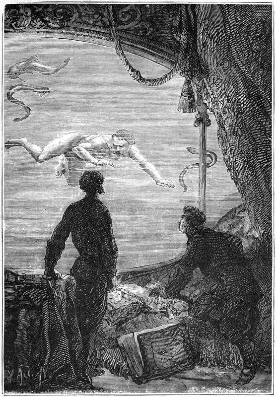
“Friend Ned,” I said, “answer me frankly. Are you bored aboard? Are you sorry that fate threw you into Captain Nemo’s hands?”
The Canadian stayed a few moments without answering. Then, crossing his arms:
“Frankly,” he said, “I’m not sorry about this voyage under the seas. I’ll be glad to have made it; but to have made it, it has to end. That’s how I feel.”
“It will end, Ned.”
“Where and when?”
“Where? I have no idea. When? I can’t say, or rather I suppose it will come to an end when these seas have nothing more to teach us. Everything that has begun must necessarily end in this world.”
“I think as master does,” answered Conseil, “and it is quite possible that after crossing all the seas of the globe, Captain Nemo will let all three of us fly away.”
“Fly away!” cried the Canadian. “Send us flying, you mean?”
“Let’s not exaggerate, Master Land,” I went on. “We have nothing to fear from the captain, but I don’t share Conseil’s ideas either. We are masters of the secrets of the Nautilus, and I don’t expect its commander, in order to give us back our freedom, to resign himself to seeing those secrets travel the world with us.”
“But then, what do you expect?” asked the Canadian.
“That circumstances will arise that we can, that we must, take advantage of, just as well six months from now as now.”
“Huh!” said Ned Land. “And where will we be in six months, if you please, Mr. Naturalist?”
“Perhaps here, perhaps in China. You know the Nautilus is a fast traveler. It crosses the oceans as a swallow crosses the air, or an express train the continents. It is not afraid of busy seas. Who is to say it won’t head for the coasts of France, England, or America, where an escape could be attempted just as advantageously as here?”
“Monsieur Aronnax,” answered the Canadian, “your arguments are rotten at the root. You talk in the future: ‘We’ll be there! We’ll be here!’ I talk in the present: ‘We’re here, and we have to take advantage of it.’”
I was hard pressed by Ned Land’s logic, and I felt beaten on that ground. I no longer knew what arguments to put forward in my favor.
“Sir,” Ned went on, “let’s suppose, though it’s impossible, that Captain Nemo offered you your freedom this very day. Would you accept?”
“I don’t know,” I answered.
“And if he added that this offer he’s making you today he won’t make again later, would you accept?”
I did not answer.
“And what does friend Conseil think?” asked Ned Land.
“Friend Conseil,” this worthy fellow answered calmly, “friend Conseil has nothing to say. He is completely uninvolved in the question. Like his master, like his comrade Ned, he is a bachelor. Neither wife, nor parents, nor children are waiting for him at home. He is in master’s service, he thinks as master does, he speaks as master does, and, to his great regret, he cannot be counted on to make a majority. Only two persons are facing each other: master on one side, Ned Land on the other. That said, friend Conseil is listening, and he is ready to keep score.”
I could not help smiling to see Conseil so completely annihilate his own personality. At heart, the Canadian must have been delighted not to have him against him.
“Then, sir,” said Ned Land, “since Conseil doesn’t exist, let’s discuss it just between the two of us. I’ve spoken, you’ve heard me. What do you have to answer?”
It was clearly necessary to reach a conclusion, and I had a distaste for evasions.
“Friend Ned,” I said, “here is my answer. You are right and I am wrong, and my arguments cannot stand up against yours. We must not count on Captain Nemo’s goodwill. The most ordinary prudence forbids him to set us free. On the other hand, prudence demands that we take the first opportunity to leave the Nautilus.”
“Good, Monsieur Aronnax, that’s wisely spoken.”
“Only,” I said, “one remark, just one. The opportunity has to be a serious one. Our first escape attempt has to succeed; for if it fails, we shall not get the chance to try again, and Captain Nemo will not forgive us.”
“That’s all true,” answered the Canadian. “But your remark applies to any escape attempt, whether it takes place in two years or in two days. So the question is still this: if a favorable opportunity comes along, we have to seize it.”
“Agreed. And now, Ned, will you tell me what you mean by a favorable opportunity?”
“It would be one that, on a dark night, brought the Nautilus within a short distance of a European coast.”
“And you would try to save yourself by swimming?”
“Yes, if we were close enough to a shore and the ship was floating on the surface. No, if we were far off and the ship was running underwater.”
“And in that case?”
“In that case, I’d try to get hold of the skiff. I know how it’s handled. We’d get inside, and once the bolts were out, we’d rise to the surface without the helmsman, who’s up forward, even noticing our escape.”
“Good, Ned. Watch for that opportunity, then; but don’t forget that a failure would be the end of us.”
“I won’t forget it, sir.”
“And now, Ned, would you like to know all I think of your plan?”
“Gladly, Monsieur Aronnax.”
“Well, I think—I don’t say I hope—I think that this favorable opportunity will not come.”
“Why is that?”
“Because Captain Nemo cannot fail to see that we have not given up hope of recovering our freedom, and he will be on his guard, especially in European seas and in sight of European coasts.”
“I am of master’s opinion,” said Conseil.
“We’ll see,” answered Ned Land, shaking his head with a determined air.
“And now, Ned Land,” I added, “let’s leave it there. Not another word about all this. The day you are ready, you will let us know and we will follow you. I leave it entirely to you.”
So ended this conversation, which was later to have such serious consequences. I must say now that the facts seemed to confirm my predictions, to the Canadian’s great despair. Did Captain Nemo distrust us in these busy seas, or did he only want to keep out of sight of the many ships of every nation that plow the Mediterranean? I do not know, but he kept most often underwater and well off the coasts. Either the Nautilus surfaced, letting only the helmsman’s cage show, or it went off to great depths, for between the Greek archipelago and Asia Minor we did not find bottom at two thousand meters.
So I knew the island of Carpathos, one of the Sporades, only through this line of Virgil that Captain Nemo quoted to me, laying his finger on a point of the planisphere:
Est in Carpathio Neptuni gurgite vates Cæruleus Proteus…
It was, in fact, the ancient abode of Proteus, the old shepherd of Neptune’s flocks, now the island of Scarpanto, between Rhodes and Crete. I saw only its granite foundations through the drawing-room window.
The next day, February 14, I resolved to spend a few hours studying the fish of the archipelago; but for some reason the panels stayed hermetically closed. On taking the bearing of the Nautilus, I noticed that it was heading for Candia, the ancient island of Crete. At the time I had embarked on the Abraham Lincoln, the whole island had just risen in revolt against Turkish despotism. But what had become of that insurrection since then I did not know at all, and it was not Captain Nemo, deprived of all communication with land, who could have told me.
So I made no allusion to that event when, in the evening, I found myself alone with him in the drawing room. Besides, he seemed taciturn to me, preoccupied. Then, contrary to his habits, he ordered both panels of the drawing room to be opened, and, going from one to the other, he observed the mass of the waters attentively. For what purpose? I could not guess, and for my part I spent my time studying the fish passing before my eyes.
Among others, I noticed those aphya gobies, mentioned by Aristotle and commonly known as “sea loaches,” which are met with especially in the salt waters near the Nile delta. Near them swam half-phosphorescent porgies, a kind of sea bream that the Egyptians counted among the sacred animals, and whose arrival in the waters of the river, announcing its fertile flooding, was celebrated with religious ceremonies. I also noted cheilinus three decimeters long, bony fish with transparent scales, whose livid color is mixed with red spots; they are great eaters of sea plants, which gives them an exquisite taste; so these cheilinus were much sought after by the gourmets of ancient Rome, and their entrails, dressed with the milt of morays, the brains of peacocks, and the tongues of flamingos, made up that divine dish that delighted Vitellius.
Another inhabitant of these seas caught my attention and brought back to my mind all the memories of antiquity. It was the remora, which travels attached to the bellies of sharks; according to the ancients, this little fish, fastened to the keel of a ship, could stop it in its course, and one of them, holding back Antony’s ship during the battle of Actium, thus made Augustus’s victory easier. On what slender things the destinies of nations hang! I also observed admirable anthias, which belong to the order of snappers, fish sacred to the Greeks, who credited them with the power to drive sea monsters from the waters they frequented; their name means flower, and they justified it by their shimmering colors, their shades running through the whole range of red from the pallor of pink to the brilliance of ruby, and the fleeting reflections that watered their dorsal fins. My eyes could not tear themselves away from these wonders of the sea when they were suddenly struck by an unexpected apparition.
In the midst of the waters a man appeared, a diver carrying a leather purse at his belt. It was not a body abandoned to the waves. It was a living man swimming with a vigorous hand, disappearing now and then to go and breathe at the surface and diving again at once.
I turned toward Captain Nemo, and in a voice full of emotion:
“A man! A shipwrecked man!” I cried. “He must be saved at all costs!”
The captain did not answer me and came to lean against the window.
The man had come closer, and, with his face pressed against the panel, he was looking at us.
To my profound amazement, Captain Nemo made a sign to him. The diver answered him with his hand, rose at once toward the surface of the sea, and did not appear again.
“Don’t be alarmed,” the captain said to me. “That is Nicolas, from Cape Matapan, nicknamed the Pesce. He is well known throughout the Cyclades. A bold diver! Water is his element, and he lives in it more than on land, going ceaselessly from one island to another and as far as Crete.”
“You know him, Captain?”
“Why not, Monsieur Aronnax?”
That said, Captain Nemo went over to a piece of furniture standing near the left-hand panel of the drawing room. Near this piece of furniture I saw a chest bound with iron, whose lid bore on a copper plate the monogram of the Nautilus, with its motto Mobilis in mobile.
At that moment the captain, paying no attention to my presence, opened the piece of furniture, a kind of strongbox that held a great number of ingots.
They were gold ingots. Where had this precious metal come from, which represented an enormous sum? Where did the captain gather this gold, and what was he going to do with it?
I did not say a word. I watched. Captain Nemo took the ingots one by one and arranged them methodically in the chest, which he filled completely. I estimated that it then held more than a thousand kilograms of gold, that is, nearly five million francs.
The chest was firmly closed, and the captain wrote on its lid an address in characters that must have been modern Greek.
That done, Captain Nemo pressed a button whose wire connected with the crew’s quarters. Four men appeared, and not without difficulty they pushed the chest out of the drawing room. Then I heard them hoisting it up the iron staircase by means of tackle.
At that moment Captain Nemo turned toward me:
“And you were saying, Professor?” he asked me.
“I wasn’t saying anything, Captain.”
“Then, sir, you will allow me to wish you good night.”
And with that, Captain Nemo left the drawing room.
I went back to my room very intrigued, as may well be imagined. I tried in vain to sleep. I was looking for a connection between the appearance of that diver and that chest full of gold. Soon I felt, from certain rolling and pitching movements, that the Nautilus was leaving the lower layers and coming back to the surface of the water.
Then I heard footsteps on the platform. I understood that the skiff was being detached and launched into the sea. It knocked for a moment against the sides of the Nautilus, and all noise stopped.
Two hours later the same noise, the same comings and goings, were repeated. The boat, hoisted aboard, was fitted back into its socket, and the Nautilus plunged under the waves again.
So those millions had been delivered to their address. At what point on the continent? Who was Captain Nemo’s correspondent?
The next day I told Conseil and the Canadian about the events of that night, which had excited my curiosity to the highest degree. My companions were no less surprised than I.
“But where does he get those millions?” asked Ned Land.
To that there was no possible answer. I went to the drawing room after breakfast and set to work. Until five in the evening I wrote up my notes. At that moment—should I put it down to some personal disposition?—I felt extremely hot, and I had to take off my garment of byssus. An incomprehensible effect, for we were not in low latitudes, and besides, the Nautilus, being submerged, should not have felt any rise in temperature. I looked at the pressure gauge. It showed a depth of sixty feet, which the heat of the atmosphere could not have reached.
I went on with my work, but the temperature rose to the point of becoming intolerable.
“Could there be a fire aboard?” I wondered.
I was about to leave the drawing room when Captain Nemo came in. He went up to the thermometer, consulted it, and, turning toward me:
“Forty-two degrees,” he said.

“I can feel it, Captain,” I answered, “and if this heat increases even a little, we shall not be able to bear it.”
“Oh, Professor, this heat will increase only if we wish it to.”
“So you can moderate it as you please?”
“No, but I can move away from the source that produces it.”
“So it is outside?”
“Certainly. We are floating in a current of boiling water.”
“Is it possible?” I cried.
“Look.”
The panels opened, and I saw the sea entirely white around the Nautilus. A smoke of sulfurous vapors was unrolling amid the waves, which were boiling like the water in a cauldron. I pressed my hand against one of the windows, but the heat was such that I had to withdraw it.

“Where are we?” I asked.
“Near the island of Santorini, Professor,” the captain answered me, “and precisely in the channel that separates Nea Kameni from Palea Kameni. I wanted to give you the curious spectacle of an underwater eruption.”
“I thought,” I said, “that the formation of these new islands was finished.”
“Nothing is ever finished in volcanic regions,” answered Captain Nemo, “and there the globe is always being worked by underground fires. As early as the year nineteen of our era, according to Cassiodorus and Pliny, a new island, Theia the divine, appeared on the very spot where these islets have recently formed. Then it sank beneath the waves, only to show itself again in the year sixty-nine and sink once more. From that time to our own day, the plutonic work was suspended. But on February 3, 1866, a new islet, which was named George Islet, emerged amid sulfurous vapors near Nea Kameni and fused with it on the 6th of the same month. Seven days later, on February 13, the islet of Aphroessa appeared, leaving a channel ten meters wide between itself and Nea Kameni. I was in these seas when the phenomenon took place, and I was able to observe all its phases. The islet of Aphroessa, rounded in shape, measured three hundred feet across and thirty feet high. It was made up of black, glassy lava mixed with fragments of feldspar. Finally, on March 10, a smaller islet, called Reka, showed itself near Nea Kameni, and since then these three islets, fused together, form one and the same island.”
“And the channel we are in at this moment?” I asked.
“Here it is,” answered Captain Nemo, showing me a chart of the archipelago. “You see that I have marked the new islets on it.”
“But will this channel fill up one day?”
“That is probable, Monsieur Aronnax, for since 1866 eight little islets of lava have sprung up opposite the port of Saint Nicholas on Palea Kameni. So it is clear that Nea and Palea will join together before long. If in the middle of the Pacific it is infusoria that form the continents, here it is eruptive phenomena. Look, sir, look at the work being done under these waves.”
I went back to the window. The Nautilus was no longer moving. The heat was becoming intolerable. From white, the sea was turning red, a coloring due to the presence of an iron salt. In spite of the drawing room being hermetically closed, an unbearable sulfurous smell was given off, and I could see scarlet flames whose brightness killed the glow of the electricity.
I was bathed in sweat, I was stifling, I was about to be cooked. Yes, truly, I felt myself cooking!
“We can’t stay any longer in this boiling water,” I said to the captain.
“No, it would not be prudent,” answered the impassive Nemo.
An order was given. The Nautilus turned about and moved away from that furnace, which it could not defy with impunity. A quarter of an hour later we were breathing at the surface of the waves.
The thought then came to me that if Ned Land had chosen these waters for our escape, we would not have come out of that sea of fire alive.
The next day, February 16, we left that basin, which between Rhodes and Alexandria has depths of three thousand meters, and the Nautilus, passing off Cerigo, left the Greek archipelago behind after rounding Cape Matapan.
The Mediterranean, the blue sea par excellence, the “great sea” of the Hebrews, the “sea” of the Greeks, the “mare nostrum” of the Romans, bordered with orange trees, aloes, cactus, and maritime pines, scented with the perfume of myrtles, framed by rugged mountains, saturated with pure, transparent air, but ceaselessly worked by the fires of the earth, is a veritable battlefield where Neptune and Pluto still contend for the empire of the world. It is there, on its shores and on its waters, says Michelet, that man is renewed in one of the most powerful climates on the globe.
But beautiful as it is, I could get only a quick glimpse of this basin, whose surface covers two million square kilometers. Even Captain Nemo’s personal knowledge failed me, for that enigmatic figure did not appear once during this high-speed crossing. I estimate at about six hundred leagues the distance the Nautilus covered under the waves of this sea, and it accomplished this voyage in twice twenty-four hours. Having left the waters of Greece on the morning of February 16, by sunrise on the 18th we had passed through the Strait of Gibraltar.
It was clear to me that this Mediterranean, hemmed in among the lands he wished to flee, displeased Captain Nemo. Its waves and its breezes brought back too many memories to him, if not too many regrets. Here he no longer had the freedom of movement, the independence of maneuver that the oceans allowed him, and his Nautilus felt cramped between the close-set shores of Africa and Europe.
So our speed was twenty-five miles an hour, that is, twelve leagues of four kilometers. It goes without saying that Ned Land, to his great annoyance, had to give up his escape plans. He could not use the skiff while it was being swept along at twelve to thirteen meters a second. To leave the Nautilus under those conditions would have been like jumping from a train traveling at that speed, as reckless a maneuver as ever there was. Besides, our vessel rose to the surface of the waves only at night, to renew its supply of air, and it was steered solely by the indications of the compass and the readings of the log.
So I saw of the interior of this Mediterranean only what the traveler on an express train sees of the landscape fleeing before his eyes, that is, the distant horizons and not the foregrounds that flash past like lightning. Still, Conseil and I were able to observe a few of those Mediterranean fish whose powerful fins kept them for a few moments in the waters of the Nautilus. We stayed on the lookout before the drawing-room windows, and our notes allow me to reconstruct the ichthyology of this sea in a few words.
Of the various fish that live in it, some I saw, others I glimpsed, not to mention those that the speed of the Nautilus hid from my eyes. So let me be allowed to classify them according to this whimsical classification. It will better convey my rapid observations.
In the midst of the mass of waters brightly lit by the sheets of electric light wriggled a few of those lampreys a meter long that are common to almost every climate. Oxyrhynchus rays, five feet wide, with white bellies and ash-gray, spotted backs, unfurled like vast shawls carried along by the currents. Other rays passed so quickly that I could not tell whether they deserved the name of eagles given them by the Greeks, or the labels of rat, toad, and bat with which modern fishermen have saddled them. Tope sharks, twelve feet long and particularly dreaded by divers, raced one another. Sea foxes, or thresher sharks, eight feet long and gifted with an extremely keen sense of smell, appeared like great bluish shadows. Gilthead bream, of the genus Sparus, some of which measured as much as thirteen decimeters, showed themselves in their garment of silver and azure encircled with little bands, which stood out against the dark tone of their fins; fish consecrated to Venus, whose eyes are set in a golden brow; a precious species, friendly to all waters, fresh or salt, living in rivers, lakes, and oceans, under every climate, enduring every temperature, and whose race, which goes back to the geological epochs of the earth, has kept all the beauty of its first days. Magnificent sturgeons, nine to ten meters long, great travelers, struck the window of the panels with their powerful tails, showing their bluish backs with small brown spots; they resemble sharks, whose strength they do not equal, and are found in every sea; in spring they like to go up the great rivers, to fight against the currents of the Volga, the Danube, the Po, the Rhine, the Loire, and the Oder, and they feed on herring, mackerel, salmon, and cod; although they belong to the class of cartilaginous fish, they are delicate eating; they are eaten fresh, dried, pickled, or salted, and in the old days they were carried in triumph to the tables of a Lucullus. But of these various inhabitants of the Mediterranean, those I could observe most usefully, when the Nautilus came near the surface, belonged to the sixty-third genus of bony fish. They were tunny mackerel, with blue-black backs and bellies armored in silver, and whose dorsal rays throw off gleams of gold. They have the reputation of following the course of ships, whose cool shade they seek under the fires of the tropical sky, and they did not belie it, for they escorted the Nautilus as they once escorted the ships of Lapérouse. For long hours they raced our vessel. I could not tire of admiring these animals, truly built for speed, with their small heads, their smooth, spindle-shaped bodies, which in some exceeded three meters, their pectoral fins gifted with remarkable vigor, and their forked tails. They swam in a triangle, like certain flocks of birds whose speed they equaled, which made the ancients say that geometry and strategy were familiar to them. And yet they do not escape the pursuit of the Provençals, who value them as the inhabitants of the Propontis and of Italy valued them, and it is blindly, heedlessly, that these precious animals go and throw themselves into the tuna nets of Marseilles and perish there by the thousands.
I will mention, merely for the record, those Mediterranean fish that Conseil and I only glimpsed. There were whitish pearlfish that passed like elusive vapors; conger morays, serpents three to four meters long, decked out in green, blue, and yellow; hake three feet long, whose livers made a delicate morsel; ribbonfish that floated like fine seaweed; gurnards, which the poets call lyre fish and the sailors whistling fish, whose snouts are adorned with two triangular, toothed blades that suggest the instrument of old Homer; swallow gurnards, swimming with the speed of the bird whose name they have taken; red-headed squirrelfish, whose dorsal fins are fringed with filaments; shad decorated with black, gray, brown, blue, yellow, and green spots, which are sensitive to the silvery voice of little bells; and splendid turbot, those pheasants of the sea, a kind of lozenge with yellowish fins, dotted with brown, whose upper side, the left side, is generally marbled with brown and yellow; and finally schools of admirable red mullet, veritable birds of paradise of the ocean, for which the Romans paid as much as ten thousand sesterces apiece, and which they let die on their tables so as to follow with a cruel eye their changes of color, from the cinnabar red of life to the pale white of death.
And if I could observe neither miralets, nor triggerfish, nor puffers, nor sea horses, nor jouans, nor snipefish, nor blennies, nor surmullets, nor wrasses, nor smelts, nor flying fish, nor anchovies, nor pandoras, nor bogues, nor garfish, nor any of the chief representatives of the order of flatfish, the dabs, flounders, plaice, soles, and brill common to the Atlantic and the Mediterranean, the blame must go to the dizzying speed that swept the Nautilus through those opulent waters.
As for marine mammals, I believe I recognized, as we passed the mouth of the Adriatic, two or three sperm whales with dorsal fins, of the genus Physeter; a few pilot whales of the genus Globicephalus, peculiar to the Mediterranean, the front part of whose heads is striped with small light lines; and also a dozen seals with white bellies and black coats, known as monk seals, which look exactly like Dominican friars three meters long.
For his part, Conseil thinks he saw a turtle six feet wide, adorned with three prominent ridges running lengthwise. I was sorry not to have seen this reptile, for from the description Conseil gave me of it, I thought I recognized the leatherback, which is a rather rare species. For my part, I noticed only a few loggerhead turtles with elongated shells.
As for zoophytes, I was able to admire for a few moments an admirable orange galeolaria that clung to the window of the port panel; it was a long, slender filament branching out into countless branches and ending in the finest lace ever spun by the rivals of Arachne. Unfortunately I could not catch this admirable specimen, and no other Mediterranean zoophyte would doubtless have offered itself to my eyes if the Nautilus, on the evening of the 16th, had not slowed down considerably. Here are the circumstances.
We were then passing between Sicily and the coast of Tunis. In this narrow space between Cape Bon and the Strait of Messina, the sea floor rises almost abruptly. A veritable ridge has formed there, over which there are only seventeen meters of water, while on each side the depth is a hundred seventy meters. So the Nautilus had to maneuver carefully so as not to strike against this underwater barrier.
I showed Conseil, on the chart of the Mediterranean, the position of this long reef.
“But, if master doesn’t mind,” Conseil observed, “it’s like a real isthmus joining Europe to Africa.”
“Yes, my boy,” I answered, “it bars the whole of the Strait of Libya, and Smith’s soundings have proved that the continents were once joined between Cape Boeo and Cape Farina.”
“I can well believe it,” said Conseil.
“I will add,” I went on, “that a similar barrier exists between Gibraltar and Ceuta, which in geological times closed off the Mediterranean completely.”
“Well!” said Conseil. “What if some volcanic thrust raised those two barriers above the waves one day!”
“That is hardly likely, Conseil.”
“Still, if master will let me finish, if that phenomenon happened, it would be unfortunate for Mr. de Lesseps, who is going to so much trouble to cut through his isthmus!”
“I grant that, but I repeat, Conseil, that phenomenon will not happen. The violence of the underground forces keeps decreasing. Volcanoes, so numerous in the first days of the world, are dying out little by little; the internal heat is weakening, and the temperature of the lower layers of the globe is dropping by an appreciable amount every century, to our globe’s detriment, for that heat is its life.”
“But the sun…”
“The sun is not enough, Conseil. Can it give heat back to a corpse?”
“Not that I know of.”
“Well, my friend, the earth will one day be that cold corpse. It will become uninhabitable and will be uninhabited, like the moon, which lost its vital heat long ago.”
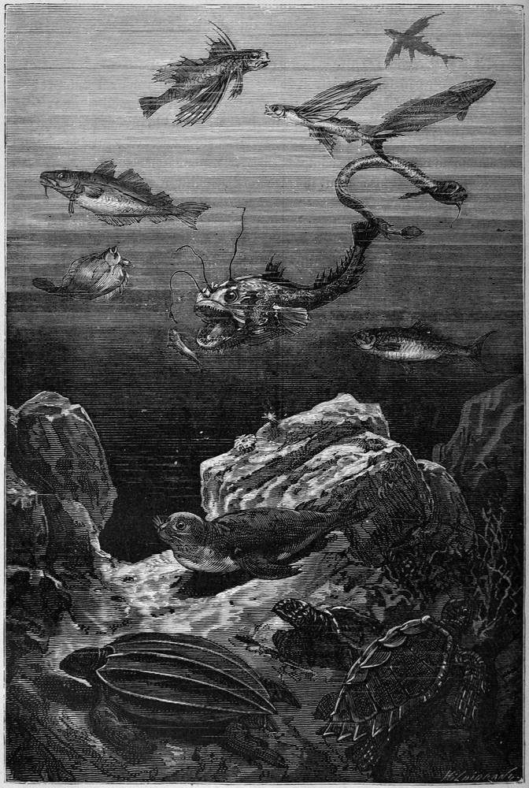
“In how many centuries?” asked Conseil.
“In a few hundred thousand years, my boy.”
“Then,” answered Conseil, “we have time to finish our voyage, provided Ned Land doesn’t interfere!”
And Conseil, reassured, went back to studying the shallows that the Nautilus was skimming closely at a moderate speed.
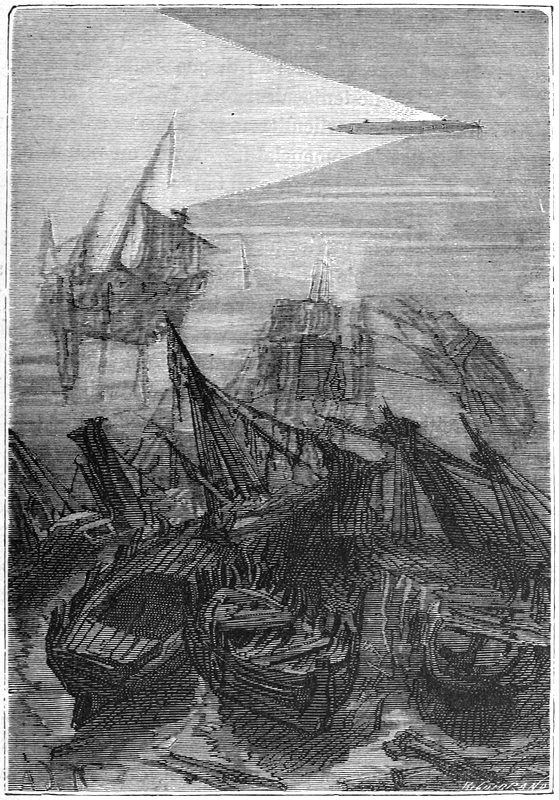
There, on rocky, volcanic ground, a whole living flora was blooming: sponges, holothurians, glassy cydippes adorned with reddish cirri and giving off a faint phosphorescence, beroes, commonly known as sea cucumbers and bathed in the shimmer of a solar spectrum, wandering feather stars a meter wide whose purple reddened the waters, tree-like basket stars of the greatest beauty, long-stemmed sea pens, a great number of edible sea urchins of various species, and green sea anemones with grayish trunks and brown disks, which were lost in their olive-colored hair of tentacles.
Conseil had busied himself more particularly with observing the mollusks and the articulates, and although the list is a little dry, I do not want to wrong this good fellow by leaving out his personal observations.
In the branch of mollusks, he mentions numerous comb-shaped scallops; thorny oysters, known as donkey’s feet, piled one on top of another; triangular wedge shells; three-toothed hyalea with yellow fins and transparent shells; orange pleurobranchs; eggs dotted or sprinkled with greenish spots; aplysia, also known as sea hares; dolabella; fleshy acera; umbrella shells peculiar to the Mediterranean; abalone, whose shells produce a much sought-after mother-of-pearl; flame scallops; saddle oysters, which the people of Languedoc are said to prefer to oysters; the clovisses so dear to the Marseillais; double praires, white and plump; a few of those clams that abound on the coasts of North America and are sold in such quantities in New York; variously colored operculated scallops; date mussels sunk in their holes, whose peppery taste I greatly enjoyed; furrowed venericardia, whose shells with domed tops showed prominent ribs; sea squirts bristling with scarlet tubercles; carinaria with curved points, resembling light gondolas; crowned ferolas; atlanta with spiral shells; gray tethys, spotted with white and covered with their fringed mantillas; eolids resembling little slugs; cavolinia crawling on their backs; auriculas, among them the forget-me-not auricula with its oval shell; tawny wentletraps; periwinkles; violet snails; cinerarias; petricolas; lamellarias; cap shells; pandoras; and so on.
As for the articulates, Conseil in his notes has very rightly divided them into six classes, three of which belong to the marine world. These are the classes of crustaceans, cirripedes, and annelids.
The crustaceans are subdivided into nine orders, and the first of these orders includes the decapods, that is, the animals whose head and thorax are most generally fused together, whose mouthparts are made up of several pairs of limbs, and which possess four, five, or six pairs of thoracic or walking legs. Conseil had followed the method of our master Milne-Edwards, who makes three sections of the decapods: the brachyurans, the macrurans, and the anomurans. These names are slightly barbarous, but they are correct and precise. Among the brachyurans, Conseil mentions amathias, whose foreheads are armed with two large diverging points; the scorpion spider crab, which, I do not know why, symbolized wisdom among the Greeks; Masséna lambrus and spiny-handed lambrus, probably strayed onto these shallows, for they usually live at great depths; xanthos, pilumnus, rhomboids, and granular box crabs, “very easy to digest,” Conseil observes; toothless corystes, ebalias, cymopolias, woolly dorippes, and so on. Among the macrurans, subdivided into five families, the armored, the burrowers, the astacians, the shrimps, and the ochyzopods, he mentions common spiny lobsters, the flesh of whose females is so highly prized; bear slipper lobsters, or sea cicadas; shore gebias; and all sorts of edible species, but he says nothing of the astacian subdivision, which includes the true lobsters, for spiny lobsters are the only lobsters in the Mediterranean. Finally, among the anomurans, he saw common drocinas, sheltered behind the abandoned shell they take over; homolas with spiny foreheads; hermit crabs; porcelain crabs; and so on.
There Conseil’s work stopped. He had not had time to complete the class of crustaceans by examining the stomatopods, the amphipods, the homopods, the isopods, the trilobites, the branchiopods, the ostracods, and the entomostracans. And to finish the study of the marine articulates, he would have had to mention the class of cirripedes, which includes the cyclops and the argulus, and the class of annelids, which he would not have failed to divide into tubicolous worms and dorsibranchiates. But the Nautilus, having passed the shallows of the Strait of Libya, resumed its usual speed in deeper waters. From then on there were no more mollusks, no more articulates, no more zoophytes. Barely a few big fish passing like shadows.
During the night of February 16 to 17, we had entered the second Mediterranean basin, whose greatest depths reach three thousand meters. The Nautilus, driven by its propeller and gliding on its inclined planes, sank down to the lowest layers of the sea.
There, in the absence of natural wonders, the mass of the waters offered my eyes many moving and terrible scenes. Indeed, we were then crossing the whole part of the Mediterranean so rich in disasters. From the Algerian coast to the shores of Provence, how many ships have been wrecked, how many vessels have disappeared! The Mediterranean is only a lake compared with the vast liquid plains of the Pacific, but it is a capricious lake, with changing waves, propitious and caressing today for the frail tartan that seems to float between the double ultramarine of the waters and the sky, and tomorrow raging, tormented, whipped up by the winds, breaking the strongest ships with its short waves that strike them in quick blows.
So, during this rapid walk through the deep layers, how many wrecks I saw lying on the bottom, some already crusted over by corals, others covered only with a layer of rust: anchors, cannons, cannonballs, iron fittings, propeller blades, pieces of machinery, broken cylinders, staved-in boilers, and then hulls floating in midwater, some upright, others overturned.
Of these wrecked ships, some had perished by collision, others by striking some granite reef. I saw some that had gone straight down, masts upright, rigging stiffened by the water. They looked as if they were at anchor in an immense open roadstead, waiting for the moment of departure. When the Nautilus passed between them and wrapped them in its sheets of electric light, it seemed as if these ships were going to salute it with their colors and send it their identification numbers! But no, nothing but silence and death on this field of catastrophes!
I observed that the Mediterranean depths grew more cluttered with this sinister wreckage as the Nautilus drew nearer to the Strait of Gibraltar. The coasts of Africa and Europe close in there, and in that narrow space collisions are frequent. I saw there many iron hulls and fantastic ruins of steamers, some lying down, others standing up, like formidable animals. One of these boats, its sides torn open, its funnel bent, its paddle wheels reduced to their frames, its rudder separated from the sternpost and still held by an iron chain, its stern board eaten away by the sea salts, presented a terrible sight! How many lives shattered in its wreck! How many victims dragged under the waves! Had some sailor aboard survived to tell of this terrible disaster, or did the waves still keep the secret of this catastrophe? I do not know why, but the thought came to me that this boat buried under the sea might be the Atlas, lost with all hands some twenty years ago and never heard of since! Ah, what a sinister story could be told of these Mediterranean depths, of this vast ossuary, where so many riches have been lost and so many victims have met their death!
Meanwhile the Nautilus, indifferent and swift, was racing at full speed through these ruins. On February 18, toward three in the morning, it arrived at the entrance to the Strait of Gibraltar.
There are two currents there: an upper current, long recognized, which brings the waters of the ocean into the Mediterranean basin; and then a lower countercurrent, whose existence reasoning has now demonstrated. Indeed, the total volume of the Mediterranean’s waters, ceaselessly increased by the waves of the Atlantic and by the rivers that flow into it, should raise the level of this sea every year, for its evaporation is not enough to restore the balance. Now, this is not the case, and so the existence of a lower current had naturally to be admitted, which pours the Mediterranean’s overflow through the Strait of Gibraltar into the Atlantic basin.
And this is indeed a fact. It was this countercurrent that the Nautilus used. It advanced rapidly through the narrow passage. For a moment I was able to glimpse the admirable ruins of the temple of Hercules, buried, according to Pliny and Avienus, together with the low island that supported it, and a few minutes later we were floating on the waves of the Atlantic.
The Atlantic! A vast expanse of water whose surface covers twenty-five million square miles, nine thousand miles long with an average width of two thousand seven hundred. An important sea almost unknown to the ancients, except perhaps the Carthaginians, those Dutchmen of antiquity, who in their commercial wanderings followed the west coasts of Europe and Africa! An ocean whose shores, with their parallel windings, take in an immense perimeter, watered by the greatest rivers in the world, the St. Lawrence, the Mississippi, the Amazon, the Plata, the Orinoco, the Niger, the Senegal, the Elbe, the Loire, and the Rhine, which bring it the waters of the most civilized countries and the wildest lands! A magnificent plain, ceaselessly plowed by the ships of every nation, sheltered under every flag in the world, and ending in those two terrible points dreaded by navigators, Cape Horn and the Cape of Storms!
The Nautilus was breaking its waters with the cutting edge of its spur, having covered nearly ten thousand leagues in three and a half months, a distance greater than one of the great circles of the earth. Where were we going now, and what did the future hold in store for us?
The Nautilus, on leaving the Strait of Gibraltar, had headed out to sea. It came back to the surface of the waves, and so our daily walks on the platform were given back to us.
I went up at once, accompanied by Ned Land and Conseil. At a distance of twelve miles, Cape St. Vincent, which forms the southwest tip of the Iberian Peninsula, appeared vaguely. A rather strong gale was blowing from the south. The sea was high and heaving. It made the Nautilus roll violently. It was almost impossible to stay on the platform, which enormous seas were battering at every moment. So we went back down after taking in a few breaths of air.
I went back to my room. Conseil returned to his cabin; but the Canadian, looking rather preoccupied, followed me. Our rapid passage through the Mediterranean had not allowed him to carry out his plans, and he did little to hide his disappointment.
When the door of my room was closed, he sat down and looked at me in silence.
“Friend Ned,” I said to him, “I understand you, but you have nothing to reproach yourself with. Under the conditions in which the Nautilus was sailing, to think of leaving it would have been madness!”
Ned Land made no answer. His tight lips and his frowning brows showed the violent obsession of a fixed idea.
“Come,” I went on, “nothing is hopeless yet. We are going up the coast of Portugal. Not far off are France and England, where we would easily find refuge. Ah, if the Nautilus, on leaving the Strait of Gibraltar, had set its course to the south, if it had carried us off toward those regions where there are no continents, I would share your anxieties. But we know now that Captain Nemo does not shun civilized seas, and in a few days I believe you will be able to act with some safety.”
Ned Land looked at me more fixedly still, and, finally unclenching his lips:
“It’s for tonight,” he said.
I sat up abruptly. I was, I admit, hardly prepared for this announcement. I would have liked to answer the Canadian, but the words did not come.
“We agreed to wait for the right circumstances,” Ned Land went on. “I’ve got them. Tonight we’ll be only a few miles from the Spanish coast. The night is dark. The wind is blowing from the sea. I have your word, Monsieur Aronnax, and I’m counting on you.”
As I still said nothing, the Canadian stood up and, coming closer to me:
“Tonight at nine o’clock,” he said. “I’ve told Conseil. At that time Captain Nemo will be shut up in his room and probably in bed. Neither the engineers nor the men of the crew can see us. Conseil and I will make for the central staircase. You, Monsieur Aronnax, will stay in the library, two steps away from us, waiting for my signal. The oars, the mast, and the sail are in the skiff. I’ve even managed to put a few provisions in it. I’ve got hold of a monkey wrench to unscrew the nuts that fasten the skiff to the hull of the Nautilus. So everything’s ready. Until tonight.”
“The sea is rough,” I said.
“I grant that,” answered the Canadian, “but we have to risk it. Freedom is worth paying for. Besides, the boat is sturdy, and a few miles with a following wind are no great matter. Who knows whether tomorrow we won’t be a hundred leagues out to sea? If circumstances favor us, between ten and eleven o’clock we’ll be landed on some point of dry land, or dead. So, God’s will be done, and until tonight!”
With that word the Canadian withdrew, leaving me almost dumbfounded. I had imagined that, when the time came, I would have time to reflect, to discuss. My stubborn companion did not allow it. What would I have said to him, after all? Ned Land was a hundred times right. These were very nearly the right circumstances, and he was taking advantage of them. Could I go back on my word and take on the responsibility of compromising my companions’ future in a purely personal interest? Couldn’t Captain Nemo carry us off tomorrow far from any land?
At that moment a rather loud hissing told me that the tanks were filling, and the Nautilus sank beneath the waves of the Atlantic.
I stayed in my room. I wanted to avoid the captain, to hide from his eyes the emotion that gripped me. A sad day I spent in this way, torn between the desire to regain my free will and the regret of abandoning this marvelous Nautilus, leaving my underwater studies unfinished! To leave this ocean thus, “my Atlantic,” as I liked to call it, without having observed its lowest layers, without having stolen from it the secrets the Indian and Pacific seas had revealed to me! My novel was falling from my hands at the first volume; my dream was being broken off at the finest moment! What bad hours went by in this way, now seeing myself safe on land with my companions, now wishing, in spite of my reason, that some unforeseen circumstance would prevent Ned Land’s plans from being carried out.
Twice I went to the drawing room. I wanted to consult the compass. I wanted to see whether the course of the Nautilus was in fact bringing us closer to the coast or taking us away from it. But no. The Nautilus was still keeping to Portuguese waters. It was heading north, running along the shores of the ocean.
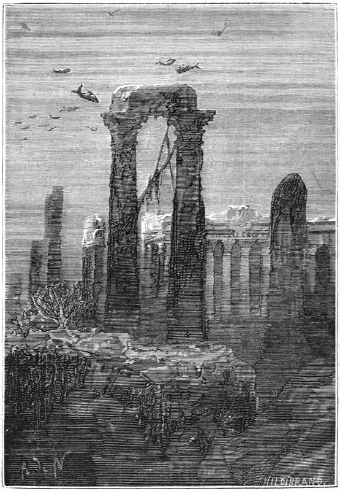
So I had to make up my mind to it and get ready to flee. My baggage was not heavy. My notes, nothing more.
As for Captain Nemo, I wondered what he would think of our escape, what anxieties, what harm perhaps, it would cause him, and what he would do in either case, if it were discovered or if it failed! Certainly I had no complaint against him, on the contrary. Never was hospitality franker than his. In leaving him I could not be accused of ingratitude. No oath bound us to him. It was on the force of circumstances alone, and not on our word, that he was counting to keep us by his side forever. But this openly declared claim to hold us prisoner aboard his ship for all eternity justified all our attempts.
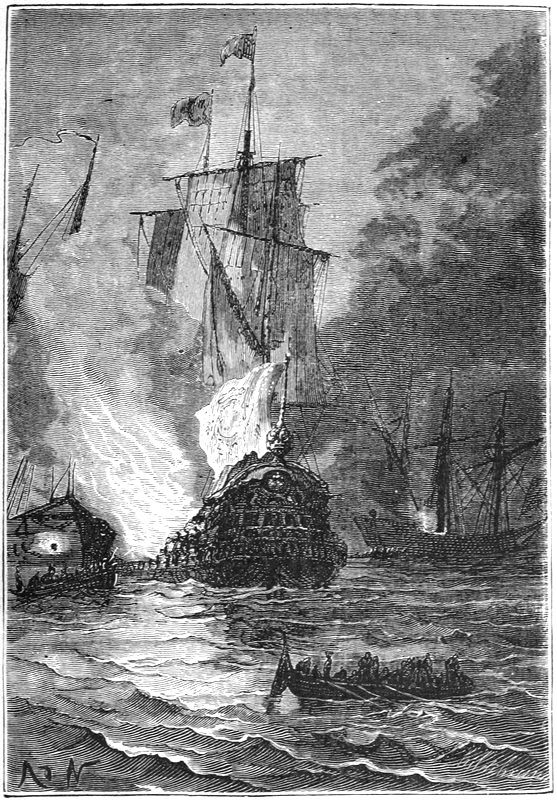
I had not seen the captain again since our visit to the island of Santorini. Would chance bring me into his presence before our departure? I both wished it and feared it. I listened to hear whether he was walking about in his room, next to mine. No sound reached my ear. That room must have been empty.
Then I came to wonder whether this strange personage was aboard at all. Since that night when the skiff had left the Nautilus on some mysterious errand, my ideas about him had changed slightly. I thought, whatever he might have said, that Captain Nemo must have kept up some relations of a certain kind with the land. Did he never leave the Nautilus? Whole weeks had often gone by without my meeting him. What was he doing during that time, and while I believed him in the grip of fits of misanthropy, was he not carrying out, far away, some secret act whose nature had so far escaped me?
All these ideas and a thousand others assailed me at once. The field of conjecture cannot but be infinite in the strange situation we are in. I felt an unbearable uneasiness. This day of waiting seemed eternal to me. The hours struck too slowly for my impatience.
My dinner was served to me in my room, as always. I ate badly, being too preoccupied. I left the table at seven o’clock. A hundred twenty minutes—I was counting them—still separated me from the moment when I was to join Ned Land. My agitation doubled. My pulse was beating violently. I could not keep still. I paced back and forth, hoping to calm the turmoil of my mind by movement. The idea of perishing in our reckless enterprise was the least painful of my worries; but at the thought of seeing our plan discovered before we had left the Nautilus, at the thought of being brought back before Captain Nemo, angry or, what would have been worse, saddened by my desertion, my heart pounded.
I wanted to see the drawing room one last time. I went along the gangways and reached that museum where I had spent so many pleasant and useful hours. I looked at all those riches, all those treasures, like a man on the eve of an eternal exile who is leaving never to return. These wonders of nature, these masterpieces of art, among which my life had been concentrated for so many days, I was going to abandon forever. I would have liked to gaze through the drawing-room window into the waters of the Atlantic; but the panels were hermetically closed, and a cloak of sheet iron separated me from that ocean I did not yet know.
Walking thus through the drawing room, I came to the door, set in the cut-off corner, that opened onto the captain’s room. To my great astonishment, this door was ajar. I drew back involuntarily. If Captain Nemo was in his room, he could see me. However, hearing no sound, I went closer. The room was empty. I pushed the door open. I took a few steps inside. Still the same severe, monastic appearance.
At that moment a few etchings hanging on the wall, which I had not noticed during my first visit, caught my eye. They were portraits, portraits of those great historical men whose lives were nothing but a perpetual devotion to a great human idea: Kosciuszko, the hero who fell with the cry of Finis Poloniæ; Botzaris, the Leonidas of modern Greece; O’Connell, the defender of Ireland; Washington, the founder of the American Union; Manin, the Italian patriot; Lincoln, fallen to the bullet of a slaveholder; and finally that martyr of the emancipation of the Black race, John Brown, hanging from his gallows, just as Victor Hugo’s pencil so terribly drew him.
What bond existed between these heroic souls and the soul of Captain Nemo? Could I at last, from this gathering of portraits, draw out the mystery of his existence? Was he the champion of oppressed peoples, the liberator of enslaved races? Had he taken part in the recent political or social upheavals of this century? Had he been one of the heroes of the terrible American war, a lamentable and forever glorious war?…
Suddenly the clock struck eight. The beat of the first stroke of the hammer on the bell tore me from my dreams. I started as if an invisible eye could have plunged into the most secret of my thoughts, and I rushed out of the room.
There my eyes fell on the compass. Our course was still north. The log showed a moderate speed, the pressure gauge a depth of about sixty feet. So circumstances were favoring the Canadian’s plans.
I went back to my room. I dressed warmly: sea boots, otter-skin cap, byssus coat lined with sealskin. I was ready. I waited. Only the vibrations of the propeller disturbed the deep silence that reigned aboard. I listened, I strained my ears. Would some burst of voices not suddenly tell me that Ned Land had just been caught in his escape plans? A deadly anxiety came over me. I tried in vain to regain my composure.
At a few minutes before nine, I pressed my ear to the captain’s door. No sound. I left my room and went back to the drawing room, which was plunged in semidarkness, but deserted.
I opened the door leading into the library. The same dim light, the same solitude. I went and stationed myself near the door that opened onto the well of the central staircase. I waited for Ned Land’s signal.
At that moment the vibrations of the propeller noticeably diminished; then they stopped altogether. Why this change in the movements of the Nautilus? Whether this halt helped or hindered Ned Land’s plans I could not have said.
The silence was now disturbed only by the beating of my heart.
Suddenly a slight shock was felt. I understood that the Nautilus had just come to rest on the bottom of the ocean. My anxiety doubled. The Canadian’s signal did not reach me. I felt like going to Ned Land to urge him to put off his attempt. I sensed that our navigation was no longer taking place under ordinary conditions…
At that moment the door of the great drawing room opened, and Captain Nemo appeared. He saw me and, without further preamble:
“Ah, Professor,” he said in a friendly tone, “I was looking for you. Do you know your Spanish history?”
One might know the history of one’s own country thoroughly and yet, in the state I was in, with my mind troubled and my head in a whirl, be unable to quote a word of it.
“Well?” Captain Nemo went on. “Did you hear my question? Do you know the history of Spain?”
“Very poorly,” I answered.
“That’s scholars for you,” said the captain. “They don’t know. Then sit down,” he added, “and I will tell you a curious episode of that history.”
The captain stretched out on a divan, and mechanically I took a seat beside him in the half-light.
“Professor,” he said to me, “listen carefully. This story will interest you in a certain respect, for it will answer a question you have doubtless been unable to solve.”
“I am listening, Captain,” I said, not knowing what my companion was driving at and wondering whether this incident had anything to do with our escape plans.
“Professor,” Captain Nemo went on, “if you don’t mind, we shall go back to 1702. You know that at that time your King Louis XIV, believing that a potentate’s gesture was enough to make the Pyrenees sink into the ground, had imposed the Duke of Anjou, his grandson, on the Spaniards. This prince, who reigned more or less badly under the name of Philip V, had a strong adversary to deal with abroad.
“Indeed, the year before, the royal houses of Holland, Austria, and England had concluded a treaty of alliance at The Hague, with the aim of wresting the crown of Spain from Philip V and placing it on the head of an archduke, to whom they prematurely gave the name of Charles III.

“Spain had to resist this coalition. But it was practically without soldiers and sailors. Still, it was not short of money,
provided, however, that its galleons, loaded with the gold and silver of America, entered its ports. Now, toward the end of 1702, it was expecting a rich convoy, which France was having escorted by a fleet of twenty-three ships commanded by Admiral de Château-Renaud, for the allied navies were then roaming the Atlantic.
“This convoy was to go to Cádiz, but the admiral, having learned that the English fleet was cruising in those waters, decided to make for a French port.
“The Spanish commanders of the convoy protested against this decision. They wanted to be taken to a Spanish port, and, failing Cádiz, to Vigo Bay, on the northwest coast of Spain, which was not blockaded.
“Admiral de Château-Renaud was weak enough to obey this demand, and the galleons entered Vigo Bay.
“Unfortunately, this bay forms an open roadstead that cannot be defended at all. So the galleons had to be unloaded in haste before the allied fleets arrived, and there would have been time enough for this unloading if a wretched question of rivalry had not suddenly arisen.
“Are you following the chain of events?” Captain Nemo asked me.
“Perfectly,” I said, still not knowing why I was being given this history lesson.
“I shall go on. Here is what happened. The merchants of Cádiz had a privilege by which they were to receive all the merchandise that came from the West Indies. Now, to unload the galleons’ ingots at the port of Vigo was to go against their right. So they complained in Madrid, and they obtained from the weak Philip V an order that the convoy, without being unloaded, should remain sequestered in the roadstead of Vigo until the enemy fleets had gone away.
“Now, while this decision was being made, on October 22, 1702, the English ships arrived in Vigo Bay. Admiral de Château-Renaud, in spite of his inferior forces, fought bravely. But when he saw that the riches of the convoy were about to fall into the enemy’s hands, he set fire to the galleons and scuttled them, and they sank with their immense treasures.”
Captain Nemo had stopped. I confess I still did not see how this story could interest me.
“Well?” I asked him.
“Well, Monsieur Aronnax,” Captain Nemo answered me, “we are in that Vigo Bay, and it rests with you alone to penetrate its mysteries.”
The captain stood up and asked me to follow him. I had had time to recover myself. I obeyed. The drawing room was dark, but through the transparent windows the waves of the sea were sparkling. I looked.
Around the Nautilus, within a radius of half a mile, the waters appeared saturated with electric light. The sandy bottom was clean and clear. Men of the crew, wearing diving suits, were busy clearing away half-rotten casks and burst-open crates amid still-blackened wreckage. From these crates, from these barrels, spilled ingots of gold and silver, cascades of piasters and jewels. The sand was strewn with them. Then, loaded with this precious booty, the men came back to the Nautilus, set down their burden there, and went off again to resume this inexhaustible fishing for silver and gold.
I understood. This was the scene of the battle of October 22, 1702. Right here the galleons loaded for the Spanish government had sunk. Here Captain Nemo came to collect, as his needs required, the millions with which he ballasted his Nautilus. It was for him, for him alone, that America had yielded up its precious metals. He was the direct and sole heir of those treasures torn from the Incas and from the peoples conquered by Hernán Cortés!
“Did you know, Professor,” he asked me with a smile, “that the sea contained so much wealth?”
“I knew,” I answered, “that the silver held in suspension in its waters is estimated at two million tons.”
“No doubt, but to extract that silver, the expense would outweigh the profit. Here, on the contrary, I have only to pick up what men have lost, and not only in this Vigo Bay but also at a thousand scenes of shipwreck whose positions are marked on my underwater chart. Do you understand now that I am rich by the billions?”
“I understand it, Captain. Allow me, however, to tell you that by exploiting this very Vigo Bay you have only forestalled the work of a rival company.”
“And which is that?”
“A company that has received from the Spanish government the privilege of searching for the sunken galleons. The shareholders are lured by the bait of an enormous profit, for the value of these sunken riches is estimated at five hundred million.”
“Five hundred million!” Captain Nemo answered me. “They were there, but they are there no longer.”
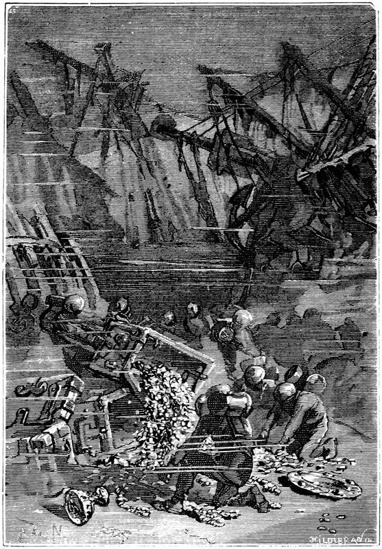
“Indeed,” I said. “So a word of warning to those shareholders would be an act of charity. Yet who knows whether it would be well received? What gamblers usually regret above all is not so much the loss of their money as that of their wild hopes. After all, I pity them less than those thousands of unfortunate people who might have benefited from so much wealth, well distributed, whereas it will forever be barren for them!”
No sooner had I expressed this regret than I felt it must have hurt Captain Nemo.
“Barren!” he answered, growing animated. “Do you believe, then, sir, that this wealth is lost when it is I who gather it? Is it for myself, in your view, that I take the trouble to collect these treasures? Who told you that I do not make good use of them? Do you think I do not know that there are suffering beings, oppressed races on this earth, wretches to relieve, victims to avenge? Don’t you understand?…”

Captain Nemo stopped at these last words, regretting perhaps that he had said too much. But I had guessed. Whatever the motives that had forced him to seek independence under the seas, he had remained above all a man! His heart still beat at the sufferings of humanity, and his immense charity went out to enslaved races as well as to individuals!
And I understood then for whom those millions sent off by Captain Nemo were intended, when the Nautilus was sailing in the waters of Crete in revolt!
The next morning, February 19, I saw the Canadian come into my room. I was expecting his visit. He looked very disappointed.
“Well, sir?” he said to me.
“Well, Ned, chance was against us yesterday.”
“Yes! That damned captain had to stop at the very hour we were going to escape from his boat.”
“Yes, Ned, he had business with his banker.”
“His banker!”
“Or rather his bank. By that I mean this ocean, where his riches are safer than they would be in the coffers of a state.”
I then told the Canadian about the incidents of the day before, in the secret hope of bringing him round to the idea of not abandoning the captain; but my account had no other result than Ned’s energetically expressed regret at not having been able to take a stroll on his own account over the battlefield of Vigo.
“Anyway,” he said, “it’s not all over! It’s only one harpoon thrust wasted! Another time we’ll succeed, and this very evening if need be…”
“What is the course of the Nautilus?” I asked.
“I don’t know,” answered Ned.
“Well, at noon we shall see our position.”
The Canadian went back to Conseil. As soon as I was dressed, I went into the drawing room. The compass was not reassuring. The course of the Nautilus was south-southwest. We were turning our backs on Europe.
I waited with some impatience for our position to be marked on the chart. Toward half past eleven the tanks were emptied, and our vessel rose to the surface of the ocean. I rushed onto the platform. Ned Land had gotten there before me.
No more land in sight. Nothing but the immense sea. A few sails on the horizon, no doubt some of those that go as far as Cape São Roque to find favorable winds for rounding the Cape of Good Hope. The sky was overcast. A gale was brewing.
Ned, raging, was trying to pierce the misty horizon. He still hoped that behind all that fog lay the land he longed for so much.
At noon the sun showed itself for a moment. The first officer took advantage of this break in the clouds to take its altitude. Then, as the sea grew rougher, we went back down, and the hatch was closed again.
An hour later, when I consulted the chart, I saw that the position of the Nautilus was marked at 16° 17′ longitude and 33° 22′ latitude, a hundred fifty leagues from the nearest coast. There was no way to think of escaping, and I leave it to the reader to imagine the Canadian’s fury when I told him our situation.
For my part, I did not despair beyond measure. I felt as if relieved of the weight that had been oppressing me, and I was able to take up my usual work again with a kind of relative calm.
In the evening, toward eleven o’clock, I received a very unexpected visit from Captain Nemo. He asked me very graciously whether I felt tired from having stayed up the night before. I answered no.
“Then, Monsieur Aronnax, I shall propose a curious excursion to you.”
“Propose it, Captain.”
“So far you have visited the ocean depths only by day and in the light of the sun. Would you care to see them on a dark night?”
“Very gladly.”
“This walk will be tiring, I warn you. We shall have to walk a long way and climb a mountain. The roads are not very well kept.”
“What you are telling me, Captain, redoubles my curiosity. I am ready to follow you.”
“Come, then, Professor; we shall put on our diving suits.”
When I reached the wardrobe room, I saw that neither my companions nor any man of the crew was to follow us on this excursion. Captain Nemo had not even suggested that I bring Ned or Conseil.
In a few moments we had put on our equipment. The tanks, abundantly charged with air, were placed on our backs, but the electric lamps had not been prepared. I pointed this out to the captain.
“They would be of no use to us,” he answered.
I thought I had heard wrong, but I could not repeat my remark, for the captain’s head had already disappeared into its metal casing. I finished harnessing myself, I felt an iron-tipped stick being placed in my hand, and a few minutes later, after the usual maneuver, we set foot on the bottom of the Atlantic, at a depth of three hundred meters.
Midnight was approaching. The waters were profoundly dark, but Captain Nemo pointed out to me in the distance a reddish point, a sort of broad glow, shining about two miles from the Nautilus. What this fire was, what substances fed it, why and how it kept itself alive in the liquid mass, I could not have said. In any case it lit our way, vaguely, it is true, but I soon grew used to this peculiar darkness, and I understood, in these circumstances, why the Ruhmkorff lamps were useless.
Captain Nemo and I walked side by side, straight toward the fire he had pointed out. The flat ground rose imperceptibly. We took long strides, helping ourselves with our sticks; but on the whole our progress was slow, for our feet often sank into a kind of mud kneaded with seaweed and strewn with flat stones.
As we went forward, I heard a sort of sizzling above my head. This noise sometimes doubled and produced something like a continuous crackling. I soon understood its cause. It was rain falling violently and pattering on the surface of the waves. Instinctively, the thought came to me that I was going to get soaked! By water, in the midst of water! I could not help laughing at this absurd idea. But to tell the truth, under the thick suit of the diving apparatus one no longer feels the liquid element, and one believes oneself to be in an atmosphere a little denser than the earth’s atmosphere, that is all.
After half an hour of walking, the ground became stony. Jellyfish, microscopic crustaceans, and sea pens lit it faintly with phosphorescent gleams. I glimpsed heaps of stones covered with a few million zoophytes and tangles of seaweed. My foot often slipped on these slimy carpets of kelp, and without my iron-tipped stick I would have fallen more than once. When I turned around, I could still see the whitish beacon of the Nautilus, which was beginning to grow pale in the distance.
The stony heaps I have just mentioned were laid out on the ocean floor with a certain regularity that I could not explain. I could see gigantic furrows that vanished into the distant darkness and whose length was beyond all estimate. Other peculiarities presented themselves as well, which I could not accept. It seemed to me that my heavy lead soles were crushing a litter of bones that cracked with a dry sound. What, then, was this vast plain I was crossing? I would have liked to question the captain, but his sign language, which let him talk with his companions when they followed him on his underwater excursions, was still incomprehensible to me.
Meanwhile the reddish light guiding us was growing stronger and setting the horizon ablaze. The presence of this fire under the waters intrigued me to the highest degree. Was it some electrical emanation showing itself? Was I heading toward a natural phenomenon still unknown to the scientists of the earth? Or even—for this thought crossed my mind—was the hand of man involved in this blaze? Was it fanning this fire? Was I to meet, in these deep layers, companions, friends of Captain Nemo, living the same strange existence as he, whom he was going to visit? Would I find over there a whole colony of exiles who, weary of the miseries of the earth, had sought and found independence in the depths of the ocean? All these mad, inadmissible ideas pursued me, and in this frame of mind, ceaselessly overexcited by the series of wonders passing before my eyes, I would not have been surprised to find at the bottom of this sea one of those underwater cities Captain Nemo dreamed of!
Our path was growing brighter and brighter. The whitening glow was radiating from the summit of a mountain about eight hundred feet high. But what I saw was only a simple reflection produced by the crystal of the layers of water. The fire, the source of this inexplicable light, lay on the opposite side of the mountain.
Through the stony mazes that furrowed the bottom of the Atlantic, Captain Nemo advanced without hesitation. He knew this dark road. He had often traveled it, no doubt, and could not get lost on it. I followed him with unshakable confidence. He seemed to me like one of the spirits of the sea, and as he walked ahead of me I admired his tall figure, outlined in black against the luminous background of the horizon.
It was one o’clock in the morning. We had reached the first slopes of the mountain. But to get to them we had to venture along the difficult paths of a vast thicket.
Yes! A thicket of dead trees, without leaves, without sap, trees mineralized by the action of the waters, and overtopped here and there by gigantic pines. It was like a coal mine still standing, holding by its roots to the subsided ground, and whose branches, like fine cutouts of black paper, stood out sharply against the ceiling of the waters. Picture a forest of the Harz clinging to the sides of a mountain, but a sunken forest. The paths were cluttered with algae and fucus, among which swarmed a world of crustaceans. I went on, climbing over rocks, stepping over fallen trunks, breaking the sea creepers that swung from one tree to another, frightening the fish that flew from branch to branch. Carried away, I no longer felt tired. I followed my guide, who never tired.
What a spectacle! How can I convey it? How can I paint the appearance of these woods and rocks in this liquid medium, their dark and savage undersides, their tops tinged with red tones under that light, which the reflecting power of the waters doubled? We climbed rocks that afterward collapsed in enormous slabs with the muffled rumble of an avalanche. To the right and left opened dark galleries where the eye lost itself. Here vast clearings opened, which the hand of man seemed to have cleared, and I sometimes wondered whether some inhabitant of these underwater regions might not suddenly appear before me.
But Captain Nemo kept climbing. I did not want to stay behind. I followed him boldly. My stick lent me useful help. A false step would have been dangerous on those narrow ledges hollowed out along the sides of the chasms; but I walked on them with a firm foot and without feeling the intoxication of vertigo. Sometimes I jumped a crevasse whose depth would have made me recoil amid the glaciers of the earth; sometimes I ventured onto the swaying trunks of trees thrown across from one abyss to another, without looking beneath my feet, having eyes only to admire the wild scenery of this region. There, monumental rocks, leaning on their irregularly cut bases, seemed to defy the laws of equilibrium. Between their stone knees trees grew as if shot up under formidable pressure, and supported the very rocks that supported them. Then natural towers and wide sheer faces cut like curtain walls leaned at an angle that the laws of gravitation would not have permitted on the surface of the land.
And did I not feel this difference myself, due to the powerful density of the water, when, in spite of my heavy clothing, my copper head, and my metal soles, I climbed slopes of impossible steepness, crossing them, so to speak, with the lightness of an izard or a chamois!
In telling of this excursion under the waters, I am well aware that I cannot make it seem plausible! I am the historian of things that seem impossible and that are nonetheless real and indisputable. I did not dream. I saw and felt!
Two hours after leaving the Nautilus, we had passed the tree line, and a hundred feet above our heads rose the peak of the mountain, whose projection cast a shadow on the brilliant radiance of the opposite slope. A few petrified shrubs ran here and there in grimacing zigzags. Fish rose in masses at our steps like birds startled in tall grass. The rocky mass was hollowed with impenetrable crevices, deep caves, and unfathomable holes, at the bottom of which I could hear formidable things stirring. My blood rushed back to my heart when I saw an enormous antenna barring my way, or some frightful pincer snapping shut in the shadow of the cavities! Thousands of luminous points shone in the darkness. They were the eyes of gigantic crustaceans crouching in their dens: giant lobsters rearing up like halberdiers and moving their legs with a clanking of scrap iron, titanic crabs aimed like cannons on their carriages, and frightful octopuses intertwining their tentacles like a living thicket of snakes.
What was this exorbitant world I did not yet know? To what order did these articulates belong, for which the rock formed a sort of second carapace? Where had nature found the secret of their vegetative existence, and for how many centuries had they been living thus in the lowest layers of the ocean?
But I could not stop. Captain Nemo, familiar with these terrible animals, no longer paid any attention to them. We had reached a first plateau, where still other surprises awaited me. There picturesque ruins could be seen, which betrayed the hand of man and no longer that of the Creator. They were vast heaps of stones in which one could make out vague shapes of castles and temples, clothed with a world of flowering zoophytes, and over which, instead of ivy, algae and fucus formed a thick vegetable mantle.
But what, then, was this portion of the globe swallowed up by cataclysms? Who had set out these rocks and stones like the dolmens of prehistoric times? Where was I? Where had Captain Nemo’s fancy led me?
I would have liked to question him. Unable to do so, I stopped him. I seized his arm. But he, shaking his head and pointing to the last summit of the mountain, seemed to say to me:
“Come! Come on! Keep coming!”
I followed him in one last burst of effort, and in a few minutes I had climbed the peak, which overlooked this whole rocky mass by some ten meters.
I looked back at the side we had just climbed. The mountain rose only seven to eight hundred feet above the plain; but on its opposite side it overlooked, by twice that height, the lower bottom of this portion of the Atlantic. My gaze stretched far off and took in a vast space lit by a violent glare. In fact, this mountain was a volcano. Fifty feet below the peak, amid a rain of stones and slag, a wide crater was spewing torrents of lava, which scattered in a cascade of fire within the liquid mass. Placed thus, this volcano, like an immense torch, lit the plain below to the farthest limits of the horizon.
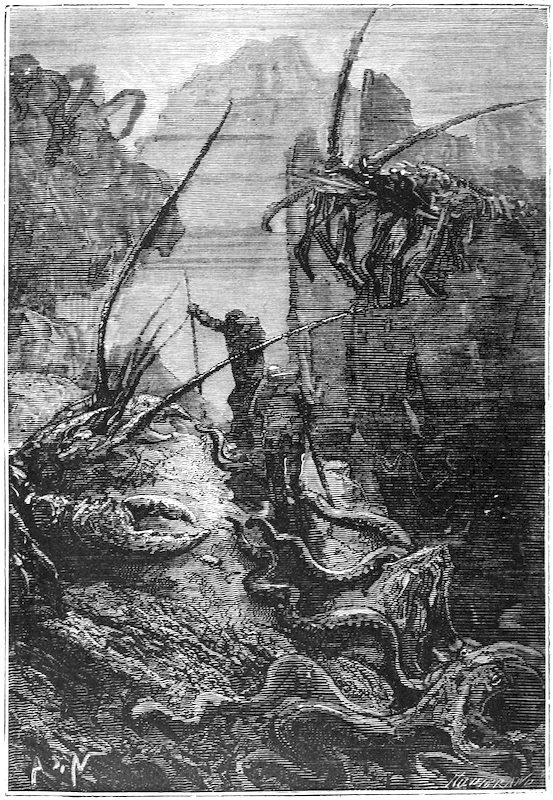
I have said that the underwater crater was throwing out lava, but not flames. Flames need the oxygen of the air and could not develop under water; but lava flows, which have the principle of their incandescence within themselves, can rise to white heat, struggle victoriously against the liquid element, and turn it to vapor on contact. Swift currents carried off all these diffusing gases, and the torrents of lava slid down to the foot of the mountain, like the discharges of Vesuvius onto another Torre del Greco.
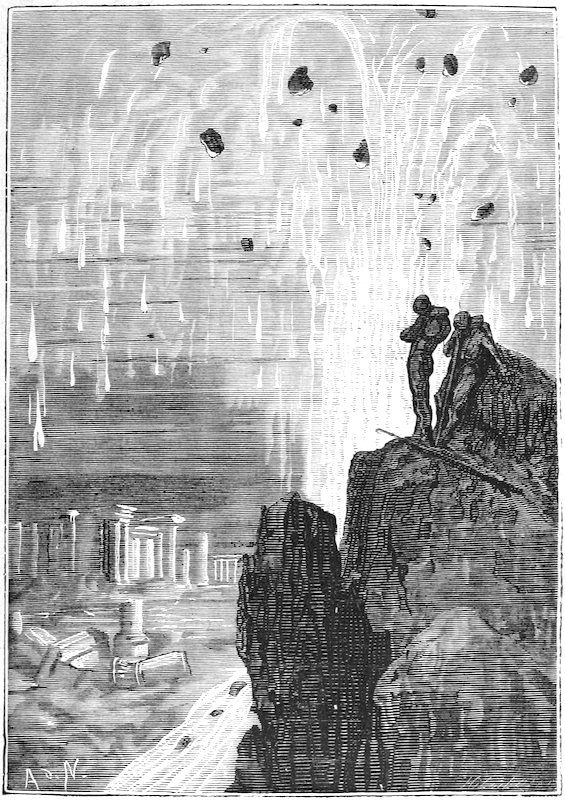
Indeed, there, before my eyes, ruined, sunken, thrown down, a destroyed city appeared: its roofs caved in, its temples knocked down, its arches dislocated, its columns lying on the ground, in which one could still sense the solid proportions of a kind of Tuscan architecture; farther on, some remains of a gigantic aqueduct; here the encrusted height of an acropolis, with the floating outlines of a Parthenon; there, traces of a quay, as if some ancient port had once sheltered merchant ships and war triremes on the shores of a vanished ocean; farther still, long lines of collapsed walls, broad deserted streets, a whole Pompeii buried beneath the waters, which Captain Nemo was bringing back to life before my eyes!
Where was I? Where was I? I wanted to know at all costs, I wanted to speak, I wanted to tear off the copper sphere that imprisoned my head.
But Captain Nemo came over to me and stopped me with a gesture. Then, picking up a piece of chalky stone, he went over to a rock of black basalt and traced this single word:
ATLANTIS.
What a flash crossed my mind! Atlantis, the ancient Meropis of Theopompus, the Atlantis of Plato, the continent denied by Origen, Porphyry, Iamblichus, d’Anville, Malte-Brun, and Humboldt, who put its disappearance down to legend, and accepted by Posidonius, Pliny, Ammianus Marcellinus, Tertullian, Engel, Sherer, Tournefort, Buffon, and d’Avezac: I had it there before my eyes, still bearing the irrefutable evidence of its catastrophe! This, then, was the sunken region that existed outside Europe, Asia, and Libya, beyond the Pillars of Hercules, where lived the powerful people of the Atlanteans, against whom ancient Greece waged its first wars!
The historian who recorded the great deeds of those heroic times in his writings was Plato himself. His dialogues Timaeus and Critias were, so to speak, written under the inspiration of Solon, poet and lawgiver.
One day Solon was talking with some wise old men of Sais, a city already eight hundred years old, as its annals carved on the sacred wall of its temples testified. One of these old men told the story of another city a thousand years older still. This first Athenian city, nine hundred centuries old, had been invaded and partly destroyed by the Atlanteans. These Atlanteans, he said, occupied an immense continent larger than Africa and Asia together, covering an area from the twelfth to the fortieth degree of north latitude. Their rule extended even to Egypt. They wanted to impose it as far as Greece, but they had to withdraw before the indomitable resistance of the Hellenes. Centuries went by. A cataclysm occurred, floods and earthquakes. A night and a day were enough to annihilate this Atlantis, whose highest summits, Madeira, the Azores, the Canaries, and the Cape Verde Islands, still emerge.
Such were the historical memories that Captain Nemo’s inscription set throbbing in my mind. So, led by the strangest of destinies, I was treading one of the mountains of that continent! I was touching with my hand those ruins a thousand times centuries old and contemporary with the geological epochs! I was walking on the very spot where the contemporaries of the first man had walked! I was crushing under my heavy soles those skeletons of animals of fabulous times, which these trees, now mineralized, once covered with their shade!
Ah, why was I so short of time! I would have liked to go down the steep slopes of this mountain, travel over the whole of this immense continent, which no doubt once joined Africa to America, and visit its great antediluvian cities. There, perhaps, before my eyes, lay Makhimos the warlike and Eusebes the pious, whose gigantic inhabitants lived for whole centuries and did not lack the strength to pile up these blocks that still resisted the action of the waters. One day, perhaps, some eruptive phenomenon will bring these sunken ruins back to the surface of the waves! Many underwater volcanoes have been reported in this part of the ocean, and many ships have felt extraordinary shocks while passing over these tormented depths. Some have heard muffled noises announcing the deep struggle of the elements; others have collected volcanic ash thrown up out of the sea. All this ground, as far as the equator, is still being worked by plutonic forces. And who knows whether, in some distant age, built up by volcanic discharges and successive layers of lava, the summits of fire-spitting mountains will not appear on the surface of the Atlantic!
While I was dreaming thus, while I was trying to fix in my memory every detail of this grandiose landscape, Captain Nemo, leaning on a mossy stele, stood motionless, as if petrified in a silent ecstasy. Was he thinking of those vanished generations and asking them the secret of human destiny? Was it to this place that this strange man came to renew himself in the memories of history and to relive that ancient life, he who wanted nothing of modern life? What would I not have given to know his thoughts, to share them, to understand them!
We stayed in that place for a whole hour, contemplating the vast plain under the glow of the lava, which at times took on a surprising intensity. The internal boilings sent rapid shudders running over the crust of the mountain. Deep noises, clearly transmitted through this liquid medium, echoed with majestic breadth.
At that moment the moon appeared for an instant through the mass of the waters and cast a few pale rays on the sunken continent. It was only a gleam, but of indescribable effect. The captain stood up and took a last look at that immense plain; then with his hand he signaled me to follow him.
We went down the mountain quickly. Once we had passed the mineral forest, I saw the beacon of the Nautilus shining like a star. The captain walked straight toward it, and we were back aboard just as the first tints of dawn were whitening the surface of the ocean.
The next day, February 20, I woke up very late. The fatigues of the night had prolonged my sleep until eleven o’clock. I dressed promptly. I was in a hurry to know the course of the Nautilus. The instruments told me that it was still running south at a speed of twenty miles an hour, at a depth of a hundred meters.
Conseil came in. I told him about our nighttime excursion, and, the panels being open, he was still able to glimpse part of that submerged continent.
Indeed, the Nautilus was skimming the plain of Atlantis only ten meters above the ground. It was racing along like a balloon carried by the wind over the meadows of the earth; but it would be truer to say that we were in that drawing room as in the car of an express train. The foregrounds passing before our eyes were fantastically carved rocks, forests of trees that had passed from the vegetable kingdom to the mineral kingdom, whose motionless silhouettes grimaced beneath the waves. There were also stony masses buried under carpets of ascidians and anemones, bristling with long vertical hydrophytes, and then strangely twisted blocks of lava that bore witness to all the fury of plutonic expansions.
While these bizarre sites shone under our electric lights, I told Conseil the story of the Atlanteans, who, from a purely imaginary point of view, inspired Bailly to write so many charming pages. I told him of the wars of those heroic peoples. I discussed the question of Atlantis like a man who can no longer doubt. But Conseil, distracted, was hardly listening, and his indifference to this historical point was soon explained to me.
Indeed, numerous fish were catching his eye, and when fish went by, Conseil, carried off into the abysses of classification, left the real world. In that case, all I could do was follow him and take up our ichthyological studies with him again.
Besides, these Atlantic fish did not differ appreciably from those we had observed so far. There were rays of gigantic size, five meters long and gifted with great muscular strength, which allows them to leap above the waves; sharks of various species, among them a fifteen-foot glaucus with sharp, triangular teeth, whose transparency made it almost invisible in the midst of the waters; brown sagres; humantins shaped like prisms and armored with a tuberculous skin; sturgeons like their relatives in the Mediterranean; and trumpet pipefish a foot and a half long, yellowish brown, with small gray fins, without teeth or tongue, which filed past like fine, supple serpents.
Among the bony fish, Conseil noted blackish marlins three meters long, armed on their upper jaws with a piercing sword; brightly colored weevers, known in Aristotle’s time as sea dragons, whose dorsal spines make them very dangerous to handle; then dolphinfish, with brown backs striped with little blue lines and framed in a border of gold; beautiful gilthead bream; moonfish, a kind of disk with azure reflections, which, lit from above by the sun’s rays, looked like spots of silver; and finally swordfish eight meters long, traveling in schools, with yellowish scythe-shaped fins and long six-foot blades, intrepid animals, more herbivorous than fish-eating, which obeyed the slightest sign from their females like well-trained husbands.
But while observing these various specimens of marine fauna, I did not neglect to examine the long plains of Atlantis. Sometimes capricious unevenness in the ground forced the Nautilus to slow down, and then it slipped with the skill of a cetacean through narrow gaps between hills. If this labyrinth became inextricable, the vessel rose like a balloon, and once the obstacle was cleared, it resumed its rapid course a few meters above the bottom. An admirable and charming navigation, which recalled the maneuvers of a balloon trip, with this difference, however, that the Nautilus obeyed passively the hand of its helmsman.
Toward four in the afternoon, the ground, generally made up of thick mud mixed with mineralized branches, gradually changed; it became stonier and seemed strewn with conglomerates and basaltic tuffs, with a sprinkling of lava and sulfurous obsidian. I thought that the region of mountains would soon follow the long plains, and indeed, during certain turns of the Nautilus, I saw the southern horizon barred by a high wall that seemed to close off every exit. Its summit clearly rose above the level of the ocean. It had to be a continent, or at least an island, either one of the Canaries or one of the Cape Verde Islands. Our position not having been taken—on purpose, perhaps—I did not know where we were. In any case, such a wall seemed to me to mark the end of that Atlantis, of which, all in all, we had covered only a tiny portion.
Night did not interrupt my observations. I had been left alone. Conseil had gone back to his cabin. The Nautilus, slowing its pace, fluttered above the confused masses of the ground, sometimes grazing them as if it wanted to settle there, sometimes rising capriciously to the surface of the waves. Then I glimpsed a few bright constellations through the crystal of the waters, and precisely five or six of those zodiacal stars that trail at the tail of Orion.
I would have stayed at my window a long while longer, admiring the beauties of the sea and the sky, when the panels closed. At that moment the Nautilus had arrived directly beneath the high wall. How it would maneuver I could not guess. I went back to my room. The Nautilus was no longer moving. I fell asleep with the firm intention of waking after a few hours of sleep.
But the next day it was eight o’clock when I came back to the drawing room. I looked at the pressure gauge. It told me that the Nautilus was floating on the surface of the ocean. I could hear, moreover, the sound of footsteps on the platform. And yet no rolling betrayed the undulation of the waves above.
I climbed up to the hatch. It was open. But instead of the broad daylight I expected, I found myself surrounded by deep darkness. Where were we? Had I been mistaken? Was it still night? No! Not a star was shining, and night does not have such absolute darkness.
I did not know what to think when a voice said to me:
“Is that you, Professor?”
“Ah, Captain Nemo,” I answered, “where are we?”
“Underground, Professor.”
“Underground!” I cried. “And the Nautilus is still floating?”
“It is still floating.”
“But I don’t understand.”
“Wait a few moments. Our beacon is about to be lit, and if you like clear situations, you will be satisfied.”
I set foot on the platform and waited. The darkness was so complete that I could not even see Captain Nemo. However, looking toward the zenith, directly above my head, I thought I caught an uncertain glimmer, a sort of half-light filling a circular hole. At that moment the beacon was suddenly lit, and its bright glare made that vague light vanish.
I looked, after closing my eyes for a moment, dazzled by the electric beam. The Nautilus was stationary. It was floating beside a bank laid out like a quay. The sea that bore it at that moment was a lake imprisoned in a circle of walls two miles across, that is, six miles around. Its level—the pressure gauge showed it—could only be the outside level, for there was necessarily a communication between this lake and the sea. The high walls, sloping inward from their base, curved into a vault and formed an immense upturned funnel, five or six hundred meters high. At the top was a circular opening through which I had caught that faint light, evidently due to daylight.
Before examining more closely the interior layout of this enormous cavern, before asking myself whether it was the work of nature or of man, I went over to Captain Nemo.
“Where are we?” I said.
“In the very center of an extinct volcano,” the captain answered me, “a volcano whose interior the sea invaded after some convulsion of the ground. While you were sleeping, Professor, the Nautilus entered this lagoon through a natural channel that opens ten meters below the surface of the ocean. This is its home port, a safe, convenient, mysterious port, sheltered from every point of the wind! Find me on the coasts of your continents or your islands a roadstead to equal this sure refuge from the fury of hurricanes.”
“Indeed,” I answered, “you are safe here, Captain Nemo. Who could reach you in the center of a volcano? But didn’t I see an opening at its summit?”
“Yes, its crater, a crater once filled with lava, vapors, and flames, which now lets in the life-giving air we are breathing.”
“But what is this volcanic mountain?” I asked.
“It belongs to one of the many islets with which this sea is strewn. A mere reef for ships, for us an immense cavern. Chance led me to discover it, and in that chance served me well.”
“But couldn’t someone come down through the opening that forms the volcano’s crater?”
“No more than I could climb up to it. For about a hundred feet the inner base of this mountain is passable, but above that the walls overhang, and their slopes could not be scaled.”
“I see, Captain, that nature serves you everywhere and always. You are safe on this lake, and no one but you can visit its waters. But what good is this refuge? The Nautilus has no need of a port.”

“No, Professor, but it needs electricity to move, cells to produce its electricity, sodium to feed its cells, coal to make its sodium, and coalfields to extract its coal. Now, precisely here, the sea covers whole forests that were buried in geological times; mineralized now and turned into coal, they are an inexhaustible mine for me.”
“So your men, Captain, work as miners here?”
“Precisely. These mines stretch beneath the waves like the coalfields of Newcastle. It is here that my men, wearing diving suits, pick and mattock in hand, go to extract this coal, which I have not even had to ask of the mines on land. When I burn this fuel to manufacture sodium, the smoke escaping through the crater of this mountain still gives it the appearance of an active volcano.”
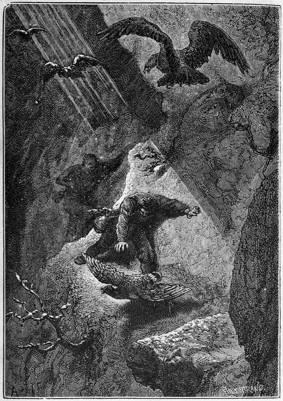
“And shall we see your companions at work?”
“No, not this time at least, for I am in a hurry to continue our underwater tour of the world. So I shall content myself with drawing on the reserves of sodium I possess. Time to take them aboard, that is, just one day, and we shall resume our voyage. So if you want to explore this cavern and walk around the lagoon, take advantage of this day, Monsieur Aronnax.”
I thanked the captain and went to fetch my two companions, who had not yet left their cabin. I invited them to follow me without telling them where they were.
They came up onto the platform. Conseil, who was surprised by nothing, regarded it as quite natural to wake up under a mountain after falling asleep under the waves. But Ned Land’s only idea was to look for some way out of the cavern.
After breakfast, toward ten o’clock, we went down onto the bank.
“So here we are on land once again,” said Conseil.
“I don’t call this ‘land,’” answered the Canadian. “And besides, we’re not on it, we’re under it.”
Between the foot of the mountain’s walls and the waters of the lake stretched a sandy shore that measured five hundred feet at its widest. On this beach one could easily walk around the lake. But the base of the high walls formed a rugged ground, on which lay, in a picturesque heap, volcanic blocks and enormous pumice stones. All these crumbled masses, covered with an enamel polished by the action of the underground fires, shone in the electric beams of the beacon. The micaceous dust of the shore, raised by our steps, flew up like a cloud of sparks.
The ground rose noticeably as it moved away from the water’s edge, and we soon came to long, winding slopes, veritable steep little paths that let us climb gradually; but we had to walk carefully among those conglomerates, which no cement bound together, and our feet slipped on the glassy trachytes, made of crystals of feldspar and quartz.
The volcanic nature of this enormous excavation showed itself on every side. I pointed this out to my companions.
“Can you picture,” I asked them, “what this funnel must have been like when it was filled with boiling lava, and the level of that incandescent liquid rose to the mouth of the mountain, like molten iron against the walls of a furnace?”
“I can picture it perfectly,” answered Conseil. “But will master tell me why the great founder stopped his work, and how it is that the furnace has been replaced by the calm waters of a lake?”
“Very probably, Conseil, because some convulsion produced, below the surface of the ocean, the opening that served as a passage for the Nautilus. Then the waters of the Atlantic rushed into the inside of the mountain. There was a terrible struggle between the two elements, a struggle that ended in Neptune’s favor. But many centuries have gone by since then, and the submerged volcano has turned into a peaceful grotto.”
“Very well,” replied Ned Land. “I accept the explanation, but I’m sorry, for our sake, that this opening the professor talks about wasn’t made above sea level.”
“But, friend Ned,” replied Conseil, “if that passage hadn’t been underwater, the Nautilus couldn’t have gotten in!”
“And I will add, Master Land, that the waters would not have rushed under the mountain, and the volcano would have stayed a volcano. So your regrets are pointless.”
Our ascent continued. The slopes grew steeper and narrower. Deep hollows sometimes cut across them, which had to be crossed. Overhanging masses had to be gone around. We slid on our knees, we crawled on our bellies. But, with Conseil’s skill and the Canadian’s strength helping, all the obstacles were overcome.
At a height of about thirty meters the nature of the ground changed, without becoming any easier. The conglomerates and trachytes gave way to black basalts, some spread out in sheets all pitted with blisters, others forming regular prisms arranged like a colonnade that supported the springing of that immense vault, an admirable specimen of natural architecture. Then, between these basalts, long streams of cooled lava wound their way, inlaid with bituminous streaks, and in places wide carpets of sulfur spread out. A stronger daylight, entering through the crater above, flooded with a vague brightness all these volcanic discharges, buried forever in the heart of the extinct mountain.
However, our upward progress was soon stopped, at a height of about two hundred fifty feet, by impassable obstacles. The inner vaulting curved back into an overhang, and the climb had to turn into a circular walk. At this last level the vegetable kingdom was beginning to struggle with the mineral kingdom. A few shrubs and even some trees grew out of crevices in the wall. I recognized euphorbias letting their caustic sap run. Heliotropes, quite unable to justify their name, since the sun’s rays never reached them, sadly drooped their clusters of flowers, whose colors and scents were half faded. Here and there a few chrysanthemums grew timidly at the foot of aloes with long, sad, sickly leaves. But between the lava flows I caught sight of little violets, still scented with a faint perfume, and I confess I breathed them in with delight. Scent is the soul of the flower, and the flowers of the sea, those splendid hydrophytes, have no soul!
We had come to the foot of a clump of sturdy dragon trees, which were pushing the rocks apart with the strength of their muscular roots, when Ned Land cried:
“Ah, sir, a beehive!”
“A beehive!” I replied, with a gesture of complete disbelief.
“Yes! A beehive,” the Canadian repeated, “and bees buzzing around it.”
I went closer and had to accept the evidence. There, at the mouth of a hole hollowed in the trunk of a dragon tree, were a few thousand of those ingenious insects, so common throughout the Canaries, whose products are particularly prized there.
Quite naturally, the Canadian wanted to lay in his supply of honey, and it would have been ungracious of me to object. A quantity of dry leaves mixed with sulfur caught fire from the spark of his lighter, and he began to smoke out the bees. The buzzing gradually stopped, and the hive, broken open, yielded several pounds of fragrant honey. Ned Land filled his knapsack with it.
“When I’ve mixed this honey with the dough of the breadfruit,” he told us, “I’ll be able to offer you a succulent cake.”
“My word!” said Conseil. “It will be gingerbread.”
“Gingerbread it is,” I said, “but let’s go on with this interesting walk.”
At certain turns of the path we were then following, the lake appeared in its full extent. The beacon lit the whole of its peaceful surface, which knew neither ripples nor undulations. The Nautilus kept perfectly still. On its platform and on the bank the men of its crew were moving about, black shadows sharply outlined in that luminous atmosphere.
At that moment we were going around the highest ridge of those first rock levels that supported the vault. I then saw that the bees were not the only representatives of the animal kingdom inside this volcano. Birds of prey glided and wheeled here and there in the shadows, or flew off from their nests perched on points of rock. They were white-bellied sparrow hawks and screeching kestrels. On the slopes, too, fine fat bustards were scampering off as fast as their stilts would carry them. I leave you to imagine whether the Canadian’s greed was kindled at the sight of this savory game, and whether he regretted not having a rifle in his hands. He tried to replace lead with stones, and after several unsuccessful attempts he managed to wound one of those magnificent bustards. To say that he risked his life twenty times to get hold of it is nothing but the plain truth, but he managed so well that the animal went to join the honeycombs in his bag.
We then had to go back down toward the shore, for the ridge was becoming impassable. Above us, the gaping crater looked like the wide mouth of a well. From this spot the sky could be made out fairly clearly, and I could see clouds racing by, disheveled by the west wind, trailing their misty rags down to the summit of the mountain. A sure proof that these clouds were at a modest height, for the volcano rose no more than eight hundred feet above the level of the ocean.
Half an hour after the Canadian’s last exploit, we had regained the inner shore. Here the flora was represented by wide carpets of rock samphire, a little umbelliferous plant very good for pickling, which also goes by the names of stone-piercer, sea fennel, and samphire. Conseil gathered a few bunches of it. As for the fauna, it counted crustaceans of every kind by the thousands: lobsters, edible crabs, prawns, opossum shrimps, harvestmen, galatheas, and a prodigious number of shells, cowries, rock shells, and limpets.
At this spot a magnificent grotto opened. My companions and I enjoyed stretching out on its fine sand. Fire had polished its enameled, sparkling walls, all powdered with mica dust. Ned Land was feeling the walls and trying to sound their thickness. I could not help smiling. The conversation then turned to his eternal escape plans, and I thought I could, without going too far, give him this hope: that Captain Nemo had come south only to renew his supply of sodium. I therefore hoped that he would now head back toward the coasts of Europe and America, which would allow the Canadian to try his failed attempt again with more success.
We had been lying in that charming grotto for an hour. The conversation, lively at first, was now flagging. A certain drowsiness was taking hold of us. As I saw no reason to resist sleep, I let myself sink into a deep doze. I dreamed—one does not choose one’s dreams—I dreamed that my existence was reduced to the vegetative life of a simple mollusk. It seemed to me that this grotto formed the double valve of my shell…
All of a sudden I was awakened by Conseil’s voice.
“Look out! Look out!” the worthy fellow was shouting.
“What is it?” I asked, half raising myself.
“The water’s coming in on us!”
I sat up. The sea was rushing like a torrent into our retreat, and, decidedly, since we were not mollusks, we had to get away.
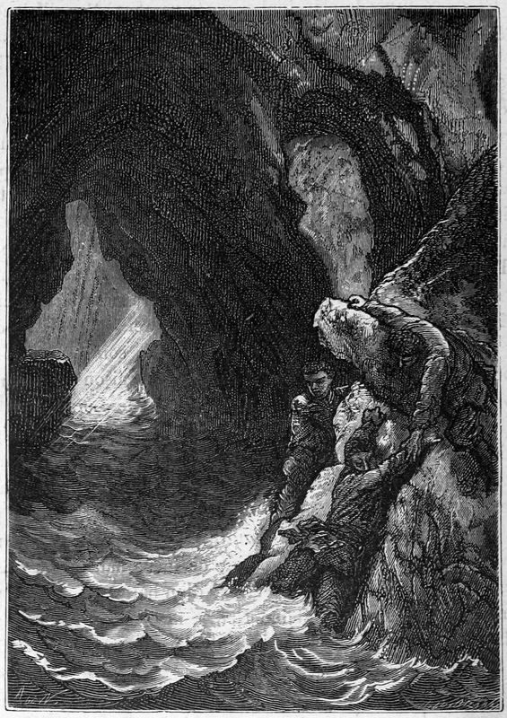
In a few moments we were safe on top of the grotto itself.
“What’s happening, then?” asked Conseil. “Some new phenomenon?”
“Why no, my friends,” I answered, “it’s the tide, only the tide, which nearly caught us like Walter Scott’s hero! The ocean is swelling outside, and by a perfectly natural law of equilibrium the level of the lake is rising too. We have gotten off with a half bath. Let’s go and change aboard the Nautilus.”
Three quarters of an hour later we had finished our circular walk and were going back aboard. The men of the crew were just finishing loading the supplies of sodium, and the Nautilus could have left at once.
However, Captain Nemo gave no order. Did he want to wait for night and slip out secretly through his underwater passage? Perhaps.
Be that as it may, the next day the Nautilus, having left its home port, was sailing far from any land, a few meters below the waves of the Atlantic.
The course of the Nautilus had not changed. So all hope of returning to European seas had to be set aside for the moment. Captain Nemo was holding his course south. Where was he taking us? I did not dare imagine.
That day the Nautilus crossed a singular portion of the Atlantic Ocean. Everyone knows of the existence of that great current of warm water known as the Gulf Stream. After leaving the channels of Florida, it heads toward Spitsbergen. But before entering the Gulf of Mexico, at about the forty-fourth degree of north latitude, this current divides into two arms; the main one heads for the coasts of Ireland and Norway, while the second bends south level with the Azores; then, striking the African shores and describing an elongated oval, it returns toward the Antilles.
Now, this second arm—it is more a necklace than an arm—encircles with its rings of warm water that cold, quiet, motionless portion of the ocean called the Sargasso Sea. A veritable lake in the open Atlantic, the waters of the great current take no less than three years to go around it.
The Sargasso Sea, properly speaking, covers the whole submerged part of Atlantis. Some authors have even held that the many weeds with which it is strewn were torn from the meadows of that ancient continent. It is more probable, however, that these grasses, algae, and fucus, carried away from the shores of Europe and America, are swept into this zone by the Gulf Stream. This was one of the reasons that led Columbus to suppose the existence of a new world. When the ships of that bold explorer reached the Sargasso Sea, they sailed with difficulty through these weeds, which held them back to the great terror of the crews, and they lost three long weeks crossing them.
Such was the region the Nautilus was visiting at that moment: a veritable meadow, a close-woven carpet of algae, gulfweed, and tropical grapes, so thick and so compact that a ship’s stem would not have torn through it without difficulty. So Captain Nemo, not wanting to entangle his propeller in this mass of weed, kept a few meters below the surface of the waves.
The name Sargasso comes from the Spanish word “sargazo,” which means kelp. This kelp, the swimming or berry-bearing kelp, makes up most of this immense bank. And here is why, according to the scientist Maury, author of The Physical Geography of the Sea, these hydrophytes gather in this peaceful basin of the Atlantic:
“The explanation that can be given for it,” he says, “seems to me to follow from an experiment known to everyone. If one places in a vessel pieces of cork or any floating bodies, and gives the water in the vessel a circular motion, one will see the scattered pieces gather in a group at the center of the liquid surface, that is, at the least agitated point. In the phenomenon that concerns us, the vessel is the Atlantic, the Gulf Stream is the circular current, and the Sargasso Sea is the central point where the floating bodies come together.”
I share Maury’s opinion, and I was able to study the phenomenon in this special setting, which ships rarely enter. Above us floated bodies of every origin, heaped up among these brownish weeds: tree trunks torn from the Andes or the Rocky Mountains and floated down by the Amazon or the Mississippi, numerous wrecks, remains of keels or hulls, staved-in planking so weighed down with shells and barnacles that it could not rise to the surface of the ocean. And time will one day justify Maury’s other opinion, that these materials, accumulated thus over centuries, will be mineralized by the action of the waters and will then form inexhaustible coalfields. A precious reserve that provident nature is preparing for the time when men have exhausted the mines of the continents.

In the midst of this inextricable fabric of weeds and fucus, I noticed charming pink starry alcyonarians, sea anemones trailing their long hair of tentacles, green, red, and blue jellyfish, and especially those large rhizostomes of Cuvier, whose bluish umbrellas are bordered with a violet festoon.
The whole of that day, February 22, was spent in the Sargasso Sea, where fish that are fond of sea plants and crustaceans find abundant food. The next day the ocean had resumed its usual appearance.
From then on, for nineteen days, from February 23 to March 12, the Nautilus, keeping to the middle of the Atlantic, carried us along at a constant speed of a hundred leagues every twenty-four hours. Captain Nemo evidently wanted to carry out his underwater program, and I had no doubt that, after rounding Cape Horn, he intended to return to the southern seas of the Pacific.
So Ned Land had been right to be afraid. In these wide seas, without islands, there was no longer any point in trying to leave the ship. Nor was there any way to oppose Captain Nemo’s will. The only course was to submit; but what could no longer be expected from force or cunning, I liked to think might be obtained by persuasion. Once this voyage was over, would Captain Nemo not agree to give us back our freedom on our oath never to reveal his existence? An oath of honor that we would have kept. But this delicate question had to be taken up with the captain. Now, would I be well received if I claimed that freedom? Had he not himself declared, from the very beginning and in a formal way, that the secret of his life required our perpetual imprisonment aboard the Nautilus? Must not my silence over four months have seemed to him a tacit acceptance of this situation? Would returning to the subject not arouse suspicions that might harm our plans, if some favorable circumstance later arose to take them up again? I weighed all these reasons, turned them over in my mind, and put them to Conseil, who was no less perplexed than I. In short, although I was not easily discouraged, I understood that the chances of ever seeing my fellow men again were growing smaller day by day, especially now that Captain Nemo was racing recklessly toward the South Atlantic!
During the nineteen days I mentioned above, no particular incident marked our voyage. I saw little of the captain. He was working. In the library I often found books he had left half open, especially books of natural history. My work on the ocean depths, which he had leafed through, was covered with notes in the margins, which sometimes contradicted my theories and systems. But the captain contented himself with refining my work in this way, and he rarely argued with me. Sometimes I heard the melancholy sounds of his organ, which he played with great expression, but only at night, in the most secret darkness, when the Nautilus was sleeping in the deserts of the ocean.
During this part of the voyage we sailed for whole days on the surface of the waves. The sea seemed abandoned. Barely a few sailing ships, laden for the Indies, heading for the Cape of Good Hope. One day we were chased by the boats of a whaler, which no doubt took us for some enormous and very valuable whale. But Captain Nemo did not want those good people to waste their time and trouble, and he ended the chase by diving under the water. This incident seemed to interest Ned Land keenly. I do not think I am wrong in saying that the Canadian must have regretted that our sheet-iron cetacean could not be struck dead by those fishermen’s harpoons.
The fish Conseil and I observed during this period differed little from those we had already studied in other latitudes. The chief ones were some specimens of that terrible genus of cartilaginous fish, divided into three subgenera numbering no fewer than thirty-two species: striped sharks five meters long, with flattened heads wider than their bodies, rounded tail fins, and backs bearing seven large black parallel lengthwise bands; then ash-gray sevengill sharks, pierced with seven gill openings and having a single dorsal fin placed roughly in the middle of the body.
Big dogfish passed by too, voracious fish if ever there were any. One has the right not to believe fishermen’s tales, but here is what they tell. In the body of one of these animals were found a buffalo’s head and a whole calf; in another, two tunas and a sailor in uniform; in another, a soldier with his saber; in yet another, a horse with its rider. All this, to tell the truth, is not an article of faith. In any case, none of these animals let itself be caught in the nets of the Nautilus, and I could not verify their voracity.
Elegant and playful schools of dolphins accompanied us for whole days. They went in bands of five or six, hunting in packs like wolves in the countryside; and besides, they are no less voracious than the dogfish, if I am to believe a professor from Copenhagen who took from the stomach of a dolphin thirteen porpoises and fifteen seals. It was, it is true, a killer whale, belonging to the largest known species, whose length sometimes exceeds twenty-four feet. This family of Delphinidae numbers ten genera, and those I saw belonged to the genus Delphinorhynchus, remarkable for an extremely narrow snout four times as long as the skull. Their bodies, three meters long, black above, were pinkish white below, sprinkled with very rare little spots.
I will also mention, in these seas, curious specimens of fish of the order Acanthopterygii and the family Sciaenidae. Some authors—more poets than naturalists—claim that these fish sing melodiously and that their voices together form a concert no choir of human voices could equal. I do not say no, but these sirens gave us no serenade as we passed, and I regret it.
To finish, Conseil classified a great quantity of flying fish. Nothing was more curious than to see the dolphins hunt them with marvelous precision. Whatever the range of its flight, whatever trajectory it described, even over the Nautilus, the unfortunate fish always found the dolphin’s mouth open to receive it. They were either flying gurnards or kite gurnards with luminous mouths, which at night, after tracing streaks of fire through the air, plunged into the dark waters like so many shooting stars.
Our navigation continued under these conditions until March 13. That day the Nautilus was used for sounding experiments that interested me keenly.
We had by then covered nearly thirteen thousand leagues since our departure from the high seas of the Pacific. Our position put us at 43° 37′ south latitude and 37° 53′ west longitude. These were the same waters where Captain Denham of the Herald paid out fourteen thousand meters of sounding line without finding bottom. There too, Lieutenant Parker of the American frigate Congress had been unable to reach the sea floor at fifteen thousand one hundred forty meters.
Captain Nemo decided to send his Nautilus to the most extreme depth in order to check these different soundings. I got ready to note all the results of the experiment. The drawing-room panels were opened, and the maneuvers began to reach those prodigiously remote layers.
It will be understood that there was no question of diving by filling the tanks. Perhaps they could not have increased the specific gravity of the Nautilus enough. Besides, to come back up, that extra load of water would have had to be expelled, and the pumps would not have been powerful enough to overcome the outside pressure.
Captain Nemo decided to seek the ocean floor along a sufficiently long diagonal, by means of his side planes, which were set at an angle of forty-five degrees to the waterlines of the Nautilus. Then the propeller was brought to its maximum speed, and its four blades beat the waves with indescribable violence.
Under this powerful thrust, the hull of the Nautilus quivered like a resonant string and sank steadily beneath the waters. The captain and I, stationed in the drawing room, followed the needle of the pressure gauge, which was swinging rapidly. Soon we had passed the habitable zone where most fish live. If some of these animals can live only at the surface of seas or rivers, others, fewer in number, keep to rather great depths. Among the latter I observed the hexanchus, a kind of dogfish with six breathing slits; the telescope fish with its enormous eyes; the armored gurnard, with gray thoracic fins and black pectorals, protected by its breastplate of pale red bony plates; and finally the grenadier, which, living at a depth of twelve hundred meters, was then enduring a pressure of a hundred twenty atmospheres.
I asked Captain Nemo whether he had observed fish at greater depths.
“Fish?” he answered me. “Rarely. But in the present state of science, what is presumed, what is known?”
“Here it is, Captain. It is known that, going toward the lower layers of the ocean, plant life disappears faster than animal life. It is known that where living creatures are still found, not a single hydrophyte grows. It is known that scallops and oysters live in two thousand meters of water, and that McClintock, the hero of the polar seas, brought up a living starfish from a depth of two thousand five hundred meters. It is known that the crew of the Bulldog, of the Royal Navy, fished up a starfish at two thousand six hundred twenty fathoms, that is, more than a league down. But, Captain Nemo, perhaps you will tell me that nothing is known?”
“No, Professor,” answered the captain, “I shall not be so impolite. However, I will ask you how you explain that creatures can live at such depths?”
“I explain it by two reasons,” I answered. “First, because vertical currents, caused by differences in the saltiness and density of the waters, produce a movement that is enough to sustain the rudimentary life of crinoids and starfish.”
“Correct,” said the captain.
“Next, because, if oxygen is the basis of life, it is known that the amount of oxygen dissolved in seawater increases with depth instead of decreasing, and that the pressure of the lower layers helps to compress it there.”
“Ah! That is known?” answered Captain Nemo in a slightly surprised tone. “Well, Professor, it is right to know it, for it is the truth. I will add, in fact, that the swim bladders of fish contain more nitrogen than oxygen when these animals are caught at the surface, and, on the contrary, more oxygen than nitrogen when they are drawn from great depths. Which proves your system right. But let us continue our observations.”
My eyes went back to the pressure gauge. The instrument showed a depth of six thousand meters. Our dive had lasted an hour. The Nautilus, gliding on its inclined planes, kept sinking. The deserted waters were admirably transparent, of a clearness nothing could equal. An hour later we were at thirteen thousand meters—about three and a quarter leagues—and the bottom of the ocean still gave no sign of itself.
However, at fourteen thousand meters, I caught sight of blackish peaks rising in the midst of the waters. But these summits might belong to mountains as high as the Himalayas or Mont Blanc, or higher still, and the depth of these abysses remained beyond estimate.
The Nautilus went down lower still, in spite of the powerful pressures it was enduring. I felt its plates tremble at the joints of their bolts; its bars bent; its bulkheads groaned; the drawing-room windows seemed to warp under the pressure of the waters. And this sturdy vessel would no doubt have given way if, as its captain had said, it had not been able to resist like a solid block.
Skimming the slopes of these rocks lost under the waters, I could still see a few shells, living serpulas and spinorbises, and some specimens of starfish.
But soon these last representatives of animal life disappeared, and below three leagues the Nautilus passed beyond the limits of underwater existence, as a balloon rising in the air passes above the breathable zones. We had reached a depth of sixteen thousand meters—four leagues—and the sides of the Nautilus were then bearing a pressure of sixteen hundred atmospheres, that is, sixteen hundred kilograms on every square centimeter of its surface!
“What a situation!” I cried. “To travel through these deep regions where man has never been! Look, Captain, look at those magnificent rocks, those uninhabited caves, those last recesses of the globe, where life is no longer possible! What unknown sites, and why must we be reduced to keeping only the memory of them?”
“Would you like,” Captain Nemo asked me, “to bring back something better than the memory?”
“What do you mean by those words?”
“I mean that nothing is easier than to take a photograph of this underwater region!”
I had not had time to express the surprise this new proposal caused me when, at a call from Captain Nemo, a camera was brought into the drawing room. Through the wide-open panels, the electrically lit liquid medium spread out with perfect clarity. No shadow, no fading of our artificial light. The sun would not have been more favorable to an operation of this kind. The Nautilus, under the thrust of its propeller, held in check by the slant of its planes, remained motionless. The instrument was aimed at these sites on the ocean floor, and in a few seconds we had obtained a negative of extreme clarity.
It is the positive print of it that I give here. In it one sees those primordial rocks that have never known the light of the heavens, those lower granites that form the mighty foundation of the globe, those deep caves hollowed out in the stony mass, those outlines of incomparable sharpness whose final stroke stands out in black, as if drawn by the brush of certain Flemish artists. Then, beyond, a horizon of mountains, an admirable undulating line that makes up the background of the landscape. I cannot describe this group of smooth, black, polished rocks, without a trace of moss, without a stain, strangely shaped and firmly set on that carpet of sand that sparkled under the beams of the electric light.
Meanwhile Captain Nemo, having finished his operation, had said to me:
“Let us go back up, Professor. We must not abuse this situation or expose the Nautilus too long to such pressures.”
“Let us go back up!” I answered.
“Hold on tight.”
I had not yet had time to understand why the captain gave me this advice when I was thrown onto the carpet.
With its propeller engaged at a signal from the captain and its planes set vertically, the Nautilus, carried away like a balloon in the air, rose with lightning speed. It cut through the mass of the waters with a resonant quivering. No detail could be seen. In four minutes it had crossed the four leagues that separated it from the surface of the ocean, and, after emerging like a flying fish, it fell back, sending the waves spurting to a prodigious height.

During the night of March 13 to 14, the Nautilus resumed its course to the south. I thought that when it was level with Cape Horn it would turn west in order to reach the seas of the Pacific and complete its tour of the world. It did nothing of the kind and kept heading on toward the southern regions. Where, then, did it want to go? To the pole? That was insane. I began to think that the captain’s recklessness sufficiently justified Ned Land’s fears.

For some time the Canadian had no longer spoken to me of his escape plans. He had become less communicative, almost silent. I could see how heavily this prolonged imprisonment weighed on him. I could feel the anger building up in him. When he met the captain, his eyes lit with a dark fire, and I was always afraid that his natural violence would carry him to some extreme.
That day, March 14, he and Conseil came to find me in my room. I asked them the reason for their visit.
“A simple question to ask you, sir,” the Canadian answered me.
“Go ahead, Ned.”
“How many men do you think there are aboard the Nautilus?”
“I couldn’t say, my friend.”
“It seems to me,” Ned Land went on, “that handling it doesn’t call for a large crew.”
“Indeed,” I answered, “under the conditions it works in, ten men or so at most should be enough to handle it.”
“Well,” said the Canadian, “why would there be more?”
“Why?” I replied.
I looked hard at Ned Land, whose intentions were easy to guess.
“Because,” I said, “if my hunches are right, if I have understood the captain’s existence correctly, the Nautilus is not merely a ship. It must be a place of refuge for those who, like its commander, have broken off all relations with the land.”
“Perhaps,” said Conseil, “but still, the Nautilus can hold only a certain number of men, and couldn’t master estimate that maximum?”
“How, Conseil?”
“By calculation. Given the ship’s capacity, which master knows, and consequently the quantity of air it holds; knowing, on the other hand, what each man uses up in the act of breathing; and comparing these results with the need the Nautilus has to surface every twenty-four hours…”
Conseil’s sentence went on and on, but I saw clearly what he was driving at.
“I understand you,” I said, “but that calculation, though easy enough to set up, can give only a very uncertain figure.”
“Never mind,” Ned Land went on, insisting.
“Here is the calculation,” I answered. “Each man uses up in an hour the oxygen contained in a hundred liters of air, that is, in twenty-four hours the oxygen contained in two thousand four hundred liters. So we must find how many times the Nautilus holds two thousand four hundred liters of air.”
“Precisely,” said Conseil.
“Now,” I went on, “the capacity of the Nautilus being fifteen hundred tons, and that of a ton a thousand liters, the Nautilus holds a million five hundred thousand liters of air, which, divided by two thousand four hundred…”
I worked it out quickly in pencil:
“…gives a quotient of six hundred twenty-five. Which is to say that the air contained in the Nautilus could strictly suffice for six hundred twenty-five men for twenty-four hours.”
“Six hundred twenty-five!” Ned repeated.
“But you may be certain,” I added, “that passengers, sailors, and officers together, we do not make up a tenth of that figure.”
“That’s still too many for three men!” murmured Conseil.
“So, my poor Ned, I can only advise patience.”
“And even better than patience,” answered Conseil, “resignation.”
Conseil had used the right word,
“After all,” he went on, “Captain Nemo can’t keep going south forever! He’ll have to stop, if only at the ice pack, and come back toward more civilized seas! Then it will be time to take up Ned Land’s plans again.”
The Canadian shook his head, passed his hand over his forehead, made no answer, and withdrew.
“If master will allow me to make an observation,” Conseil then said to me, “poor Ned is thinking of everything he can’t have. His whole past life comes back to him. Everything that is forbidden to us seems a loss to him. His old memories weigh on him, and his heart is heavy. We must understand him. What has he got to do here? Nothing. He is not a scientist like master, and he can’t take the same pleasure we do in the admirable things of the sea. He would risk anything to be able to walk into a tavern in his own country!”
It is certain that the monotony aboard must have seemed unbearable to the Canadian, used as he was to a free and active life. Events that could stir him were rare. That day, however, an incident came to remind him of his fine days as a harpooner.
Toward eleven in the morning, while on the surface of the ocean, the Nautilus came upon a school of whales. The encounter did not surprise me, for I knew that these animals, hunted relentlessly, have taken refuge in the basins of the high latitudes.
The part played by the whale in the marine world, and its influence on geographical discoveries, have been considerable. It was the whale that, drawing in its wake first the Basques, then the Asturians, the English, and the Dutch, emboldened them against the dangers of the ocean and led them from one end of the earth to the other. Whales like to frequent the southern and northern seas. Old legends even claim that these cetaceans led fishermen to within only seven leagues of the North Pole. If the fact is false, it will be true one day, and it is probably in this way, by hunting the whale in the Arctic or Antarctic regions, that men will reach that unknown point of the globe.
We were sitting on the platform over a calm sea. March in these latitudes, the equivalent of our October, was giving us fine autumn days. It was the Canadian—he could not be mistaken—who sighted a whale on the eastern horizon. Looking carefully, one could see its blackish back rising and falling alternately above the waves, five miles from the Nautilus.
“Ah!” cried Ned Land. “If I were aboard a whaler, now there’s an encounter that would please me! It’s a big animal! See how powerfully its blowholes shoot out columns of air and vapor! A thousand devils! Why do I have to be chained to this piece of sheet iron!”
“What, Ned,” I answered, “you still haven’t got over your old ideas about whaling?”
“Can a whaler, sir, forget his old trade? Does a man ever tire of the thrills of a hunt like that?”
“You have never fished in these seas, Ned?”
“Never, sir. In the northern seas only, as much in Bering Strait as in Davis Strait.”
“Then the southern right whale is still unknown to you. It is the Greenland right whale you have hunted until now, and it would not venture across the warm waters of the equator.”
“Ah, Professor, what are you telling me?” replied the Canadian in a rather incredulous tone.
“I am telling you what is so.”
“Come on! Me, the man talking to you, in ’65, two and a half years ago, I landed a whale near Greenland that still carried in its side the stamped harpoon of a Bering whaler. Now I ask you, how, after being struck west of America, could the animal have come to be killed in the east, unless it had crossed the equator after rounding either Cape Horn or the Cape of Good Hope?”
“I think as friend Ned does,” said Conseil, “and I am waiting to hear what master will answer.”
“Master will answer you, my friends, that whales are confined, according to their species, to certain seas that they do not leave. And if one of these animals came from Bering Strait to Davis Strait, it is simply because there is a passage from one sea to the other, either along the coasts of America or along those of Asia.”
“Are we supposed to believe you?” asked the Canadian, closing one eye.
“We must believe master,” answered Conseil.
“So then,” the Canadian went on, “since I’ve never fished in these waters, I don’t know the whales that frequent them?”
“I told you so, Ned.”
“All the more reason to make their acquaintance,” replied Conseil.
“Look! Look!” cried the Canadian, his voice shaking. “It’s coming closer! It’s coming at us! It’s mocking me! It knows I can’t do a thing against it!”
Ned was stamping his foot. His hand quivered as it brandished an imaginary harpoon.
“These cetaceans,” he asked, “are they as big as the ones in the northern seas?”
“About the same, Ned.”
“Because I’ve seen big whales, sir, whales up to a hundred feet long! I’ve even been told that the hullamock and the umgallick of the Aleutian Islands sometimes go over a hundred fifty feet.”
“That seems exaggerated to me,” I answered. “Those animals are only rorquals, with dorsal fins, and, like the sperm whales, they are generally smaller than the right whale.”
“Ah!” cried the Canadian, whose eyes never left the ocean. “It’s getting closer, it’s coming into the waters of the Nautilus!”
Then, taking up the conversation again:
“You talk about the sperm whale,” he said, “as if it were a little beast! And yet gigantic sperm whales are on record. They’re intelligent cetaceans. Some of them, they say, cover themselves with seaweed and fucus. People take them for islets. They camp on them, settle in, make a fire…”
“They build houses on them,” said Conseil.
“Yes, joker,” answered Ned Land. “Then one fine day the animal dives and drags all its inhabitants down to the bottom of the abyss.”
“As in the voyages of Sinbad the Sailor,” I replied, laughing.
“Ah, Master Land, it seems you like extraordinary stories! What sperm whales yours are! I hope you don’t believe in them!”
“Mr. Naturalist,” the Canadian answered seriously, “you have to believe anything when it comes to whales!—How that one moves! How it slips away!—They claim those animals can go around the world in two weeks.”
“I don’t say no.”
“But what you surely don’t know, Monsieur Aronnax, is that at the beginning of the world whales swam even faster.”
“Ah, really, Ned! And why is that?”
“Because back then their tails were set crosswise, like a fish’s, that is, the tail was flattened vertically and struck the water from left to right and from right to left. But the Creator, seeing that they went too fast, twisted their tails, and ever since they’ve beaten the waves up and down, at the expense of their speed.”
“Good, Ned,” I said, taking up one of the Canadian’s expressions. “Are we supposed to believe you?”
“Not too much,” answered Ned Land, “and no more than if I told you there are whales three hundred feet long weighing a hundred thousand pounds.”
“That is a lot, indeed,” I said. “Still, it must be admitted that certain cetaceans grow to a considerable size, since they are said to yield as much as a hundred twenty tons of oil.”
“That much I’ve seen,” said the Canadian.
“I can well believe it, Ned, just as I believe that some whales equal a hundred elephants in bulk. Judge the effects produced by such a mass launched at full speed!”
“Is it true,” asked Conseil, “that they can sink ships?”
“Ships, I don’t believe so,” I answered. “It is said, however, that in 1820, precisely in these southern seas, a whale rushed at the Essex and drove it backward at a speed of four meters a second. Waves came in over the stern, and the Essex sank almost at once.”
Ned looked at me mockingly.
“For my part,” he said, “I’ve taken a blow from a whale’s tail—in my boat, it goes without saying. My companions and I were thrown six meters into the air. But next to the professor’s whale, mine was only a calf.”
“Do those animals live a long time?” asked Conseil.
“A thousand years,” the Canadian answered without hesitation.
“And how do you know that, Ned?”
“Because they say so.”
“And why do they say so?”
“Because they know it.”
“No, Ned, they don’t know it, they suppose it, and here is the reasoning they rest it on. Four hundred years ago, when fishermen first hunted whales, these animals were larger than they grow today. So it is supposed, logically enough, that the smaller size of present-day whales comes from their not having had time to reach their full development. That is what led Buffon to say that these cetaceans could, and even should, live a thousand years. Do you hear?”
Ned Land did not hear. He was no longer listening. The whale kept coming closer. He was devouring it with his eyes.
“Ah!” he cried. “It’s not one whale anymore, it’s ten, it’s twenty, it’s a whole herd! And not to be able to do anything! To be here bound hand and foot!”
“But, friend Ned,” said Conseil, “why not ask Captain Nemo for permission to hunt?…”
Conseil had not finished his sentence before Ned Land had slid down through the hatch and was running in search of the captain. A few moments later both of them reappeared on the platform.
Captain Nemo observed the herd of cetaceans playing on the waters a mile from the Nautilus.
“Those are southern right whales,” he said. “There is the fortune of a whole fleet of whalers.”
“Well, sir,” asked the Canadian, “couldn’t I hunt them, if only so as not to forget my old trade of harpooner?”
“What is the good,” answered Captain Nemo, “of hunting only to destroy? We have no use for whale oil aboard.”
“But, sir,” the Canadian went on, “in the Red Sea you allowed us to go after a dugong!”
“Then it was a matter of getting fresh meat for my crew. Here it would be killing for killing’s sake. I know very well that this is a privilege reserved for man, but I do not allow these murderous pastimes. In destroying the southern right whale like the Greenland whale, harmless and good creatures, your kind, Master Land, do a blameworthy thing. That is how they have already depopulated the whole of Baffin Bay, and how they will annihilate a class of useful animals. So leave these unfortunate cetaceans in peace. They have enough natural enemies, the sperm whales, the swordfish, and the sawfish, without your meddling.”
I leave it to the reader to imagine the face the Canadian was making during this lecture on morals. To give such reasons to a hunter was to waste one’s words. Ned Land was looking at Captain Nemo and evidently did not understand what he meant to tell him. And yet the captain was right. The barbarous and thoughtless relentlessness of the fishermen will one day make the last whale disappear from the ocean.
Ned Land whistled his Yankee Doodle between his teeth, thrust his hands into his pockets, and turned his back on us.

Meanwhile Captain Nemo was observing the herd of cetaceans, and, turning to me:
“I was right to claim that, without counting man, whales have enough other natural enemies. These are going to have a strong adversary to deal with before long. Do you see, Monsieur Aronnax, eight miles to leeward, those blackish moving points?”
“Yes, Captain,” I answered.
“Those are sperm whales, terrible animals that I have sometimes met in herds of two or three hundred! As for those, cruel and harmful beasts, it is right to exterminate them.”
The Canadian turned around quickly at these last words.
“Well, Captain,” I said, “there is still time, in the very interest of the whales…”
“There is no need to expose ourselves, Professor. The Nautilus will be enough to scatter those sperm whales. It is armed with a steel spur that is quite as good as Master Land’s harpoon, I imagine.”
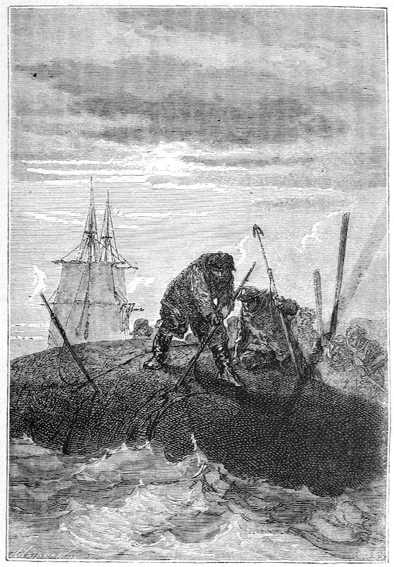
The Canadian did not trouble to hide a shrug. Attack cetaceans with a spur! Who had ever heard of such a thing?
“Wait, Monsieur Aronnax,” said Captain Nemo. “We shall show you a hunt you do not yet know. No pity for those ferocious cetaceans. They are nothing but mouth and teeth!”
Mouth and teeth! One could not better describe the macrocephalic sperm whale, which sometimes exceeds twenty-five meters in length. The enormous head of this cetacean takes up about a third of its body. Better armed than the baleen whale, whose upper jaw is furnished only with whalebone, it is equipped with twenty-five large teeth, twenty centimeters high, cylindrical and conical at the tip, each weighing two pounds. It is in the upper part of this enormous head, in large cavities separated by cartilage, that three to four hundred kilograms of that precious oil called “spermaceti” are found. The sperm whale is an ungainly animal, more tadpole than fish, as Frédol remarked. It is badly built, being, so to speak, “botched” along the whole left side of its frame, and it sees hardly at all except with its right eye.
Meanwhile the monstrous herd kept coming closer. It had seen the whales and was getting ready to attack them. One could foresee the victory of the sperm whales, not only because they are better built for attack than their harmless adversaries, but also because they can stay longer under the waves without coming up to breathe at the surface.
It was high time to go to the aid of the whales. The Nautilus went underwater. Conseil, Ned, and I took our places before the drawing-room windows. Captain Nemo went to the helmsman to handle his vessel as an engine of destruction. Soon I felt the beats of the propeller quicken and our speed increase.
The fight between the sperm whales and the baleen whales had already begun when the Nautilus arrived. It maneuvered so as to cut through the herd of macrocephali. At first they seemed little disturbed at the sight of the new monster joining the battle. But soon they had to dodge its blows.
What a struggle! Even Ned Land, soon carried away with enthusiasm, ended up clapping his hands. The Nautilus was now nothing but a formidable harpoon brandished by the hand of its captain. It hurled itself against those fleshy masses and ran them through from side to side, leaving behind it two writhing halves of an animal. The formidable blows of the tails that struck its sides, it did not feel. Nor the shocks it produced. One sperm whale exterminated, it ran at another, turned on the spot so as not to miss its prey, going ahead, going astern, obedient to its rudder, diving when the cetacean sank into the deep layers, rising with it when it came back to the surface, striking it head-on or at a slant, cutting it or tearing it, and, in every direction and at every speed, piercing it with its terrible spur.
What carnage! What noise on the surface of the waves! What shrill whistles and what snorting peculiar to these terrified animals! In those layers, usually so peaceful, their tails raised veritable swells.
This Homeric massacre went on for an hour, and the macrocephali could not escape it. Several times ten or twelve of them together tried to crush the Nautilus under their mass. At the window one could see their enormous mouths paved with teeth, their formidable eyes. Ned Land, beside himself, threatened them and hurled abuse at them. We could feel them clinging to our vessel like dogs seizing a young boar in the underbrush. But the Nautilus, forcing its propeller, carried them off, dragged them along, or brought them back up toward the upper level of the waters, caring nothing for their enormous weight or their powerful grip.
At last the mass of sperm whales thinned out. The waves grew calm again. I felt that we were rising to the surface of the ocean. The hatch was opened, and we rushed onto the platform.
The sea was covered with mutilated corpses. A formidable explosion could not have divided, torn, and shredded those fleshy masses more violently. We were floating among gigantic bodies, bluish on the back, whitish on the belly, and all humped with enormous protuberances. A few terrified sperm whales were fleeing on the horizon. The waves were dyed red over a space of several miles, and the Nautilus was floating in a sea of blood.
Captain Nemo joined us.
“Well, Master Land?” he said.
“Well, sir,” answered the Canadian, whose enthusiasm had cooled, “it’s a terrible sight, all right. But I’m not a butcher, I’m a hunter, and this is nothing but butchery.”
“It is a massacre of harmful animals,” answered the captain, “and the Nautilus is not a butcher’s knife.”
“I prefer my harpoon,” retorted the Canadian.
“To each his own weapon,” answered the captain, looking hard at Ned Land.
I was afraid the latter would let himself be carried away into some act of violence that would have had deplorable consequences. But his anger was diverted by the sight of a whale that the Nautilus was coming alongside at that moment.
The animal had not been able to escape the teeth of the sperm whales. I recognized the southern right whale, with its flattened head, which is entirely black. Anatomically, it is distinguished from the white whale and the North Cape whale by the fusion of its seven cervical vertebrae, and it has two more ribs than its relatives. The unfortunate cetacean, lying on its side, its belly riddled with bites, was dead. From the end of its mutilated fin there still hung a little calf it had not been able to save from the massacre. Its open mouth let the water run through its whalebone, murmuring like surf.
Captain Nemo brought the Nautilus alongside the animal’s corpse. Two of his men climbed onto the whale’s side, and I saw, not without astonishment, that they were drawing from its teats all the milk they held, that is, two to three tons’ worth.
The captain offered me a cup of this still-warm milk. I could not help showing him my distaste for this drink. He assured me that the milk was excellent and in no way different from cow’s milk.
I tasted it and agreed with him. So it was a useful reserve for us, for this milk, in the form of salted butter or cheese, would bring a pleasant variety to our everyday fare.
From that day on, I noticed with uneasiness that Ned Land’s feelings toward Captain Nemo were growing worse and worse, and I resolved to keep a close watch on the Canadian’s words and deeds.
The Nautilus had resumed its imperturbable course to the south. It was following the fiftieth meridian at considerable speed. Did it want to reach the pole, then? I did not think so, for until now every attempt to get to that point of the globe had failed. Besides, the season was already well advanced, since March 13 in the Antarctic lands corresponds to September 13 in the northern regions, which begins the equinoctial period.
On March 14 I sighted floating ice at 55° latitude, mere pale fragments twenty to twenty-five feet across, forming reefs on which the sea was breaking. The Nautilus kept to the surface of the ocean. Ned Land, having already fished in the Arctic seas, was familiar with this spectacle of icebergs. Conseil and I were admiring it for the first time.
In the sky, toward the southern horizon, stretched a white band of dazzling appearance. English whalers have given it the name of “ice blink.” However thick the clouds may be, they cannot darken it. It announces the presence of a pack, or bank of ice.
Indeed, larger blocks soon appeared, whose brilliance changed with the whims of the mist. Some of these masses showed green veins, as if copper sulfate had traced their wavy lines. Others, like enormous amethysts, let the light pass through them. Some reflected the rays of day on the thousand facets of their crystals. Others, tinged with the bright reflections of limestone, would have sufficed to build a whole city of marble.
The farther south we went, the more these floating islands grew in number and size. Polar birds nested on them by the thousands. There were petrels, cape pigeons, and shearwaters, which deafened us with their cries. Some, taking the Nautilus for the corpse of a whale, came to rest on it and pecked at its resonant plating.
During this navigation among the ice, Captain Nemo often stayed on the platform. He was attentively observing these abandoned waters. I sometimes saw his calm gaze light up. Was he telling himself that in these polar seas forbidden to man he was at home, master of these impassable spaces? Perhaps. But he did not speak. He stood motionless, coming back to himself only when his instincts as a seaman took over again. Then, steering his Nautilus with consummate skill, he deftly avoided collision with those masses, some of which measured several miles in length, with a height varying from seventy to eighty meters. Often the horizon seemed entirely closed. At about the sixtieth degree of latitude every passage had disappeared. But Captain Nemo, searching carefully, soon found some narrow opening through which he boldly slipped, knowing very well, however, that it would close behind him.
So it was that the Nautilus, guided by that skillful hand, passed all these kinds of ice, classified according to their shape or size with a precision that delighted Conseil: icebergs, or mountains; ice fields, or smooth, limitless plains; drift ice, or floating ice; packs, or broken fields, called palchs when they are circular and streams when they are made of elongated pieces.
The temperature was rather low. The thermometer, exposed to the outside air, showed two to three degrees below zero. But we were warmly dressed in furs, provided at the expense of seals and sea bears. The interior of the Nautilus, steadily heated by its electrical apparatus, defied the most intense cold. Besides, it would only have had to sink a few meters below the waves to find a bearable temperature there.
Two months earlier we would have enjoyed perpetual daylight in this latitude; but already night was falling for three or four hours, and later it was to cast six months of darkness over these circumpolar regions.
On March 15 we passed the latitude of the South Shetland and South Orkney Islands. The captain told me that numerous tribes of seals once lived on these lands; but the English and American whalers, in their rage for destruction, massacring adults and pregnant females, had left behind them the silence of death where once there had been the bustle of life.
On March 16, toward eight in the morning, the Nautilus, following the fifty-fifth meridian, crossed the Antarctic Circle. Ice surrounded us on all sides and closed off the horizon. Yet Captain Nemo went from passage to passage and kept moving farther south.
“But where is he going?” I asked.
“Straight ahead,” Conseil answered. “After all, when he can’t go any farther, he’ll stop.”
“I wouldn’t swear to it!” I answered.
And, to be frank, I will admit that this adventurous excursion did not displease me. To what degree the beauties of these new regions filled me with wonder, I cannot express. The ice took on superb attitudes. Here it formed together an Oriental city, with its countless minarets and mosques. There, a city fallen down, as if thrown to the ground by a convulsion of the earth. Aspects ceaselessly varied by the slanting rays of the sun, or lost in gray mists in the midst of snowstorms. Then, on every side, detonations, collapses, great tumbles of icebergs, which changed the scenery like the landscape of a diorama.
When the Nautilus was submerged at the moment these balances broke, the noise spread under the water with frightening intensity, and the fall of those masses created fearsome eddies even in the deep layers of the ocean. The Nautilus then rolled and pitched like a ship abandoned to the fury of the elements.
Often, seeing no way out, I thought we were prisoners for good; but, guided by instinct, on the slightest sign Captain Nemo discovered new passages. He was never wrong when he observed the thin threads of bluish water that ran through the ice fields. So I did not doubt that he had already ventured the Nautilus into the Antarctic seas.
However, during the day of March 16, fields of ice barred our way completely. It was not yet the ice bank, but vast ice fields cemented by the cold. This obstacle could not stop Captain Nemo, and he hurled himself against the ice field with frightful violence. The Nautilus entered this crumbly mass like a wedge and split it with terrible cracking. It was the ancient battering ram driven by infinite power. Fragments of ice, thrown high, fell back around us like hail. By its momentum alone our vessel dug itself a channel. Sometimes, carried along by its own impetus, it rode up onto the ice field and crushed it with its weight, or at times, wedged under the ice field, it split it by a simple pitching movement that produced wide tears.
During those days violent squalls assailed us. In certain thick fogs one could not have seen from one end of the platform to the other. The wind jumped abruptly to every point of the compass. The snow piled up in layers so hard that it had to be broken with pickaxes. At a temperature of only five degrees below zero, all the outer parts of the Nautilus became covered with ice. Rigging could not have been worked, for all the tackle would have jammed in the sheaves of the blocks. Only a ship without sails, driven by an electric motor that did without coal, could face such high latitudes.
Under these conditions the barometer generally stood very low. It even fell to 73.5 centimeters. The compass readings no longer offered any guarantee. Its maddened needles pointed in contradictory directions as we approached the south magnetic pole, which does not coincide with the geographic south. Indeed, according to Hansteen, this pole lies at about 70° latitude and 130° longitude, and according to Duperrey’s observations, at 133° longitude and 70° 30′ latitude. So we had to make numerous observations with compasses carried to different parts of the ship and take an average. But often we relied on dead reckoning to plot the course covered, a not very satisfactory method among these winding passages whose landmarks change ceaselessly.
At last, on March 18, after twenty useless assaults, the Nautilus found itself definitively blocked. It was no longer streams, nor palchs, nor ice fields, but an endless and motionless barrier formed of mountains welded together.
“The ice bank!” the Canadian said to me.
I understood that for Ned Land, as for all the navigators who had preceded us, this was the impassable obstacle. The sun having appeared for a moment toward noon, Captain Nemo obtained a fairly accurate observation, which put our position at 51° 30′ longitude and 67° 39′ south latitude. This was already an advanced point of the Antarctic regions.

Of sea, of liquid surface, there was no longer any sign before our eyes. Under the spur of the Nautilus stretched a vast tormented plain, tangled with confused blocks, with all the capricious jumble that marks the surface of a river some time before the ice breaks up, but on gigantic proportions. Here and there, sharp peaks and slender needles rose to a height of two hundred feet; farther off, a line of sheer cliffs clad in grayish tints, vast mirrors reflecting a few rays of sunlight half drowned in the mist. Then, over this desolate nature, a fierce silence, barely broken by the beating wings of petrels or shearwaters. Everything was frozen then, even sound.
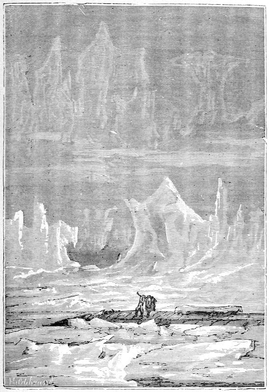
So the Nautilus had to stop its adventurous course among the ice fields.
“Sir,” Ned Land said to me that day, “if your captain goes any farther!”
“Well?”
“He’ll be a masterly man.”
“Why, Ned?”
“Because nobody can get past the ice bank. He’s powerful, your captain; but, a thousand devils, he’s not more powerful than nature, and where she’s set limits, you have to stop whether you like it or not.”
“True, Ned Land, and yet I would have liked to know what lies behind this ice bank! A wall, that is what irritates me most!”
“Master is right,” said Conseil. “Walls were invented only to annoy scientists. There ought to be no walls anywhere.”
“Well!” said the Canadian. “Everybody knows what’s behind that ice bank.”
“What, then?” I asked.
“Ice, and more ice!”
“You are certain of that fact, Ned,” I replied, “but I am not. That is why I would like to go and see.”
“Well, Professor,” answered the Canadian, “give up that idea. You’ve reached the ice bank, which is already enough, and you’ll go no farther, nor your Captain Nemo, nor his Nautilus. And whether he likes it or not, we’ll go back north, that is, to the land of honest folk.”
I must admit that Ned Land was right, and as long as ships are not made to sail over ice fields, they will have to stop before the ice bank.
Indeed, in spite of its efforts, in spite of the powerful means it used to split the ice, the Nautilus was reduced to immobility. Ordinarily, whoever cannot go farther gets off with turning back. But here, turning back was as impossible as going forward, for the passages had closed behind us, and if our vessel stayed stationary even a little while, it would soon be frozen in. That was in fact what happened toward two in the afternoon, and new ice formed on its sides with astonishing speed. I had to admit that Captain Nemo’s conduct was more than imprudent.
I was on the platform at that moment. The captain, who had been observing the situation for a few moments, said to me:
“Well, Professor, what do you think of it?”
“I think we are caught, Captain.”
“Caught! And what do you mean by that?”
“I mean that we can go neither forward nor backward, nor in any direction. That, I believe, is what is called ‘caught,’ at least on the inhabited continents.”
“So, Monsieur Aronnax, you think the Nautilus will not be able to free itself?”
“With difficulty, Captain, for the season is already too far advanced for you to count on the ice breaking up.”
“Ah, Professor,” answered Captain Nemo in an ironic tone, “you will always be the same! You see nothing but hindrances and obstacles! I assure you that not only will the Nautilus free itself, but it will go farther still!”
“Farther south?” I asked, looking at the captain.
“Yes, sir, it will go to the pole.”
“To the pole!” I cried, unable to hold back a movement of disbelief.
“Yes!” the captain answered coldly. “To the South Pole, to that unknown point where all the meridians of the globe cross. You know whether I do what I want with the Nautilus.”
Yes! I knew it. I knew this man was daring to the point of recklessness! But to overcome the obstacles bristling around the South Pole, more inaccessible than the North Pole, which the boldest navigators had not yet reached—was that not an utterly insane undertaking, which only the mind of a madman could conceive!
It then occurred to me to ask Captain Nemo whether he had already discovered that pole, which the foot of a human creature had never trodden.
“No, sir,” he answered me, “and we shall discover it together. Where others have failed, I shall not fail. I have never taken my Nautilus so far into the southern seas; but, I repeat, it will go farther still.”
“I want to believe you, Captain,” I went on in a slightly ironic tone. “I believe you! Let us go forward! There are no obstacles for us! Let us break this ice bank! Let us blow it up, and if it resists, let us give the Nautilus wings so that it can pass over it!”
“Over it, Professor?” Captain Nemo answered calmly. “Not over it, but under it.”
“Under it!” I cried.
A sudden revelation of the captain’s plans had just lit up my mind. I had understood. The marvelous qualities of the Nautilus were going to serve it once more in this superhuman undertaking!
“I see that we are beginning to understand each other, Professor,” the captain said to me, half smiling. “You already glimpse the possibility—I would say the success—of this attempt. What is impracticable with an ordinary ship becomes easy for the Nautilus. If a continent emerges at the pole, it will stop before that continent. But if, on the contrary, it is the open sea that washes the pole, it will go to the pole itself!”
“Indeed,” I said, carried along by the captain’s reasoning, “if the surface of the sea is solidified by the ice, its lower layers are free, by that providential law that has placed the maximum density of seawater at a temperature above the freezing point. And, if I am not mistaken, the submerged part of this ice bank is to the part above water as four is to one?”
“Roughly, Professor. For every foot icebergs have above the sea, they have three below. Now, since these mountains of ice do not exceed a height of a hundred meters, they go down only three hundred. And what are three hundred meters to the Nautilus?”
“Nothing, sir.”
“It will even be able to seek, at a greater depth, the uniform temperature of seawater, and there we shall brave with impunity the thirty or forty degrees of cold at the surface.”
“Right, sir, quite right,” I answered, growing animated.
“The only difficulty,” Captain Nemo went on, “will be to stay submerged for several days without renewing our supply of air.”
“Is that all?” I replied. “The Nautilus has vast tanks; we shall fill them, and they will supply us with all the oxygen we need.”
“Well thought of, Monsieur Aronnax,” answered the captain with a smile. “But, not wanting you to be able to accuse me of recklessness, I am putting all my objections to you in advance.”
“Do you have any more?”
“Just one. It is possible, if there is a sea at the South Pole, that this sea may be entirely frozen over, and consequently that we may not be able to come back to its surface!”
“Come, sir, are you forgetting that the Nautilus is armed with a formidable spur, and could we not drive it diagonally against those ice fields, which will open under the shock?”
“Well, Professor, you are full of ideas today!”
“Besides, Captain,” I added, growing more enthusiastic than ever, “why shouldn’t one find an open sea at the South Pole as at the North Pole? The poles of cold and the poles of the earth do not coincide in either the southern or the northern hemisphere, and until there is proof to the contrary, one must suppose either a continent or an ocean free of ice at those two points of the globe.”
“I believe so too, Monsieur Aronnax,” answered Captain Nemo. “I will only point out to you that after raising so many objections to my plan, you are now crushing me with arguments in its favor.”
Captain Nemo was right. I had come to outdo him in daring! It was I who was dragging him to the pole! I was ahead of him, I was leaving him behind… But no, poor fool! Captain Nemo knew better than you the pros and cons of the question, and he was amusing himself watching you carried away into dreams of the impossible!
Meanwhile he had not lost an instant. At a signal the first officer appeared. The two men talked rapidly in their incomprehensible language, and whether the first officer had been warned beforehand or whether he found the plan feasible, he showed no surprise.
But impassive as he was, he did not show more complete impassivity than Conseil when I announced to that worthy fellow our intention of pushing on to the South Pole. A “whatever master pleases” greeted my announcement, and I had to be content with that. As for Ned Land, if ever shoulders rose high, they were the Canadian’s.
“You see, sir,” he said to me, “you and your Captain Nemo, I feel sorry for you!”
“But we shall go to the pole, Master Ned.”
“Maybe, but you won’t come back!”
And Ned Land went back into his cabin, “so as not to do something he’d regret,” he said as he left me.
Meanwhile the preparations for this daring attempt had begun. The powerful pumps of the Nautilus were forcing air into the tanks and storing it at high pressure. Toward four o’clock Captain Nemo told me that the hatches of the platform were about to be closed. I took a last look at the thick ice bank we were about to cross. The weather was clear, the atmosphere fairly pure, the cold very sharp, twelve degrees below zero; but as the wind had dropped, this temperature did not seem too unbearable.
Some ten men climbed onto the sides of the Nautilus and, armed with pickaxes, broke the ice around the hull, which was soon freed. The operation was quickly carried out, for the new ice was still thin. We all went back inside. The usual tanks filled with the water kept free at the waterline. The Nautilus soon began to descend.
I had taken my place in the drawing room with Conseil. Through the open window we were watching the lower layers of the southern ocean. The thermometer was rising. The needle of the pressure gauge was swinging across the dial.
At about three hundred meters, as Captain Nemo had foreseen, we were floating beneath the undulating underside of the ice bank. But the Nautilus went down lower still. It reached a depth of eight hundred meters. The temperature of the water, which had been twelve degrees below zero at the surface, now showed only eleven. Two degrees had already been gained. It goes without saying that the temperature of the Nautilus, raised by its heating apparatus, stayed at a much higher level. All the maneuvers were carried out with extraordinary precision.
“We’ll get through, if master doesn’t mind,” Conseil said to me.
“I am counting on it!” I answered in a tone of deep conviction.
Under this open sea the Nautilus had headed straight for the pole without leaving the fifty-second meridian. From 67° 30′ to 90°, twenty-two and a half degrees of latitude remained to be covered, that is, a little more than five hundred leagues. The Nautilus took on an average speed of twenty-six miles an hour, the speed of an express train. If it kept it up, forty hours would be enough to reach the pole.
For part of the night the novelty of the situation kept Conseil and me at the drawing-room window. The sea was lit up by the electric radiance of the beacon. But it was deserted. Fish did not stay in these imprisoned waters. They found here only a passage from the Antarctic Ocean to the open sea of the pole. Our progress was rapid. We could feel it in the quivering of the long steel hull.
Toward two in the morning I went to take a few hours’ rest. Conseil did the same. Crossing the gangways, I did not meet Captain Nemo. I supposed he was in the pilothouse.
The next day, March 19, at five in the morning, I took up my post in the drawing room again. The electric log showed me that the speed of the Nautilus had been reduced. It was then rising toward the surface, but cautiously, slowly emptying its tanks.
My heart was pounding. Were we going to emerge and find the open air of the pole?
No. A shock told me that the Nautilus had struck the underside of the ice bank, still very thick, to judge by the dullness of the sound. Indeed, we had “touched,” to use the nautical expression, but upside down and at a depth of a thousand feet. That meant two thousand feet of ice above us, a thousand of which rose above the water. The ice bank was then higher than the height we had measured at its edges. Not a reassuring circumstance.
During that day the Nautilus repeated this same experiment several times, and each time it struck against the wall that formed a ceiling above it. At certain moments it met it at nine hundred meters, which indicated a thickness of twelve hundred meters, two hundred of which rose above the surface of the ocean. That was twice its height at the moment the Nautilus had dived beneath the waves.
I carefully noted these various depths, and in this way I obtained the underwater profile of this chain as it unfolded beneath the waters.
In the evening no change had occurred in our situation. Still ice between four hundred and five hundred meters down. An evident decrease, but what a thickness still between us and the surface of the ocean!
It was then eight o’clock. The air inside the Nautilus should have been renewed four hours earlier, according to the daily routine aboard. Yet I was not suffering much, although Captain Nemo had not yet called on his tanks for extra oxygen.
My sleep was troubled that night. Hope and fear besieged me by turns. I got up several times. The Nautilus kept groping its way. Toward three in the morning I observed that the underside of the ice bank was now met at a depth of only fifty meters. A hundred fifty feet then separated us from the surface of the waters. The ice bank was gradually turning back into an ice field. The mountain was becoming a plain again.
My eyes never left the pressure gauge. We kept rising, following diagonally the shining surface that sparkled under the electric beams. The ice bank sloped down above and below in long ramps. It was growing thinner mile by mile.
At last, at six in the morning on that memorable day of March 19, the drawing-room door opened. Captain Nemo appeared.
“The open sea!” he said to me.
I rushed onto the platform. Yes! The open sea. Barely a few scattered ice floes and drifting icebergs; in the distance a wide sea; a world of birds in the air, and myriads of fish under those waters, which, depending on the depth, varied from intense blue to olive green. The thermometer showed three degrees centigrade above zero. It was like a relative springtime shut in behind that ice bank, whose distant masses stood out against the northern horizon.
“Are we at the pole?” I asked the captain, my heart pounding.
“I don’t know,” he answered me. “At noon we shall take our position.”

“But will the sun show itself through this mist?” I said, looking at the grayish sky.
“However little it appears, it will be enough for me,” answered the captain.
Ten miles from the Nautilus, toward the south, a solitary islet rose to a height of two hundred meters. We headed toward it, but cautiously, for this sea might be strewn with reefs.
An hour later we had reached the islet. Two hours later we had finished going around it. It measured four to five miles in circumference. A narrow channel separated it from a considerable land, a continent perhaps, whose limits we could not make out. The existence of this land seemed to prove Maury’s hypotheses right. That ingenious American observed, in fact, that between the South Pole and the sixtieth parallel the sea is covered with floating ice of enormous size, which is never met with in the North Atlantic. From this fact he drew the conclusion that the Antarctic Circle encloses considerable lands, since icebergs cannot form in the open sea, but only along coasts. According to his calculations, the mass of ice surrounding the South Pole forms a vast cap whose width must reach four thousand kilometers.
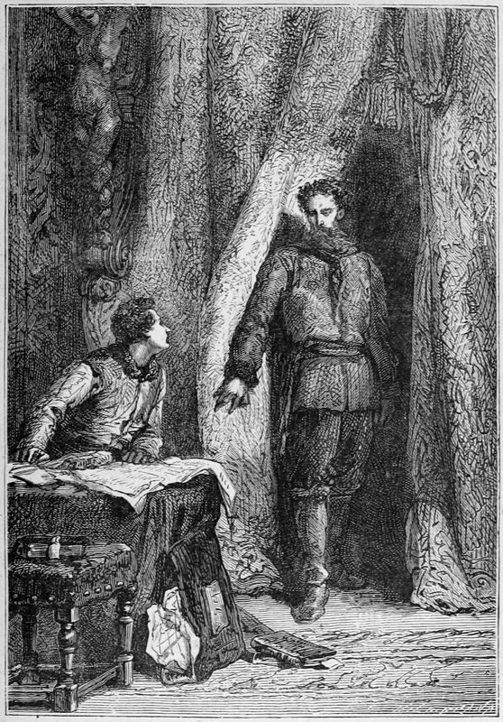
Meanwhile the Nautilus, for fear of running aground, had stopped three cable lengths from a beach overlooked by a superb pile of rocks. The skiff was launched. The captain, two of his men carrying the instruments, Conseil, and I got into it. It was ten in the morning. I had not seen Ned Land. The Canadian, no doubt, did not want to eat his words in the presence of the South Pole.
A few strokes of the oars brought the skiff onto the sand, where it grounded. Just as Conseil was about to jump ashore, I held him back.
“Sir,” I said to Captain Nemo, “to you belongs the honor of setting foot first on this land.”
“Yes, sir,” answered the captain, “and if I do not hesitate to tread this polar soil, it is because until now no human being has left the trace of his footsteps here.”
That said, he jumped lightly onto the sand. A keen emotion was making his heart beat. He climbed a rock that ended in an overhang on a little promontory, and there, arms crossed, eyes burning, motionless and silent, he seemed to take possession of these southern regions. After five minutes spent in this ecstasy, he turned back toward us.
“Whenever you like, sir,” he called to me.
I landed, followed by Conseil, leaving the two men in the skiff.
Over a long stretch the ground presented a reddish tuff, as if made of crushed brick. Slag, lava flows, and pumice stones covered it. Its volcanic origin could not be mistaken. In certain places a few faint fumaroles, giving off a sulfurous smell, bore witness that the inner fires still kept their expansive power. However, having climbed a high escarpment, I saw no volcano within a radius of several miles. We know that in these Antarctic lands James Ross found the craters of Erebus and Terror in full activity on the hundred sixty-seventh meridian at 77° 32′ latitude.
The vegetation of this desolate continent seemed extremely limited to me. A few lichens of the species Usnea melanoxantha spread over the black rocks. Certain microscopic plants, rudimentary diatoms, a kind of cell set between two quartz shells, and long purple and crimson fucus, held up by little swim bladders and thrown onto the coast by the surf, made up the whole meager flora of this region.
The shore was strewn with mollusks, little mussels, limpets, smooth heart-shaped cockles, and especially clios with oblong, membranous bodies, whose heads are formed of two rounded lobes. I also saw myriads of those northern clios, three centimeters long, of which the whale swallows a whole world at every mouthful. These charming pteropods, veritable butterflies of the sea, enlivened the open waters along the edge of the shore.
Among other zoophytes there appeared in the shallows a few coral growths, of the kind that, according to James Ross, live in the Antarctic seas down to a thousand meters; then little alcyonarians belonging to the species Procellaria pelagica, as well as a great number of starfish peculiar to these climates, and sea stars that spangled the ground.
But where life was superabundant was in the air. There flew and fluttered, by the thousands, birds of various species, which deafened us with their cries. Others crowded the rocks, watching us pass without fear and pressing familiarly around our feet. They were penguins, as agile and supple in the water, where they have sometimes been mistaken for swift bonitos, as they are clumsy and heavy on land. They gave bizarre cries and formed numerous assemblies, sparing of gestures but lavish with clamor.
Among the birds I noticed sheathbills, of the wader family, as big as pigeons, white in color, with short conical beaks and eyes framed by a red circle. Conseil laid in a supply of them, for these birds, properly prepared, make a pleasant dish. In the air passed sooty albatrosses with a wingspan of four meters, rightly called the vultures of the ocean; gigantic petrels, among them the quebrantahuesos, or bone-breakers, with arched wings, great eaters of seals; cape pigeons, a kind of little duck whose upper body is black and white; and finally a whole series of petrels, some whitish with wings edged in brown, others blue and peculiar to the Antarctic seas, the latter “so oily,” I told Conseil, “that the inhabitants of the Faroe Islands simply fit them with a wick before lighting them.”
“A little more,” answered Conseil, “and they’d be perfect lamps! After all, one can’t expect nature to have fitted them with a wick beforehand!”
After half a mile the ground appeared riddled with penguins’ nests, a kind of burrow laid out for laying eggs, from which numerous birds came out. Captain Nemo later had a few hundred of them hunted, for their black flesh is quite edible. They brayed like donkeys. These animals, the size of a goose, slate-colored on the body, white underneath, and wearing a lemon-colored necktie, let themselves be killed with stones without trying to run away.
However, the mist did not lift, and at eleven o’clock the sun had still not appeared. Its absence did not fail to worry me. Without it, no observations were possible. How, then, could we determine whether we had reached the pole?
When I rejoined Captain Nemo, I found him silently leaning on a piece of rock and looking at the sky. He seemed impatient and annoyed. But what could be done? This bold and powerful man did not command the sun as he did the sea.
Noon came without the orb of day showing itself for a single instant. One could not even make out the place it occupied behind the curtain of mist. Soon the mist turned to snow.
“Until tomorrow,” the captain said to me simply, and we went back to the Nautilus amid the whirlwinds of the atmosphere.
During our absence the nets had been spread, and I observed with interest the fish that had just been hauled aboard. The Antarctic seas serve as a refuge for a great many migrants, which flee the storms of lower latitudes only to fall, it is true, under the teeth of porpoises and seals. I noted a few southern sculpins a decimeter long, a kind of whitish cartilaginous fish crossed with livid bands and armed with spines; then Antarctic chimaeras three feet long, with very elongated bodies, white, silvery, smooth skin, rounded heads, backs furnished with three fins, and snouts ending in a trunk that curves back toward the mouth. I tasted their flesh but found it insipid, in spite of Conseil’s opinion, for he got on with it very well.
The snowstorm lasted until the next day. It was impossible to stay on the platform. From the drawing room, where I was noting down the incidents of this excursion to the polar continent, I could hear the cries of the petrels and albatrosses playing in the midst of the storm. The Nautilus did not stay still, and, running along the coast, it advanced another ten miles or so to the south, in the half-light the sun left as it skimmed the edges of the horizon.
The next day, March 20, the snow had stopped. The cold was a little sharper. The thermometer showed two degrees below zero. The fog lifted, and I hoped that our observation could be made that day.
Captain Nemo not having yet appeared, the skiff took Conseil and me and set us ashore. The nature of the ground was the same, volcanic. Everywhere there were traces of lava, slag, and basalt, though I could not see the crater that had spewed them out. Here, as over there, myriads of birds enlivened this part of the polar continent. But they now shared this empire with vast herds of marine mammals, which watched us with their gentle eyes. They were seals of various species, some stretched out on the ground, others lying on drifting floes, several coming out of the sea or going back into it. They did not run away at our approach, never having had to deal with man, and I counted there enough of them to supply a few hundred ships.
“My word,” said Conseil, “it’s lucky Ned Land didn’t come with us!”
“Why is that, Conseil?”
“Because that fanatical hunter would have killed them all.”
“All is saying a lot, but I do believe that we could not have stopped our friend the Canadian from harpooning a few of these magnificent cetaceans. Which would have displeased Captain Nemo, for he does not needlessly shed the blood of harmless beasts.”
“He is right.”
“Certainly, Conseil. But tell me, haven’t you already classified these superb specimens of marine fauna?”
“Master knows very well,” answered Conseil, “that I am not very strong on practice. When master has taught me the names of these animals…”
“They are seals and walruses.”
“Two genera belonging to the family Pinnipedia,” my learned Conseil hastened to say, “order Carnivora, group Unguiculata, subclass Monodelphia, class Mammalia, branch Vertebrata.”
“Good, Conseil,” I answered, “but these two genera, seals and walruses, are divided into species, and if I am not mistaken, we shall have the chance to observe them here. Let’s walk.”
It was eight in the morning. We had four hours to spend before the moment when the sun could usefully be observed. I led our steps toward a vast bay cut into the granite cliff of the shore.
There, I can say, as far as the eye could see around us, the land and the floes were crowded with marine mammals, and I found myself involuntarily looking for old Proteus, the mythological shepherd who watched over these immense flocks of Neptune. They were mostly seals. They formed distinct groups, males and females, the father watching over his family, the mother nursing her young, a few young ones, already strong, venturing off a few steps on their own. When these mammals wanted to move, they went by little leaps produced by contracting their bodies, and they helped themselves rather clumsily with their imperfect flippers, which, in their relative the manatee, form a true forearm. I must say that in the water, their element par excellence, these animals, with their mobile spines, narrow pelvises, short, dense hair, and webbed feet, swim admirably. At rest and on land, they took on extremely graceful attitudes. So the ancients, observing their gentle features, their expressive gaze, which the most beautiful woman’s gaze could not surpass, their velvety, limpid eyes, and their charming poses, and poeticizing them in their own way, changed the males into tritons and the females into sirens.
I pointed out to Conseil the considerable development of the cerebral lobes in these intelligent creatures. No mammal except man has richer brain matter. So seals are capable of receiving a certain education; they are easily tamed, and I think, with certain naturalists, that, properly trained, they could render great service as fishing dogs.
Most of these seals were sleeping on the rocks or on the sand. Among these true seals, which have no external ears—differing in this from the sea lions, whose ears stick out—I observed several varieties of leopard seals, three meters long, with white fur and bulldog heads, armed with ten teeth in each jaw, four incisors above and below and two large canines shaped like a fleur-de-lis. Among them slid elephant seals, a kind of seal with a short, mobile trunk, the giants of the species, which, with a girth of twenty feet, measured ten meters in length. They made no movement at our approach.
“They aren’t dangerous animals?” Conseil asked me.
“No,” I answered, “unless they are attacked. When a seal is defending its young, its fury is terrible, and it is not rare for it to smash the fishermen’s boat to pieces.”
“It is within its rights,” replied Conseil.
“I don’t say no.”
Two miles farther on we were stopped by the promontory that sheltered the bay from the south winds. It dropped straight down into the sea and foamed in the surf. Beyond it burst out formidable roars, such as a herd of cattle might have produced.
“Well,” said Conseil, “a concert of bulls?”
“No,” I said, “a concert of walruses.”
“Are they fighting?”
“They are fighting or playing.”
“If master doesn’t mind, we must see that.”
“We must see it, Conseil.”
And there we were, clambering over the blackish rocks amid unexpected rockfalls and over stones that the ice made very slippery. More than once I tumbled, to the detriment of my back. Conseil, more careful or steadier, hardly ever stumbled, and he helped me up, saying:
“If master would be kind enough to spread his legs apart, master would keep his balance better.”
When I reached the top of the promontory, I saw a vast white plain covered with walruses. These animals were playing among themselves. Theirs were howls of joy, not of anger.
Walruses resemble seals in the shape of their bodies and the arrangement of their limbs. But their lower jaws lack canines and incisors, and as for the upper canines, they are two tusks eighty centimeters long, thirty-three centimeters around at the socket. These teeth, made of compact ivory without streaks, harder than elephant ivory and slower to turn yellow, are much sought after. So walruses are the target of reckless hunting that will soon destroy them to the last one, since the hunters, massacring pregnant females and young without distinction, destroy more than four thousand of them every year.
As I passed near these curious animals, I could examine them at leisure, for they did not stir. Their skin was thick and rough, of a fawn color tending to russet, their coat short and sparse. Some were four meters long. Quieter and less fearful than their northern relatives, they did not entrust chosen sentinels with watching the approaches to their camp.
After examining this city of walruses, I thought of turning back. It was eleven o’clock, and if Captain Nemo found conditions favorable for observing, I wanted to be present at his operation. However, I did not expect the sun to show itself that day. Clouds crushed against the horizon hid it from our eyes. It seemed as if that jealous orb did not want to reveal this inaccessible point of the globe to human beings.
So I thought of going back to the Nautilus. We followed a narrow, steep path that ran along the top of the cliff. At half past eleven we had reached the landing place. The skiff, run aground, had set the captain ashore. I saw him standing on a block of basalt. His instruments were beside him. His gaze was fixed on the northern horizon, near which the sun was then describing its elongated curve.
I took my place beside him and waited without speaking. Noon came, and, as on the day before, the sun did not show itself.
It was a fatality. The observation had failed again. If it was not carried out tomorrow, we would have to give up for good on determining our position.
Indeed, it was precisely March 20. Tomorrow, the 21st, the day of the equinox, not counting refraction, the sun would disappear below the horizon for six months, and with its disappearance the long polar night would begin. Since the September equinox it had risen from the northern horizon, climbing in elongated spirals until December 21. At that time, the summer solstice of these southern lands, it had begun to come back down, and the next day it was to cast its last rays on them.
I told Captain Nemo my observations and my fears.
“You are right, Monsieur Aronnax,” he said to me. “If tomorrow I do not get the sun’s altitude, I shall not be able to repeat the operation for six months. But also, precisely because the chances of my navigation have brought me into these seas on March 21, my position will be easy to determine if the sun shows itself to us at noon.
“Why, Captain?”
“Because when the orb of day describes such elongated spirals, it is difficult to measure its altitude above the horizon exactly, and the instruments are liable to make serious errors.”
“How will you proceed, then?”
“I shall use only my chronometer,” Captain Nemo answered me. “If tomorrow, March 21, at noon, the disk of the sun, allowing for refraction, is cut exactly in half by the northern horizon, then I am at the South Pole.”
“Indeed,” I said. “Still, that statement is not mathematically rigorous, because the equinox does not necessarily fall at noon.”
“No doubt, sir, but the error will not be a hundred meters, and we need no more than that. Until tomorrow, then.”
Captain Nemo went back aboard. Conseil and I stayed until five o’clock pacing the beach, observing and studying. I collected no curious object, except a penguin egg remarkable for its size, for which a collector would have paid more than a thousand francs. Its pale buff color and the streaks and characters that adorned it like so many hieroglyphics made it a rare curio. I put it into Conseil’s hands, and the careful, sure-footed fellow, holding it like precious Chinese porcelain, brought it back intact to the Nautilus.
There I placed this rare egg in one of the museum’s glass cases. I supped with appetite on an excellent piece of seal liver, whose taste recalled that of pork. Then I went to bed, not without having invoked, like a Hindu, the favors of the radiant orb.
The next day, March 21, at five in the morning, I went up onto the platform. I found Captain Nemo there.
“The weather is clearing a little,” he said to me. “I have good hopes. After breakfast we shall go ashore to choose an observation post.”
With that settled, I went to find Ned Land. I would have liked to take him with me. The obstinate Canadian refused, and I saw clearly that his taciturnity and his ill humor were growing day by day. After all, I did not regret his stubbornness in this case. Truly, there were too many seals on land, and that thoughtless fisherman should not be exposed to such temptation.
Breakfast over, I went ashore. The Nautilus had moved a few miles farther south during the night. It was offshore, a good league from a coast overlooked by a sharp peak four to five hundred meters high. Besides me, the skiff carried Captain Nemo, two men of the crew, and the instruments, that is, a chronometer, a telescope, and a barometer.
During our crossing I saw numerous whales belonging to the three species peculiar to the southern seas: the right whale, as the English call it, which has no dorsal fin; the humpback, a rorqual with a pleated belly and vast whitish fins, which, in spite of its French name of winged whale, do not form wings; and the finback, yellowish brown, the liveliest of the cetaceans. This powerful animal can be heard from far off when it shoots its columns of air and vapor to a great height, like whirls of smoke. These various mammals were frolicking in herds in the quiet waters, and I saw clearly that this basin of the South Pole now served as a refuge for cetaceans too closely tracked by the hunters.
I also noticed long whitish strings of salps, a kind of colonial mollusk, and large jellyfish swaying in the eddies of the waves.
At nine o’clock we landed. The sky was clearing. The clouds were fleeing to the south. The mist was leaving the cold surface of the waters. Captain Nemo headed for the peak, which he no doubt wanted to make his observatory. It was a painful climb over sharp lava and pumice stones, in an atmosphere often saturated with the sulfurous emanations of the fumaroles. The captain, for a man unused to treading land, climbed the steepest slopes with a suppleness and agility I could not equal, and that an izard hunter would have envied.
It took us two hours to reach the summit of this peak, half porphyry, half basalt. From there our eyes took in a vast sea, which to the north traced its boundary line sharply against the sky. At our feet, fields of dazzling whiteness. Over our heads, a pale azure free of mist. To the north, the disk of the sun like a ball of fire already notched by the edge of the horizon. From the heart of the waters rose magnificent sprays of water by the hundreds. In the distance, the Nautilus, like a sleeping cetacean. Behind us, to the south and east, an immense land, a chaotic heap of rocks and ice whose limits could not be seen.
Captain Nemo, on reaching the summit of the peak, carefully measured its altitude with the barometer, for he had to take it into account in his observation.
At a quarter to twelve the sun, then seen only by refraction, showed itself like a golden disk and scattered its last rays over this abandoned continent and these seas that man has never yet sailed.
Captain Nemo, equipped with a telescope with crosshairs, which corrected the refraction by means of a mirror, observed the orb as it sank little by little below the horizon along a very elongated diagonal. I was holding the chronometer. My heart was beating hard. If the disappearance of the half disk of the sun coincided with noon on the chronometer, we were at the pole itself.
“Noon!” I cried.
“The South Pole!” answered Captain Nemo in a grave voice, handing me the telescope, which showed the orb of day cut precisely into two equal parts by the horizon.
I watched the last rays crown the peak and the shadows climb gradually up its slopes.
At that moment Captain Nemo, resting his hand on my shoulder, said to me:
“Sir, in 1600 the Dutchman Gheritk, carried off by currents and storms, reached 64° south latitude and discovered the South Shetlands. In 1773, on January 17, the illustrious Cook, following the thirty-eighth meridian, arrived at 67° 30′ latitude, and in 1774, on January 30, on the hundred-ninth meridian, he reached 71° 15′ latitude. In 1819 the Russian Bellingshausen found himself on the sixty-ninth parallel, and in 1821 on the sixty-sixth at 111° west longitude. In 1820 the Englishman Bransfield was stopped at the sixty-fifth degree. The same year the American Morrell, whose accounts are doubtful, going south along the forty-second meridian, discovered the open sea at 70° 14′ latitude. In 1825 the Englishman Powell could not get past the sixty-second degree. The same year a simple seal hunter, the Englishman Weddell, went as far as 72° 14′ latitude on the thirty-fifth meridian, and as far as 74° 15′ on the thirty-sixth. In 1829 the Englishman Forster, commanding the Chanticleer, took possession of the Antarctic continent at 63° 26′ latitude and 66° 26′ longitude. In 1831 the Englishman Biscoe, on February 1, discovered Enderby Land at 68° 50′ latitude; in 1832, on February 5, Adelaide Land at 67° latitude; and on February 21, Graham Land at 64° 45′ latitude. In 1838 the Frenchman Dumont d’Urville, stopped before the ice bank at 62° 57′ latitude, charted Louis Philippe Land; two years later, in a new thrust to the south, he named Adélie Land at 66° 30′ on January 21, and eight days later, at 64° 40′, the Clarie Coast. In 1838 the Englishman Wilkes advanced as far as the sixty-ninth parallel on the hundredth meridian. In 1839 the Englishman Balleny discovered Sabrina Land on the edge of the polar circle. Finally, in 1842, the Englishman James Ross, with the Erebus and the Terror, on January 12, at 76° 56′ latitude and 171° 7′ east longitude, found Victoria Land; on the 23rd of the same month he reached the seventy-fourth parallel, the highest point attained until then; on the 27th he was at 76° 8′, on the 28th at 77° 32′, on February 2 at 78° 4′, and in 1842 he came back to the seventy-first degree, which he could not get past. Well, I, Captain Nemo, on this March 21, 1868, have reached the South Pole on the ninetieth degree, and I take possession of this part of the globe, equal to one sixth of the known continents.”
“In whose name, Captain?”
“In my own, sir!”
And as he said this, Captain Nemo unfurled a black flag bearing a gold N quartered on its bunting. Then, turning toward the orb of day, whose last rays were licking the horizon of the sea:
“Farewell, sun!” he cried. “Disappear, radiant orb! Set beneath this open sea, and let a night of six months spread its shadows over my new domain!”
The next day, March 22, at six in the morning, preparations for departure began. The last glimmers of twilight were melting into night. The cold was sharp. The constellations shone with surprising intensity. At the zenith blazed that admirable Southern Cross, the polestar of the Antarctic regions.
The thermometer showed twelve degrees below zero, and when the wind freshened it bit sharply. Ice floes were multiplying on the open water. The sea was tending to freeze everywhere. Numerous blackish patches spread over its surface announced that new ice would soon form. Clearly the southern basin, frozen during the six months of winter, was absolutely inaccessible. What became of the whales during that period? No doubt they went under the ice bank in search of more navigable seas. As for the seals and walruses, used to living in the harshest climates, they stayed in these icy waters. These animals have the instinct to dig holes in the ice fields and keep them always open. It is to these holes that they come to breathe; when the birds, driven away by the cold, have migrated north, these marine mammals remain the sole masters of the polar continent.
Meanwhile the water tanks had been filled, and the Nautilus was slowly descending. At a depth of a thousand feet it stopped. Its propeller beat the waves, and it advanced due north at a speed of fifteen miles an hour. Toward evening it was already floating under the immense frozen carapace of the ice bank.
The drawing-room panels had been closed as a precaution, for the hull of the Nautilus might strike some submerged block. So I spent that day writing up my notes. My mind was wholly taken up with its memories of the pole. We had reached that inaccessible point without fatigue, without danger, as if our floating railroad car had glided along the rails of a railway. And now the return was truly beginning. Would it still hold such surprises in store for me? I thought so, so inexhaustible is the series of underwater wonders! However, in the five and a half months since chance had thrown us aboard, we had covered fourteen thousand leagues, and over that distance, longer than the earth’s equator, how many incidents, curious or terrible, had enlivened our voyage: the hunt in the forests of Crespo, the grounding in Torres Strait, the coral cemetery, the fisheries of Ceylon, the Arabian tunnel, the fires of Santorini, the millions of Vigo Bay, Atlantis, the South Pole! During the night all these memories, passing from dream to dream, did not let my brain sleep for an instant.
At three in the morning I was awakened by a violent shock. I had sat up in bed and was listening in the darkness when I was abruptly thrown into the middle of the room. Clearly the Nautilus had heeled over considerably after striking.
I braced myself against the walls and dragged myself along the gangways to the drawing room, which was lit by the luminous ceiling. The furniture was overturned. Fortunately the glass cases, solidly fastened at the base, had held. The paintings on the starboard side, with the shift of the vertical, were pressed flat against the tapestries, while those on the port side hung a foot away from them at their lower edge. So the Nautilus was lying on its starboard side and, moreover, completely motionless.
Inside I could hear footsteps and confused voices. But Captain Nemo did not appear. Just as I was about to leave the drawing room, Ned Land and Conseil came in.
“What’s the matter?” I said to them at once.
“I came to ask master,” answered Conseil.
“A thousand devils!” cried the Canadian. “I know very well! The Nautilus has struck, and judging by the list it has, I don’t think it’ll get out of it as it did the first time in Torres Strait.”
“But at least,” I asked, “has it come back to the surface of the sea?”
“We don’t know,” answered Conseil.
“That is easy to find out,” I answered.
I consulted the pressure gauge. To my great surprise, it showed a depth of three hundred sixty meters.
“What does that mean?” I cried.
“We must ask Captain Nemo,” said Conseil.
“But where can we find him?” asked Ned Land.
“Follow me,” I said to my two companions.
We left the drawing room. In the library, no one. At the central staircase, at the crew’s quarters, no one. I supposed that Captain Nemo must be in the pilothouse. The best thing was to wait. All three of us went back to the drawing room.
I will pass over the Canadian’s recriminations in silence. He had every excuse for losing his temper. I let him vent his ill humor as much as he liked, without answering.
We had been like this for twenty minutes, trying to catch the slightest noises inside the Nautilus, when Captain Nemo came in. He did not seem to see us. His face, usually so impassive, showed a certain anxiety. He silently observed the compass and the pressure gauge, and then put his finger on a point of the planisphere, in the part representing the southern seas.
I did not want to interrupt him. Only, a few moments later, when he turned toward me, I said to him, turning back on him an expression he had used in Torres Strait:
“An incident, Captain?”
“No, sir,” he answered, “an accident this time.”
“Serious?”
“Perhaps.”
“Is the danger immediate?”
“No.”
“The Nautilus has run aground?”
“Yes.”
“And this grounding came from?…”
“From a whim of nature, not from the incompetence of men. Not a single mistake was made in our maneuvers. However, one cannot prevent equilibrium from producing its effects. One may defy human laws, but one cannot resist natural laws.”
A strange moment Captain Nemo had chosen to indulge in this philosophical reflection. All in all, his answer told me nothing.
“May I know, sir,” I asked him, “what caused this accident?”
“An enormous block of ice, a whole mountain, has turned over,” he answered me. “When icebergs are undermined at their base by warmer water or by repeated shocks, their center of gravity rises. Then they turn right over; they tumble. That is what happened. One of these blocks, overturning, struck the Nautilus, which was floating underwater. Then, sliding under its hull and lifting it with irresistible force, it carried it up into less dense layers, where it now lies on its side.”

“But can’t the Nautilus be freed by emptying its tanks, so as to restore its balance?”
“That is what is being done at this moment, sir. You can hear the pumps working. Look at the needle of the pressure gauge. It shows that the Nautilus is rising, but the block of ice is rising with it, and until some obstacle stops its upward movement our position will not change.”
Indeed, the Nautilus still had the same list to starboard. No doubt it would right itself when the block itself stopped. But at that moment, who knew whether we would not have struck the upper part of the ice bank, whether we would not be frightfully squeezed between the two frozen surfaces?

I was thinking over all the consequences of this situation. Captain Nemo kept watching the pressure gauge. Since the iceberg had fallen, the Nautilus had risen about a hundred fifty feet, but it was still at the same angle to the perpendicular.
Suddenly a slight movement was felt in the hull. Clearly the Nautilus was righting itself a little. The objects hanging in the drawing room were noticeably returning to their normal position. The walls were coming closer to the vertical. None of us spoke. With pounding hearts we watched; we felt the ship righting itself. The floor became horizontal again under our feet. Ten minutes went by.
“At last we’re upright!” I cried.
“Yes,” said Captain Nemo, heading for the drawing-room door.
“But will we float?” I asked him.
“Certainly,” he answered, “since the tanks are not yet empty, and once they are, the Nautilus must rise to the surface of the sea.”
The captain went out, and I soon saw that, by his orders, the upward movement of the Nautilus had been stopped. Indeed, it would soon have struck the underside of the ice bank, and it was better to keep it in midwater.
“That was a narrow escape!” said Conseil then.
“Yes. We could have been crushed between those blocks of ice, or at least imprisoned. And then, unable to renew the air… Yes, that was a narrow escape!”
“If it’s over!” muttered Ned Land.
I did not want to start a pointless argument with the Canadian, and I did not answer. Besides, the panels opened at that moment, and the outside light burst in through the uncovered window.
We were in open water, as I have said; but at a distance of ten meters on each side of the Nautilus rose a dazzling wall of ice. Above and below, the same wall. Above, because the underside of the ice bank spread out like an immense ceiling. Below, because the overturned block, having slid little by little, had found two points of support on the side walls that held it in that position. The Nautilus was imprisoned in a veritable tunnel of ice, about twenty meters wide, filled with still water. So it would be easy for it to get out by going either forward or backward, and then to resume, a few hundred meters lower down, a free passage under the ice bank.
The luminous ceiling had been switched off, and yet the drawing room was shining with intense light. This was because the powerful reflection of the ice walls threw the beams of the beacon violently back into it. I cannot describe the effect of the voltaic rays on those great, capriciously carved blocks, every angle, every ridge, every facet of which threw off a different gleam, depending on the nature of the veins running through the ice. A dazzling mine of gems, and particularly of sapphires, crossing their blue rays with the green rays of emeralds. Here and there opaline shades of infinite softness ran among burning points like so many diamonds of fire whose brilliance the eye could not bear. The power of the beacon was increased a hundredfold, like that of a lamp seen through the lenticular panes of a first-class lighthouse.
“How beautiful! How beautiful!” cried Conseil.
“Yes!” I said. “It is an admirable spectacle. Isn’t it, Ned?”
“Eh! A thousand devils, yes!” retorted Ned Land. “It’s superb! It makes me furious to have to admit it. Nobody ever saw anything like it. But that spectacle could cost us dearly. And, if you want the whole truth, I think we’re seeing things here that God meant to keep from the eyes of man!”
Ned was right. It was too beautiful. Suddenly a cry from Conseil made me turn around.
“What is it?” I asked.
“Master must close his eyes! Master must not look!”
As he said this, Conseil quickly clapped his hands over his eyelids.
“But what’s the matter with you, my boy?”
“I’m dazzled, blinded!”
My eyes turned involuntarily toward the window, but I could not bear the fire that was devouring it.
I understood what had happened. The Nautilus had just set off at high speed. All the calm gleams of the ice walls had then turned into streaks of lightning. The fires of those myriads of diamonds were merging. The Nautilus, driven by its propeller, was traveling in a sheath of lightning.
The drawing-room panels then closed. We kept our hands over our eyes, still filled with those concentric glows that float before the retina when the sun’s rays have struck it too violently. It took some time to calm the disturbance of our sight.
At last we lowered our hands.
“My word, I would never have believed it,” said Conseil.
“And I still don’t believe it!” retorted the Canadian.
“When we get back to land,” added Conseil, “weary of so many wonders of nature, what shall we think of those wretched continents and the little works made by the hands of men? No! The inhabited world is no longer worthy of us!”
Such words in the mouth of an impassive Fleming show to what boiling point our enthusiasm had risen. But the Canadian did not fail to throw his drop of cold water on it.
“The inhabited world!” he said, shaking his head. “Don’t worry, friend Conseil, we won’t be going back to it!”
It was then five in the morning. At that moment a shock occurred at the bow of the Nautilus. I understood that its spur had just struck a block of ice. It must have been a mistake in steering, for this underwater tunnel, cluttered with blocks, did not make for easy navigation. So I thought that Captain Nemo, changing his course, would go around these obstacles or follow the windings of the tunnel. In any case, our progress forward could not be stopped altogether. However, contrary to my expectation, the Nautilus began a very pronounced backward movement.
“We’re going back?” said Conseil.
“Yes,” I answered. “The tunnel must have no exit at this end.”
“And then?…”
“Then,” I said, “the maneuver is quite simple. We shall retrace our steps and go out through the southern opening. That’s all.”
In speaking thus I wanted to seem more reassured than I really was. Meanwhile the backward movement of the Nautilus was speeding up, and, running with its propeller reversed, it was carrying us along very fast.
“It will be a delay,” said Ned.
“What does it matter, a few hours more or less, as long as we get out?”
“Yes,” Ned Land repeated, “as long as we get out!”
I paced for a few moments from the drawing room to the library. My companions sat in silence. I soon threw myself onto a divan and picked up a book, which my eyes ran over mechanically.
A quarter of an hour later Conseil came up to me and said:
“Is what master is reading very interesting?”
“Very interesting,” I answered.
“I believe it. It is master’s own book that master is reading!”
“My book?”
Indeed, I was holding in my hand my work on the Great Ocean Depths. I had not even suspected it. I closed the book and resumed my pacing. Ned and Conseil stood up to withdraw.
“Stay, my friends,” I said, holding them back. “Let’s stay together until we are out of this dead end.”
“As master pleases,” answered Conseil.
A few hours went by. I often observed the instruments hanging on the drawing-room wall. The pressure gauge showed that the Nautilus was holding a constant depth of three hundred meters; the compass, that it was still heading south; the log, that it was going at a speed of twenty miles an hour, an excessive speed in so narrow a space. But Captain Nemo knew he could not hurry too much, and that minutes were then worth centuries.
At twenty-five past eight a second shock occurred. At the stern this time. I turned pale. My companions had drawn close to me. I had seized Conseil’s hand. We questioned one another with our eyes, more directly than if words had expressed our thoughts.
At that moment the captain came into the drawing room. I went to him.
“The way is blocked to the south?” I asked him.
“Yes, sir. The iceberg, in turning over, has closed off every exit.”
“We are blocked in?”
“Yes.”
So around the Nautilus, above and below, there was an impenetrable wall of ice. We were prisoners of the ice bank! The Canadian had struck a table with his formidable fist. Conseil was silent. I looked at the captain. His face had resumed its usual impassivity. He had crossed his arms. He was thinking. The Nautilus was no longer moving.
The captain then spoke:
“Gentlemen,” he said in a calm voice, “there are two ways of dying in our present circumstances.”
This inexplicable personage looked like a professor of mathematics giving a demonstration to his students.
“The first,” he went on, “is to die crushed. The second is to die asphyxiated. I do not speak of the possibility of dying of hunger, for the provisions of the Nautilus will certainly last longer than we shall. So let us concern ourselves with the chances of being crushed or asphyxiated.”
“As for asphyxiation, Captain,” I answered, “there is nothing to fear, for our tanks are full.”
“Correct,” Captain Nemo went on, “but they will give only two days of air. Now, we have been buried under the waters for thirty-six hours, and already the heavy atmosphere of the Nautilus needs renewing. In forty-eight hours our reserve will be exhausted.”
“Well, Captain, let us be freed before forty-eight hours!”
“We shall try, at least, by cutting through the wall that surrounds us.”
“On which side?” I asked.
“The sounding line will tell us that. I am going to set the Nautilus down on the lower bank, and my men, wearing diving suits, will attack the iceberg at its thinnest wall.”
“May the drawing-room panels be opened?”
“There is no objection. We are no longer moving.”
Captain Nemo went out. Soon a hissing told me that water was entering the tanks. The Nautilus sank slowly and came to rest on the ice floor at a depth of three hundred fifty meters, the depth at which the lower bank of ice lay.
“My friends,” I said, “the situation is serious, but I am counting on your courage and your energy.”
“Sir,” the Canadian answered me, “this isn’t the moment I’ll bother you with my complaints. I’m ready to do anything for the common safety.”
“Good, Ned,” I said, holding out my hand to the Canadian.
“I’ll add,” he went on, “that I’m as handy with a pickaxe as with a harpoon, and if I can be of use to the captain, he can count on me.”
“He will not refuse your help. Come, Ned.”
I took the Canadian to the room where the men of the Nautilus were putting on their diving suits. I told the captain of Ned’s offer, which was accepted. The Canadian put on his sea suit and was ready as soon as his fellow workers. Each of them carried on his back the Rouquayrol apparatus, to which the tanks had supplied a large share of pure air. A considerable but necessary loan from the reserve of the Nautilus. As for the Ruhmkorff lamps, they were useless in those luminous waters saturated with electric rays.
When Ned was dressed, I went back into the drawing room, whose windows were uncovered, and, stationed beside Conseil, I examined the surrounding layers that supported the Nautilus.
A few moments later we saw a dozen men of the crew set foot on the ice bank, and among them Ned Land, recognizable by his tall figure. Captain Nemo was with them.
Before starting to dig into the walls, he had soundings taken to make sure the work went in the right direction. Long sounding rods were driven into the side walls; but after fifteen meters they were still stopped by the thick wall. It was useless to attack the ceiling, since that was the ice bank itself, more than four hundred meters high. Captain Nemo then had the lower surface sounded. There, ten meters of wall separated us from the water. Such was the thickness of this ice field. From then on, it was a matter of cutting out a piece equal in area to the waterline of the Nautilus. That meant about six thousand five hundred cubic meters to be removed, so as to dig a hole through which we could go down below the ice field.
The work was begun at once and carried on with tireless persistence. Instead of digging around the Nautilus, which would have involved greater difficulties, Captain Nemo had the immense pit marked out eight meters from its port quarter. Then his men bored into it simultaneously at several points around its circumference. Soon the pickaxe was vigorously attacking this compact substance, and large blocks were broken off from the mass. By a curious effect of specific gravity, these blocks, lighter than water, flew up, so to speak, to the vault of the tunnel, which grew thicker at the top by as much as it diminished at the bottom. But that did not matter, as long as the lower wall grew thinner by the same amount.
After two hours of hard work, Ned Land came back exhausted. He and his companions were replaced by new workers, whom Conseil and I joined. The first officer of the Nautilus directed us.
The water seemed singularly cold to me, but I quickly warmed up swinging the pickaxe. My movements were quite free, although they took place under a pressure of thirty atmospheres.
When I came back after two hours of work to take some food and rest, I found a marked difference between the pure air supplied to me by the Rouquayrol apparatus and the atmosphere of the Nautilus, already laden with carbonic acid. The air had not been renewed for forty-eight hours, and its life-giving qualities were considerably weakened. Yet in twelve hours we had removed only a layer of ice one meter thick over the marked-out area, that is, about six hundred cubic meters. Supposing the same amount of work were done every twelve hours, it would still take five nights and four days to bring the undertaking to a successful end.
“Five nights and four days!” I said to my companions. “And we have only two days’ worth of air in the tanks.”
“Not to mention,” replied Ned, “that once we’re out of this damned prison, we’ll still be shut in under the ice bank with no possible contact with the open air!”
A sound reflection. Who could then foresee the minimum time needed for our deliverance? Would asphyxiation not have smothered us before the Nautilus could return to the surface of the waves? Was it destined to perish in this tomb of ice with all those it held? The situation seemed terrible. But everyone had looked it in the face, and all were determined to do their duty to the end.
As I had foreseen, another layer one meter thick was removed from the immense hollow during the night. But in the morning, when, wearing my diving suit, I went through the liquid mass at a temperature of six to seven degrees below zero, I noticed that the side walls were gradually closing in. The layers of water farther from the pit, which were not warmed by the men’s work and the play of the tools, showed a tendency to solidify. In the face of this new and imminent danger, what became of our chances of safety, and how could we prevent the solidification of this liquid medium, which would have burst the sides of the Nautilus like glass?
I did not tell my two companions of this new danger. What was the good of risking the loss of the energy they were putting into the painful work of rescue? But when I had returned aboard, I pointed out this serious complication to Captain Nemo.
“I know,” he said to me in that calm tone that the most terrible circumstances could not change. “It is one more danger, but I see no way of guarding against it. Our only chance of safety is to go faster than the freezing. We have to get there first. That is all.”
Get there first! Well, I should have been used to such ways of speaking by now!
That day I swung the pickaxe stubbornly for several hours. This work kept me going. Besides, working meant leaving the Nautilus; it meant breathing directly the pure air drawn from the tanks and supplied by the apparatus; it meant leaving behind an impoverished and polluted atmosphere.
Toward evening the pit had been dug another meter deeper. When I went back aboard, I was nearly asphyxiated by the carbonic acid with which the air was saturated. Ah, if only we had had the chemical means that would have allowed us to drive out this deadly gas! We were not short of oxygen. All this water contained a considerable amount of it, and by decomposing it with our powerful batteries we could have recovered the life-giving fluid. I had thought of it, of course, but what was the use, since the carbonic acid produced by our breathing had invaded every part of the ship? To absorb it, we would have had to fill containers with caustic potash and shake them ceaselessly. Now, there was none of that substance aboard, and nothing could replace it.
That evening Captain Nemo had to open the taps of his tanks and release a few columns of pure air into the interior of the Nautilus. Without that precaution we would not have woken up.
The next day, March 26, I resumed my work as a miner, starting on the fifth meter. The side walls and the underside of the ice bank were visibly thickening. It was clear that they would meet before the Nautilus had managed to free itself. Despair seized me for a moment. My pickaxe almost slipped from my hands. What was the use of digging if I was to die smothered, crushed by this water that was turning to stone, a torment that even the ferocity of savages would not have invented? It seemed to me that I was between the formidable jaws of a monster, closing irresistibly.
At that moment Captain Nemo, directing the work and working himself, passed near me. I touched him with my hand and showed him the walls of our prison. The starboard wall had advanced to less than four meters from the hull of the Nautilus.
The captain understood me and signaled me to follow him. We went back aboard. Once I had taken off my diving suit, I went with him into the drawing room.
“Monsieur Aronnax,” he said to me, “we must try some heroic means, or we are going to be sealed in this solidified water as in cement.”
“Yes!” I said. “But what can we do?”
“Ah!” he cried. “If only my Nautilus were strong enough to bear that pressure without being crushed!”
“Well?” I asked, not grasping the captain’s idea.
“Don’t you understand,” he went on, “that the freezing of the water would come to our aid? Don’t you see that by solidifying it would burst the ice fields imprisoning us, as freezing water bursts the hardest stones? Don’t you feel that it would be an agent of safety instead of an agent of destruction?”
“Yes, Captain, perhaps. But however great the resistance of the Nautilus to crushing, it could not bear that dreadful pressure and would be flattened like a sheet of iron.”
“I know, sir. So we must not count on help from nature, but on ourselves. We must oppose this solidification. We must stop it. Not only are the side walls closing in, but there are not ten feet of water left at the bow or the stern of the Nautilus. The freezing is gaining on us from all sides.”
“How long,” I asked, “will the air in the tanks allow us to breathe aboard?”
The captain looked me in the face.
“The day after tomorrow,” he said, “the tanks will be empty!”
A cold sweat came over me. And yet, should I have been surprised by this answer? On March 22 the Nautilus had dived under the open waters of the pole. We were now at the 26th. For five days we had been living on the ship’s reserves! And what breathable air remained had to be kept for the workers. As I write these things, my impression is still so vivid that an involuntary terror seizes my whole being, and the air seems to be failing my lungs!
Meanwhile Captain Nemo was thinking, silent and motionless. Clearly an idea was crossing his mind. But he seemed to reject it. He was answering himself in the negative. At last these words escaped his lips:
“Boiling water!” he murmured.
“Boiling water?” I cried.
“Yes, sir. We are shut up in a relatively small space. Wouldn’t jets of boiling water, constantly injected by the pumps of the Nautilus, raise the temperature of this medium and delay its freezing?”
“We must try it,” I said resolutely.
“Let us try, Professor.”
The thermometer then showed minus seven degrees outside. Captain Nemo took me to the galleys, where vast distilling apparatus were working to supply drinking water by evaporation. They were filled with water, and all the electric heat of the batteries was sent through the coils immersed in the liquid. In a few minutes this water had reached a hundred degrees. It was sent to the pumps while new water replaced it as it went. The heat produced by the batteries was such that the cold water drawn from the sea, after merely passing through the apparatus, reached the pump barrels boiling.
The injection began, and three hours later the thermometer outside showed six degrees below zero. One degree had been gained. Two hours later the thermometer showed only four.
“We shall succeed,” I said to the captain, after following and checking the progress of the operation with numerous observations.
“I think so,” he answered me. “We shall not be crushed. We have only asphyxiation left to fear.”
During the night the temperature of the water rose to one degree below zero. The injections could not raise it any higher. But since seawater freezes only at minus two degrees, I was at last reassured against the dangers of solidification.
The next day, March 27, six meters of ice had been torn from the hollow. Only four meters remained to be removed. That still meant forty-eight hours of work. The air could no longer be renewed inside the Nautilus. And so that day kept getting worse.
An intolerable heaviness overwhelmed me. Toward three in the afternoon this feeling of anguish rose in me to a violent pitch. Yawns were dislocating my jaws. My lungs were gasping for that combustive fluid, indispensable to breathing, which was growing scarcer and scarcer. A mental torpor took hold of me. I lay stretched out without strength, almost unconscious. My good Conseil, seized with the same symptoms and suffering the same pains, did not leave me. He took my hand, he encouraged me, and I can still hear him murmuring:
“Ah! If only I could stop breathing so as to leave more air for master!”
Tears came to my eyes to hear him speak thus.
If our situation inside was intolerable for all of us, with what haste and what happiness we put on our diving suits to take our turn at work! The pickaxes rang on the frozen layer. Arms grew tired, hands were skinned, but what were those fatigues, what did those wounds matter? Life-giving air was reaching our lungs! We were breathing! We were breathing!
And yet no one prolonged his work under the water beyond the time allowed. His task done, each man handed to his gasping companions the tank that was to pour life into them. Captain Nemo set the example and was the first to submit to this strict discipline. When his hour came, he gave his apparatus to another and went back into the polluted atmosphere aboard, always calm, without a weakness, without a murmur.
That day the usual work was carried out with even more vigor. Only two meters remained to be removed over the whole area. Only two meters separated us from the open sea. But the tanks were almost empty of air. The little that remained had to be kept for the workers. Not an atom for the Nautilus!
When I went back aboard I was half suffocated. What a night! I cannot paint it. Such sufferings cannot be described. The next day my breathing was labored. Dizzying fits of vertigo mingled with the pains in my head and made me like a drunken man. My companions felt the same symptoms. Some men of the crew were gasping in their death throes.
That day, the sixth of our imprisonment, Captain Nemo, finding pick and mattock too slow, decided to crush the layer of ice that still separated us from the liquid sheet. This man had kept his composure and his energy. By his moral strength he mastered physical pain. He thought, he planned, he acted.
On his orders, the ship was lightened, that is, raised off the frozen layer by a change in its specific gravity. When it floated, it was hauled so as to bring it above the immense pit marked out along its waterline. Then, as its water tanks filled, it went down and fitted itself into the hollow.
At that moment the whole crew came back aboard, and the double communicating door was closed. The Nautilus was then resting on the layer of ice, which was not a meter thick and which the sounding rods had pierced in a thousand places.
The taps of the tanks were then opened wide, and a hundred cubic meters of water rushed in, increasing the weight of the Nautilus by a hundred thousand kilograms.
We waited, we listened, forgetting our sufferings, still hoping. We were staking our safety on one last throw.
In spite of the buzzing that filled my head, I soon heard quiverings under the hull of the Nautilus. A sinking occurred. The ice cracked with a peculiar noise, like that of tearing paper, and the Nautilus went down.
“We’re going through!” Conseil murmured in my ear.
I could not answer him. I seized his hand. I squeezed it in an involuntary convulsion.
All at once, carried down by its frightful overload, the Nautilus sank like a cannonball beneath the waters, that is, it fell as it would have done in a vacuum!
Then all the electric power was put on the pumps, which at once began driving the water out of the tanks. After a few minutes our fall was checked. Soon the pressure gauge even showed an upward movement. The propeller, running at full speed, made the iron hull quiver down to its bolts and carried us north.
But how long was this navigation under the ice bank to the open sea to last? Another day? I would be dead before then!
Half stretched out on a divan in the library, I was suffocating. My face was purple, my lips blue, my faculties suspended. I could no longer see, I could no longer hear. The notion of time had vanished from my mind. My muscles could not contract.
The hours that went by in this way I could not estimate. But I was conscious that my death agony was beginning. I understood that I was going to die…
Suddenly I came to. A few breaths of air were entering my lungs. Had we come back to the surface of the waves? Had we passed the ice bank?
No! It was Ned and Conseil, my two brave friends, sacrificing themselves to save me. A few atoms of air still remained at the bottom of an apparatus. Instead of breathing it, they had kept it for me, and while they were suffocating, they were pouring life into me drop by drop! I wanted to push the apparatus away. They held my hands, and for a few moments I breathed with delight.
My eyes turned to the clock. It was eleven in the morning. It must have been March 28. The Nautilus was going at the frightening speed of forty miles an hour. It was writhing in the waters.
Where was Captain Nemo? Had he succumbed? Had his companions died with him?
At that moment the pressure gauge showed that we were only twenty feet from the surface. A mere field of ice separated us from the atmosphere. Could it not be broken?
Perhaps! In any case, the Nautilus was going to try. I felt, in fact, that it was taking an oblique position, lowering its stern and raising its spur. Letting in some water had been enough to upset its balance. Then, driven by its powerful propeller, it attacked the ice field from below like a formidable battering ram. It split it little by little, drew back, charged at full speed against the field, which was tearing apart, and at last, carried by a supreme effort, it leaped onto the frozen surface and crushed it with its weight.
The hatch was opened—torn off, one might say—and pure air poured in waves into every part of the Nautilus.
How I got onto the platform I cannot say. Perhaps the Canadian had carried me there. But I was breathing, I was inhaling the life-giving air of the sea. Beside me my two companions were growing drunk on those fresh molecules. Unfortunates who have been deprived of food too long must not throw themselves recklessly on the first food set before them. We, on the contrary, had no need to restrain ourselves; we could breathe in the atoms of that atmosphere with full lungs, and it was the breeze, the breeze itself, that poured this delicious intoxication into us!
“Ah!” Conseil was saying. “How good oxygen is! Master need not be afraid to breathe. There is enough for everyone.”
As for Ned Land, he did not speak, but he opened his jaws wide enough to frighten a shark. And what powerful breaths! The Canadian was “drawing” like a stove in full blaze.
Our strength came back quickly, and when I looked around me, I saw that we were alone on the platform. No man of the crew. Not even Captain Nemo. The strange sailors of the Nautilus were content with the air circulating inside. None had come to delight in the open air.
The first words I spoke were words of thanks and gratitude to my two companions. Ned and Conseil had prolonged my life during the last hours of that long agony. All my gratitude could not overpay such devotion.
“Come now, Professor,” Ned Land answered me, “it’s not worth talking about! What merit did we have in it? None. It was only a question of arithmetic. Your life was worth more than ours. So it had to be saved.”
“No, Ned,” I answered, “it was not worth more. No one is superior to a generous and good man, and you are one!”
“All right! All right!” the embarrassed Canadian kept repeating. “And you, my good Conseil, you suffered a lot.”
“Not too much, to tell master the truth. I did miss a few mouthfuls of air, but I think I would have gotten used to it. Besides, I was looking at master fainting, and that didn’t give me the slightest desire to breathe. It took my breath away, as they say…”
Conseil, embarrassed at having lapsed into a commonplace, did not finish.
“My friends,” I answered, deeply moved, “we are bound to one another forever, and you have rights over me…”

“Which I’ll take advantage of,” retorted the Canadian.
“Eh?” said Conseil.
“Yes,” Ned Land went on, “the right to take you with me when I leave this infernal Nautilus.”
“By the way,” said Conseil, “are we going in the right direction?”
“Yes,” I answered, “since we are going toward the sun, and here the sun is north.”
“No doubt,” Ned Land went on, “but it remains to be seen whether we’re heading for the Pacific or the Atlantic, that is, for busy seas or deserted ones.”
To that I could give no answer, and I feared that Captain Nemo would rather take us back toward that vast ocean that washes the coasts of both Asia and America. He would thus complete his underwater tour of the world and return to those seas where the Nautilus found the most complete independence. But if we went back to the Pacific, far from any inhabited land, what would become of Ned Land’s plans?
We were soon to be settled on this important point. The Nautilus was moving fast. The polar circle was soon crossed, and the course set for Cape Horn. We were abreast of the tip of America on March 31, at seven in the evening.
By then all our past sufferings were forgotten. The memory of our imprisonment in the ice was fading from our minds. We thought only of the future. Captain Nemo no longer appeared, either in the drawing room or on the platform. The position, marked daily on the planisphere by the first officer, allowed me to plot the exact course of the Nautilus. Now, that evening it became clear, to my great satisfaction, that we were returning north by way of the Atlantic.
I told the Canadian and Conseil the result of my observations.
“Good news,” answered the Canadian, “but where is the Nautilus going?”
“I couldn’t say, Ned.”
“Would its captain want, after the South Pole, to tackle the North Pole, and get back to the Pacific by the famous Northwest Passage?”
“I wouldn’t dare him to,” answered Conseil.
“Well,” said the Canadian, “we’ll give him the slip before that.”
“In any case,” added Conseil, “he’s a masterly man, this Captain Nemo, and we won’t be sorry to have known him.”
“Especially once we’ve left him!” retorted Ned Land.
The next day, April 1, when the Nautilus rose to the surface of the waves a few minutes before noon, we sighted a coast to the west. It was Tierra del Fuego, to which the first navigators gave that name on seeing the many columns of smoke rising from the natives’ huts. Tierra del Fuego forms a vast cluster of islands stretching thirty leagues long and eighty leagues wide, between 53° and 56° south latitude and between 67° 50′ and 77° 15′ west longitude. The coast seemed low to me, but in the distance rose high mountains. I even thought I glimpsed Mount Sarmiento, two thousand seventy meters above sea level, a pyramidal block of schist with a very sharp summit, which, depending on whether it is veiled in mist or clear of it, “announces good or bad weather,” Ned Land told me.
“A famous barometer, my friend.”
“Yes, sir, a natural barometer, which never once fooled me when I was sailing the channels of the Strait of Magellan.”
At that moment the peak appeared sharply outlined against the sky. It was an omen of fine weather. It came true.
The Nautilus, back underwater, drew close to the coast and ran along it only a few miles off. Through the drawing-room windows I saw long creepers and gigantic fucus, those pear-bearing kelps of which the open sea at the pole held a few specimens; with their slimy, polished filaments, they measured up to three hundred meters in length; veritable cables, thicker than a thumb and very strong, they often serve as mooring lines for ships. Another weed, known as kelp, with leaves four feet long, embedded in coral concretions, carpeted the bottom. It served as nest and food for myriads of crustaceans and mollusks, crabs and cuttlefish. There seals and otters indulged in splendid meals, mixing the flesh of fish with the vegetables of the sea, in the English manner.
Over these rich and luxuriant bottoms the Nautilus passed with extreme speed. Toward evening it drew near the Falkland archipelago, whose rugged summits I was able to make out the next day. The sea was of moderate depth. So I thought, not without reason, that these two islands, surrounded by a great number of islets, were once part of the Magellanic lands. The Falklands were probably discovered by the famous John Davis, who gave them the name of Davis Southern Islands. Later Richard Hawkins called them the Maiden Islands. They were then named the Malouines at the beginning of the eighteenth century by fishermen from Saint-Malo, and finally the Falklands by the English, to whom they belong today.
In these waters our nets brought up fine specimens of algae, and particularly a certain fucus whose roots were laden with mussels, the best in the world. Geese and ducks alighted by the dozen on the platform and soon took their places in the ship’s pantries. As for fish, I especially observed bony fish of the goby genus, and above all gobies two decimeters long, all sprinkled with whitish and yellow spots.
I also admired numerous jellyfish, and the most beautiful of the genus, the chrysaoras peculiar to the Falkland seas. Sometimes they formed a very smooth hemispherical umbrella, striped with reddish-brown lines and ending in twelve regular festoons; sometimes it was an upturned basket from which broad leaves and long red twigs gracefully escaped. They swam by waving their four leafy arms and let their opulent hair of tentacles trail adrift. I would have liked to preserve a few specimens of these delicate zoophytes; but they are only clouds, shadows, appearances, which melt and evaporate outside their native element.
When the last heights of the Falklands had disappeared below the horizon, the Nautilus submerged to between twenty and twenty-five meters and followed the American coast. Captain Nemo did not show himself.
Until April 3 we did not leave the waters of Patagonia, sometimes under the ocean, sometimes on its surface. The Nautilus passed the wide estuary formed by the mouth of the Plata and found itself, on April 4, abreast of Uruguay, but fifty miles offshore. Its course remained north, and it followed the long windings of South America. We had by then covered sixteen thousand leagues since our embarkation in the seas of Japan.
Toward eleven in the morning the Tropic of Capricorn was crossed on the thirty-seventh meridian, and we passed off Cape Frio. Captain Nemo, to Ned Land’s great displeasure, did not like the neighborhood of these inhabited coasts of Brazil, for he was traveling at dizzying speed. Not a fish, not a bird, not even the fastest, could follow us, and the natural curiosities of these seas escaped all observation.
This speed was kept up for several days, and on the evening of April 9 we sighted the easternmost point of South America, which forms Cape São Roque. But then the Nautilus moved away again and went to seek at greater depths an underwater valley that lies between that cape and Sierra Leone on the African coast. This valley forks level with the Antilles and ends in the north in an enormous depression nine thousand meters deep. At this spot the geological cross section of the ocean shows, as far as the Lesser Antilles, a sheer cliff six kilometers high, and, level with the Cape Verde Islands, another wall no less considerable, which thus enclose the whole submerged continent of Atlantis. The bottom of this immense valley is broken by a few mountains that give picturesque aspects to these underwater depths. I speak of it chiefly from the manuscript charts in the library of the Nautilus, charts evidently drawn by Captain Nemo’s own hand and based on his personal observations.
For two days these deserted, deep waters were explored by means of the inclined planes. The Nautilus made long diagonal tacks that took it to every depth. But on April 11 it rose suddenly, and land reappeared before us at the mouth of the Amazon River, a vast estuary whose flow is so great that it freshens the sea over a space of several leagues.
The equator had been crossed. Twenty miles to the west lay the Guianas, French land on which we would have found easy refuge. But a strong breeze was blowing, and the furious waves would not have allowed a mere skiff to face them. Ned Land no doubt understood this, for he said nothing to me. For my part, I made no allusion to his escape plans, for I did not want to push him into some attempt that would inevitably have failed.
I easily made up for this delay with interesting studies. During those two days, April 11 and 12, the Nautilus did not leave the surface of the sea, and its trawl brought it a whole miraculous catch of zoophytes, fish, and reptiles.
A few zoophytes had been dredged up by the chain of the trawl. They were, for the most part, beautiful phyctallinas belonging to the family of actinians, among other species the Phyctalis protexta, native to this part of the ocean, a little cylindrical trunk decorated with vertical lines and spotted with red dots, crowned by a marvelous blossoming of tentacles. As for the mollusks, they consisted of products I had already observed: turritellas; porphyry olive shells, with regularly crisscrossing lines whose russet spots stood out sharply on a flesh-colored ground; fanciful scorpion conchs, like petrified scorpions; translucent hyaleas; argonauts; cuttlefish, excellent to eat; and certain species of squid that the naturalists of antiquity classed among the flying fish, and which serve chiefly as bait for cod fishing.
Of the fish of these waters that I had not yet had the opportunity to study, I noted various species. Among the cartilaginous fish: pricka lampreys, a kind of eel fifteen inches long, with greenish heads, violet fins, bluish-gray backs, silvery-brown bellies sprinkled with bright spots, and irises ringed with gold, curious animals that the current of the Amazon must have carried out to sea, for they live in fresh water; tuberculated rays, with pointed snouts and long, slender tails armed with a long toothed sting; small sharks a meter long, with gray and whitish skin, whose teeth, set in several rows, curve backward, and which are commonly known as slipper sharks; batfish, a kind of reddish isosceles triangle half a meter long, whose pectoral fins are attached by fleshy extensions that give them the look of bats, but whose horny appendage near the nostrils has earned them the nickname of sea unicorns; and finally a few species of triggerfish, the Curaçao triggerfish, whose dotted flanks shine with a brilliant gold color, and the light violet caprisk, with shimmering shades like a pigeon’s throat.
I end this somewhat dry but very accurate list with the series of bony fish I observed: passans, belonging to the genus Apteronotus, whose snouts are very blunt and snow-white, whose bodies are painted a beautiful black, and which are furnished with a very long and very slender fleshy strap; spiny odontognathus, long sardines three decimeters long, glittering with a bright silvery sheen; guare mackerel, with two anal fins; black-tinted cobias, which are fished by torchlight, long fish two meters in length with fat, white, firm flesh, which fresh taste like eel and dried like smoked salmon; half-red wrasses, covered with scales only at the base of the dorsal and anal fins; chrysopters, on which gold and silver mingle their brilliance with that of ruby and topaz; golden-tailed bream, whose flesh is extremely delicate and whose phosphorescent properties betray them in the water; orange-tinted pob bream with fine tongues; corvinas with golden tails; blackish surgeonfish; four-eyed fish of Surinam; and so on.
This “et cetera” must not keep me from mentioning one more fish, which Conseil will remember for a long time, and with good reason.
One of our nets had brought up a kind of very flat ray which, with its tail cut off, would have formed a perfect disk, and which weighed about twenty kilograms. It was white underneath and reddish on top, with large round spots of dark blue ringed with black; its skin was very smooth, and it ended in a two-lobed fin. Laid out on the platform, it was struggling, trying to turn over with convulsive movements, and making such efforts that one last leap was about to throw it into the sea. But Conseil, who was attached to his fish, rushed at it, and before I could stop him, he seized it with both hands.
At once there he was, knocked over, legs in the air, half his body paralyzed, and crying:
“Ah! Master, master! Help me!”
It was the first time the poor fellow had not spoken to me “in the third person.”
The Canadian and I had picked him up and were rubbing him with all our might, and when he came to his senses, that eternal classifier murmured in a broken voice:
“Class Cartilaginea, order Chondropterygii with fixed gills, suborder Selachii, family Rajidae, genus Torpedo!”
“Yes, my friend,” I answered, “it was an electric ray that put you in that deplorable state.”
“Ah! Master may believe me,” retorted Conseil, “but I’ll get my revenge on that animal.”
“And how?”
“By eating it.”
Which he did that very evening, but purely as a reprisal, for frankly it was tough.
The unfortunate Conseil had tackled an electric ray of the most dangerous species, the cumana. In a conducting medium such as water, this bizarre animal strikes down fish several meters away, so great is the power of its electric organ, whose two main surfaces measure no less than twenty-seven square feet.
The next day, April 12, during the day, the Nautilus approached the Dutch coast, near the mouth of the Maroni. There several groups of sea cows lived in families. They were manatees, which, like the dugong and Steller’s sea cow, belong to the order Sirenia. These beautiful animals, peaceful and harmless, six to seven meters long, must have weighed at least four thousand kilograms. I told Ned Land and Conseil that provident nature had assigned these mammals an important role. It is they, in fact, who, like the seals, are meant to graze the underwater meadows and so destroy the masses of weed that block the mouths of tropical rivers.
“And do you know,” I added, “what has happened since men almost entirely wiped out these useful races? The rotting weeds have poisoned the air, and poisoned air means the yellow fever that ravages these admirable lands. Poisonous vegetation has multiplied under these torrid seas, and the evil has spread irresistibly from the mouth of the Río de la Plata to Florida!”
And if Toussenel is to be believed, this scourge is nothing compared with the one that will strike our descendants when the seas have been emptied of whales and seals. Then, crowded with octopuses, jellyfish, and squid, they will become vast centers of infection, since their waves will no longer possess “those vast stomachs that God had charged with skimming the surface of the seas.”
Meanwhile, without scorning these theories, the crew of the Nautilus captured half a dozen manatees. The point, in fact, was to stock the storerooms with excellent meat, better than beef or veal. This hunt was not interesting. The manatees let themselves be struck without defending themselves. Several thousand kilos of meat, intended for drying, were stored aboard.

That day a fishing expedition, carried out in a singular way, added still more to the reserves of the Nautilus, so well stocked with game did these seas prove. The trawl had brought up in its meshes a number of fish whose heads ended in an oval plate with fleshy rims. They were echeneids, of the third family of subbrachian Malacopterygii. Their flattened disk is made up of movable crosswise cartilaginous plates, between which the animal can create a vacuum, allowing it to cling to objects like a suction cup.
The remora, which I had observed in the Mediterranean, belongs to this species. But the one in question here was the Echeneis osteochir, peculiar to this sea. As our sailors caught them, they put them in tubs full of water.
When the fishing was over, the Nautilus drew closer to the coast. At that spot a number of sea turtles were sleeping on the surface of the waves. It would have been difficult to capture these precious reptiles, for the slightest noise wakes them, and their solid carapace is harpoon-proof. But the echeneid was to carry out this capture with extraordinary sureness and precision. This animal is, in fact, a living fishhook, which would make the happiness and fortune of the simple angler.
The men of the Nautilus attached to the tails of these fish a ring wide enough not to hamper their movements, and to this ring a long line made fast aboard at its other end.
The echeneids, thrown into the sea, at once began their work and went to fasten themselves to the turtles’ undershells. Their tenacity was such that they would have torn themselves apart rather than let go. They were hauled aboard, and with them the turtles to which they clung.
In this way several loggerheads were caught, a meter wide and weighing two hundred kilos. Their carapaces, covered with large, thin, transparent brown horny plates speckled with white and yellow, made them very valuable. Besides, they were excellent to eat, as were the green turtles, which have an exquisite taste.
This fishing ended our stay in the waters of the Amazon, and when night came the Nautilus headed back out to the open sea.
For several days the Nautilus kept steadily away from the American coast. Evidently it did not want to frequent the waters of the Gulf of Mexico or the Caribbean Sea. There would have been no lack of water under its keel, since the average depth of these seas is eighteen hundred meters; but these waters, dotted with islands and crisscrossed by steamers, probably did not suit Captain Nemo.
On April 16 we sighted Martinique and Guadeloupe at a distance of about thirty miles. For an instant I glimpsed their lofty peaks.
The Canadian, who had counted on carrying out his plans in the gulf, either by reaching land or by hailing one of the many boats that ply from one island to another, was quite disheartened. Escape would have been very practicable if Ned Land had managed to seize the skiff without the captain’s knowledge. But in the open ocean it was no longer worth thinking about.
The Canadian, Conseil, and I had a fairly long conversation on the subject. We had been prisoners aboard the Nautilus for six months. We had covered seventeen thousand leagues, and, as Ned Land said, there was no reason for it ever to end. So he made me a proposal I did not expect. It was to put this question bluntly to Captain Nemo: did the captain mean to keep us aboard indefinitely?
Such a step was distasteful to me. In my view it could lead nowhere. We could hope for nothing from the commander of the Nautilus, only from ourselves. Besides, for some time this man had become gloomier, more withdrawn, less sociable. He seemed to avoid me. I met him only at rare intervals. Formerly he had enjoyed explaining the underwater wonders to me; now he left me to my studies and no longer came to the drawing room.
What change had come over him? For what reason? I had nothing to reproach myself with. Perhaps our presence aboard weighed on him? Still, I could not hope that he was a man to give us back our freedom.
So I asked Ned to let me think it over before acting. If this step produced no result, it might rekindle his suspicions, make our situation painful, and harm the Canadian’s plans. I will add that I could in no way plead our health. Apart from the hard ordeal of the ice bank at the South Pole, we had never been in better health, neither Ned, nor Conseil, nor I. That wholesome food, that healthy atmosphere, that regular existence, that uniform temperature gave illness no foothold, and for a man to whom memories of land left no regret, for a Captain Nemo, who is at home, who goes where he pleases, who moves toward his goal by paths mysterious to others but not to himself, I understood such an existence. But we had not broken with humanity. For my part, I did not want to bury my studies, so curious and so new, along with me. I now had the right to write the true book of the sea, and I wanted that book to see the light of day sooner rather than later.
There again, in these waters of the Antilles, ten meters below the surface of the waves, through the open panels, how many interesting products I had to record in my daily notes! Among other zoophytes there were galleys known by the name of Portuguese men-of-war, a kind of large oblong bladder with pearly gleams, holding out their membranes to the wind and letting their blue tentacles float like silk threads; charming jellyfish to the eye, real nettles to the touch, which ooze a corrosive liquid. Among the articulates there were annelids a meter and a half long, armed with a pink proboscis and furnished with seventeen hundred locomotive organs, which wound their way under the water and flashed all the colors of the solar spectrum as they passed. In the branch of fish there were molubar rays, enormous cartilaginous fish ten feet long and weighing six hundred pounds, with triangular pectoral fins, the middle of the back slightly humped, the eyes set at the ends of the front of the head, and which, floating like the wreck of a ship, sometimes pressed against our window like an opaque shutter. There were American triggerfish, for which nature has ground only white and black; plumier gobies, long and fleshy, with yellow fins and jutting jaws; mackerel sixteen decimeters long, with short, sharp teeth, covered with small scales, belonging to the albacore species. Then, in clouds, appeared red mullet, girdled with gold stripes from head to tail, waving their resplendent fins; true masterpieces of the jeweler’s art, formerly consecrated to Diana, particularly sought after by rich Romans, and of which the proverb said: “Let him who catches them not eat them!” Finally, golden angelfish, decked with emerald ribbons, dressed in velvet and silk, passed before our eyes like noblemen out of Veronese; spurred gilthead slipped away under their quick thoracic fins; fifteen-inch thread herrings wrapped themselves in their phosphorescent glow; mullet beat the sea with their thick, fleshy tails; red whitefish seemed to mow the waves with their sharp pectoral fins; and silvery moonfish, worthy of their name, rose on the horizon of the waters like so many moons with whitish gleams.
How many other marvelous and new specimens I would still have observed if the Nautilus had not gradually sunk toward the deep layers! Its inclined planes took it down to depths of two thousand and three thousand five hundred meters. There animal life was represented only by sea lilies, starfish, charming medusa-headed pentacrinids whose straight stems supported a small calyx, top shells, bloody-tooth nerites, and keyhole limpets, large littoral mollusks.
On April 20 we had risen to an average depth of fifteen hundred meters. The nearest land was then the archipelago of the Bahamas, scattered like a heap of paving stones on the surface of the waters. There rose high underwater cliffs, sheer walls made of rough blocks laid in wide courses, between which black holes opened that our electric beams could not light to the bottom.
These rocks were carpeted with tall grasses, giant laminarias, and gigantic fucus, a true espalier of hydrophytes worthy of a world of Titans.
From these colossal plants we were talking about, Conseil, Ned, and I were naturally led to mention the gigantic animals of the sea. The former are evidently meant to feed the latter. However, through the windows of the almost motionless Nautilus, I could still see on these long filaments only the chief articulates of the brachyuran division, long-legged spider crabs, violet crabs, and clios peculiar to the Caribbean seas.
It was about eleven o’clock when Ned Land drew my attention to a formidable swarming taking place among the great seaweeds.
“Well,” I said, “those are real devilfish caves, and I wouldn’t be surprised to see a few of those monsters there.”
“What!” said Conseil. “Squid, ordinary squid, of the class Cephalopoda?”
“No,” I said, “devilfish of great size. But friend Land must have been mistaken, for I see nothing.”
“I’m sorry,” replied Conseil. “I would like to look one of those devilfish in the face, the ones I have heard so much about, which can drag ships down to the bottom of the abyss. Those beasts are called krak…”
“Crack is enough,” the Canadian answered ironically.
“Krakens,” retorted Conseil, finishing his word without minding his companion’s joke.
“Nobody will ever make me believe,” said Ned Land, “that such animals exist.”
“Why not?” answered Conseil. “We certainly believed in master’s narwhal.”
“We were wrong, Conseil.”
“No doubt! But others no doubt still believe in it.”
“Probably, Conseil, but for my part, I am quite determined not to admit the existence of these monsters until I have dissected them with my own hand.”
“So,” Conseil asked me, “master does not believe in gigantic devilfish?”
“Eh! Who the devil ever believed in them?” cried the Canadian.
“Many people, friend Ned.”
“Not fishermen. Scientists, maybe!”
“Excuse me, Ned. Fishermen and scientists!”
“But I who am speaking to you,” said Conseil with the most serious air in the world, “I remember perfectly having seen a large boat dragged under the waves by the arms of a cephalopod.”
“You saw that?” asked the Canadian.
“Yes, Ned.”
“With your own eyes?”
“With my own eyes.”
“Where, if you please?”
“In Saint-Malo,” Conseil retorted imperturbably.
“In the harbor?” said Ned Land ironically.
“No, in a church,” answered Conseil.
“In a church!” cried the Canadian.
“Yes, friend Ned. It was a painting that showed the devilfish in question!”
“Good!” said Ned Land, bursting out laughing. “Mister Conseil is pulling my leg!”
“As a matter of fact, he is right,” I said. “I have heard of that painting; but the subject it shows is taken from a legend, and you know what to think of legends in matters of natural history! Besides, when it comes to monsters, the imagination asks nothing better than to run wild. Not only has it been claimed that these devilfish could drag ships down, but a certain Olaus Magnus speaks of a cephalopod a mile long that looked more like an island than an animal. It is also told that the Bishop of Nidaros one day set up an altar on an immense rock. When his mass was over, the rock began to move and went back into the sea. The rock was a devilfish.”
“And that’s all?” asked the Canadian.
“No,” I answered. “Another bishop, Pontoppidan of Bergen, also speaks of a devilfish on which a regiment of cavalry could maneuver!”
“They went pretty far, the bishops of the old days!” said Ned Land.
“Finally, the naturalists of antiquity mention monsters whose mouths were like a gulf, and which were too big to pass through the Strait of Gibraltar.”
“Good for them!” said the Canadian.
“But in all these stories, what is true?” asked Conseil.
“Nothing, my friends, nothing at least of what goes past the limit of plausibility and rises to fable or legend. Still, the imagination of storytellers needs, if not a cause, at least a pretext. It cannot be denied that there are devilfish and squid of very large species, though smaller than the cetaceans. Aristotle recorded the dimensions of a squid five cubits long, or three meters ten. Our fishermen often see some longer than one meter eighty. The museums of Trieste and Montpellier preserve skeletons of devilfish measuring two meters. Besides, according to the naturalists’ calculations, one of these animals only six feet long would have tentacles twenty-seven feet long. That is enough to make it a formidable monster.”
“Do they catch any nowadays?” asked the Canadian.
“If they don’t catch them, sailors at least see them. A friend of mine, Captain Paul Bos of Le Havre, has often assured me that he met one of these monsters of colossal size in the seas of India. But the most astonishing fact, which no longer allows the existence of these gigantic animals to be denied, happened a few years ago, in 1861.”
“What fact is that?” asked Ned Land.
“Here it is. In 1861, northeast of Tenerife, at about the latitude where we are now, the crew of the dispatch boat Alecton saw a monstrous squid swimming in its waters. Commander Bouyer approached the animal and attacked it with harpoons and rifle shots, without much success, for bullets and harpoons went through that soft flesh as through a jelly without consistency. After several fruitless attempts, the crew managed to pass a slipknot around the mollusk’s body. The knot slid as far as the tail fins and stopped there. They then tried to haul the monster aboard, but its weight was so great that it parted from its tail under the pull of the rope and, deprived of that ornament, disappeared under the water.”
“At last, there’s a fact,” said Ned Land.
“An indisputable fact, my good Ned. So it has been proposed to name this devilfish ‘Bouyer’s squid.’”
“And how long was it?” asked the Canadian.
“Didn’t it measure about six meters?” said Conseil, who, posted at the window, was again examining the crevices of the cliff.
“Precisely,” I answered.
“Wasn’t its head,” Conseil went on, “crowned with eight tentacles that writhed on the water like a nest of snakes?”
“Precisely.”
“Weren’t its eyes, set flush with its head, of considerable size?”
“Yes, Conseil.”
“And its mouth, wasn’t it a real parrot’s beak, but a formidable beak?”
“Indeed, Conseil.”
“Well! If master does not mind,” Conseil answered calmly, “if this isn’t Bouyer’s squid, here at least is one of its brothers.”
I looked at Conseil. Ned Land rushed to the window.
“What a frightful beast!” he cried.
I looked in turn, and I could not hold back a movement of disgust. Before my eyes writhed a horrible monster, worthy of a place in the legends of teratology.
It was a squid of colossal dimensions, eight meters long. It was moving backward with extreme speed in the direction of the Nautilus. It stared with its enormous fixed, sea-green eyes. Its eight arms, or rather its eight feet, planted on its head, which have earned these animals the name of cephalopods, were twice the length of its body and twisted like the hair of the Furies. One could clearly see the two hundred fifty suckers arranged on the inner side of the tentacles in the form of hemispherical capsules. Sometimes these suckers fastened onto the drawing-room window, creating a vacuum there. The monster’s mouth, a horny beak shaped like a parrot’s, opened and closed vertically. Its tongue, of horny substance and itself armed with several rows of sharp teeth, came out quivering from that veritable pair of shears. What a whim of nature! A bird’s beak on a mollusk! Its body, spindle-shaped and swollen in the middle, formed a fleshy mass that must have weighed twenty to twenty-five thousand kilograms. Its changeable color, varying with extreme speed according to the animal’s irritation, passed in turn from livid gray to reddish brown.

What was this mollusk angry about? No doubt about the presence of the Nautilus, more formidable than itself, and on which its sucking arms and its mandibles had no hold. And yet what monsters these devilfish are, what vitality the Creator has given them, what vigor in their movements, since they possess three hearts!
Chance had brought us face to face with this squid, and I did not want to lose the opportunity of carefully studying this specimen of the cephalopods. I overcame the horror its appearance inspired in me, and, taking a pencil, I began to draw it.
“Maybe it’s the same one as the Alecton’s,” said Conseil.
“No,” answered the Canadian, “since this one is whole and the other lost its tail!”
“That would be no reason,” I answered. “The arms and tails of these animals grow back by regeneration, and in seven years the tail of Bouyer’s squid has no doubt had time to grow again.”
“Anyway,” retorted Ned, “if it isn’t this one, maybe it’s one of those!”
Indeed, other devilfish were appearing at the starboard window. I counted seven. They were escorting the Nautilus, and I could hear their beaks grinding on the sheet-iron hull. We were served to our heart’s content.
I went on with my work. These monsters kept pace in our waters with such precision that they seemed motionless, and I could have traced them in foreshortening on the window. Besides, we were moving at a moderate speed.
Suddenly the Nautilus stopped. A shock made it shudder in every timber.
“Have we struck bottom?” I asked.
“In any case,” answered the Canadian, “we’d be clear already, because we’re floating.”
The Nautilus was floating, no doubt, but it was no longer moving. The blades of its propeller were not churning the waves. A minute went by. Captain Nemo, followed by his first officer, entered the drawing room.
I had not seen him for some time. He looked somber to me. Without speaking to us, perhaps without seeing us, he went to the panel, looked at the devilfish, and said a few words to his first officer.
The latter went out. Soon the panels closed. The ceiling lit up.
I went toward the captain.
“A curious collection of devilfish,” I said to him, in the casual tone an amateur would take before the glass of an aquarium.
“Indeed, Mr. Naturalist,” he answered me, “and we are going to fight them hand to hand.”
I looked at the captain. I thought I had not heard correctly.
“Hand to hand?” I repeated.
“Yes, sir. The propeller is stopped. I think the horny mandibles of one of these squid have become entangled in its blades. That is what keeps us from moving.”
“And what are you going to do?”
“Rise to the surface and slaughter all this vermin.”
“A difficult undertaking.”
“Indeed. Electric bullets are powerless against that soft flesh, where they do not meet enough resistance to burst. But we will attack them with axes.”
“And with the harpoon, sir,” said the Canadian, “if you don’t refuse my help.”
“I accept it, Master Land.”
“We will go with you,” I said, and, following Captain Nemo, we headed for the central staircase.
There about ten men, armed with boarding axes, stood ready for the attack. Conseil and I took two axes. Ned Land seized a harpoon.
The Nautilus had by then returned to the surface of the waves. One of the sailors, standing on the top rungs, was unscrewing the bolts of the hatch. But the nuts were hardly loosened when the hatch flew up with extreme violence, evidently pulled by the suckers of a devilfish’s arm.
At once one of those long arms slid like a snake through the opening, and twenty others waved above it. With one stroke of his ax Captain Nemo cut off this formidable tentacle, which slid writhing down the rungs.
Just as we were pressing against one another to reach the platform, two other arms, lashing the air, came down on the sailor standing in front of Captain Nemo and carried him off with irresistible violence.
Captain Nemo gave a cry and rushed outside. We had hurried after him.
What a scene! The unfortunate man, seized by the tentacle and stuck to its suckers, was swung in the air at the whim of that enormous trunk. He was gasping, he was choking, he was crying: “Help! Help!” Those words, spoken in French, filled me with profound amazement! So I had a fellow countryman aboard, several perhaps! That heart-rending cry I shall hear all my life!
The poor man was lost. Who could tear him from that powerful grip? Yet Captain Nemo had thrown himself on the devilfish and, with one stroke of his ax, had cut off another arm. His first officer was fighting furiously against other monsters crawling over the sides of the Nautilus. The crew was fighting with axes. The Canadian, Conseil, and I plunged our weapons into those fleshy masses. A strong smell of musk filled the air. It was horrible.
For an instant I thought the unfortunate man, entwined by the devilfish, would be torn from its powerful suction. Seven of the eight arms had been cut off. A single one, brandishing the victim like a feather, was twisting in the air. But just as Captain Nemo and his first officer threw themselves on it, the animal shot out a column of blackish liquid, secreted by a pouch in its abdomen. We were blinded by it. When this cloud had cleared, the squid had disappeared, and with it my unfortunate countryman!
What rage then drove us against these monsters! We were no longer masters of ourselves. Ten or twelve devilfish had invaded the platform and the sides of the Nautilus. We rolled pell-mell among those stumps of snakes that leapt about on the platform in floods of blood and black ink. It seemed as if those slimy tentacles grew back like the heads of the Hydra. Ned Land’s harpoon, at every stroke, plunged into the squid’s sea-green eyes and burst them. But my bold companion was suddenly knocked down by the tentacles of a monster he had not been able to avoid.
Ah! How did my heart not break with emotion and horror! The squid’s formidable beak had opened over Ned Land. The poor man was about to be cut in two. I rushed to his aid. But Captain Nemo had gotten there first. His ax disappeared between the two enormous mandibles, and the Canadian, miraculously saved, got up and plunged his harpoon all the way into the devilfish’s triple heart.
“I owed myself this revenge!” Captain Nemo said to the Canadian.
Ned bowed without answering him.
This fight had lasted a quarter of an hour. The monsters, defeated, mutilated, and struck dead, at last left us the field and disappeared under the waves.
Captain Nemo, red with blood, motionless near the beacon, was gazing at the sea that had swallowed up one of his companions, and big tears were flowing from his eyes.
None of us will ever be able to forget that terrible scene of April 20. I wrote it down under the impression of violent emotion. Since then I have gone over the account again. I read it to Conseil and the Canadian. They found it accurate as to fact, but lacking in effect. To paint such scenes would take the pen of the most illustrious of our poets, the author of The Toilers of the Sea.
I said that Captain Nemo wept as he gazed at the waves. His grief was immense. It was the second companion he had lost since our arrival aboard. And what a death! That friend, crushed, smothered, broken by the formidable arm of a devilfish, ground between its iron mandibles, would not rest with his companions in the peaceful waters of the coral cemetery!
For my part, in the midst of that struggle, it was the cry of despair uttered by the poor man that had torn my heart. That poor Frenchman, forgetting his conventional language, had gone back to speaking the language of his country and his mother to make a last appeal! Among that crew of the Nautilus, bound body and soul to Captain Nemo, fleeing like him all contact with men, I had a fellow countryman! Was he the only one representing France in that mysterious association, evidently made up of individuals of various nationalities? It was one more of those insoluble problems that rose endlessly before my mind!
Captain Nemo went back into his room, and I did not see him for some time. But how sad, despairing, and irresolute he must have been, if I could judge by this ship of which he was the soul and which received all his impressions! The Nautilus no longer kept a set course. It went to and fro, floating like a corpse at the mercy of the waves. Its propeller had been freed, and yet it hardly used it. It sailed at random. It could not tear itself away from the scene of its last struggle, from this sea that had devoured one of its own!
Ten days went by like this. It was only on May 1 that the Nautilus resolutely resumed its course north, after sighting the Bahamas at the mouth of the Bahama Channel. We were then following the current of the greatest river of the sea, which has its own banks, its own fish, and its own temperature. I mean the Gulf Stream.
It is indeed a river that flows freely in the middle of the Atlantic, and whose waters do not mix with the ocean’s waters. It is a salt river, saltier than the surrounding sea. Its average depth is three thousand feet, its average width sixty miles. In certain places its current runs at a speed of four kilometers an hour. The unchanging volume of its waters is greater than that of all the rivers of the globe.
The true source of the Gulf Stream, as recognized by Commander Maury, its starting point, if you like, lies in the Bay of Biscay. There its waters, still weak in temperature and color, begin to form. It goes down to the south, runs along equatorial Africa, warms its waves in the rays of the torrid zone, crosses the Atlantic, reaches Cape São Roque on the Brazilian coast, and forks into two branches, one of which goes to soak itself further in the warm molecules of the Caribbean Sea. Then the Gulf Stream, charged with restoring the balance of temperatures and mixing the waters of the tropics with northern waters, begins its role as regulator. Heated white-hot in the Gulf of Mexico, it rises north along the American coasts, goes as far as Newfoundland, swerves under the push of the cold current from Davis Strait, takes the ocean route again by following the rhumb line along one of the great circles of the globe, and divides into two arms near the forty-third degree. One of them, helped by the northeast trade wind, returns to the Bay of Biscay and the Azores; the other, after warming the shores of Ireland and Norway, goes on beyond Spitsbergen, where its temperature falls to four degrees, to form the open sea of the pole.
It was on this river of the ocean that the Nautilus was then sailing. On leaving the Bahama Channel, fourteen leagues wide and three hundred fifty meters deep, the Gulf Stream runs at eight kilometers an hour. This speed decreases steadily as it advances northward, and one must hope that this regularity persists, for if, as some believe they have noticed, its speed and direction should change, the climates of Europe will be subject to disturbances whose consequences cannot be calculated.
Toward noon I was on the platform with Conseil. I was telling him about the peculiarities of the Gulf Stream. When my explanation was over, I invited him to dip his hands in the current.
Conseil obeyed, and was very surprised to feel no sensation of either heat or cold.
“That comes,” I told him, “from the fact that the temperature of the Gulf Stream’s waters, as they leave the Gulf of Mexico, differs little from that of blood. The Gulf Stream is a vast heater that allows the coasts of Europe to dress themselves in eternal greenery. And, if Maury is to be believed, the heat of this current, if fully used, would supply enough heat to keep a river of molten iron as large as the Amazon or the Missouri in a liquid state.”
At that moment the speed of the Gulf Stream was two meters twenty-five per second. Its current is so distinct from the surrounding sea that its compressed waters stand out above the ocean, and there is a difference of level between them and the cold waters. Dark, besides, and very rich in salts, they stand out in pure indigo against the green waves around them. Indeed, so sharp is their line of demarcation that the Nautilus, off the Carolinas, cut through the waves of the Gulf Stream with its spur while its propeller was still churning those of the ocean.
This current carried a whole world of living creatures along with it. Argonauts, so common in the Mediterranean, traveled in it in large troops. Among the cartilaginous fish the most remarkable were rays whose very slender tails made up about a third of their bodies, and which formed vast diamond shapes twenty-five feet long; then small sharks a meter long, with large heads, short, rounded snouts, and pointed teeth set in several rows, whose bodies seemed covered with scales.
Among the bony fish I noted gray wrasses peculiar to these seas; synagris gilthead, whose irises shone like fire; meagres a meter long, with wide mouths bristling with small teeth, which let out a faint cry; the black pilotfish I have already mentioned; blue dolphinfish, set off with gold and silver; parrotfish, true rainbows of the ocean, which can rival in color the most beautiful birds of the tropics; Bosc’s blennies with triangular heads; bluish scaleless flounders; toadfish covered with a yellow crosswise band shaped like a Greek t; swarms of small Bosc’s gobies dotted with brown spots; dipterodons with silvery heads and yellow tails; various specimens of salmon; mugilomores, slender in shape and shining with a soft luster, which Lacépède dedicated to the beloved companion of his life; and finally a handsome fish, the American knight, which, decorated with every order and bedecked with every ribbon, frequents the shores of that great nation where ribbons and orders are held in such low esteem.
I will add that during the night the phosphorescent waters of the Gulf Stream rivaled the electric glow of our beacon, especially in the stormy weather that frequently threatened us.
On May 8 we were still across from Cape Hatteras, off North Carolina. There the Gulf Stream is seventy-five miles wide and two hundred ten meters deep. The Nautilus went on wandering aimlessly. All watchfulness seemed to have been banished from aboard. I will admit that under these conditions an escape might succeed. Indeed, the inhabited shores offered easy refuges everywhere. The sea was constantly crossed by numerous steamers that ply between New York or Boston and the Gulf of Mexico, and traveled night and day by the little schooners engaged in the coasting trade among the various points of the American coast. We could hope to be picked up. So it was a favorable opportunity, despite the thirty miles that separated the Nautilus from the coasts of the Union.
But an unfortunate circumstance completely thwarted the Canadian’s plans. The weather was very bad. We were approaching those waters where storms are frequent, that homeland of waterspouts and cyclones, which are engendered precisely by the current of the Gulf Stream. To face a sea that was often wild in a frail skiff was to run to certain destruction. Ned Land admitted it himself. So he champed at the bit, seized by a furious homesickness that only escape could have cured.
“Sir,” he said to me that day, “this has to end. I want to get to the bottom of it. Your Nemo is keeping away from land and heading north. But I tell you, I’ve had enough of the South Pole, and I won’t follow him to the North Pole.”
“What can we do, Ned, since escape is impracticable right now?”
“I come back to my idea. We have to talk to the captain. You said nothing when we were in the seas of your country. I want to speak now that we’re in the seas of mine. When I think that in a few days the Nautilus will be off Nova Scotia, and that there, toward Newfoundland, a wide bay opens, that the St. Lawrence flows into that bay, and that the St. Lawrence is my own river, the river of Quebec, my hometown; when I think of that, the rage rises to my face and my hair stands on end. Look, sir, I’d sooner throw myself into the sea! I won’t stay here! I’m suffocating!”
The Canadian was evidently at the end of his patience. His vigorous nature could not adapt to this prolonged imprisonment. His face was changing from day to day. His temper was becoming more and more gloomy. I felt what he must be suffering, for I too was seized by homesickness. Nearly seven months had gone by without our having any news from land. Moreover, Captain Nemo’s isolation, his changed mood, especially since the fight with the devilfish, his taciturnity, all made me see things in a different light. I no longer felt the enthusiasm of the first days. One had to be a Fleming like Conseil to accept this situation, in this setting reserved for cetaceans and other inhabitants of the sea. Truly, if that good fellow had had gills instead of lungs, I think he would have made a distinguished fish!
“Well, sir?” Ned Land went on, seeing that I did not answer.
“Well, Ned, you want me to ask Captain Nemo what his intentions are toward us?”
“Yes, sir.”
“And that, though he has already made them known?”
“Yes. I want to be settled one last time. Speak for me alone, in my name only, if you like.”
“But I rarely meet him. He even avoids me.”
“That’s one more reason to go and see him.”
“I will ask him, Ned.”
“When?” insisted the Canadian.
“When I meet him.”
“Monsieur Aronnax, would you like me to go and find him myself?”
“No, leave it to me. Tomorrow…”
“Today,” said Ned Land.
“So be it. I will see him today,” I answered the Canadian, who, by acting on his own, would certainly have ruined everything.
I was left alone. With the request decided on, I resolved to get it over with at once. I prefer a thing done to a thing still to be done.
I went back to my room. From there I heard footsteps in Captain Nemo’s. I must not let slip this chance of meeting him. I knocked at his door. I got no answer. I knocked again, then turned the knob. The door opened.
I went in. The captain was there. Bent over his worktable, he had not heard me. Determined not to leave without having questioned him, I approached him. He raised his head abruptly, frowned, and said to me in a rather harsh tone:
“You here! What do you want of me?”
“To speak to you, Captain.”
“But I am busy, sir; I am working. This freedom to keep to oneself that I allow you, may I not have it for myself?”
The reception was hardly encouraging. But I was determined to hear everything so as to answer everything.
“Sir,” I said coldly, “I have to speak to you about a matter that I am not at liberty to postpone.”
“What matter, sir?” he answered ironically. “Have you made some discovery that has escaped me? Has the sea yielded new secrets to you?”
We were far from the point. But before I could answer, he showed me a manuscript lying open on his table and said in a graver tone:
“Here, Monsieur Aronnax, is a manuscript written in several languages. It contains the summary of my studies of the sea, and, God willing, it will not perish with me. This manuscript, signed with my name and completed by the story of my life, will be enclosed in a small unsinkable device. The last survivor of us all aboard the Nautilus will throw this device into the sea, and it will go wherever the waves carry it.”
This man’s name! His story written by himself! So his mystery would one day be revealed? But at that moment I saw in this communication only an opening for my subject.
“Captain,” I answered, “I can only approve of the thought that moves you. The fruit of your studies must not be lost. But the means you are using seem primitive to me. Who knows where the winds will drive that device, into whose hands it will fall? Couldn’t you find something better? Couldn’t you, or one of your men…?”
“Never, sir,” the captain said sharply, interrupting me.
“But my companions and I are ready to keep this manuscript in safekeeping, and if you give us back our freedom…”
“Freedom!” said Captain Nemo, rising.
“Yes, sir, and that is the subject I wanted to ask you about. We have been aboard your ship for seven months, and I ask you today, in the name of my companions as well as my own, whether you intend to keep us here forever.”
“Monsieur Aronnax,” said Captain Nemo, “I will answer you today as I answered you seven months ago: whoever enters the Nautilus must never leave it.”
“It is outright slavery that you impose on us!”
“Call it whatever you like.”
“But everywhere the slave keeps the right to recover his freedom! Whatever means offer themselves to him, he may consider them good!”
“That right,” answered Captain Nemo, “who denies it to you? Have I ever thought of binding you by an oath?”
The captain looked at me, folding his arms.
“Sir,” I said to him, “to return to this subject a second time would be to neither your taste nor mine. But since we have begun it, let us see it through. I repeat, it is not only my own person that is at stake. For me, study is a help, a powerful diversion, an enticement, a passion that can make me forget everything. Like you, I am a man who can live unknown and obscure, in the fragile hope of one day bequeathing the results of my work to the future by means of some hypothetical device entrusted to the chance of the waves and winds. In a word, I can admire you and follow you without displeasure in a role that I understand on certain points; but there are still other aspects of your life that make me glimpse it surrounded by complications and mysteries in which my companions and I alone, here, have no share. And even when our hearts have been able to beat for you, moved by some of your sorrows or stirred by your acts of genius or courage, we have had to stifle within ourselves even the smallest token of that sympathy that the sight of what is fine and good gives rise to, whether it comes from friend or enemy. Well, it is this feeling that we are strangers to everything that concerns you that makes our position something unacceptable, impossible, even for me, but impossible above all for Ned Land. Every man, by the mere fact that he is a man, deserves to be thought of. Have you asked yourself what plans of revenge the love of freedom and the hatred of slavery might give rise to in a nature like the Canadian’s, what he might think, attempt, try?…”
I fell silent. Captain Nemo stood up.
“Let Ned Land think, attempt, try whatever he likes; what does it matter to me? I did not go looking for him! It is not for my pleasure that I keep him aboard! As for you, Monsieur Aronnax, you are one of those who can understand everything, even silence. I have nothing more to answer you. Let this first time you have raised this subject also be the last, for a second time I could not even listen to you.”
I withdrew. From that day on our situation was very strained. I reported my conversation to my two companions.
“Now we know,” said Ned, “that there is nothing to expect from that man. The Nautilus is getting close to Long Island. We’ll escape, whatever the weather.”
But the sky was becoming more and more threatening. Signs of a hurricane were appearing. The atmosphere was turning whitish and milky. On the horizon, cirrus clouds in slender sheaves gave way to layers of nimbocumulus. Other low clouds were scudding by rapidly. The sea was rising and swelling into long rollers. The birds were disappearing, except for the storm petrels, friends of tempests. The barometer was falling sharply and showed an extreme tension of vapors in the air. The mixture in the storm glass was decomposing under the influence of the electricity that saturated the atmosphere. The battle of the elements was near.
The storm broke during the day of May 18, just as the Nautilus was floating off Long Island, a few miles from the approaches to New York. I can describe this battle of the elements, for instead of fleeing it in the depths of the sea, Captain Nemo, by an inexplicable whim, chose to brave it on the surface.
The wind was blowing from the southwest, at first a strong gale, that is, at a speed of fifteen meters per second, which rose to twenty-five meters toward three in the afternoon. That is the figure for storms.
Captain Nemo, unshakable under the squalls, had taken his place on the platform. He had lashed himself around the waist to withstand the monstrous waves breaking over it. I had hoisted myself up and tied myself there too, dividing my admiration between this storm and this incomparable man who stood up to it.
The raging sea was swept by great rags of cloud that dipped into its waves. I no longer saw any of those small intermediate waves that form at the bottom of the great troughs. Nothing but long, soot-colored undulations whose crests do not break, so compact are they. Their height was increasing. They whipped one another up. The Nautilus, now lying on its side, now standing upright like a mast, rolled and pitched frightfully.
Toward five o’clock a torrential rain fell, which beat down neither the wind nor the sea. The hurricane was unleashed at a speed of forty-five meters per second, or nearly forty leagues an hour. Under these conditions it knocks down houses, drives roof tiles into doors, breaks iron railings, and moves twenty-four-pounder cannons. And yet the Nautilus, in the midst of the tempest, bore out the words of a learned engineer: “There is no well-built hull that cannot defy the sea!” It was not a resisting rock that these waves would have demolished; it was a steel spindle, obedient and mobile, without rigging or masts, that braved their fury with impunity.
Meanwhile I was attentively examining these unleashed waves. They measured up to fifteen meters high and one hundred fifty to one hundred seventy-five meters long, and their speed of propagation, half that of the wind, was fifteen meters per second. Their volume and power increased with the depth of the water. I then understood the role of these waves, which imprison air in their flanks and drive it down to the bottom of the seas, where they bring life along with oxygen. Their extreme pressure, as has been calculated, can reach three thousand kilograms per square foot of the surface they strike. It was such waves that, in the Hebrides, moved a block weighing eighty-four thousand pounds. It was they that, in the storm of December 23, 1864, after knocking down part of the city of Edo in Japan, traveling at seven hundred kilometers an hour, went on to break the same day on the shores of America.
The intensity of the storm grew with the night. The barometer, as in 1860 on Réunion during a cyclone, fell to 710 millimeters. At nightfall I saw a large ship passing on the horizon, struggling painfully. It was lying to under low steam to keep its head to the waves. It must have been one of the steamers of the lines from New York to Liverpool or Le Havre. It soon disappeared into the darkness.
At ten in the evening the sky was on fire. The atmosphere was streaked with violent lightning. I could not bear its brilliance, while Captain Nemo, looking it in the face, seemed to breathe in the very soul of the storm. A terrible noise filled the air, a complex noise made of the howling of crushed waves, the roaring of the wind, and the claps of thunder. The wind leapt to every point of the horizon, and the cyclone, starting from the east, came back to it by way of the north, west, and south, in the opposite direction to the revolving storms of the southern hemisphere.
Ah! That Gulf Stream! It well deserved its name of king of storms! It is the Gulf Stream that creates these formidable cyclones through the difference in temperature of the layers of air lying over its currents.
The rain had given way to a downpour of fire. The droplets of water were changing into crackling tufts of flame. One would have said that Captain Nemo, wanting a death worthy of himself, was trying to get himself struck by lightning. In a frightful pitching movement the Nautilus raised its steel spur into the air like the rod of a lightning conductor, and I saw long sparks shoot from it.

Shattered, at the end of my strength, I crawled on my stomach to the hatch. I opened it and went back down to the drawing room. The storm was then at its height. It was impossible to stand upright inside the Nautilus.
Captain Nemo came back in toward midnight. I heard the tanks gradually filling, and the Nautilus sank gently below the surface of the waves.
Through the open windows of the drawing room I saw large, frightened fish passing like ghosts through the fiery waters. Some were struck by lightning before my eyes!
The Nautilus kept going down. I thought it would find calm at a depth of fifteen meters. No. The upper layers were too violently agitated. It had to go as far as fifty meters into the bowels of the sea to find rest.
But there, what tranquillity, what silence, what a peaceful setting! Who would have said that a terrible hurricane was then raging on the surface of this ocean?
As a result of that storm we had been thrown back to the east. Every hope of escaping to the landing places of New York or the St. Lawrence vanished. Poor Ned, in despair, kept to himself like Captain Nemo. Conseil and I no longer left each other’s side.
I said that the Nautilus had swerved to the east. I should have said, more exactly, to the northeast. For several days it wandered, sometimes on the surface of the waves, sometimes beneath them, amid those fogs so dreaded by navigators. They are due chiefly to the melting of the ice, which keeps the atmosphere extremely damp. How many ships have been lost in these waters while trying to make out the uncertain lights of the coast! How many disasters due to these opaque fogs! How many collisions with reefs whose surf is drowned out by the noise of the wind! How many collisions between vessels, despite their running lights, despite the warnings of their whistles and alarm bells!
So the bottom of these seas looked like a battlefield, where all these victims of the ocean still lay; some old and already encrusted, others young and reflecting the glow of our beacon on their ironwork and copper hulls. Among them, how many vessels lost with all hands, with their crews and their crowds of emigrants, at those dangerous points marked in the statistics, Cape Race, St. Paul Island, the Strait of Belle Isle, the estuary of the St. Lawrence! And in only the last few years, how many victims supplied to these funeral annals by the Royal Mail, Inman, and Montreal lines: the Solway, the Isis, the Paramatta, the Hungarian, the Canadian, the Anglo-Saxon, the Humboldt, the United States, all run aground; the Arctic and the Lyonnais, sunk in collisions; the President, the Pacific, the City of Glasgow, vanished for unknown reasons; dark wreckage among which the Nautilus sailed as if it were reviewing the dead.
On May 15 we were at the southern end of the Grand Banks of Newfoundland. These banks are a product of marine deposits, a considerable mass of organic debris brought either from the equator by the current of the Gulf Stream or from the North Pole by the countercurrent of cold water that runs along the American coast. There too pile up the erratic blocks carried along by the breakup of the ice. There a vast boneyard has formed of fish, mollusks, and zoophytes that perish there by the billions.
The depth of the sea is not great on the Grand Banks. A few hundred fathoms at most. But toward the south a deep depression suddenly opens, a hole three thousand meters deep. There the Gulf Stream widens. It is a spreading out of its waters. It loses speed and temperature, but it becomes a sea.
Among the fish that the Nautilus frightened as it passed, I will mention the lumpfish, a meter long, with a blackish back and an orange belly, which gives its fellows an example of conjugal fidelity that is little followed; a large unernak, a kind of emerald moray with an excellent taste; big-eyed karraks, whose heads look somewhat like a dog’s; blennies, ovoviviparous like snakes; black gobies, or gudgeons, two decimeters long; and long-tailed grenadiers, shining with a silvery luster, swift fish that had ventured far from the hyperborean seas.
The nets also brought up a bold, daring, vigorous, well-muscled fish, armed with spines on its head and stings on its fins, a real scorpion two to three meters long, the relentless enemy of blennies, cod, and salmon; it was the sculpin of the northern seas, with a knobby brown body and red fins. The fishermen of the Nautilus had some trouble seizing this animal, which, thanks to the shape of its gill covers, protects its breathing organs from the drying contact of the air and can live for some time out of water.
I now mention, for the record, the bosquians, small fish that follow ships for a long time in the northern seas; the sharp-nosed bleaks peculiar to the North Atlantic; and the rockfish; and I come to the gadids, chiefly the cod species, which I caught by surprise in its favorite waters, on the inexhaustible Grand Banks of Newfoundland.
One may say that these cod are mountain fish, for Newfoundland is only an underwater mountain. When the Nautilus cleared a path through their dense ranks, Conseil could not hold back this remark:
“Well! Cod!” he said. “But I thought cod were flat, like dabs or soles?”
“How naive!” I cried. “Cod are flat only at the grocer’s, where they are shown cut open and spread out. But in the water they are spindle-shaped fish like mullet, and perfectly built for swimming.”
“I am willing to believe it, sir,” answered Conseil. “What a cloud, what a swarm!”
“Eh! My friend, there would be many more of them but for their enemies, the rockfish and men! Do you know how many eggs have been counted in a single female?”
“Let’s be generous,” answered Conseil. “Five hundred thousand.”
“Eleven million, my friend.”
“Eleven million. That is something I will never accept unless I count them myself.”
“Count them, Conseil. But it will be quicker to believe me. Besides, the French, the English, the Americans, the Danes, and the Norwegians catch cod by the thousands. They are eaten in prodigious quantities, and without the astonishing fertility of these fish the seas would soon be emptied of them. In England and America alone, five thousand ships manned by seventy-five thousand sailors are employed in cod fishing. Each ship brings back forty thousand on average, which makes twenty-five million. On the coasts of Norway, the same result.”
“Very well,” answered Conseil, “I will take master’s word for it. I won’t count them.”
“Count what?”
“The eleven million eggs. But I will make one remark.”
“What is it?”
“That if all the eggs hatched, four cod would be enough to feed England, America, and Norway.”
As we skimmed the bottoms of the Grand Banks, I clearly saw those long lines, armed with two hundred hooks, that each boat sets out by the dozen. Each line, dragged down at one end by a small grapnel, was held at the surface by a buoy rope fastened to a cork float. The Nautilus had to maneuver skillfully amid this underwater network.
Besides, it did not stay long in these busy waters. It rose to about the forty-second degree of latitude. That was off St. John’s, Newfoundland, and Heart’s Content, where the end of the transatlantic cable comes ashore.
The Nautilus, instead of continuing north, headed east, as if it meant to follow the telegraph plateau on which the cable rests, and whose relief has been mapped with extreme accuracy by repeated soundings.

It was on May 17, about five hundred miles from Heart’s Content, at a depth of two thousand eight hundred meters, that I saw the cable lying on the bottom. Conseil, whom I had not warned, at first took it for a gigantic sea serpent and was getting ready to classify it by his usual method. But I set the worthy fellow straight, and to console him for his disappointment I told him various details about the laying of this cable.
The first cable was laid during the years 1857 and 1858; but after transmitting about four hundred telegrams, it stopped working. In 1863 the engineers built a new cable, measuring three thousand four hundred kilometers and weighing four thousand five hundred tons, which was shipped aboard the Great Eastern. This attempt failed as well.
Now, on May 25, the Nautilus, submerged at a depth of three thousand eight hundred thirty-six meters, was precisely at the spot where the break occurred that ruined the enterprise. It was six hundred thirty-eight miles from the coast of Ireland. At two in the afternoon it was noticed that communications with Europe had just been cut off. The electricians aboard decided to cut the cable before fishing it up, and by eleven at night they had brought up the damaged part. They made a new joint and splice; then the cable was submerged again. But a few days later it broke and could not be recovered from the depths of the ocean.
The Americans did not lose heart. The daring Cyrus Field, the promoter of the enterprise, who was risking his whole fortune on it, called for a new subscription. It was immediately filled. Another cable was laid under better conditions. The bundle of conducting wires, insulated in a sheath of gutta-percha, was protected by a padding of textile materials enclosed in a metal armor. The Great Eastern put to sea again on July 13, 1866.
The operation went well. Still, there was one incident. Several times, while paying out the cable, the electricians noticed that nails had recently been driven into it in order to damage its core. Captain Anderson, his officers, and his engineers met, deliberated, and had it posted that if the culprit were caught aboard, he would be thrown into the sea without further trial. From then on the criminal attempt was not repeated.
On July 23 the Great Eastern was only eight hundred kilometers from Newfoundland when news was telegraphed to it from Ireland of the armistice concluded between Prussia and Austria after Sadowa. On the 27th, amid the fog, it sighted the port of Heart’s Content. The enterprise had been successfully completed, and in its first dispatch young America addressed to old Europe these wise words, so rarely understood: “Glory to God in the highest, and on earth peace, good will toward men.”
I did not expect to find the electric cable in its original state, as it was when it left the factory workshops. The long serpent, covered with bits of shell and bristling with foraminifera, was encrusted in a stony coating that protected it against boring mollusks. It lay there peacefully, sheltered from the movements of the sea and under a pressure favorable to the transmission of the electric spark, which passes from America to Europe in thirty-two hundredths of a second. This cable will no doubt last forever, for it has been observed that the gutta-percha sheath improves with its stay in seawater.
Besides, on this so happily chosen plateau, the cable is never submerged at depths where it might break. The Nautilus followed it down to its lowest point, at four thousand four hundred thirty-one meters, and there it still lay without any strain of traction. Then we drew near the spot where the accident of 1863 had taken place.
The ocean floor then formed a valley one hundred twenty kilometers wide, in which Mont Blanc could have been set without its summit emerging from the surface of the waves. This valley is closed to the east by a sheer wall two thousand meters high. We reached it on May 28, and the Nautilus was then only one hundred fifty kilometers from Ireland.
Was Captain Nemo going to go up and land on the British Isles? No. To my great surprise he went back down to the south and returned toward European seas. As we rounded the Emerald Isle, I glimpsed for an instant Cape Clear and the Fastnet light, which guides the thousands of ships leaving Glasgow or Liverpool.
An important question then arose in my mind. Would the Nautilus dare to enter the English Channel? Ned Land, who had reappeared since we had been drawing near land, kept questioning me. How could I answer him? Captain Nemo remained invisible. After letting the Canadian glimpse the shores of America, was he now going to show me the coasts of France?
Meanwhile the Nautilus kept going south. On May 30 it passed within sight of Land’s End, between the farthest tip of England and the Scilly Isles, which it left to starboard.
If it meant to enter the Channel, it would have to head squarely east. It did not.
During the whole day of May 31 the Nautilus described a series of circles on the sea that greatly intrigued me. It seemed to be looking for a spot it was having some trouble finding. At noon Captain Nemo came to take our position himself. He did not say a word to me. He seemed gloomier than ever. What could be saddening him like this? Was it his nearness to the shores of Europe? Was he feeling some memory of his abandoned country? What was he feeling then? Remorse or regret? For a long time this thought occupied my mind, and I had a kind of foreboding that chance would before long betray the captain’s secrets.
The next day, June 1, the Nautilus kept up the same course. It was evident that it was trying to locate a precise point in the ocean. Captain Nemo came to take the sun’s altitude, as he had done the day before. The sea was beautiful, the sky clear. Eight miles to the east a large steamship stood out on the line of the horizon. No flag flew from its gaff, and I could not make out its nationality.
A few minutes before the sun crossed the meridian, Captain Nemo took his sextant and made his observation with extreme precision. The absolute calm of the waves made his operation easier. The motionless Nautilus felt neither roll nor pitch.
I was on the platform at that moment. When he had finished his reading, the captain spoke only these words:
“This is the place!”
He went back down through the hatch. Had he seen the vessel that was changing course and seemed to be approaching us? I cannot say.
I returned to the drawing room. The hatch closed, and I heard the water hissing in the tanks. The Nautilus began to sink along a vertical line, for its propeller, held still, no longer gave it any motion.
A few minutes later it stopped at a depth of eight hundred thirty-three meters and rested on the bottom.
The luminous ceiling of the drawing room then went out, the panels opened, and through the windows I saw the sea brightly lit by the beams of the beacon for a radius of half a mile.
I looked to port and saw nothing but the immensity of the calm waters.
To starboard, on the bottom, a large swelling appeared that caught my attention. It looked like ruins buried under a coating of whitish shells, as under a mantle of snow. Examining this mass carefully, I thought I recognized the thickened shape of a ship, stripped of its masts, which must have sunk bow first. This disaster certainly dated from a remote time. To be so encrusted in the lime of the waters, this wreck must already have spent many years on this ocean floor.
What was this ship? Why had the Nautilus come to visit its tomb? Was it not, then, a shipwreck that had dragged this vessel under the waters?
I did not know what to think when, close beside me, I heard Captain Nemo say in a slow voice:
“Long ago this ship was named the Marseillais. It carried seventy-four guns and was launched in 1762. In 1778, on August 13, commanded by La Poype-Vertrieux, it fought boldly against the Preston. In 1779, on July 4, it took part with Admiral d’Estaing’s squadron in the capture of Grenada. In 1781, on September 5, it took part in the Comte de Grasse’s battle in Chesapeake Bay. In 1794 the French Republic changed its name. On April 16 of that same year it joined, at Brest, the squadron of Villaret-Joyeuse, charged with escorting a convoy of wheat coming from America under the command of Admiral Van Stabel. On the 11th and 12th of Prairial, Year II, this squadron met the English ships. Sir, today is the 13th of Prairial, June 1, 1868. Seventy-four years ago to the day, at this very spot, in latitude 47° 24′ and longitude 17° 28′, this ship, after a heroic battle, its three masts shot away, water in its holds, a third of its crew out of action, chose to sink with its three hundred fifty-six sailors rather than surrender, and, nailing its flag to the stern, it disappeared under the waves to the cry of ‘Long live the Republic!’”
“The Vengeur!” I cried.
“Yes, sir. The Vengeur! A fine name!” murmured Captain Nemo, folding his arms.
This way of speaking, the unexpectedness of this scene, this history of the patriot ship told coldly at first, then the emotion with which this strange person had spoken his last words, that name of Vengeur, whose meaning could not escape me, all combined to strike my mind deeply. My eyes no longer left the captain. He, his hands stretched toward the sea, was gazing with a burning eye at the glorious wreck. Perhaps I was never to know who he was, where he came from, or where he was going, but I saw the man stand out more and more from the scientist. It was no common misanthropy that had shut Captain Nemo and his companions up inside the Nautilus, but a hatred, monstrous or sublime, that time could not weaken.
Was this hatred still seeking revenge? The future would soon teach me.
Meanwhile the Nautilus was rising slowly toward the surface of the sea, and I watched the blurred shapes of the Vengeur disappear little by little. Soon a slight rolling told me that we were floating in the open air.
At that moment a dull detonation was heard. I looked at the captain. The captain did not move.
“Captain?” I said.
He did not answer.
I left him and went up onto the platform. Conseil and the Canadian had gotten there before me.
“Where did that detonation come from?” I asked.
“A cannon shot,” answered Ned Land.
I looked in the direction of the ship I had sighted. It had drawn nearer the Nautilus, and one could see it was crowding on steam. Six miles separated it from us.
“What ship is that, Ned?”
“From its rigging and the height of its lower masts,” answered the Canadian, “I’d bet on a warship. May it come at us and sink this damned Nautilus, if need be!”
“Friend Ned,” answered Conseil, “what harm can it do the Nautilus? Will it attack it under the waves? Will it shell it at the bottom of the sea?”
“Tell me, Ned,” I asked, “can you make out the nationality of that vessel?”
The Canadian, knitting his brows, lowering his eyelids, and narrowing the corners of his eyes, stared at the ship for a few moments with all the power of his gaze.
“No, sir,” he answered. “I can’t tell what nation it belongs to. Its flag isn’t hoisted. But I can state that it’s a warship, because a long pennant is streaming from the top of its mainmast.”
For a quarter of an hour we went on watching the vessel heading toward us. I could not believe, however, that it had recognized the Nautilus at that distance, still less that it knew what this underwater machine was.
Soon the Canadian told me that this vessel was a large warship with a ram, an armored two-decker. Thick black smoke was pouring from its two funnels. Its furled sails merged with the line of the yards. Its gaff carried no flag. The distance still kept us from making out the colors of its pennant, which floated like a thin ribbon.
It was coming on fast. If Captain Nemo let it approach, a chance of rescue would be open to us.
“Sir,” Ned Land said to me, “let that ship pass within a mile of us, and I’m jumping into the sea, and I urge you to do the same.”
I did not answer the Canadian’s proposal, and I went on watching the ship, which was growing larger before our eyes. Whether it was English, French, American, or Russian, it would certainly take us in if we could reach it.
“Master will kindly remember,” Conseil then said, “that we have some experience of swimming. He may rely on me to tow him to that ship, if he sees fit to follow friend Ned.”
I was about to answer when a white vapor burst from the bow of the warship. Then, a few seconds later, the water, stirred up by the fall of a heavy object, splashed the stern of the Nautilus. Shortly afterward a detonation struck my ear.
“What? They’re firing at us!” I cried.
“Good fellows!” murmured the Canadian.
“So they don’t take us for castaways clinging to a wreck!”
“If master does not mind…. Well,” said Conseil, shaking off the water that a new cannonball had splashed onto him. “If master does not mind, they have recognized the narwhal, and they are shelling the narwhal.”
“But they must surely see,” I cried, “that they are dealing with men.”
“Maybe that’s why!” answered Ned Land, looking at me.
A whole revelation came to my mind. No doubt people now knew what to think about the existence of the so-called monster. No doubt, in its collision with the Abraham Lincoln, when the Canadian struck it with his harpoon, Commander Farragut had recognized that the narwhal was an underwater boat, more dangerous than a supernatural cetacean?
Yes, it must be so, and on every sea, no doubt, they were now hunting this terrible engine of destruction!
Terrible indeed, if, as one might suppose, Captain Nemo was using the Nautilus for a work of revenge! During that night when he imprisoned us in the cell, in the middle of the Indian Ocean, had he not attacked some ship? That man now buried in the coral cemetery, had he not been a victim of a collision caused by the Nautilus? Yes, I repeat, it must be so. Part of Captain Nemo’s mysterious existence was being unveiled. And if his identity was not known, at least the nations allied against him were now hunting not a chimerical being but a man who had sworn an implacable hatred against them!
That whole formidable past appeared before my eyes. Instead of meeting friends on the approaching ship, we could find only pitiless enemies there.
Meanwhile the cannonballs were falling thicker around us. Some, striking the surface of the water, ricocheted off and were lost at considerable distances. But none hit the Nautilus.
The armored ship was then only three miles away. Despite its violent cannonade, Captain Nemo did not appear on the platform. And yet one of those conical shells, striking the hull of the Nautilus squarely, would have been fatal to it.
The Canadian then said to me:
“Sir, we must try everything to get out of this fix. Let’s make signals! A thousand devils! Maybe they’ll understand we’re honest folk!”
Ned Land took out his handkerchief to wave it in the air. But he had hardly unfolded it when, struck down by a hand of iron despite his prodigious strength, he fell onto the deck.
“Wretch!” cried the captain. “Do you want me to nail you to the spur of the Nautilus before it rushes at that ship?”
Captain Nemo, terrible to hear, was more terrible still to see. His face had gone pale under the spasms of his heart, which must have stopped beating for an instant. His pupils had contracted frightfully. His voice no longer spoke; it roared. Leaning forward, he was twisting the Canadian’s shoulders under his hand.
Then, letting go of him and turning toward the warship, whose cannonballs were raining down around him:
“Ah! You know who I am, ship of an accursed nation!” he cried in his powerful voice. “I did not need your colors to recognize you! Look! I will show you mine!”
And at the front of the platform Captain Nemo unfurled a black flag, like the one he had already planted at the South Pole.
At that moment a cannonball, striking the hull of the Nautilus at a slant without denting it, ricocheted past the captain and was lost at sea.
Captain Nemo shrugged his shoulders. Then, addressing me:
“Go below,” he said curtly. “Go below, you and your companions.”
“Sir,” I cried, “are you going to attack that ship?”
“Sir, I am going to sink it.”
“You will not do that!”
“I will do it,” Captain Nemo answered coldly. “Do not take it upon yourself to judge me, sir. Fate is showing you what you should not have seen. The attack has come. The answer will be terrible. Go inside.”
“That ship, what is it?”
“You do not know? So much the better! Its nationality, at least, will remain a secret to you. Go below.”
The Canadian, Conseil, and I could only obey. Some fifteen sailors of the Nautilus surrounded the captain and watched with an implacable feeling of hatred the ship advancing toward them. One could feel that the same breath of vengeance stirred all these souls.
I went down just as a new projectile grazed the hull of the Nautilus again, and I heard the captain cry:
“Strike, mad ship! Waste your useless cannonballs! You will not escape the spur of the Nautilus. But this is not the place where you are to perish! I do not want your ruins to mingle with the ruins of the Vengeur!”
I went back to my room. The captain and his first officer had stayed on the platform. The propeller was set in motion. The Nautilus, moving swiftly away, put itself out of range of the warship’s guns. But the pursuit went on, and Captain Nemo was content to keep his distance.
Toward four in the afternoon, unable to contain the impatience and anxiety that were devouring me, I went back to the central staircase. The hatch was open. I ventured onto the platform. The captain was still pacing there with an agitated step. He was watching the ship, which stayed five or six miles to leeward of him. He was circling it like a wild beast, and, drawing it eastward, he let himself be pursued. Still, he did not attack. Perhaps he was still hesitating?
I wanted to intervene one last time. But I had hardly addressed Captain Nemo when he silenced me:
“I am the law, I am justice!” he said to me. “I am the oppressed, and there is the oppressor! Because of him, everything I loved, cherished, and revered, country, wife, children, my father, my mother, I saw it all perish! Everything I hate is there! Be silent!”
I took a last look at the warship, which was crowding on steam. Then I rejoined Ned and Conseil.
“We will escape!” I cried.
“Good,” said Ned. “What ship is it?”
“I don’t know. But whatever it is, it will be sunk before nightfall. In any case, it is better to perish with it than to become accomplices in reprisals whose justice we cannot measure.”
“That’s my opinion,” Ned Land answered coldly. “Let’s wait for night.”
Night came. A deep silence reigned aboard. The compass showed that the Nautilus had not changed course. I could hear the beating of its propeller striking the waves with rapid regularity. It stayed on the surface of the water, and a slight roll tipped it now to one side, now to the other.
My companions and I had resolved to escape as soon as the warship came close enough either to hear us or to see us, for the moon, which would be full three days later, was shining brightly. Once aboard that ship, if we could not ward off the blow that threatened it, at least we would do everything the circumstances allowed us to attempt. Several times I thought the Nautilus was getting ready to attack. But it was content to let its adversary draw closer, and shortly afterward it resumed its flight.
Part of the night passed without incident. We were watching for the chance to act. We spoke little, being too moved. Ned Land would have liked to throw himself into the sea. I made him wait. In my view the Nautilus would attack the two-decker on the surface of the waves, and then it would be not only possible but easy to escape.
At three in the morning, uneasy, I went up onto the platform. Captain Nemo had not left it. He was standing at the bow, near his flag, which a light breeze unfurled above his head. He did not take his eyes off the warship. His gaze, of extraordinary intensity, seemed to draw it, fascinate it, and pull it along more surely than if he had taken it in tow!
The moon was then crossing the meridian. Jupiter was rising in the east. In the midst of this peaceful nature, sky and ocean vied with each other in tranquillity, and the sea offered the queen of the night the most beautiful mirror that had ever reflected her image.
And when I thought of this deep calm of the elements, compared with all the fury brooding inside the barely visible Nautilus, I felt my whole being shudder.
The warship kept two miles from us. It had drawn closer, still heading toward the phosphorescent glow that marked the presence of the Nautilus. I saw its running lights, green and red, and its white lantern hanging from the great forestay. A vague reflection lit up its rigging and showed that the fires were being forced to the utmost. Showers of sparks and cinders of burning coal, escaping from its funnels, starred the air.
I stayed there until six in the morning without Captain Nemo seeming to notice me. The warship was a mile and a half from us, and with the first light of day its cannonade began again. The moment could not be far off when, as the Nautilus attacked its adversary, my companions and I would leave forever this man I did not dare to judge.
I was getting ready to go below to warn them when the first officer came up onto the platform. Several sailors were with him. Captain Nemo did not see them, or did not want to see them. Certain arrangements were made that might have been called the Nautilus’s “clearing for action.” They were very simple. The handrail that formed a railing around the platform was lowered. Likewise, the beacon housing and the helmsman’s cage were drawn back into the hull until they were just flush with it. The surface of the long sheet-iron cigar no longer offered a single projection that could hinder its maneuvering.
I went back to the drawing room. The Nautilus was still on the surface. A few gleams of morning were seeping into the layer of water. Under certain undulations of the waves the windows came alive with the red glow of the rising sun. That terrible day of June 2 was dawning.
At five o’clock the log told me that the Nautilus was slowing down. I understood that it was letting itself be approached. Besides, the detonations were growing louder. The cannonballs were plowing the surrounding water and boring into it with a strange whistling.
“My friends,” I said, “the moment has come. A handshake, and may God keep us!”
Ned Land was resolute, Conseil calm, and I nervous, hardly able to contain myself.
We went into the library. Just as I was pushing open the door onto the well of the central staircase, I heard the upper hatch close sharply.
The Canadian rushed for the steps, but I stopped him. A well-known hissing told me that water was entering the ship’s tanks. Indeed, in a few moments the Nautilus submerged a few meters below the surface of the waves.
I understood its maneuver. It was too late to act. The Nautilus did not intend to strike the two-decker in its impenetrable armor, but below its waterline, where the metal plating no longer protects the planking.
We were prisoners once more, forced witnesses of the grim drama that was being prepared. Besides, we hardly had time to think. Taking refuge in my room, we looked at one another without saying a word. A profound stupor had taken hold of my mind. The movement of thought stopped within me. I was in that painful state that comes while waiting for a dreadful explosion. I waited, I listened, I lived only by the sense of hearing!
Meanwhile the speed of the Nautilus increased noticeably. It was gathering momentum. Its whole hull was quivering.
Suddenly I cried out. There was a shock, but a relatively light one. I felt the penetrating force of the steel spur. I heard scraping and grating. But the Nautilus, carried along by its propelling power, passed through the mass of the warship like a sailmaker’s needle through canvas!
I could not stand it. Mad and beside myself, I rushed out of my room and ran into the drawing room.
Captain Nemo was there. Mute, somber, implacable, he was looking through the port panel.
An enormous mass was sinking under the waters, and so as to lose nothing of its death agony, the Nautilus was going down into the abyss with it. Ten meters from me I saw that gaping hull, into which the water was rushing with a sound of thunder, then the double row of guns and the bulwarks. The deck was covered with black shadows moving about.
The water was rising. The poor wretches rushed into the shrouds, clung to the masts, writhed under the water. It was a human anthill caught by an invading sea!
Paralyzed, stiff with anguish, my hair on end, my eyes wide open, my breathing cut short, without breath, without voice, I too was watching! An irresistible attraction held me glued to the window!
The enormous warship was slowly sinking. The Nautilus, following it, was watching its every movement. Suddenly there was an explosion. The compressed air blew up the vessel’s decks as if the magazines had caught fire. The thrust of the water was such that the Nautilus swerved.
Then the unfortunate ship sank faster. Its tops appeared, laden with victims, then its crosstrees, bending under clusters of men, and finally the top of its mainmast. Then the dark mass disappeared, and with it that crew of corpses dragged down by a formidable eddy….
I turned toward Captain Nemo. That terrible avenger, a true archangel of hatred, was still watching. When it was all over, Captain Nemo went to the door of his room, opened it, and went in. I followed him with my eyes.
On the far wall, below the portraits of his heroes, I saw the portrait of a woman, still young, and two little children. Captain Nemo looked at them for a few moments, stretched out his arms to them, and, kneeling, broke into sobs.
The panels had closed on that frightful vision, but the light had not been restored in the drawing room. Inside the Nautilus there was nothing but darkness and silence. It was leaving that place of desolation, a hundred feet under the water, with prodigious speed. Where was it going? North or south? Where was this man fleeing after that horrible reprisal?
I had gone back to my room, where Ned and Conseil stayed silent. I felt an insurmountable horror of Captain Nemo. Whatever he had suffered at the hands of men, he had no right to punish like that. He had made me, if not the accomplice, at least the witness of his revenge! That was already too much.
At eleven o’clock the electric light came back on. I went into the drawing room. It was deserted. I consulted the various instruments. The Nautilus was fleeing north at a speed of twenty-five miles an hour, sometimes on the surface of the sea, sometimes thirty feet below it.
When our position had been plotted on the chart, I saw that we were passing the mouth of the English Channel and that our course was carrying us toward the northern seas at incomparable speed.
I could hardly catch, as they rushed past, the long-nosed sharks, hammerhead sharks, and spotted dogfish that frequent these waters, great eagle rays, clouds of sea horses like the knights in a game of chess, eels wriggling like the serpent squibs of a fireworks display, armies of crabs fleeing sideways with their pincers crossed over their shells, and finally schools of porpoises racing the Nautilus. But there was no longer any question of observing, studying, or classifying.
By evening we had crossed two hundred leagues of the Atlantic. Darkness came, and the sea was covered in shadows until the moon rose.
I went back to my room. I could not sleep. I was assailed by nightmares. The horrible scene of destruction kept repeating itself in my mind.
From that day on, who can say how far the Nautilus carried us in that basin of the North Atlantic? Always at an incalculable speed! Always amid the hyperborean fogs! Did it touch the points of Spitsbergen, the steep shores of Novaya Zemlya? Did it travel those unknown seas, the White Sea, the Kara Sea, the Gulf of Ob, the Lyakhov Islands, and those unexplored shores of the Asian coast? I cannot say. I could no longer reckon the time that was passing. The hour had been suspended on the clocks aboard. It seemed that night and day, as in the polar regions, no longer followed their regular course. I felt myself carried into that realm of the strange where the overwrought imagination of Edgar Poe moved at ease. At every moment I expected to see, like the fabulous Gordon Pym, “that veiled human figure, of far vaster proportions than any inhabitant of the earth, thrown across the cataract that guards the approaches to the pole!”
I estimate, though I may be mistaken, I estimate that this adventurous course of the Nautilus went on for fifteen or twenty days, and I do not know how long it would have lasted but for the catastrophe that ended this voyage. Of Captain Nemo there was no longer any sign. Of his first officer, no more. Not a man of the crew was visible for a single instant. Almost continually the Nautilus floated under the water. When it rose to the surface to renew its air, the panels opened or closed automatically. No more positions marked on the planisphere. I did not know where we were.
I will also say that the Canadian, at the end of his strength and patience, no longer appeared. Conseil could not get a single word out of him, and feared that in a fit of delirium, under the sway of a terrible homesickness, he might kill himself. So he watched over him with devotion at every moment.
It will be understood that under these conditions the situation was no longer bearable.
One morning, on what date I cannot say, I had dozed off in the first hours of the day, a painful, sickly doze. When I woke, I saw Ned Land leaning over me, and I heard him say to me in a low voice:
“We are going to escape!”
I sat up.
“When do we escape?” I asked.
“Tonight. All watchfulness seems to have vanished from the Nautilus. You’d say a stupor reigns aboard. Will you be ready, sir?”
“Yes. Where are we?”
“Within sight of land that I made out this morning in the fog, twenty miles to the east.”
“What land is it?”
“I don’t know, but whatever it is, we’ll take refuge there.”
“Yes, Ned! Yes, we’ll escape tonight, even if the sea swallows us!”
“The sea is rough and the wind strong, but twenty miles in that light boat of the Nautilus doesn’t frighten me. I’ve managed to stow some provisions and a few bottles of water in it without the crew knowing.”
“I will follow you.”
“Besides,” added the Canadian, “if I’m caught, I’ll defend myself; I’ll get myself killed.”
“We will die together, friend Ned.”
I was ready for anything. The Canadian left me. I went up onto the platform, where I could barely keep my footing against the shock of the waves. The sky was threatening, but since land was there in that thick fog, we had to escape. We must not lose a day or an hour.
I went back to the drawing room, at once fearing and wishing to meet Captain Nemo, wanting and no longer wanting to see him. What would I have said to him? Could I hide from him the involuntary horror he inspired in me? No! Better not to find myself face to face with him! Better to forget him! And yet!
How long that day was, the last I was to spend aboard the Nautilus! I stayed alone. Ned Land and Conseil avoided speaking to me for fear of giving themselves away.
At six o’clock I dined, but I was not hungry. I forced myself to eat in spite of my distaste, not wanting to weaken myself.
At half past six Ned Land came into my room. He said to me:
“We won’t see each other again before we leave. At ten o’clock the moon won’t have risen yet. We’ll take advantage of the darkness. Come to the skiff. Conseil and I will be waiting for you there.”
Then the Canadian went out without giving me time to answer.
I wanted to check the course of the Nautilus. I went to the drawing room. We were running north-northeast at a frightening speed, at a depth of fifty meters.
I cast a last look at those wonders of nature, at those riches of art heaped up in this museum, at that unrivaled collection destined to perish one day at the bottom of the sea with the man who had formed it. I wanted to fix one last impression in my mind. I stayed there an hour, bathed in the glow of the luminous ceiling and reviewing those treasures shining in their cases. Then I went back to my room.
There I put on sturdy sea clothes. I gathered my notes and fastened them carefully on my person. My heart was pounding. I could not slow its beating. Certainly my agitation and distress would have betrayed me to Captain Nemo’s eyes.
What was he doing at that moment? I listened at the door of his room. I heard footsteps. Captain Nemo was there. He had not gone to bed. At every movement it seemed to me that he was going to appear before me and ask why I wanted to escape! I felt constant alarms. My imagination magnified them. This feeling became so acute that I wondered whether it would not be better to go into the captain’s room, see him face to face, and defy him with gesture and look!
It was a madman’s inspiration. Fortunately I held myself back, and I lay down on my bed to calm the agitation of my body. My nerves settled a little, but, my brain overexcited, I saw again in a rapid memory my whole existence aboard the Nautilus, all the happy or unhappy incidents that had crossed it since my disappearance from the Abraham Lincoln: the underwater hunts, Torres Strait, the savages of Papua, the running aground, the coral cemetery, the Suez passage, the island of Santorini, the Cretan diver, Vigo Bay, Atlantis, the ice bank, the South Pole, the imprisonment in the ice, the fight with the devilfish, the storm in the Gulf Stream, the Vengeur, and that horrible scene of the warship sunk with its crew!… All these events passed before my eyes like backdrops unrolling at the back of a theater stage. Then Captain Nemo grew beyond all measure in that strange setting. His figure sharpened and took on superhuman proportions. He was no longer my fellow man; he was the man of the waters, the genie of the seas.
It was then half past nine. I held my head in both hands to keep it from bursting. I closed my eyes. I no longer wanted to think. Another half hour of waiting! A half hour of a nightmare that could drive me mad!
At that moment I heard the vague chords of the organ, a sad harmony beneath an indefinable melody, the true laments of a soul that wants to break its earthly bonds. I listened with all my senses at once, hardly breathing, plunged like Captain Nemo into those musical ecstasies that carried him beyond the limits of this world.
Then a sudden thought terrified me. Captain Nemo had left his room. He was in the drawing room, which I had to cross to escape. There I would meet him one last time. He would see me; perhaps he would speak to me! A gesture from him could annihilate me, a single word chain me to his ship!
Meanwhile ten o’clock was about to strike. The moment had come to leave my room and join my companions.
There was no room for hesitation, even if Captain Nemo should rise up before me. I opened my door cautiously, and yet it seemed to me that it made a frightful noise as it turned on its hinges. Perhaps that noise existed only in my imagination!
I crept along the dark gangways of the Nautilus, stopping at every step to slow the beating of my heart.
I reached the corner door of the drawing room. I opened it gently. The drawing room was plunged in deep darkness. The chords of the organ were sounding faintly. Captain Nemo was there. He did not see me. I even believe that in full light he would not have noticed me, so completely was he absorbed in his ecstasy.
I dragged myself across the carpet, avoiding the slightest bump whose noise might have betrayed my presence. It took me five minutes to reach the door at the far end, which opened onto the library.
I was about to open it when a sigh from Captain Nemo nailed me to the spot. I understood that he was getting up. I even glimpsed him, for a few rays from the lighted library were filtering into the drawing room. He came toward me, arms folded, silent, gliding rather than walking, like a ghost. His heaving chest was swelling with sobs. And I heard him murmur these words, the last that ever reached my ear:
“Almighty God! Enough! Enough!”
Was it the confession of remorse escaping like this from the conscience of this man?…
Beside myself, I rushed into the library. I climbed the central staircase and, following the upper gangway, reached the skiff. I went into it through the opening that had already let my two companions through.
“Let’s go! Let’s go!” I cried.
“At once!” answered the Canadian.
The opening cut into the sheet iron of the Nautilus was first closed and bolted with a monkey wrench that Ned Land had brought with him. The opening of the skiff was closed as well, and the Canadian began to unscrew the nuts that still held us to the underwater boat.
Suddenly a noise was heard inside. Voices were answering one another excitedly. What was happening? Had our escape been noticed? I felt Ned Land slip a dagger into my hand.
“Yes!” I murmured. “We will know how to die!”
The Canadian had stopped his work. But one word, repeated twenty times, a terrible word, revealed to me the cause of the agitation spreading through the Nautilus. It was not us the crew was after!
“Maelstrom! Maelstrom!” they were crying!
The Maelstrom! Could a more frightening name, in a more frightening situation, have rung in our ears? Were we, then, in those dangerous waters off the Norwegian coast? Was the Nautilus being dragged into that abyss just as our skiff was about to break away from its side?
It is well known that at the turn of the tide the waters squeezed between the Faroe and Lofoten Islands rush out with irresistible violence. They form a whirlpool from which no ship has ever been able to escape. Monstrous waves come running from every point of the horizon. They form that abyss rightly called the “Navel of the Ocean,” whose power of attraction reaches a distance of fifteen kilometers. Not only ships are sucked in there, but whales, and also the polar bears of the northern regions.
It was there that the Nautilus had been steered by its captain, involuntarily, or perhaps deliberately. It was describing a spiral whose radius grew smaller and smaller. Like it, the skiff, still fastened to its side, was carried along at dizzying speed. I could feel it. I felt that sickly whirling that follows too long a spinning motion. We were in terror, in horror carried to its height, our circulation suspended, our nerves numbed, drenched in cold sweat like the sweat of death! And what a noise around our frail skiff! What roarings, repeated by the echo for several miles! What a crash of those waters breaking on the sharp rocks of the bottom, where the hardest bodies are shattered, where tree trunks are worn down and grow “a fur of bristles,” as the Norwegian expression has it!

What a situation! We were tossed about horribly. The Nautilus was defending itself like a human being. Its steel muscles were cracking. At times it reared up, and we with it!
“We have to hold on,” said Ned, “and screw the nuts back on! If we stay attached to the Nautilus, we can still save ourselves…!”
He had not finished speaking when there was a cracking sound. The nuts gave way, and the skiff, torn from its socket, was flung like a stone from a sling into the middle of the whirlpool.
My head struck an iron rib, and under that violent blow I lost consciousness.
Here is the conclusion of this voyage under the seas. What happened during that night, how the skiff escaped the formidable eddy of the Maelstrom, how Ned Land, Conseil, and I came out of the abyss, I cannot say. But when I came to, I was lying in the hut of a fisherman of the Lofoten Islands. My two companions, safe and sound, were beside me and pressing my hands. We embraced one another warmly.
At the moment we cannot think of returning to France. Means of communication between northern Norway and the south are rare. So I am forced to wait for the steamer that makes the twice-monthly run to the North Cape.
So it is there, among the good people who took us in, that I am going over the account of these adventures. It is accurate. Not one fact has been omitted, not one detail exaggerated. It is the faithful narrative of this improbable expedition into an element inaccessible to man, whose routes progress will one day make free.
Will I be believed? I do not know. It matters little, after all. What I can now affirm is my right to speak of these seas, under which, in less than ten months, I have traveled twenty thousand leagues; of this underwater tour of the world that has revealed so many wonders to me across the Pacific, the Indian Ocean, the Red Sea, the Mediterranean, the Atlantic, and the southern and northern seas!
But what has become of the Nautilus? Did it withstand the grip of the Maelstrom? Is Captain Nemo still alive? Is he still carrying out his frightful reprisals under the ocean, or did he stop after that last hecatomb? Will the waves one day bring the manuscript that contains the whole story of his life? Will I at last learn this man’s name? Will the vanished warship, by its nationality, tell us Captain Nemo’s nationality?
I hope so. I also hope that his powerful machine has conquered the sea in its most terrible abyss, and that the Nautilus has survived where so many ships have perished! If so, if Captain Nemo still inhabits the ocean, his adopted country, may hatred be appeased in that fierce heart! May the contemplation of so many wonders put out the spirit of vengeance in him! May the avenger fade away, and may the scientist continue the peaceful exploration of the seas! If his destiny is strange, it is also sublime. Have I not understood that for myself? Have I not lived ten months of that unnatural existence? And so, to the question asked six thousand years ago by Ecclesiastes, “Who has ever been able to fathom the depths of the abyss?” two men among all men now have the right to answer: Captain Nemo and I.
About 106 meters. The English foot is only 30.40 centimeters.↩︎
A kind of wharf assigned to each ship.↩︎
Small steamboats that serve the large steamers.↩︎
A broad-bladed knife that an American always carries on him.↩︎
A servant aboard a steamer.↩︎
And precisely, there is talk of a discovery of this kind in which a new set of levers produces considerable forces. Has the inventor, then, crossed paths with Captain Nemo?↩︎
Small, light white clouds with jagged edges.↩︎